{kind=link}
{kind=link}
{kind=link}
Alas, Madame De Grapion!
It may be recorded that no affair of honor in Louisiana ever left a braver little widow. When Joseph and his doctor pretended to play chess together, but little more than a half-century had elapsed since the fille à la cassette stood before the Grand Marquis and refused to wed. Yet she had been long gone into the skies, leaving a worthy example behind her in twenty years of beautiful widowhood. Her son, the heir and resident of the plantation at Cannes Brulées, at the age of — they do say — eighteen, had married a blithe and pretty lady of Franco-Spanish extraction, and, after a fair length of life divided between campaigning under the brilliant young Galvez and raising unremunerative indigo crops, had lately lain down to sleep, leaving only two descendants — females — how shall we describe them? — a Monk and a Fille à la Cassette. It was very hard to have to go leaving his family name snuffed out and certain Grandissime-ward grievances burning.
"There are so many Grandissimes," said the weary-eyed Frowenfeld, "I cannot distinguish between — I can scarcely count them."
"Well, now," said the doctor, "let me tell you, don't try. They can't do it themselves. Take them in the mass — as you would shrimps."
CHAPTER VI.
LOST OPPORTUNITIES.
THE little doctor tipped his chair back against the mall, drew up his knees, and laughed whimperingly in his freckled hands.
"I had to do some prodigious lying at that ball. I didn't dare let the De Grapion ladies know they were in company with a Grandissime."
"I thought you said their name was Nancanou."
"Well, certainly — De Grapion-Nancanou. You see, that is one of their charms; one is a widow, the other is her daughter, and both as young and beautiful as Hebe. Ask Honoré Grandissime; he has seen the little widow; but then he don't know who she is. He will not ask me, and I will not tell him. Oh yes; it is about eighteen years now since old De Grapion — elegant, high-stepping old fellow — married her, then only sixteen years of age, to young Nancanou, an indigo-planter on the Fausse Rivière — the old bend, you know, behind Pointe Coupée. The young couple went there to live. I have been told they had one of the prettiest places in Louisiana. He was a man of cultivated tastes, educated in Paris, spoke English, was handsome (convivial, of course), and of perfectly pure blood. But there was one thing old De Grapion overlooked; he and his son-in-law were the last of their names. In Lousiana a man needs kinfolk. He ought to have married his daughter into a strong house. They say that Numa Grandissime (Honoré's father) and he had patched up a peace between the two families that included even old Agricola, and that he could have married her to a Grandissime. However, he is supposed to have known what he was about.
"A matter of business called young Nancanou to New Orleans. He had no friends here; he was a Creole, but what part of his life had not been spent on his plantation he had passed in Europe. He could not leave his young girl of a wife alone in that exiled sort of plantation life, so he brought her and the child (a girl) down with him as far as to her father's place, left them there, and came on to the city alone.
"Now, what does the old man do but give him a letter of introduction to old Agricole Fusilier! (His name is Agricola, but we shorten it to Agricole.) It seems that old De Grapion and Agricole had had the indiscretion to scrape up a mutually complimentary correspondence. And to Agricole the young man went.
"They became intimate at once, drank together, danced with the quadroons together, and got into as much mischief in three days as I ever did in a fortnight. So affairs went on until by an by they were gambling together. One night they were at the Piety Club, playing hard, and the planter lost his last quarti. He became desperate, and did a thing I have known more than one planter to do: wrote his pledge for every arpent of his land and every slave on it, and staked that. Agricole refused to play. 'You shall play,' said Nancanou, and when the game was ended he said: 'Monsieur Agricola Fusilier, you cheated.' You see? Just as I have frequently been tempted to remark to my friend, Mr. Frowenfeld.
"But, Frowenfeld, you must know, withal the Creoles are such gamblers, they never cheat; they play absolutely fair. So Agricole had to challenge the planter. He could not be blamed for that; there was no choice — oh, now, Frowenfeld, keep quiet! I tell you there was no choice. And the fellow was no coward. He sent Agricole a clear title to the real estate and slaves, — lacking only the wife's signature, — accepted the challenge and fell dead at the first fire.
"Stop, now, and let me finish. Agricole sat down and wrote to the widow that he did not wish to deprive her of her home, and that if she would state in writing her belief that the stakes had been won fairly, he would give back the whole estate, slaves and all; but that if she would not, he should feel compelled to retain it in vindication of his honor. Now wasn't that drawing a fine point?" The doctor laughed according to his habit, with his face down in his hands. "You see, he wanted to stand before all creation — the Creator did not make so much difference — in the most exquisitely proper light; so he puts the laws of humanity under his feet, and anoints himself from head to foot with Creole punctilio."
"Did she sign the paper?" asked Joseph.
"She? Wait till you know her! No, indeed; she had the true scorn. She and her father sent down another and a better title. Creole-like, they managed to bestir themselves to that extent and there they stopped.
"And the airs with which they did it! They kept all their rage to themselves, and sent the polite word, that they were not acquainted with the merits of the case, that they were not disposed to make the long and arduous trip to the city and back, and that if M. Fusilier de Grandissime thought he could find any pleasure or profit in owning the place, he was welcome; that the widow of his late friend was not disposed to live on it, but would remain with her father at the paternal home at Cannes Brulées.
"Did you ever hear of a more perfect specimen of Creole pride? That is the way with all of them. Show me any Creole, or any number of Creoles, in any sort of contest, and right down at the foundation of it all, I will find you this same preposterous, apathetic, fantastic, suicidal pride. It is as lethargic and ferocious as an alligator. That is why the Creole almost always is (or thinks he is) on the defensive. See these De Grapions' haughty good manners to old Agricole; yet there wasn't a Grandissime in Louisiana who could have set foot on the De Grapion lands but at the risk of his life.
"But I will finish the story; and here is the really sad part. Not many months ago, old De Grapion — 'old,' said I; they don't grow old; I call him old — a few months ago he died. He must have left everything smothered in debt; for, like his race, he had stuck to indigo because his father planted it, and it is a crop that has lost money steadily for years and years. His daughter and granddaughter were left like babes in the wood; and, to crown their disasters, have now made the grave mistake of coming to the city, where they find they haven't a friend — not one, sir! They called me in to prescribe for a trivial indisposition, shortly after their arrival; and I tell you, Frowenfeld, it made me shiver to see two such beautiful women in such a town as this without a male protector, and even" — the doctor lowered his voice — "without adequate support. The mother says they are perfectly comfortable; tells the old couple so who took them to the ball, and whose little girl is their embroidery scholar; but you cannot believe a Creole on that subject, and I don't believe her. Would you like to make their acquaintance?"
Frowenfeld hesitated, disliking to say no to his friend, and then shook his head.
"After a while — at least not now, sir, if you please."
The doctor made a gesture of disappointment.
"Um-hum," he said grumly — "the only man in New Orleans I would honor with an invitation! — but all right; I'll go alone."
He laughed a little at himself, and left Frowenfeld, if ever he should desire it, to make the acquaintance of his pretty neighbors as best he could.
CHAPTER VII.
WAS IT HONORÉ GRANDISSIME?
A CREOLE gentleman, on horseback one morning with some practical object in view, — drainage, possibly, — had got what he sought, — the evidence of his own eyes on certain points, — and now moved quietly across some old fields toward the town, where more absorbing interests awaited him in the Rue Toulouse; for this Creole gentleman was a merchant, and because he would presently find himself among the appointments and restraints of the counting-room, he heartily gave himself up, for the moment, to the surrounding influences of nature.
It was late in November; but the air was mild and the grass and foliage green and dewy. Wild flowers bloomed plentifully and in all directions; the bushes were hung, and often covered, with vines of sprightly green, sprinkled thickly with smart-looking little worthless berries, whose sparkling complacency the combined contempt of man, beast and bird could not dim. The call of the field-lark came continually out of the grass, where now and then could be seen his yellow breast; the orchard oriole was executing his fantasias in every tree; a covey of partridges ran across the path close under the horse's feet, and stopped to look back almost within reach of the riding-whip; clouds of starlings, in their odd, irresolute way, rose from the high bulrushes and settled again, without discernible cause; little wandering companies of sparrows undulated from hedge to hedge; a great rabbit-hawk sat alone in the top of a lofty pecan-tree; that petted rowdy, the mocking-bird, dropped down into the path to offer fight to the horse, and, failing in that, flew up again and drove a crow into ignominious retirement beyond the plain; from a place of flags and reeds a white crane shot upward, turned, and then, with the slow and stately beat peculiar to her wing, sped away until, against the tallest cypress of the distant forest, she became a tiny white speck on its black, and suddenly disappeared, like one flake of snow.
The scene was altogether such as to fill any hearty soul with impulses of genial friendliness and gentle candor; such a scene as will sometimes prepare a man of the world, upon the least direct incentive, to throw open the windows of his private thought with a freedom which the atmosphere of no counting-room or drawing-room tends to induce.
The young merchant — he was young — felt this. Moreover, the matter of business which had brought him out had responded to his inquiring eye with a somewhat golden radiance; and your true man of business — he who has reached that elevated pitch of serene, good-natured reserve which is of the high art of his calling — is never so generous with his pennyworths of thought as when newly in possession of some little secret worth many pounds.
By and by the behavior of the horse indicated the near presence of a stranger; and the next moment the rider drew rein under an immense live-oak where there was a bit of paling about some graves, and raised his hat.
"Good-morning, sir.' But for the silent r's, his pronunciation was exact, yet evidently an acquired one. While he spoke his salutation in English, he was thinkin French: "Without doubt, this rather oversized, bare headed, interrupted-looking convalescent who stands before me, wondering how I should know in what language to address him, is Joseph Frowenfeld, of whom Doctor Keene has had so much to say to me. A good face — unsophisticated, but intelligent, mettlesome and honest. He will make his mark; it will probably be a white one; I will subscribe to the adventure."
"You will excuse me, sir?" he asked after a pause, dismounting, and noticing, as he did so, that Frowenfeld's knees showed recent contact with the turf; "I have, myself, some interest in two of these graves, sir, as I suppose — you will pardon my freedom — you have in the other four."
He approached the old but newly whitened paling, which encircled the tree's trunk as well as the six graves about it. There was in his face and manner a sort of impersonal human kindness, well calculated to engage a diffident and sensitive stranger, standing in dread of gratuitous benevolence or pity.
"Yes, sir," said the convalescent, and ceased; but the other leaned against the palings in an attitude of attention, and he felt induced to add: "I have buried here my father, mother and two sisters," — he had expected to continue in an unemotional tone; but a deep respiration usurped the place of speech. He stooped quickly to pick up his hat, and, as he rose again and looked into his listener's face, the respectful, unobtrusive sympathy there expressed went directly to his heart.
"Victims of the fever," said the Creole with great gravity. "How did that happen?"
As Frowenfeld, after a moment's hesitation, began to speak, the stranger let go the bridle of his horse and sat down upon the turf. Joseph appreciated the courtesy and sat down, too; and thus the ice was broken.
The immigrant told his story; he was young — often younger than his years — and his listener several years his senior; but the Creole, true to his blood, was able at any time to make himself as young as need be, and possessed the rare magic of drawing one's confidence without seeming to do more than merely pay attention. It followed that the story was told in full detail, including grateful acknowledgment of the goodness of an unknown friend, who had granted this burial-place on condition that he should not be sought out for the purpose of thanking him.
So a considerable time passed by, in which acquaintance grew with delightful rapidity.
"What will you do now?" asked the stranger, when a short silence had followed the conclusion of the story.
"I hardly know. I am taken somewhat by surprise. I have not chosen a definite course in life — as yet. I have been a general student, but have not prepared myself for any profession; I am not sure what I shall be."
A certain energy in the immigrant's face half redeemed this child-like speech. Yet the Creole's lips, as he opened them to reply, betrayed amusement; so he hastened to say:
"I appreciate your position, Mr. Frowenfeld, — excuse me, I believe you said that was your father's name. And yet," — the shadow of an amused smile lurked another instant about a corner of his mouth, — "if you would understand me kindly I would say, take care — "
What little blood the convalescent had rushed violently to his face, and the Creole added:
"I do not insinuate you would willingly be idle. I think I know what you want. You want to make up your mind now what you will do, and at your leisure what you will be, eh? To be, it seems to me," he said in summing up, — "that to be is not so necessary as to do, eh? or am I wrong?"
"No, sir," replied Joseph, still red, "I was feeling that just now. I will do the first thing that offers; I can dig."
The Creole shrugged and pouted.
"And be called a dos brilée — a 'burnt-back.' "
"But" began the immigrant, with overmuch warmth.
The other interrupted him, shaking his head slowly, and smiling as he spoke.
"Mr. Frowenfeld, it is of no use to talk; you may hold in contempt the Creole scorn of toil — just as I do, myself, but in theory, my-de'-seh, not too much in practice. You cannot afford to be entirely different to the community in which you live; is that not so?"
"A friend of mine," said Frowenfeld, "has told me I must 'compromise.' "
"You must get acclimated," responded the Creole; "not in body only, that you have done; but in mind — in taste — in conversation — and in convictions too, yes, ha, ha! They all do it — all who come. They hold out la little while — a very little; then they open their stores on Sunday, they import cargoes of Africans, they bribe the officials, they smuggle goods, they have colored housekeepers. My-de'-seh, the water must expect to take the shape of the bucket; eh?"
"One need not be water!" said the immigrant.
"Ah!" said the Creole, with another amiable shrug, and a wave of his hand; "certainly you do not suppose that is my advice — that those things have my approval."
Must we repeat already that Frowenfeld was abnormally young?
"Why have they not your condemnation?" cried he with an earnestness that made the Creole's horse drop the grass from his teeth and wheel half around.
The answer came slowly and gently.
"Mr. Frowenfeld, my habit is to buy cheap and sell at a profit. My condemnation? My-de'-seh, there is no sa-a-ale for it! it spoils the sale of other goods, my-de'-seh. It is not to condemn that you want; you want to suc-ceed. Ha, ha, ha! you see I am a merchant, eh? My-de'-seh, can you afford not to succeed?"
The speaker had grown very much in earnest in the course of these few words, and as he asked the closing question, arose, arranged his horse's bridle and with his elbow in the saddle, leaned his handsome head on his equally beautiful hand. His whole appearance was a dazzling contradiction of the notion that a Creole is a person of mixed blood.
"I think I can!" replied the convalescent, with much spirit, rising with more haste than was good, and staggering a moment.
The horseman laughed outright.
"Your principle is the best, I cannot dispute that; but whether you can act it out — reformers do not make money, you know." He examined his saddle-girth and began to tighten it. "One can condemn — too cautiously — by a kind of — elevated cowardice (I have that fault); but one can also condemn too rashly; I remember when I did so. One of the occupants of those two graves you see yonder side by side — I think might have lived longer if I had not spoken so rashly for his rights. Did you ever hear of Bras-Coupé, Mr. Frowenfeld?"
"I have heard only the name."
"Ah! Mr. Frowenfeld, there was a bold man's chance to denounce wrong and oppression! Why, that negro's death changed the whole channel of my convictions."
The speaker had turned and thrown up his arm with frowning earnestness; he dropped it and smiled at himself.
"Do not mistake me for one of your new-fashioned Philadelphia 'negrhophiles'; I am a mechant, my-de'-seh, a good subject of His Catholic Majesty, a Creole of the Creoles, and so forth, and so fouth. Come!"
He slapped the saddle.
To have seen and heard them a little later as they moved toward the city, the Creole walking before the horse, and Frowenfeld sitting in the saddle, you might have supposed them old acquaintances. Yet the immigrant was wondering who his companion might be. He had not introduced himself — seemed to think that even an immigrant might know his name without asking. Was it Honoré Grandissime? Joseph was tempted to guess so; but the initials inscribed on the silver-mounted pommel of the fine old Spanish saddle did not bear out that conjecture.
The stranger talked freely. The sun's rays seemed to set all the sweetness in him a-working, and his pleasant worldly wisdom foamed up and out like fermenting honey. By and by the way led through a broad, grassy lane where the path turned alternately to right and left among some wild acacias. The Creole waved his hand toward one of them and said:
"Now, Mr. Frowenfeld, you see? one man walks where he sees another's track; that is what makes a path; but you want a man, instead of passing around this prickly bush, to lay hold of it with his naked hands and pull it up by the roots."
"But a man armed with the truth is far from being bare-handed," replied the convalescent, and they went on, more and more interested at every step, — one in this very raw imported material for an excellent man, the other in so striking an exponent of a unique land and people.
They came at length to the crossing of two streets, and the Creole, pausing in his speech, laid his hand upon the bridle.
Frowenfeld dismounted.
"Do we part here?" asked the Creole. "Well, Mr. Frowenfeld, I hope to meet you soon again."
"Indeed, I thank you, sir," said Joseph, "and I hope we shall, although — "
The Creole paused with a foot in the stirrup and interrupted him with a playful gesture; then as the horse stirred, he mounted and drew in the rein.
"I know; you want to say you cannot accept my philosophy and I cannot appreciate yours; but I appreciate it more than you think, my-de'-seh."
The convalescent's smile showed much fatigue.
The Creole extended his hand; the immigrant seized it, wished to ask his name, but did not; and the next moment he was gone.
The convalescent walked meditatively toward his quarters, with a faint feeling of having been found asleep on duty, and awakened by a passing stranger. It was an unpleasant feeling, and he caught himself more than once shaking his head. He stopped, at length, and looked back; but the Creole was long since out of sight. The mortified self-accuser little knew how very similar a feeling that vanished person was carrying away with him. He turned and resumed his walk, wondering who Monsieur might be, and a little impatient with himself that he had not asked.
"It is Honoré Grandissime; it must be he!" he said. Yet see how soon he felt obliged to change his mind.
CHAPTER VIII.
SIGNED — HONORÉ GRANDISSIME.
ON the afternoon of the same day, having decided what he would "do," he started out in search of new quarters. He found nothing then, but next morning came upon a small, single-story building in the rue Royale, — corner of Conti, — which he thought would suit his plans. There were a door and show-window in the rue Royale, two doors in the intersecting street, and a small apartment in the rear which would answer for sleeping, eating, and studying purposes, and which connected with the front apartment by a door in the left-hand corner. This connection he would partially conceal by a prescription-desk. A counter would run lengthwise toward the rue Royale, along the wall opposite the side-doors. Such was the spot that soon became known as "Frowenfeld's Corner."
The notice " À Louer" directed him to inquire at numero — , rue Condé. Here he was ushered through the wicket of a porte cochère into a broad, paved corridor, and up a stair into a large, cool room, and into the presence of a man who seemed, in some respects, the most remarkable figure he had yet seen in this little city of strange people. A strong, clear, olive complexion; features that were faultless (unless a woman-like delicacy, that was yet not effeminate, was a fault); hair en queue, the handsomer for its premature streakings of gray; a tall, well knit form, attired in cloth, linen and leather of the utmost fineness; manners Castilian, with a gravity almost oriental, — made him one of those rare masculine figures which, on the public promenade, men look back at and ladies inquire about.
Now, who might this be? The rent poster had given no name. Even the incurious Frowenfeld would fain guess a little. For a man to be just of this sort, it seemed plain that he must live in an isolated ease upon the unceasing droppings of coupons, rents, and like receivables. Such was the immigrant's first conjecture; and, as with slow, scant questions and answers they made their bargain, every new glance strengthened it; he was evidently a rentier. What, then, was his astonishment when Monsieur bent down and made himself Frowenfeld's landlord, by writing what the universal mind esteemed the synonym of enterprise and activity — the name of Honoré Grandissime. The landlord did not see, or ignored, his tenant's glance of surprise, and the tenant asked no questions.
We may add here an incident which seemed, when it took place, as unimportant as a single fact well could be.
The little sum that Frowenfeld had inherited from his father had been sadly depleted by the expenses of four funerals; yet he was still able to pay a month's rent in advance, to supply his shop with a scant stock of drugs, to purchase a celestial globe and some scientific apparatus, and to buy a dinner or two of sausages and crackers; but after this there was no necessity of hiding his purse.
His landlord early contracted a fondness for dropping in upon him, and conversing with him, as best the few and labored English phrases at his command would allow. Frowenfeld soon noticed that he never entered the shop unless its proprietor was alone, never sat down, and always, with the same perfection of dignity that characterized all his movements, departed immediately upon the arrival of any third person. One day, when the landlord was making one of these standing calls, — he always stood beside a high glass case, on the side of the shop opposite the counter, — he noticed in Joseph's hand a sprig of basil, and spoke of it.
"You ligue?"
The tenant did not understand.
"You — find — dad — nize?"
Frowenfeld replied that it had been left by the oversight of a customer, and expressed a liking for its odor.
"I sand you," said the landlord, — a speech whose meaning Frowenfeld was not sure of until the next morning, when a small, nearly naked, black boy, who could not speak a word of English, brought to the apothecary a luxuriant bunch of this basil, growing in a rough box.
CHAPTER IX.
ILLUSTRATING THE TRACTIVE POWER OF BASIL.
ON the twenty-fourth day of December, 1803, at two o'clock, P. M., the thermometer standing at 79, hygrometer 17, barometer 29.880, sky partly clouded, wind west, light, the apothecary of the rue Royale, now something more than a month established in his calling, might have been seen standing behind his counter and beginning to show embarrassment in the presence of a lady, who, since she had got her prescription filled and had paid forfeit, ought in the conventional course of things to have hurried out, followed by the pathetically ugly black woman who tarried at the door as her attendant; for to be in an apothecary shop at all was unconventional. She was heavily veiled; but the sparkle of her eyes, which no multiplication of veils could quite extinguish, her symmetrical and well-fitted figure, just escaping smallness, her grace of movement, and a soft, joyous voice, had several days before led Frowenfeld to the confident conclusion that she was young and beautiful.
For this was now the third time she had come to buy; and, though the purchases were unaccountably trivial, the purchaser seemed not so. On the two previous occasions she had been accompanied by a slender girl, somewhat taller than she, veiled also, of graver movement, a bearing that seemed to Joseph almost too regal, and a discernible unwillingness to enter or tarry. There seemed a certain family resemblance between her voice and that of the other, that proclaimed them — he incautiously assumed — sisters. This time, as we see, the smaller, and probably elder, came alone.
She still held in her hand the small silver which Frowenfeld had given her in change, and sighed after the laugh they had just enjoyed together over a slip in her English. A very grateful sip of sweet the laugh was to the all but friendless apothecary, and the embarrassment that rushed in after it may have arisen in part from a conscious casting about in his mind for something — any-thing — that might prolong her stay an instant. He opened his lips to speak; but she was quicker than he, and said, in a stealthy way that seemed oddly unnecessary:
"You 'ave some basilic?"
She accompanied her words with a little peeping movement, directing his attention, through the open door, to his box of basil, on the floor in the rear room.
Frowenfeld stepped back to it, cut half the bunch, and returned, with the bold intention of making her a present of it; but as he hastened back to the spot he had left, he was astonished to see the lady disappearing from his farthest front door, followed by her negress.
"Did she change her mind, or did she misunderstand me?" he asked himself; and, in the hope that she might return for the basil, he put it in water in his back room.
The day being, as the figures have already shown, an unusually mild one, even for a Louisiana December, and the finger of the clock drawing by and by toward the last hour of sunlight, some half dozen of Frowenfeld's townsmen had gathered, inside and out, some standing, some sitting, about his front door, and all discussing the popular topics of the day. For it might have been anticipated that, in a city where so very little English was spoken and no newspaper published except that beneficiary of eighty subscribers, the "Moniteur de la Louisiane," the apothecary shop in the rue Royale would be the rendezvous for a select company of English-speaking gentlemen, with a smart majority of physicians.
The Cession had become an accomplished fact. With due drum-beatings and act-reading, flag-raising, cannonading and galloping of aides-de-camp, Nouvelle Orleans had become New Orleans, and Louisiane was Louisiana. This afternoon, the first week of American jurisdiction was only something over half gone, and the main topic of public debate was still the Cession. Was it genuine and, if so, would it stand?
"Mark my words," said one, "the British flag will be floating over this town within ninety days!" and he went on whittling the back of his chair.
From this main question, the conversation branched out to the subject of land titles. Would that great majority of Spanish titles derived from the concessions of post-commandants and others of minor authority, hold good?
"I suppose you know what — thinks about it?"
"No."
"Well, he has quietly purchased the grant made by Carondelet to the Marquis of — , thirty thousand acres, and now says the grant is two hundred and thirty thousand. That is one style of men Governor Claiborne is going to have on his hands. The town will presently be as full of them as my pocket is of tobacco crumbs, — every one of them with a Spanish grant as long as Clark's rope-walk, and made up since the rumor of the Cession."
"I hear that some of Honoré Grandissime's titles are likely to turn out bad, — some of the old Brahmin properties and some of the Mandarin lands."
"Fudge!" said Doctor Keene.
There was also the subject of rotation in office. Would this provisional governor-general himself be able to stand fast? Had not a man better temporize a while, and see what Ex- Governor-general Casa Calvo and Trudeau were going to do? Would not men who sacrificed old prejudices, braved the popular contumely, and came forward and gave in their allegiance to the President's appointee, have to take the chances of losing their official positions at last? Men like Camille Brahmin, for instance, or Charlie Mandarin: suppose Spain or France should get the province back, then where would they be?
"One of the things I pity most in this vain world," drawled Doctor Keene, "is a hive of patriots who don't know where to swarm."
The apothecary was drawn into the discussion — at least he thought he was. Inexperience is apt to think that Truth will be knocked down and murdered unless she comes to the rescue. Somehow, Frowenfeld's really excellent arguments seemed to give out more heat than light. They were merciless; their principles were not only lofty to dizziness, but precipitous, and their heights unoccupied, and — to the common sight — unattainable. In consequence, they provoked hostility and even resentment. With the kindest, the most honest, and even the most modest, intentions, he found himself — to his bewilderment and surprise — sniffed at by the ungenerous, frowned upon by the impatient, and smiled down by the good-natured in a manner that brought sudden blushes of exasperation to his face, and often made him ashamed to find himself going over these sham battles again in much savageness of spirit, when alone with his books; or, in moments of weakness, casting about for such unworthy weapons as irony and satire. In the present debate, he had just provoked a sneer that made his blood leap and his friends laugh, when Doctor Keene, suddenly rising and beckoning across the street, exclaimed:
"Oh! Agricole! Agricole! venez ici; we want you."
A murmur of vexed protest arose from two or three.
"He's coming," said the whistler, who had also beckoned.
"Good evening, Citizen Fusilier," said Doctor Keene. "Citizen Fusilier, allow me to present my friend, Professor Frowenfeld — yes, you are a professor — yes, you are. He is one of your sort, Citizen Fusilier, a man of thorough scientific education. I believe on my soul, sir, he knows nearly as much as you do!"
The person who confronted the apothecary was a large, heavily built, but well molded and vigorous man, of whom one might say that he was adorned with old age. His brow was dark, and furrowed partly by time and partly by a persistent ostentatious frown. His eyes were large, black, and bold, and the gray locks above them curled short and harsh like the front of a bull. His nose was fine and strong, and if there was any deficiency in mouth or chin, it was hidden by a beard that swept down over his broad breast like the beard of a prophet. In his dress, which was noticeably soiled, the fashions of three decades were hinted at; he seemed to have donned whatever he thought his friends would most have liked him to leave off.
"Professor," said the old man, extending something like the paw of a lion, and giving Frowenfeld plenty of time to become thoroughly awed, "this is a pleasure as magnificent as unexpected! A scientific man? — in Louisiana?" He looked around upon the doctors as upon a graduating class. "Professor, I am rejoiced!" He paused again, shaking the apothecary's hand with great ceremony. "I do assure you, sir, I dislike to relinquish your grasp. Do me the honor to allow me to become your friend! I congratulate my down-trodden country on the acquisition of such a citizen! I hope, sir, — at least I might have hoped, had not Louisiana just passed into the hands of the most clap-trap government in the universe, notwithstanding it pretends to be a republic, — I might have hoped that you had come among us to fasten the lie direct upon a late author, who writes of us that 'the air of this region is deadly to the Muses.'"
"He didn't say that?" asked one of the debaters, with pretended indignation.
"He did, sir, after eating our bread!"
"And sucking our sugar-cane, too, no doubt!" said the wag; but the old man took no notice.
Frowenfeld, naturally, was not anxious to reply, and was greatly relieved to be touched on the elbow by a child with a picayune in one hand and a tumbler in the other. He escaped behind the counter and gladly remained there.
"Citizen Fusilier," asked one of the gossips, "what has the new government to do with the health of the Muses?"
"It introduces the English tongue," said the old man scowling.
"Oh, well," replied the questioner, "the Creoles will soon learn the language."
"English is not a language, sir; it is a jargon! And when this young simpleton, Claiborne, attempts to cram it down the public windpipe in the courts, as I understands he intends, he will fail! Hah! sir, I know men in this city who would rather eat a dog than speak English! I speak it, but I also speak Choctaw."
"The new land titles will be in English."
"They will spurn his rotten titles. And if he attempts to invalidate their old ones, why, let him do it! Napoleon Buonaparte" (Italian pronunciation) "will make good every arpent within the next two years. Think so? I know it! How? H-I perceive it! H-I hope the yellow fever may spare you to witness it."
A sullen grunt from the circle showed the "citizen" that he had presumed too much upon the license commonly accorded his advanced age, and by way of a diversion he looked around for Frowenfeld to pour new flatteries upon. But Joseph, behind his counter, unaware of either the offense or the resentment, was blushing with pleasure before a visitor who had entered by the side door farthest from the company.
"Gentlemen," said Agricola, "in-my dear friends, you must not expect an old Creole to like anything in comparison with la belle langue."
"Which language do you call la belle?" asked Doctor Keene, with pretended simplicity.
The old man bent upon him a look of unspeakable contempt, which nobody noticed. The gossips were one by one stealing a glance toward that which ever was, is and must be, an irresistible lodestone to the eyes of all the sons of Adam, to wit, a chaste and graceful complement of — skirts. Then in a lower tone they resumed their desultory conversation.
It was the seeker after basil who stood before the counter, holding in her hand, with her purse, the heavy veil whose folds had before concealed her features.
CHAPTER X.
"OO DAD IS, 'SIEUR FROWENFEL'?"
WHETHER the removal of the veil was because of the milder light of the evening, or the result of accident, or of haste, or both, or whether, by reason of some exciting or absorbing course of thought, the wearer had withdrawn it unconsciously, was a matter that occupied the apothecary as little as did Agricola's continued harangue. As he looked upon the fair face through the light gauze which still overhung but not obscured it, he readily perceived, despite the sprightly smile, something like distress, and as she spoke this became still more evident in her hurried undertone.
" 'Sieur Frowenfel', I want you to sell me doze basilic."
As she slipped the rings of her purse apart her fingers trembled.
"It is waiting for you," said Frowenfeld; but the lady did not hear him; she was giving her attention to the loud voice of Agricola saying in the course of discussion:
"The Louisiana Creole is the noblest variety of enlightened man!"
"Oo dad is, 'Sieur Frowenfel'?" she asked, softly, but with an excited eye.
"That is Mr. Agricola Fusilier," answered Joseph in the same tone, his heart leaping inexplicably as he met her glance. With an angry flush she looked quickly around, scrutinized the old man in an instantaneous, thorough way, and then glanced back at the apothecary again, as if asking him to fulfil her request the quicker.
He hesitated, in doubt as to her meaning.
"Wrap it yonder," she almost whispered.
He went, and in a moment returned, with the basil only partially hid in a paper covering.
But the lady, muffled again in her manifold veil had once more lost her eagerness for it; at least, instead of taking it, she moved aside, offering room for a masculine figure just entering. She did not look to see who it might be — plenty of time to do that by accident, by and by. There she made a mistake; for the new-comer, with a silent bow of thanks, declined the place made for him, moved across the shop, and occupied his eyes with the contents of the glass case, his back being turned to the lady and Frowenfeld. The apothecary recognized the Creole whom he had met under the live-oak.
The lady put forth her hand suddenly to receive the package. As she took it and turned to depart, another small hand was laid upon it and it was returned to the counter. Something was said in a low-pitched undertone, and the two sisters — if Frowenfeld's guess was right — confronted each other. For a single instant only they stood so; an earnest and hurried murmur of French words passed between them, and they turned together, bowed with great suavity, and were gone.
"The Cession is a mere temporary political manoeuvre!" growled M. Fusilier.
Frowenfeld's merchant friend came from his place of waiting, and spoke twice before he attracted the attention of the bewildered apothecary.
"Good-day, Mr. Frowenfeld; I have been told that — "
Joseph gazed after the two ladies crossing the street, and felt uncomfortable that the group of gossips did the same. So did the black attendant who glanced furtively back.
"Good-day, Mr. Frowenfeld; I — "
"Oh! how do you do, sir?" exclaimed the apothecary, with great pleasantness of face. It seemed the most natural thing that they should resume their late conversation just where they had left off, and that would certainly be pleasant. But the man of more experience showed an unresponsive expression, that was as if he remembered no conversation of any note.
"I have been told that you might be able to replace the glass in this thing out of your private stock."
He presented a small, leather-covered case, evidently containing some optical instrument. "It will give me a pretext for going," he had said to himself, as he put it into his pocket in his counting-room. He was not going to let the apothecary know he had taken such a fancy to him.
"I do not know," replied Frowenfeld, as he touched the spring of the case; "I will see what I have."
He passed into the back room, more than willing to get out of sight till he might better collect himself.
"I do not keep these things for sale," said he as he went.
"Sir?" asked the Creole, as if he had not understood, and followed through the open door.
"Is this what that lady was getting?" he asked, touching the remnant of the basil in the box.
"Yes, sir," said the apothecary, with his face in the drawer of a table.
"They had no carriage with them." The Creole spoke with his back turned, at the same time running his eyes along a shelf of books. Frowenfeld made only the sound of rejecting bits of crystal and taking up others. "I do not know who they are," ventured the merchant.
Joseph still gave no answer, but a moment after approached, with the instrument in his extended hand.
"You had it? I am glad," said the owner, receiving it, but keeping one hand still on the books.
Frowenfeld put up his materials.
"Mr. Frowenfeld, are these your books? I mean do you use these books?"
"Yes, sir."
" The Creole stepped back to the door.
"Agricola!"
" Quoi!"
" Vien ici!"
Citizen Fusilier entered, followed by a small volley of retorts from those with whom he had been disputing, and who rose as he did. The stranger said something very sprightly in French, running the back of one finger down the rank of books, and a lively dialogue followed.
"You must be a great scholar," said the unknown by and by, addressing the apothecary.
"He is a professor of chimistry ," said the old man.
"I am nothing, as yet, but a student," said Joseph, as the three returned into the shop; "certainly not a scholar, and still less a professor." He spoke with a new quietness of manner that made the younger Creole turn upon him a pleasant look.
"H-my young friend," said the patriarch, turning toward Joseph with a tremendous frown, "when I, Agricola Fusilier, pronounce you a professor, you are a professor. Louisiana will not look to you for your credentials; she will look to me!"
He stumbled upon some slight impediment under foot. There were times when it took but little to make Agricola stumble.
Looking to see what it was, Joseph picked up a silken purse. There was a name embroidered on it.
CHAPTER XI.
SUDDEN FLASHES OF LIGHT.
THE day was nearly gone. The company that had been chatting at the front door, and which in warmer weather would have tarried until bed-time, had wandered off; however, by stepping toward the light the young merchant could decipher the letters on the purse. Citizen Fusilier drew out a pair of spectacles, looked over his junior's shoulder, read aloud, "Aurore De G. Nanca — ," and uttered an imprecation.
"Do not speak to me!" he thundered; "do not approach me! she did it maliciously!"
"Sir!" began Frowenfeld.
But the old man uttered another tremendous malediction and hurried into the street and away.
"Let him pass," said the other Creole calmly.
"What is the matter with him?" asked Frowenfeld.
"He is getting old." The Creole extended the purse carelessly to the apothecary. "Has it anything inside?"
"But a single pistareen."
"That is why she wanted the basilic, eh?"
"I do not understand you, sir."
"Do you not know what she was going to do with it?"
"With the basil? No sir."
"May be she was going to make a little tisane,eh?" said the Creole, forcing down a smile.
But a portion of the smile would come when Frowenfeld answered, with unnecessary resentment.
"She was going to make some proper use of it, which need not concern me."
"Without doubt."
The Creole quietly walked a step or two forward and back and looked idly into the glass-case. "Is this young man in love with her?" he asked himself. He turned around.
"Do you know those ladies, Mr. Frowenfeld? Do you visit them at home?"
He drew out his porte-monnaie.
"No, sir."
"I will pay you for the repair of this instrument; have you change for- — "
"I will see," said the apothecary.
As he spoke he laid the purse on a stool, till he should light his shop and then went to his till without again taking it.
The Creole sauntered across to the counter and nipped the herb which still lay there.
"Mr. Frowenfeld, you know what some very excellent people do with this? They rub it on the sill of the door to make the money come into the house."
Joseph stopped aghast with the drawer half drawn.
"Not persons of intelligence and — "
"All kinds. It is only some of the foolishness which they take from the slaves. Many of our best people consult the voudou horses."
"Horses?"
"Priestesses, you might call them," explained the Creole, "like Momselle Marcelline or 'Zabeth Philosophe."
"Witches!" whispered Frowenfeld.
"Oh no," said the other with a shrug; "that is too hard a name; say fortune-tellers. But Mr. Frowenfeld, I wish you to lend me your good offices. Just supposing the possibility that that lady may be in need of money, you know, and will send back or come back for the purse, you know, knowing that she most likely lost it here, I ask you the favor that you will not let her know I have filled it with gold. In fact, if she mentions my name — "
"To confess the truth, sir, I am not acquainted with your name."
The Creole smiled a genuine surprise.
"I thought you knew it." He laughed a little at himself. "We have nevertheless become very good friends — I believe? Well, in fact then, Mr. Frowenfeld, you might say you do not know who put the money in." He extended his open palm with the purse hanging across it. Joseph was about to object to this statement, but the Creole, putting on an expression of anxious desire, said: "I mean, not by name. It is somewhat important to me, Mr. Frowenfeld, that that lady should not know my present action. If you want to do those two ladies a favor, you may rest assured the way to do it is to say you do not know who put this gold." The Creole in his earnestness slipped in his idiom. "You will excuse me if I do not tell you my name; you can find it out at any time from Agricola. Ah! I am glad she did not see me! You must not tell anybody about this little event, eh?"
"No, sir," said Joseph, as he finally accepted the purse. "I shall say nothing to any one else, and only what I cannot avoid saying to the lady and her sister."
" 'Tis not her sister," responded the Creole, " 'tis her daughter."
The italics signify, not how the words were said, but how they sounded to Joseph. As if a dark lantern were suddenly turned full upon it, he saw the significance of Citizen Fusilier's transport. The fair strangers were the widow and daughter of the man whom Agricola had killed in duel — the ladies with whom Doctor Keene had desired to make him acquainted.
"Well, good-evening, Mr. Frowenfeld." The Creole extended his hand (his people are great hand-shakers). "Ah — " and then, for the first time, he came to the true object of his visit. "The conversation we had some weeks ago, Mr. Frowenfeld, has started a train of thought in my mind" — he began to smile as if to convey the idea that Joseph would find the subject a trivial one — "which has almost brought me to the — "
A light footfall accompanied with the soft sweep of robes cut short his words. There had been two or three entrances and exits during the time the Creole had tarried, but he had not allowed them to disturb him. Now, however, he had no sooner turned and fixed his glance upon this last comer, than without so much as the invariable Creole leave-taking of "Well, good-evening, sir," he hurried out.
CHAPTER XII.
THE PHILOSOPHE.
THE apothecary felt an inward nervous start as there advanced into the light of his hanging lamp and toward the spot where he had halted, just outside the counter, a woman of the quadroon caste, of superb stature and poise, severely handsome features, clear, tawny skin and large, passionate black eyes.
"Bon soi,' Miché." [Monsieur.] A rather hard, yet not repellent smile showed her faultless teeth.
Frowenfeld bowed.
" Mo vien c'erc'er la bourse de Madame."
She spoke the best French at her command, but it was not understood.
The apothecary could only shake his head.
"La bourse," she repeated, softly smiling, but with a scintillation of the eyes in resentment of his scrutiny. "La bourse," she reiterated.
"Purse?"
"Oui, Miché."
"You are sent for it?"
"Oui, Miché."
He drew it from his breast pocket and marked the sudden glisten of her eyes, reflecting the glisten of the gold in the silken mesh.
" Oui, c'est ça," said she, putting her hand out eagerly.
"I am afraid to give you this to-night," said Joseph.
"Oui," ventured she, dubiously, the lightning playing deep back in her eyes.
"You might be robbed," said Frowenfeld. "It is very dangerous for you to be out alone. It will not be long, now, until gun-fire." (Eight o'clock P. M. — the gun to warn slaves to be in-doors, under pain of arrest and imprisonment.)
The object of this solicitude shook her head with a smile at its gratuitousness. The smile showed determination also.
"Mo pas compren'," she said.
"Tell the lady to send for it to-morrow."
She smiled helplessly and somewhat vexedly, shrugged and again shook her head. As she did so she heard footsteps and voices in the door at her back.
"C'est ça," she said again with a hurried attempt at extreme amiability; "Dat it; oui;" and lifting her hand with some rapidity made a sudden eager reach for the purse, but failed.
"No!" said Frowenfeld, indignantly.
"Hello!" said Charlie Keene amusedly, as he approached from the door.
The woman turned, and in one or two rapid sentences in the Creole dialect offered her explanation.
"Give her the purse, Joe; I will answer for its being all right."
Frowenfeld handed it to her. She started to pass through the door in the rue Royale by which Doctor Keene had entered; but on seeing on its threshold Agricola frowning upon her, she turned quickly with evident trepidation, and hurried out into the darkness of the other street.
Agricola entered. Doctor Keene looked about the shop.
"I tell you, Agricole, you didn't have it with you; Frowenfeld, you haven't seen a big knotted walking-stick?"
Frowenfeld was sure no walking-stick had been left there.
"Oh yes, Frowenfeld," said Doctor Keene, with a little laugh, as the three sat down, "I'd almost as soon trust that woman as if she was white."
The apothecary said nothing.
"How free," said Agricola, beginning with a meditative gaze at the sky without, and ending with a philosopher's smile upon his two companions, — "how free we people are from prejudice against the negro!"
"The white people," said Frowenfeld, half abstractedly, half inquiringly.
"H-my young friend, when we say, 'we people,' we always mean we white people. The non-mention of color always implies pure white; and whatever is not pure white is to all intents and purposes pure black. When I say the 'whole community,' I mean the whole white portion; when I speak of the 'undivided public sentiment,' I mean the sentiment of the white population. What else could I mean? Could you suppose, sir, the expression which you may have heard me use — 'my down-trodden country' includes blacks and mulattoes? What is that up yonder in the sky? The moon. The new moon, or the old moon, or the moon in her third quarter, but always the moon! Which part of it? Why' the shining part — the white part, always and only! Not that there is a prejudice against the negro. By no means. Wherever he can be of any service in a strictly menial capacity we kindly and generously tolerate his presence."
Was the immigrant growing wise, or weak, that he remained silent?
Agricola rose as he concluded and said he would go home. Doctor Keene gave him his hand lazily, without rising.
"Frowenfeld," he said, with a smile, and in an undertone as Agricola's footsteps died away, "don't you know who that woman is?"
"No."
"Well, I'll tell you."
He told him.
On that lonely plantation at the Cannes Brulées, where Aurore Nancanou's childhood had been passed without brothers or sisters, there had been given her, according to the well-known custom of plantation life, a little quadroon slave-maid as her constant and only playmate. This maid began early to show herself in many ways remarkable. While yet a child she grew tall, lithe, agile; her eyes were large and black, and rolled and sparkled if she but turned to answer to her name. Her pale yellow forehead, low and shapely, with the jet hair above it, the heavily pencilled eyebrows and long lashes below, the faint red tinge that blushed with a kind of cold passion through the clear yellow skin of the cheek, the fullness of the red, voluptuous lips and the roundness of her perfect neck, gave her, even at fourteen, a barbaric and magnetic beauty, that startled the beholder like an unexpected drawing out of a jewelled sword. Such a type could have sprung only from high Latin ancestry on the one side and — we might venture — Jaloff African on the other. To these charms of person she added mental acuteness, conversational adroitness, concealed cunning and noiseless but visible strength of will; and to these, that rarest of gifts in one of her tincture, the purity of true womanhood.
At fourteen a necessity which had been parleyed with for two years or more became imperative and Aurore's maid was taken from her. Explanation is almost superfluous. Aurore was to become a lady and her playmate a lady's maid; but not her maid, because the maid had become, of the two, the ruling spirit. It was a question of grave debate in the mind of M. De Grapion what disposition to make of her.
About this time the Grandissimes and De Grapions, through certain efforts of Honoré's father (since dead) were making some feeble presences of mutual good feeling, and one of those Kentuckian dealers in corn and tobacco whose flat-boat fleets were always drifting down the Mississippi, becoming one day M. De Grapion's transient guest, accidentally mentioned a wish of Agricola Fusilier. Agricola, it appeared, had commissioned him to buy the most beautiful lady's maid that in his extended journeyings he might be able to find; he wanted to make her a gift to his niece, Honoré's sister. The Kentuckian saw the demand met in Aurore's playmate. M. De Grapion would not sell her. (Trade with a Grandissime? Let them suspect he needed money?) No; but he would ask Agricola to accept the services of the waiting-maid for, say, ten years. The Kentuckian accepted the proposition on the spot and it was by and by carried out. She was never recalled to the Cannes Brulées, but in subsequent years received her freedom from her master, and in New Orleans became Palmyre la Philosophe, as they say in the corrupt French of the old Creoles, or Palmyre Philosophe, noted for her taste and skill as a hair-dresser, for the efficiency of her spells and the sagacity of her divinations, but most of all for the chaste austerity with which she practiced the less baleful rites of the voudous.
"That's the woman," said Doctor Keene, rising to go as he concluded the narrative, — "that's she, Palmyre Philosophe. Now you get a view of the vastness of Agricole's generosity; he tolerates her even though she does not present herself in the 'strictly menial capacity.' Reason why — he's afraid of her."
Time passed, if that may be called time which we have to measure with a clock. The apothecary of the rue Royale found better ways of measurement. As quietly as a spider he was spinning information into knowledge and knowledge into what is supposed to be wisdom; whether it was or not we shall see. His unidentified merchant friend who had adjured him to become acclimated as "they all did" had also exhorted him to study the human mass of which he had become a unit; but whether that study, if pursued, was sweetening and ripening, or whether it was corrupting him, that friend did not come to see; it was the busy time of year. Certainly so young a solitary, coming among a people whose conventionalities were so at variance with his own door-yard ethics, was in sad danger of being unduly — as we might say — Timonized. His acquaintances continued to be few in number.
During this fermenting period he chronicled much wet and some cold weather. This may in part account for the uneventfulness of its passage; events do not happen rapidly among the Creoles in bad weather. However, trade was good.
But the weather cleared; and when it was getting well on into the Creole spring and approaching the spring of the almanacs, something did occur that extended Frowenfelds acquaintance without Doctor Keene's assistance.
CHAPTER XIII.
A CALL FROM THE RENT-SPECTRE.
Yet if you hastily picture to yourself a forlorn-looking
establishment, you will be moving straight away front
the fact. Neatness, order, excellence, are prevalent
qualities in all the details of the main house's inward
garniture. The furniture is old-fashioned, rich, French,
imported. The carpets, if not new, are not cheap,
either. Bits of crystal and silver, visible here and there,
are as bright as they are antiquated; and one or two
portraits, and the picture of Our Lady of Many Sorrows,
are passably good productions. The brass work, of
which there is much, is brilliantly burnished, and the
front room is bright and cheery.
At the street door of this room somebody has just
knocked. Aurore has risen from her seat. The other
still sits on a low chair with her hands and sewing
dropped into her lap, looking up steadfastly into her
mother's face with a mingled expression of fondness and
dismayed expectation. Aurore hesitates beside her
chair, desirous of resuming her seat, even lifts her
sewing from it; but tarries a moment, her alert suspense
showing in her eyes. Her daughter still looks up into
them. It is not strange that the dwellers round about
dispute as to which is the fairer, nor that in the six
months during which the two have occupied No. 19 the
neighbors have reached no conclusion on this subject.
If some young enthusiast compares the daughter — in
her eighteenth year — to a bursting blush rosebud full of
promise, some older one immediately retorts that the
other — in her thirty-fifth — is the red, red, full-blown,
faultless joy of the garden. If one says the maiden has
the dew of youth, — "But!" cry two or three mothers
in a breath, "that other one, child, will never grow old.
With her it will always be morning. That woman is
going to last forever; ha-a-a-a! — even longer!"
There was one direction in which the widow evidently
had the advantage; you could see from the street or the
opposite windows that she was a wise householder. On
the day they moved into Number 19 she had been seen
to enter in advance of all her other movables, carrying
into the empty house a new broom, a looking-glass, and
a silver coin. Every morning since, a little watching
would have discovered her at the hour of sunrise
sprinkling water from her side casement, and her opposite
neighbors often had occasion to notice that, sitting at
her sewing by the front window, she never pricked her
finger but she quickly ran it up behind her ear, and then
went on with her work. Would anybody but Joseph
Frowenfeld ever have lived in and moved away from the
two-story brick next them on the right and not have
known of the existence of such a marvel?
"Ha!" they said, "she knows how to keep off bad
luck, that Madame yonder. And the younger one
seems not to like it. Girls think themselves so smart
these days."
Ah, there was the knock again, right there on the
street-door, as loud as if it had been given with a joint
of sugar-cane!
The daughter's hand, which had just resumed the
needle, stood still in mid-course with the white thread
half drawn. Aurore tiptoed slowly over the carpeted
floor. There came a shuffling sound, and the corner
of a folded white paper commenced appearing and
disappearing under the door. She mounted a chair and
peeped through that odd little
jalousie
which formerly
was in almost all New Orleans street-doors; but the
missive had meantime found its way across the sill, and
she saw only the unpicturesque back of a departing
errand-boy. But that was well. She had a pride, to
maintain which — and a poverty, to conceal which — she
felt to be necessary to her self-respect; and this made her
of necessity a trifle unsocial in her own castle. Do you
suppose she was going to put on the face of having been
born or married to this degraded condition of things?
Who knows? — the knock might have been from 'Sieur
Frowenfel — ha, ha! He might be just silly enough to
call so early; or it might have been from that
polisson
of a Grandissime, — which one didn't matter, they were
all detestable, — coming to collect the rent. That was
her original fear; or, worse still, it might have been,
had it been softer, the knock of some possible
lady-visitor. She had no intention of admitting any feminine
eyes to detect this carefully covered up indigence.
Besides, it was Monday. There is no sense in trifling
with bad luck. The reception of Monday callers is a
source of misfortune never known to fail, save in rare
cases when good luck has already been secured by
smearing the front walk or the banquette with Venetian
red.
Before the daughter could dart up and disengage
herself from her work her mother had pounced upon the
paper. She was standing and reading, her rich black
lashes curtaining their downcast eyes, her infant waist
and round, close-fitted, childish arms harmonizing
prettily with her mock frown of infantile perplexity, and
her long, limp robe heightening the grace of her posture,
when the younger started from her seat with the air of
determining not to be left at a disadvantage.
But what is that on the dark eyelash? With a sudden
additional energy the daughter dashes the sewing and
chair to right and left, bounds up, and in a moment has
Aurore weeping in her embrace and has snatched the
note from her hand.
"Ah! maman! Ah!
ma chère mère!"
The mother forced a laugh. She was not to be
mothered by her daughter; so she made a dash at
Clotilde's uplifted hand to recover the note, which was
unavailing. Immediately there arose in colonial French
the loveliest of contentions, the issue of which was that
the pair sat down side by side, like two sisters over one
love-letter, and undertook to decipher the paper. It
read as follows:
"NEW
ORLEANS, 20 Feb're, 1804.
"MADAME NANCANOU:
I muss oblige to ass you for rent of that house
where you living, it is at number 19 Bienville street where I do not
received thos rent from you not since tree mons and I demand you this is
mabe thirteen time. And I give to you notice of 19 das writen in Anglish as
the new law requi. That witch the law make necessare only for 15 das,
and when you not pay me those rent in 19 das till the tense of Marh 1
will rekes you to move out, That witch make me to be very sorry. I have
the honor to remain, Madam,
"Your humble servant, There was a short
French postscript on the opposite
page signed only by M. Zénon François, explaining
that he, who had allowed them in the past to address
him as their landlord and by his name, was but the
landlord's agent; that the landlord was a far better-dressed
man than he could afford to be; that the writing
opposite was a notice for them to quit the premises they
had rented (not leased), or pay up; that it gave the
writer great pain to send it, although it was but the
necessary legal form and he only an irresponsible drawer
of an inadequate salary, with thirteen children to support;
and that he implored them to tear off and burn up this
postscript immediately they had read it.
"Ah, the miserable!" was all the comment made
upon it as the two ladies addressed their energies to the
previous English. They had never suspected him of
being M. Grandissime.
Their eyes dragged slowly and ineffectually along the
lines to the signature.
"H. Grandissime! Loog ad 'im!" cried the widow,
with a sudden short laugh, that brought the tears after
it like a wind-gust in a rose-tree. She held the letter
out before them as if she was lifting something alive by
the back of the neck, and to intensify her scorn spoke
in the hated tongue prescribed by the new courts.
"Loog ad 'im! dad ridge gen'leman oo give so mudge
money to de 'ozpill!"
"Bud, maman," said the daughter, laying her hand
appealingly upon her mother's knee, "ee do nod know
'ow we is poor."
"Ah!" retorted Aurore,
"par
example!
Non?
Ee thingue we is ridge, eh? Ligue his oncle, eh? Ee
thing so, too, eh?" She cast upon her daughter the
look of burning scorn intended for Agricola Fusilier.
"You wan' to tague the pard of dose Grandissime'?"
The daughter returned a look of agony.
"No," she said, "bud a man wad godd some 'ouses
to rend, muz ee nod boun' to ged 'is rend?"
"Boun' to ged — ah! yez ee muz do 'is possible to ged
'is rend. Oh! certainlee. Ee is ridge, bud ee need a
lill money, bad, bad. Fo' w'at?" The excited speaker
rose to her feet under a sudden inspiration. "Tenez,
Mademoiselle!" She began to make great show of
unfastening her dress.
"Mais, comment?" demanded the suffering daughter.
"Yez!" continued Aurore, keeping up the demonstration
"you wand 'im to 'ave 'is rend so bad! An'
I godd honely my cloze; so you juz tague diz to you'
fine gen'lemen, 'Sieur Honoré Grandissime."
"Ah-h-h-h!" cried the martyr.
"An' you is righd," persisted the tormentor, still
unfastening; but the daughter's tears gushed forth, and
the repentant tease threw herself upon her knees, drew
her child's head into her bosom and wept afresh.
Half an hour was passed in council; at the end of
which they stood beneath their lofty mantel-shelf, each
with a foot on a brazen fire-dog, and no conclusion
reached.
"Ah, my child!" — they had come to themselves now
and were speaking in their peculiar French — "if we had
here in these hands but the tenth part of what your
papa often played away in one night without once
getting angry! But we have not. Ah! but your father
was a fine fellow; if he could have lived for you to know
him! So accomplished! Ha, ha, ha! I can never
avoid laughing, when I remember him teaching me to
speak English; I used to enrage him so!"
The daughter brought the conversation back to the
subject of discussion. There were nineteen days yet
allowed them. God knows--by the expiration of that
time they might be able to pay. With the two music
scholars whom she then had and three more whom she
had some hope to get, she made bold to say they could
pay the rent.
"Ah, Clotilde, my child," exclaimed Aurore, with
sudden brightness, "you don't need a mask and costume
to resemble your great-grandmother, the casket-girl!"
Aurore felt sure, on her part, that with the one
embroidery scholar then under her tutelage, and the three
others who had declined to take lessons, they could
easily pay the rent --and how kind it was of Monsieur,
the aged father of that one embroidery scholar, to
procure those invitations to the ball! The dear old man!
He said he must see one more ball before he should
die.
Aurore looked so pretty in the reverie into which she
fell that her daughter was content to admire her silently.
"Clotilde," said the mother, presently looking up,
"do you remember the evening you treated me so ill?"
The daughter smiled at the preposterous charge.
"I did not treat you ill."
"Yes, don't you know — the evening you made me
lose my purse?"
"Certainly, I know!" The daughter took her foot
from the andiron; her eyes lighted up aggressively. "For
losing your purse blame yourself. For the way you
found it again — which was far worse — thank Palmyre.
If you had not asked her to find it and shared the gold
with her we could have returned with it to 'Sieur Frowenfel';
but now we are ashamed to let him see us. I
do not doubt he filled the purse."
"He? He never knew it was empty. It was
Nobody who filled it. Palmyre says that
Papa Lébat
— "
"Ha!" exclaimed Clotilde at this superstitious
mention.
The mother tossed her head and turned her back,
swallowing the unendurable bitterness of being rebuked
by her daughter. But the cloud hung over but a
moment.
"Clotilde," she said, a minute after, turning with a
look of sun-bright resolve, "I am going to see him."
"To see whom?" asked the other, looking back from
the window, whither she had gone to recover from a
reactionary trembling.
"To whom, my child? Why — "
"You do not expect mercy from Honoré
Grandissime? You would not ask it?"
"No. There is no mercy in the Grandissime blood;
but cannot I demand justice? Ha! it is justice that I
shall demand!"
"And you will really go and see him?"
"You will see, Mademoiselle," replied Aurore, dropping
a broom with which she had begun to sweep up
some spilled buttons.
"And I with you?"
"No! To a counting-room? To the presence of the
chief of that detestable race? No!"
"But you don't know where his office is."
"Anybody can tell me."
Preparation began at once. By and by —
"Clotilde."
Clotilde was stooping behind her mother, with a
ribbon between her lips, arranging a flounce.
"M-m-m."
"You must not watch me go out of sight; do you
hear ? * * But it is dangerous. I knew of a gentleman
who watched his wife go out of his sight and she
never came back!"
"Hold still!" said Clotilde.
"But when my hand itches," retorted Aurore in a
high key, "haven't I got to put it instantly into my
pocket if I want the money to come there! Well,
then!"
The daughter proposed to go to the kitchen and tell
Alphonsina to put on her shoes.
"My child," cried Aurore, "you are crazy! Do you
want Alphonsina to be seized for the rent?"
"But you cannot go alone — and on foot!"
"I must go alone; and — can you lend me your carriage?
Ah, you have none? Certainly I must go alone
and on foot if I am to say I cannot pay the rent. It is
no indiscretion of mine. If anything happens to me it is
H. Grandissime who is responsible."
Now she is ready for the adventurous errand. She
darts to the mirror. The high-water marks are gone
from her eyes. She wheels half around and looks over
her shoulder. The flaring bonnet and loose ribbons
gave her a more girlish look than ever.
"Now which is the older, little old woman?" she chirrups,
and smites her daughter's cheek softly with her
palm.
"And you are not afraid to go alone?"
"No; but remember! look at that dog!"
The brute sinks apologetically to the floor. Clotilde
opens the street door, hands Aurore the note, Aurore
lays a frantic kiss upon her lips, pressing it on tight so
as to get it again when she comes back, and — while
Clotilde calls the cook to gather up the buttons and take
away the broom, and while the cook, to make one trip
of it, gathers the hound into her bosom and carries
broom and dog out together — Aurore sallies forth,
leaving Clotilde to resume her sewing and await the coming
of a guitar scholar.
"It will keep her fully an hour," thought the girl, far
from imagining that Aurore had set about a little private
business which she proposed to herself to accomplish
before she even started in the direction of M. Grandissime's
counting rooms.
IN old times, most of the sidewalks of New Orleans
not in the heart of town were only a rough, rank turf,
lined on the side next the ditch with the gunwales of
broken-up flat-boats — ugly, narrow, slippery objects.
As Aurora — it sounds so much pleasanter to anglicize
her name — as Aurora gained a corner where two of these
gunwales met, she stopped and looked back to make
sure that Clotilde was not watching her. That others
had noticed her here and there she did not care; that
was something beauty would have to endure, and it only
made her smile to herself.
"Everybody sees I am from the country — walking on
the street without a waiting-maid."
A boy passed, hushing his whistle, and gazing at the
lone lady until his turning neck could twist no farther.
She was so dewy fresh! After he had got across the
street he turned to look again. Where could she have
disappeared?
The only object to be seen on the corner from which
she had vanished, was a small, yellow-washed house
much like the one Aurora occupied, as it was like
hundreds that then characterized and still characterize the
town, only that now they are of brick instead of adobe.
They showed in those days, even more than now, the
wide contrast between their homely exteriors and the
often elegant apartments within. However, in this
house the front room was merely neat. The furniture
was of rude, heavy pattern, Creole-made, and the walls
were unadorned; the day of cheap pictures had not
come. The lofty bedstead which filled one corner was
spread and hung with a blue stuff showing through a
web of white needlework. The brazen feet of the chairs
were brightly burnished, as were the brass mountings of
the bedstead and the brass globes on the cold andirons.
Curtains of blue and white hung at the single window.
The floor, from habitual scrubbing with the common
weed which politeness has to call
Helenium antumnale,
was stained a bright, clean yellow. On it were here and
there in places, white mats woven of bleached palmetto-leaf.
Such were the room's appointments; there was
but one thing more, — a singular bit of fantastic carving,
— a small table of dark mahogany supported on the
upward-writhing images of three scaly serpents.
Aurora sat down beside this table. A dwarf Congo
woman, as black as soot, had ushered her in, and,
having barred the door, had disappeared, and now the
mistress of the house entered.
February though it was, she was dressed — and looked
comfortable — in white. That barbaric beauty which had
begun to bud twenty years before was now in perfect
bloom. The united grace and pride of her movement
was inspiring but — what shall we say? — feline? It was
a femininity without humanity, — something that made
her with all her superbness, a creature that one would
want to find chained. It was the woman who had
received the gold from Frowenfeld — Palmyre Philosophe.
The moment her eyes fell upon Aurora her whole
appearance changed. A girlish smile lighted up her face,
and as Aurora rose up reflecting it back, they simultaneously
clapped hands, laughed and advanced joyously
toward each other, talking rapidly without regard to
each other's words.
"Sit down," said Palmyre, in the plantation French of
their childhood, as they shook hands.
They took chairs and drew up face to face as close as
they could come, then sighed and smiled a moment, and
then looked grave and were silent. For in the nature
of things, and notwithstanding the amusing familiarity
common between Creole ladies and the menial class, the
unprotected little widow should have had a very serious
errand to bring her to the voudou's house.
"Palmyre," began the lady, in a sad tone.
"Momselle Aurore."
"I want you to help me." The former mistress not
only cast her hands into her lap, lifted her eyes
supplicatingly and dropped them again, but actually locked her
fingers to keep them from trembling.
"Momselle Aurore — " began Palmyre, solemnly.
"Now, I know what you are going to say — but it is
of no use to say it; do this much for me this one time
and then I will let voudou alone as much as you wish —
forever!"
"You have not lost your purse again?"
"Ah! foolishness, no."
Both laughed a little, the philosophe feebly, and
Aurora with an excited tremor.
"Well?" demanded the quadroon, looking grave
again.
Aurora did not answer.
"Do you wish me to work a spell for you?"
The widow nodded, with her eyes cast down.
Both sat quite still for some time; then the philosophe
gently drew the landlord's letter from between Aurora's
hands.
"What is this?" She could not read in any language.
"I must pay my rent within nineteen days."
"Have you not paid it?"
The delinquent shook her head.
"Where is the gold that came into your purse? All
gone?"
"For rice and potatoes," said Aurora, and for the first
time she uttered a genuine laugh, under that condition
of mind which Latins usually substitute for fortitude.
Palmyre laughed too, very properly.
Another silence followed. The lady could not return
the quadroon's searching gaze.
"Momselle Aurore," suddenly said Palmyre, "you
want me to work a spell for something else."
Aurora started, looked up for an instant in a frightened
way, and then dropped her eyes and let her head
droop, murmuring:
"No, I do not."
Palmyre fixed a long look upon her former mistress.
She saw that though Aurora might be distressed about
the rent, there was something else, — a deeper feeling,
impelling her upon a course the very thought of which
drove the color from her lips and made her
tremble.
"You are wearing red," said the philosophe.
Aurora's hand went nervously to the red ribbon about
her neck.
"It is an accident; I had nothing else convenient."
"Miché Agoussou loves red," persisted Palmyre.
(Monsieur Agoussou is the demon upon whom the
voudous call in matters of love.)
The color that came into Aurora's cheek ought to
have suited Monsieur precisely.
"It is an accident," she feebly insisted.
"Well," presently said Palmyre, with a pretence of
abandoning her impression, "then you want me to work
you a spell for money, do you?"
Aurora nodded, while she still avoided the quadroon's
glance.
"I know better," thought the philosophe. "You
shall have the sort you want."
The widow stole an upward glance.
"Oh!" said Palmyre, with the manner of one making
a decided digression, "I have been wanting to ask
you something. That evening at the pharmacy — was
there a tall handsome gentleman standing by the counter."
"He was standing on the other side."
"Did you see his face?"
"No; his back was turned."
"Momselle Aurore," said Palmyre, dropping her
elbows upon her knees and taking the lady's hand as if
the better to secure the truth, "was that the gentleman
you met at the ball?"
"My faith!" said Aurora, stretching her eyebrows
upward. "I did not think to look. Who was it?"
But Palmyre Philosophe was not going to give more
than she got, even to her old-time Momselle; she
merely straightened back into her chair with an amiable
face.
"Who do you think he is?" persisted Aurora, after
a pause, smiling downward and toying with her rings.
They both sat in reverie for a moment — a long moment
for such sprightly natures — and Palmyre's mien
took on a professional gravity. She presently pushed
the landlord's letter under the lady's hands as they lay
clasped in her lap, and a moment after drew Aurora's
glance with her large, strong eyes and asked:
"What shall we do?"
The lady immediately looked startled and alarmed
and again dropped her eyes in silence. The quadroon
had to speak again.
"We will burn a candle."
Aurora trembled.
"No," she succeeded in saying.
"Yes," said Palmyre, "you must get your rent
money." But the charm which she was meditating had
no reference to rent money. "She knows that," thought
the voudou.
As she rose and called her Congo slave-woman,
Aurora made as if to protest further; but utterance
failed her. She clenched her hands and prayed to Fate
for Clotilde to come and lead her away as she had done
at the apothecary's. And well she might.
The articles brought in by the servant were simply a
little pound-cake and cordial, a tumbler half-filled with
the
sirop naturelle
of the sugar-cane, and a small piece
of candle of the kind made from the fragrant green wax
of the candleberry myrtle. These were set upon the
small table, the bit of candle standing, lighted, in the
tumbler of sirup, the cake on a plate, the cordial in a
wine-glass. This feeble child's play was all; except
that as Palmyre closed out all daylight from the room
and received the offering of silver that "paid the floor"
and averted guillons (interferences of outside imps),
Aurora, — alas! alas! — went down upon her knees with
her gaze fixed upon the candle's flame, and silently
called on Assonquer (the imp of good fortune) to cast
his snare in her behalf around the mind and heart of
— she knew not whom.
By and by her lips, which had moved at first, were still
and she only watched the burning wax. When the
flame rose clear and long it was a sign that Assonquer
was enlisted in the coveted endeavor. When the wick
sputtered, the devotee trembled in fear of failure. Its
charred end curled down and twisted away from her
and her heart sank; but the tall figure of Palmyre for a
moment came between, the wick was snuffed, the flame
tapered up again and for a long time burned a bright,
tremulous cone. Again the wick turned down, but this
time toward her, — a propitious omen, — and suddenly
fell through the expended wax and went out in the sirup.
The daylight, as Palmyre let it once more into the
apartment, showed Aurora sadly agitated. In evidence
of the innocence of her fluttering heart, guilt, at least
for the moment, lay on it, an appalling burden.
"That is all, Palmyre, is it not? I am sure that is all
— it must be all. I cannot stay any longer. I wish I
was with Clotilde; I have stayed too long."
"Yes; all for the present," replied the quadroon.
"Here, here is some charmed basil; hold it between
your lips as you walk."
"But I am going to my landlord's office!"
"Office? Nobody is at his office now; it is too late.
You would find that your landlord had gone to dinner.
I will tell you, though, where you must go. First go
home; eat your dinner; and this evening [the Creoles
never say afternoon], about a half-hour before sunset,
walk down Royale to the lower corner of the Place
d'Armes, pass entirely around the square and return up
Royale. Never look behind until you get into your
house again."
Aurora blushed with shame.
"Alone?" she exclaimed, quite unnerved and
tremulous.
"You will seem to be alone; but I will follow behind
you when you pass here. Nothing shall hurt you. If
you do that, the charm will certainly work; if you do
not — "
The quadroon's intentions were good. She was
determined to see who it was that could so infatuate her dear
little Momselle; and, as on such an evening as the
present afternoon promised to merge into, all New
Orleans promenaded on the
Place d'Armes
and the levee,
her charm was a very practical one.
"And that will bring the money, will it?" asked
Aurora.
"It will bring anything you want."
"Possible?"
"These things that you want, Momselle Aurore, are
easy to bring. You have no charms working against
you. But, oh! I wish to God I could work the curse
I want to work!" The woman's eyes blazed, her bosom
heaved, she lifted her clenched hand above her head and
looked upward, crying: "I would give this right hand
off at the wrist to catch Agricola Fusilier where I could
work him a curse! But I shall; I shall some day be
revenged!" She pitched her voice still higher. "I
cannot die till I have been! There is nothing that
could kill me, I want my revenge so bad!" As suddenly
as she had broken out, she hushed, unbarred the door
and with a stern farewell smile saw Aurora turn
homeward.
"Give me something to eat, chérie," cried the exhausted
lady, dropping into Clotilde's chair and trying
to die.
"Ah! maman, what makes you look so sick?"
Aurora waved her hand contemptuously and gasped.
"Did you see him? What kept you so long-so
long?"
"Ask me nothing; I am so enraged with disappointment.
He was gone to dinner!"
"Ah! my poor mother!"
"And I must go back as soon as I can take a little
sieste
.
I am determined to see him this very day."
"Ah! my poor mother!"
"No, Frowenfeld," said little Doctor Keene, speaking
for the after-dinner loungers, "you must take a little
human advice. Go, get the air on the Plaza. We will
keep shop for you. Stay as long as you like and come
home in any condition you think best." And Joseph,
tormented into this course, put on his hat and went out.
"Hard to move as a cow in the moonlight," continued
Doctor Keene, "and knows just about as much
of the world. He wasn't aware, until I told him to-day,
that there are two Honoré Grandissimes." [Laughter.]
"Why did you tell him?"
"I didn't give him anything but the bare fact. I
want to see how long it will take him to find out the
rest."
The Place d'Armes offered amusement to every one
else rather than to the immigrant. The family relation,
the most noticeable feature of its well-pleased groups,
was to him too painful a reminder of his late losses, and,
after an honest endeavor to flutter out of the inner
twilight of himself into the outer glare of a moving world,
he had given up the effort and had passed beyond the
square and seated himself upon a rude bench which
encircled the trunk of a willow on the levee.
The negress, who, resting near by with a tray of
cakes before her, has been for some time contemplating
the three-quarter face of her unconscious neighbor,
drops her head at last with a small, Ethiopian, feminine
laugh. It is a self-confession that, pleasant as the study
of his countenance is, to resolve that study into knowledge
is beyond her powers; and very pardonably so it
is, she being but a
marchande des gâteaux
(an itinerant
cake-vender), and he, she concludes, a man of parts.
There is a purpose, too, as well as an admission, in the
laugh. She would like to engage him in conversation.
But he does not notice. Little supposing he is the
object of even a cake-merchant's attention, he is lost in
idle meditation.
One would guess his age to be as much as twenty-six.
His face is beardless, of course, like almost everybody's
around him, and of a German kind of seriousness. A
certain diffidence in his look may tend to render him
unattractive to careless eyes, the more so since he has a
slight appearance of self-neglect. On a second glance,
his refinement shows out more distinctly, and one also
sees that he is not shabby. The little that seems lacking
is woman's care, the brush of attentive fingers here
and there, the turning of a fold in the high-collared coat,
and a mere touch on the neckerchief and shirt-frill. He
has a decidedly good forehead. His blue eyes, while
they are both strong and modest, are noticeable, too, as
betraying fatigue, and the shade of gravity in them is
deepened by a certain worn look of excess — in books;
a most unusual look in New Orleans in those days, and
pointedly out of keeping with the scene which was
absorbing his attention.
You might mistake the time for mid-May. Before the
view lies the Place d'Armes in its green-breasted uniform
of new spring grass crossed diagonally with white shell
walks for facings, and dotted with the élite of the city for
decorations. Over the line of shade-trees which marks
its farther boundary, the white-topped twin turrets of
St. Louis Cathedral look across it and beyond the bared
site of the removed battery (built by the busy
Carondelet
to protect Louisiana from herself and Kentucky, and
razed by his immediate successors) and out upon the
Mississippi, the color of whose surface is beginning to
change with the changing sky of this beautiful and
now departing day. A breeze, which is almost early
June, and which has been hovering over the bosom of
the great river and above the turf-covered levee, ceases,
as if it sank exhausted under its burden of spring odors,
and in the profound calm the cathedral bell strikes the
sunset hour. From its neighboring garden, the convent
of the Ursulines responds in a tone of devoutness, while
from the parapet of the less pious little Fort St. Charles,
the evening gun sends a solemn ejaculation rumbling
down the "coast"; a drum rolls, the air rises again
from the water like a flock of birds, and many in the
square and on the levee's crown turn and accept its
gentle blowing. Rising over the levee willows, and
sinking into the streets, — which are lower than the
water, — it flutters among the balconies and in and out
of dim Spanish arcades, and finally drifts away toward
that part of the sky where the sun is sinking behind the
low, unbroken line of forest. There is such seduction
in the evening, air, such sweetness of flowers on its every
motion, such lack of cold, or heat, or dust, or wet, that
the people have no heart to stay in-doors; nor is there
any reason why they should. The levee road is dotted
with horsemen, and the willow avenue on the levee's
crown, the whole short mile between Terre aux Boeufs
gate on the right and Tchoupitoulas gate on the left, is
bright with promenaders, although the hour is brief and
there will be no twilight; for, so far from being May, it
is merely that same nineteenth of which we have
already spoken, — the nineteenth of Louisiana's delicious
February.
Among the throng were many whose names were
going to be written large in history. There was
Casa
Calvo, —
Sebastian de Casa Calvo de la Puerta y
O'Farril, Marquis of Casa Calvo, — a man then at the
fine age of fifty-three, elegant, fascinating, perfect in
Spanish courtesy and Spanish diplomacy, rolling by in
a showy equipage surrounded by a clanking body-guard
of the Catholic king's cavalry. There was young
Daniel
Clark,
already beginning to amass those riches which an
age of litigation has not to this day consumed; it was he
whom the French colonial prefect,
Laussat,
in a late
letter to France, had extolled as a man whose " talents
for intrigue were carried to a rare degree of excellence."
There was Laussat himself, in the flower of his years,
sour with pride, conscious of great official insignificance
and full of petty spites — he yet tarried in a land where
his beautiful wife was the "model of taste." There was
that convivial old fox,
Wilkinson,
who had plotted for
years with
Miro
and did not sell himself and his country
to Spain because — as we now say — "he found he could
do better;" who modestly confessed himself in a
traitor's letter to the Spanish king as a man "whose
head may err, but whose heart cannot deceive!" and
who brought
Governor Gayoso
to an early death-bed
by simply out-drinking him. There also was
Edward Livingston,
attorney-at-law, inseparably joined to the
mention of the famous
Batture cases
— though that was
later. There also was that terror of colonial peculators,
the old
ex-Intendant Morales,
who, having quarrelled
with every governor of Louisiana he ever saw, was now
snarling at Casa Calvo from force of habit.
And the Creoles — the
Knickerbockers
of Louisiana —
but time would fail us. The Villeres and Destrehans —
patriots and patriots' sons; the De la Chaise family in
mourning for young Auguste La Chaise of
Kentuckian-Louisianian-San Domingan history; the Livaudaises,
père et fils,
of Haunted House fame, descendants of the
first pilot of the Belize; the pirate
brothers Lafitte,
moving among the best;
Marigny de Mandeville,
afterward
the marquis member of Congress; the Davezacs,
the Mossys, the Boulignys, the Labatuts, the Bringiers,
the De Trudeaus, the De Macartys, the De la Houssayes,
the De Lavilleboeuvres, the Grandprés, the Forstalls;
and the proselyted Creoles:
Etienne de Boré
(he was
the father of all such as handle the sugar-kettle); old
man Pitot, who became mayor;
Madame Pontalba
and
her unsuccessful suitor,
John McDonough;
the three
Girods, the two Graviers, or the lone
Julian Poydras,
godfather of orphan girls. Besides these, and among
them as shining fractions of the community, the numerous
representatives of the not only noble, but noticeable and
ubiquitous, family of Grandissime: Grandissimes simple
and Grandissimes compound; Brahmins, Mandarins and
Fusiliers. One, 'Polyte by name, a light, gay fellow,
with classic features, hair turning gray, is standing and
conversing with this group here by the mock-cannon
inclosure
of the grounds. Another, his cousin, Charlie
Mandarin, a tall, very slender, bronzed gentleman in a
flannel hunting-shirt and buckskin legging, is walking,
in moccasins, with a sweet lady in whose tasteful attire
feminine scrutiny, but such only, might detect economy,
but whose marked beauty of yesterday is retreating
and re-appearing in the flock of children who are noisily
running round and round them, nominally in the care
of three fat and venerable black nurses. Another, yonder,
Théophile Grandissime, is whipping his stocking
with his cane, a lithe youngster in the height of the
fashion (be it understood the fashion in New Orleans was
five years or so behind Paris), with a joyous, noble face,
a merry tongue and giddy laugh, and a confession of
experiences which these pages, fortunately for their moral
tone, need not recount. All these were there and many
others.
This throng, shifting like the fragments of colored
glass in the kaleidoscope, had its far-away interest to
the contemplative Joseph. To them he was of little
interest, or none. Of the many passers, scarcely an
occasional one greeted him, and such only with an
extremely polite and silent dignity which seemed to him
like saying something of this sort: "Most noble alien,
give you good-day — stay where you are. Profoundly
yours —
Two men came through the Place d'Armes on
conspicuously fine horses. One it is not necessary to
describe. The other, a man of perhaps thirty-three or
thirty-four years of age, was extremely handsome and
well dressed, the martial fashion of the day showing his
tall and finely knit figure to much advantage. He sat
his horse with an uncommon grace, and, as he rode
beside his companion, spoke and gave ear by turns with
an easy dignity sufficient of itself to have attracted
popular observation. It was the apothecary's unknown
friend. Frowenfeld noticed them while they were yet
in the middle of the grounds. He could hardly have
failed to do so, for some one close beside his bench in
undoubted allusion to one of the approaching figures
exclaimed:
"Here comes Honoré Grandissime."
Moreover, at that moment there was a slight unwonted
stir on the Place d'Armes. It began at the farther
corner of the square, hard by the Principal, and spread so
quickly through the groups near about, that in a minute
the entire company were quietly made aware of something
going notably wrong in their immediate presence.
There was no running to see it. There seemed to be
not so much as any verbal communication of the matter
from mouth to mouth. Rather a consciousness appeared
to catch noiselessly from one to another as the knowledge
of human intrusion comes to groups of deer in a park.
There was the same elevating of the head here and there,
the same rounding of beautiful eyes. Some stared,
others slowly approached, while others turned and
moved away; but a common indignation was in the
breast of that thing dreadful everywhere, but terrible in
Louisiana, the Majority. For there, in the presence of
those good citizens, before the eyes of the proudest and
fairest mothers and daughters of New Orleans, glaringly,
on the open Plaza, the Creole whom Joseph had met by
the graves in the field, Honoré Grandissime, the uttermost
flower on the topmost branch of the tallest family
tree ever transplanted from France to Louisiana,
Honoré, — the worshiped, the magnificent, — in the broad
light of the sun's going down, rode side by side with
the
Yankee governor
and was not ashamed!
Joseph, on his bench, sat contemplating the two parties
to this scandal as they came toward him. Their horses'
flanks were damp from some pleasant gallop, but their
present gait was the soft, mettlesome movement of
animals who will even submit to walk if their masters
insist. As they wheeled out of the broad diagonal path
that crossed the square, and turned toward him in the
highway, he fancied that the Creole observed him. He
was not mistaken. As they seemed about to pass the
spot where he sat, M. Grandissime interrupted the
governor with a word and turning his horse's head, rode
up to the bench, lifting his hat as he came.
"Good-evening, Mr. Frowenfeld."
Joseph, looking brighter than when he sat unaccosted,
rose and blushed.
"Mr. Frowenfeld, you know my uncle very well, I
believe — Agricole Fusilier--long beard?"
"Oh! yes, sir, certainly."
"Well, Mr. Frowenfeld, I shall be much obliged if
you will tell him — that is, should you meet him this
evening — that I wish to see him. If you will be so
kind?"
"Oh! yes, sir, certainly."
Frowenfeld's diffidence made itself evident in this
reiterated phrase.
"I do not know that you will see him, but if you
should, you know — "
"Oh, certainly, sir!"
The two paused a single instant, exchanging a smile
of amiable reminder from the horseman and of bashful
but pleased acknowledgment from the one who saw his
precepts being reduced to practice.
"Well, good-evening, Mr. Frowenfeld."
M. Grandissime lifted his hat and turned. Frowenfeld
sat down.
"Bon zou, Miché Honoré!"
called the
marchande.
The merchant waved his hand as he rode away with
his companion.
"Beau Miché, là," said the marchande, catching
Joseph's eye.
He smiled his ignorance and shook his head.
"Dass one fine gen'leman," she repeated.
"Mo pa'lé Anglé,"
she added with a chuckle.
"You know him?"
"Oh! yass, sah;
Mawse
Honoré knows me, yass.
All de gen'lemens knows me. I sell de
calas;
mawnin's sell calas, evenin's sell
zinzer-cake.
You know
me" (a fact which Joseph had all along been aware
of). "Dat me w'at pass in rue Royale ev'y mawnin'
holl'in'
'Bé calas touts chauds,'
an' singin'; don't you
know?"
The enthusiasm of an artist overcame any timidity she
might have been supposed to possess, and, waiving the
formality of an invitation, she began, to Frowenfeld's
consternation, to sing, in a loud, nasal voice.
But the performance, long familiar, attracted no public
attention, and he for whose special delight it was intended
had taken an attitude of disclaimer and was again
contemplating the quiet groups of the Place d'Armes and
the pleasant hurry of the levee road.
"Don't you know?" persisted the woman. "Yass,
sah, dass me; I's Clemence."
But Frowenfeld was looking another way.
"You know my boy," suddenly said she.
Frowenfeld looked at her.
"Yass, sah. Dat boy w'at bring you de box of basilic
lass Chrismus; dass my boy."
She straightened her cakes on the tray and made some
changes in their arrangement that possibly were
important.
"I learned to speak English in
Fijinny.
Bawn dah."
She looked steadily into the apothecary's absorbed
countenance for a full minute, then let her eyes wander
down the highway. The human tide was turning cityward.
Presently she spoke again.
"Folks comin' home a'ready, yass."
Her hearer looked down the road.
Suddenly a voice that, once heard, was always known,
— deep and pompous, as if a lion roared, — sounded so
close behind him as to startle him half from his seat.
"Is this a corporeal man, or must I doubt my eyes?
Hah! Professor Frowenfeld!" it said.
"Mr. Fusilier!" exclaimed Frowenfeld in a subdued
voice, while he blushed again and looked at the newcomer
with that sort of awe which children experience
in a menagerie.
"Citizen Fusilier," said the lion.
Agricola indulged to excess the grim hypocrisy of
brandishing the catch-words of new-fangled reforms;
they served to spice a breath that was strong with the
praise of the "superior liberties of Europe," — those old,
cast-iron tyrannies to get rid of which America was
settled.
Frowenfeld smiled amusedly and apologetically at the
same moment.
"I am glad to meet you. I — "
He was going on to give Honoré Grandissime's
message, but was interrupted.
"My young friend," rumbled the old man in his
deepest key, smiling emotionally and holding and
solemnly continuing to shake Joseph's hand, "I am sure
you are. You ought to thank God that you have my
acquaintance."
Frowenfeld colored to the temples.
"I must acknowledge — " he began.
"Ah!" growled the lion, "your beautiful modesty
leads you to misconstrue me, sir. You pay my
judgment no compliment. I know your worth, sir; I merely
meant, sir, that in me — poor, humble me — you have
secured a sympathizer in your tastes and plans. Agricola
Fusilier, sir, is not a cock on a dunghill, to find a jewel
and then scratch it aside."
The smile of diffidence, but not the flush, passed from
the young man's face, and he sat down forcibly.
"You jest," he said.
The reply was a majestic growl.
"I never jest!" The speaker half sat down, then
straightened up again. "Ah, the Marquis of Casa
Calvo! — I must bow to him, though an honest man's
bow is more than he deserves."
"More than he deserves?" was Frowenfeld's query.
"More than he deserves!" was the response.
"What has he done? I have never heard — "
The denunciator turned upon Frowenfeld his most
royal frown, and retorted with a question which still
grows wild in Louisiana:
"What" — he seemed to shake his mane — "what has
he not done, sir?" and then he withdrew his frown
slowly, as if to add, "You'll be careful next time how
you cast doubt upon a public official's guilt."
The marquis's cavalcade came briskly jingling by.
Frowenfeld saw within the carriage two men, one in citizen's
dress, the other in a brilliant uniform. The latter leaned
forward, and, with a cordiality which struck the young
spectator as delightful, bowed. The immigrant glanced
at Citizen Fusilier, expecting to see the greeting returned
with great haughtiness; instead of which that person
uncovered his leonine head, and, with a solemn sweep
of his cocked hat, bowed half his length. Nay, he more
than bowed, he bowed down — so that the action hurt
Frowenfeld from head to foot.
"What large gentleman was that sitting on the other
side?" asked the young man, as his companion sat down
with the air of having finished an oration.
"No gentleman at all!" thundered the citizen.
"That fellow" (beetling frown), "that fellow is Edward
Livingston."
"The great lawyer?"
"The great villain!"
Frowenfeld himself frowned.
The old man laid a hand upon his junior's shoulder
and growled benignantly:
"My young friend, your displeasure delights me!"
The patience with which Frowenfeld was bearing all
this forced a chuckle and shake of the head from the
marchande.
Citizen Fusilier went on speaking in a manner that
might be construed either as address or soliloquy,
gesticulating much and occasionally letting out a fervent word
that made passers look around and Joseph inwardly
wince. With eyes closed and hands folded on the top
of the knotted staff which he carried but never used, he
delivered an apostrophe to the "spotless soul of youth,"
enticed by the "spirit of adventure" to "launch away
upon the unploughed sea of the future!" He lifted one
hand and smote the back of the other solemnly, once,
twice, and again, nodding his head faintly several times
without opening his eyes, as who should say, "Very
impressive; go on," and so resumed; spoke of this spotless
soul of youth searching under unknown latitudes for
the "sunken treasures of experience"; indulged, as the
reporters of our day would say, in "many beautiful
flights of rhetoric," and finally depicted the loathing
with which the spotless soul of youth "recoils!" —
suiting the action to the word so emphatically as to make a
pretty little boy who stood gaping at him start back —
"on encountering in the holy chambers of public office the
vultures hatched in the nests of ambition and avarice!"
Three or four persons lingered carelessly near by with
ears wide open. Frowenfeld felt that he must bring this
to an end, and, like any young person who has learned
neither deceit nor disrespect to seniors, he attempted to
reason it down.
"You do not think many of our public men are
dishonest!"
"Sir!" replied the rhetorician, with a patronizing
smile, "h-you must be thinking of France!"
"No, sir; of Louisiana."
"Louisiana! Dishonest? All, sir, all. They are all
as corrupt as Olympus, sir!"
"Well," said Frowenfeld, with more feeling than was
called for, "there is one who, I feel sure, is pure. I
know it by his face!"
The old man gave a look of stern interrogation.
"Governor Claiborne."
"Ye-e-e g-hods! Claiborne! Claiborne! Why, he
is a Yankee!"
The lion glowered over the lamb like a thunder-cloud.
"He is a Virginian," said Frowenfeld.
"He is an American, and no American can be honest."
"You are prejudiced," exclaimed the young man.
Citizen Fusilier made himself larger.
"What is prejudice? I do not know."
"I am an American myself," said Frowenfeld, rising
up with his face burning.
The citizen rose up also, but unruffled.
"My beloved young friend," laying his hand heavily
upon the other's shoulder, "you are not. You were
merely born in America."
But Frowenfeld was not appeased.
"Hear me through," persisted the flatterer. "You
were merely born in America. I, too, was born in
America; but will any man responsible for his opinion
mistake me — Agricola Fusilier — for an American?"
He clutched his cane in the middle and glared around,
but no person seemed to be making the mistake to
which he so scornfully alluded, and he was about to
speak again when an outcry of alarm coming simultaneously
from Joseph and the marchande directed his attention
to a lady in danger.
The scene, as afterward recalled to the mind of the
un-American citizen, included the figures of his nephew and
the new governor returning up the road at a canter;
but, at the time, he knew only that a lady of unmistakable
gentility, her back toward him, had just gathered
her robes and started to cross the road, when there was
a general cry of warning, and the marchande cried
"garde choual!"
while the lady leaped directly into the
danger and his nephew's horse knocked her to the
earth!
Though there was a rush to the rescue from every
direction, she was on her feet before any one could reach
her, her lips compressed, nostrils dilated, cheek burning,
and eyes flashing a lady's wrath upon a dismounted
horseman. It was the governor. As the crowd had
rushed in, the startled horses, from whom the two riders
had instantly leaped, drew violently back, jerking their
masters with them and leaving only the governor in
range of the lady's angry eye.
"Mademoiselle!" he cried, striving to reach her.
She pointed him in gasping indignation to his empty
saddle, and, as the crowd farther separated them, waved
away all permission to apologize and turned her back.
"Hah!" cried the crowd, echoing her humor.
"Lady," interposed the governor, "do not drive us
to the rudeness of leaving — "
"Animal, vous!"
cried half a dozen, and the lady
gave him such a look of scorn that he did not finish his
sentence.
"Open the way, there," called a voice in French.
It was Honoré Grandissime. But just then he saw
that the lady found the best of protectors, and the two
horsemen, having no choice, remounted and rode away.
As they did so, M. Grandissime called something hurriedly
to Frowenfeld, on whose arm the lady hung, concerning
the care of her; but his words were lost in the
short yell of derision sent after himself and his companion
by the crowd.
Old Agricola, meanwhile, was having a trouble of his
own. He had followed Joseph's wake as he pushed
through the throng; but as the lady turned her face he
wheeled abruptly away. This brought again in view
the bench he had just left, whereupon he, in turn, cried
out, and, dashing through all obstructions, rushed back
to it, lifting his ugly staff as he went and flourishing it
in the face of Palmyre Philosophe.
She stood beside the seat with the smile of one foiled
and intensely conscious of peril, but neither frightened
nor suppliant, holding back with her eyes the execution
of Agricola's threat against her life.
Presently she drew a short step backward, then another,
then a third, and then turned and moved away down
the avenue of willows, followed for a few steps by the
lion and by the laughing comment of the marchande,
who stood looking after them with her tray balanced on
her head.
"Ya, ya! ye
connais voudou bien!"
The old man turned to
rejoin his companion. The
day was rapidly giving place to night and the people
were withdrawing to their homes. He crossed the
levee, passed through the Place d'Armes and on into
the city without meeting the object of his search. For
Joseph and the lady had hurried off together.
As the populace floated
away in knots of three, four
and five, those who had witnessed mademoiselle's (?)
mishap told it to those who had not; explaining that it
was the accursed Yankee governor who had designedly
driven his horse at his utmost speed against the fair
victim (some of them butted against their hearers by way
of illustration); that the fiend had then maliciously
laughed; that this was all the Yankees came to New
Orleans for, and that there was an understanding among
them — "Understanding, indeed!" exclaimed one,
"They have instructions from the President!" — that
unprotected ladies should be run down wherever
overtaken. If you didn't believe it you could ask the
tyrant, Claiborne, himself; he made no secret of it. One
or two — but they were considered by others extravagant
— testified that, as the lady fell, they had seen his
face distorted with a horrid delight, and had heard him
cry: "Daz de way to knog them!"
"But how came a lady to be out on the levee, at
sunset, on foot and alone?" asked a citizen, and another
replied — both using the French of the late province:
"As for being on foot" — a shrug. "But she was
not alone; she had a
milatraisse
behind her."
"Ah! so; that was well."
"But — ha, ha! — the milatraisse, seeing her mistress
out of danger, takes the opportunity to try to bring the
curse upon Agricola Fusilier by sitting down where he
had just risen up, and had to get away from him as
quickly as possible to save her own skull."
"And left the lady?"
"Yes; and who took her to her home at last, but
Frowenfeld, the apothecary!"
"Ho, ho! the astrologer! We ought to hang that
fellow."
"With his books tied to his feet," suggested a third
citizen. "It is no more than we owe to the community
to go and smash his show-window. He had better behave
himself. Come, gentlemen, a little
tafia
will do
us good. When shall we ever get through these
exciting times?"
"OH! M'sieur Frowenfel', tague me ad home!"
It was Aurora, who caught the apothecary's arm
vehemently in both her hands with a look of beautiful
terror. And whatever Joseph's astronomy might have
previously taught him to the contrary, he knew by his
senses that the earth thereupon turned entirely over
three times in two seconds.
His confused response, though unintelligible, answered
all purposes, as the lady found herself the next
moment hurrying across the Place d'Armes close to his
side, and as they by-and-by passed its farther limits she
began to be conscious that she was clinging to her
protector as though she would climb up and hide under his
elbow. As they turned up the rue Chartres she broke
the silence.
"Oh!-h!" — breathlessly, — " 'h! — M'sieur Frowenf'
— you walkin' so faz!"
"Oh!" echoed Frowenfeld, "I did not know what
I was doing."
"Ha, ha, ha," laughed the lady, "me, too, juz de
sem lag you!
attendez,
wait."
They halted; a moment's deft manipulation of a veil
turned it into a wrapping for her neck.
" 'Sieur Frowenfel', oo dad man was? You know 'im?"
She returned her hand to Frowenfeld's arm and they
moved on.
"The one who spoke to you, or — you know the one
who got near enough to apologize is not the one whose
horse struck you!"
"I din know. But oo dad odder one? I saw h-only
'is back, bud I thing it is de sem — "
She identified it with the back that was turned to her
during her last visit to Frowenfeld's shop; but finding
herself about to mention a matter so nearly connected
with the purse of gold, she checked herself; but Frowenfeld,
eager to say a good word for his acquaintance,
ventured to extol his character while he concealed his
name.
"While I have never been introduced to him, I have
some acquaintance with him, and esteem him a noble
gentleman."
"W'ere you meet him?"
"I met him first," he said, "at the graves of my
parents and sisters."
There was a kind of hush after the mention, and the
lady made no reply.
"It was some weeks after my loss," resumed
Frowenfeld.
"In wad cimetière dad was?"
"In no cemetery — being Protestants, you know — "
"Ah, yes, sir!" with a gentle sigh.
"The physician who attended me procured permission
to bury them on some private land below the
city."
"Yes; that was my father's expressed wish when he
died."
"You 'ad de fivver? Oo nurse you w'en you was
sick?"
"An old hired negress."
"Dad was all?"
"Yes."
"Hm-m-m!" she said piteously, and laughed in her
sleeve.
Who could hope to catch and reproduce the continuous
lively thrill which traversed the frame of the escaped
book-worm as every moment there was repeated
to his consciousness the knowledge that he was walking
across the vault of heaven with the evening star on his
arm — at least, that he was, at her instigation, killing
time along the dim, ill-lighted
trottoirs
of the rue Chartres,
with Aurora listening sympathetically at his side.
But let it go; also the sweet broken English with which
she now and then interrupted him; also the inward,
hidden sparkle of her dancing Gallic blood; her low,
merry laugh; the roguish mental reservation that lurked
behind her graver speeches; the droll bravados she uttered
against the powers that be, as with timid fingers
he brushed from her shoulder a little remaining dust of
the late encounter — these things, we say, we let go, —
as we let butterflies go rather than pin them to paper.
They had turned into the rue Bienville, and were
walking toward the river, Frowenfeld in the midst of a
long sentence, when a low cry of tearful delight sounded
in front of them, some one in long robes glided forward,
and he found his arm relieved of its burden and that
burden transferred to the bosom and passionate embrace
of another — we had almost said a fairer — Creole,
amid a bewildering interchange of kisses and a pelting
shower of Creole French.
A moment after, Frowenfeld found himself introduced
to "my dotter, Clotilde," who all at once ceased her
demonstrations of affection and bowed to him with a
majestic sweetness, that seemed one instant grateful and
the next, distant.
"I can hardly understand that you are not sisters,"
said Frowenfeld, a little awkwardly.
"Ah!
ecoutez!
" exclaimed the younger.
"Ah! par exemple!" cried the elder, and they
laughed down each other's throats, while the immigrant
blushed.
This encounter was presently followed by a silent surprise
when they stopped and turned before the door of
No. 19, and Frowenfeld contrasted the women with
their painfully humble dwelling. But therein is where
your true Creole was, and still continues to be, properly,
yea, delightfully un-American; the outside of his house
may be as rough as the outside of a bird's nest; it is
the inside that is for the birds; and the front room of
this house, when the daughter presently threw open the
batten shutters of its single street door, looked as bright
and happy, with its candelabras glittering on the mantel,
and its curtains of snowy lace, as its bright-eyed tenants.
" 'Sieur Frowenfel', if you pliz to come in," said
Aurora, and the timid apothecary would have bravely
accepted the invitation, but for a quick look which he saw
the daughter give the mother; whereupon he asked, instead
permission to call at some future day, and received
the cordial leave of Aurora and another bow
from Clotilde.
That night was a long-remembered one to the apothecary
of the rue Royale. But it was after he had closed
his shop, and in his back room sat pondering the unusual
experiences of the evening, that it began to be, in
a higher degree, a night of events to most of those
persons who had a part in its earlier incidents.
That Honoré Grandissime whom Frowenfeld had
only this day learned to know as the Honoré Grandissime
and the young governor-general were closeted
together.
"What can you expect, my-de-seh?" the Creole was
asking, as they confronted each other in the smoke of
their choice tobacco. "Remember, they are citizens by
compulsion. You say your best and wisest law is that
one prohibiting the slave-trade; my-de-seh, I assure
you, privately, I agree with you; but they
abhaw
yo'law!
"Your principal danger — at least, I mean difficulty —
is this: that the Louisianais
themselves, some in pure
lawlessness, some through loss of office, some in a vague
hope of preserving the old condition of things, will
not only hold off from all participation in your government,
but will make all sympathy with it, all advocacy
of its principles, and especially all office-holding under
it, odious — disreputable — infamous. You may find
yourself constrained to fill your offices with men who can
face down the contumely of a whole people. You know
what such men generally are. One out of a hundred
may be a moral hero — the ninety-nine will be scamps;
and the moral hero will most likely get his brains
blown out early in the day.
"Count
O'Reilly,
when he established the Spanish
power here thirty-five years ago, cut a similar knot with
the executioner's sword; but, my-de-seh, you are here
to establish a free government; and how can you make
it freer than the people wish it? There is your riddle!
They hold off and say, 'Make your government as free
as you can, but do not ask us to help you;' and before
you know it you have no retainers but a gang of
shameless mercenaries, who will desert you whenever the
indignation of this people overbalances their indolence;
and you will fall the victim of what you may call our
mutinous patriotism."
The governor made a very quiet, unappreciative
remark about a "patriotism that lets its government get
choked up with corruption and then blows it out with
gunpowder!"
The Creole shrugged.
"And repeats the operation indefinitely," he said.
The governor said something often heard, before and
since, to the effect that communities will not sacrifice
themselves for mere ideas.
"My-de-seh," replied the Creole, " you speak like a
true Anglo-Saxon; but, sir! how many, many communities
have committed suicide. And this one? —
why, it just the kind to do it!"
"Well," said the governor, smilingly, "you have
pointed out what you consider to be the breakers, now
can you point out the channel?"
"Channel? There is none! And you, nor I, cannot
dig one. Two great forces may ultimately do it, Religion
and Education — as I was telling you I said to my
young friend, the apothecary, — but still I am free to say
what would be my first and principal step, if I was in
your place — as I thank God I am not."
The listener asked him what that was.
"Wherever I could find a Creole that I could venture
to trust, my-de-seh, I would put him in office.
Never mind a little political heterodoxy, you know;
almost any man can be trusted to shoot away from the
uniform he has on. And then — "
"But," said the other, "I have offered you — "
"Oh!" replied the Creole, like a true merchant,
"me, I am too busy; it is impossible! But, I say, I
would compel, my-de-seh, this people to govern
themselves!"
"And pray, how would you give a people a free
government and then compel them to administer it?"
"My-de-seh, you should not give one poor Creole
the puzzle which belongs to your whole Congress; but
you may depend on this, that the worst thing for all
parties — and I say it only because it is worst for all —
would be a feeble and dilatory punishment of bad
faith."
When this interview finally drew to a close the governor
had made a memorandum of some fifteen or twenty
Grandissimes, scattered through different cantons of
Louisiana, who, their kinsman Honoré thought, would
not decline appointments.
Certain of the Muses were abroad that night. Faintly
audible to the apothecary of the rue Royale through
that deserted stillness which is yet the marked peculiarity
of New Orleans streets by night, came from a neighboring
slave-yard the monotonous chant and machine-like
tune-beat of an African dance. There our lately
met marchande (albeit she was but a guest, fortified
against the street-watch with her master's written
"pass") led the ancient
"
Calinda dance
and that well-known
song of derision, in whose ever multiplying stanzas
the helpless satire of a feeble race still continues to
celebrate the personal failings of each newly prominent
figure among the dominant caste. There was a new
distich
to the song to-night, signifying that the pride of
the Grandissimes must find his friends now among the
Yankees:
Frowenfeld, as we have
already said, had closed his
shop, and was sitting in the room behind it with one arm
on his table and the other on his celestial globe, watching
the flicker of his small fire and musing upon the unusual
experiences of the evening. Upon every side
there seemed to start away from his turning glance the
multiplied shadows of something wrong. The melancholy
face of that Honoré Grandissime, his landlord,
at whose mention Dr. Keene had thought it fair to
laugh without explaining; the tall, bright-eyed milatraisse;
old Agricola; the lady of the basil; the newly-identified
merchant friend, now the more satisfactory
Honoré, — they all came before him in his meditation,
provoking among themselves a certain discord, faint but
persistent, to which he strove to close his ear. For he
was brain-weary. Even in the bright recollection of the
lady and her talk he became involved among shadows,
and going from bad to worse, seemed at length almost to
gasp in an atmosphere of hints, allusions, faint unspoken
admissions, ill-concealed antipathies, unfinished speeches,
mistaken identities and whisperings of hidden strife.
The cathedral clock struck twelve and was answered
again from the convent tower; and as the notes died
away he suddenly became aware that the weird, drowsy
throb of the African song and dance had been swinging
drowsily in his brain for an unknown lapse of time.
The apothecary nodded once or twice, and thereupon
rose up and prepared for bed, thinking to sleep till
morning.
Aurora and her daughter had long ago put out their
chamber light. Early in the evening the younger had
made favorable mention of retiring, to which the elder
replied by asking to be left awhile to her own thoughts.
Clotilde, after some tender protestations, consented, and
passed through the open door that showed, beyond it,
their couch. The air had grown just cool and humid
enough to make the warmth of one small brand on the
hearth acceptable, and before this the fair widow settled
herself to gaze beyond her tiny, slippered feet into its
wavering flame, and think. Her thoughts were such as
to bestow upon her face that enhancement of beauty that
comes of pleasant reverie, and to make it certain that that
little city afforded no fairer sight, — unless, indeed, it was
the figure of Clotilde just beyond the open door, as in her
white night-dress enriched with the work of a diligent
needle, she knelt upon the low
Prie-Dieu
before the little
family altar, and committed her pure soul to the
Divine keeping.
Clotilde could not have been many minutes asleep
when Aurora changed her mind and decided to follow.
The shade upon her face had deepened for a moment
into a look of trouble; but a bright philosophy, which
was part of her paternal birthright, quickly chased it
away, and she passed to her room, disrobed, lay softly
down beside the beauty already there and smiled herself
to sleep, —
But she also wakened
again, and lay beside her unconscious
bed-mate, occupied with the company of her
own thoughts. "Why should these little concealments
ruffle my bosom? Does not even Nature herself
practice wiles? Look at the innocent birds; do they
build where everybody can count their eggs? And
shall a poor human creature try to be better than a
bird? Didn't I say my prayers under the blanket just
now?"
Her companion stirred in her sleep, and she rose upon
one elbow to bend upon the sleeper a gaze of ardent
admiration. "Ah, beautiful little chick! how guileless!
indeed, how deficient in that respect!" She sat up in
the bed and hearkened; the bell struck for midnight.
Was that the hour? The fates were smiling! Surely
M. Assonquer himself must have waked her to so choice
an opportunity. She ought not to despise it. Now,
by the application of another and easily wrought charm,
that darkened hour lately spent with Palmyre would
have, as it were, its colors set.
The night had grown much cooler. Stealthily, by
degrees, she rose and left the couch. The openings of
the room were a window and two doors, and these, with
much caution, she contrived to open without noise.
None of them exposed her to the possibility of public
view. One door looked into the dim front room; the
window let in only a flood of moonlight over the top of
a high house, which was without openings on that side;
the other door revealed a weed-grown back yard and
that invaluable protector, the cook's hound, lying fast
asleep.
In her night-clothes as she was, she stood a moment
in the centre of the chamber, then sank upon one knee,
rapped the floor gently but audibly thrice, rose, drew a
step backward, sank upon the other knee, rapped thrice,
rose again, stepped backward, knelt the third time, the
third time rapped, and then, rising, murmured a vow
to pour upon the ground next day an oblation of
champagne — then closed the doors and window and crept
back to bed. Then she knew how cold she had become.
It seemed as though her very marrow was frozen. She
was seized with such an uncontrollable shivering that
Clotilde presently opened her eyes, threw her arm about
her mother's neck, and said:
"Ah! my sweet mother, are you so cold?"
"The blanket was all off of me," said the mother,
returning the embrace, and the two sank into
unconsciousness together.
Into slumber sank almost at the same moment Joseph
Frowenfeld. He awoke, not a great while later, to find
himself standing in the middle of the floor. Three or
four men had shouted at once, and three pistol-shots,
almost in one instant, had resounded just outside his
shop. He had barely time to throw himself into half
his garments when the knocker sounded on his street
door, and when he opened it Agricola Fusilier entered,
supported by his nephew Honoré on one side and Doctor
Keene on the other. The latter's right hand was pressed
hard against a bloody place in Agricola's side.
"Give us plenty of light, Frowenfeld," said the doctor,
"and a chair and some lint, and some
Castile soap,
and some towels and
sticking-plaster, and anything
else you can think of. Agricola's about scared to
death — "
"Professor Frowenfeld," groaned the aged citizen,
"I am basely and mortally stabbed!"
"Right on, Frowenfeld," continued the doctor,
"right on into the back room. Fasten that front door.
Here, Agricola, sit down here. That's right, Frow., stir
up a little fire. Give me — never mind, I'll just cut the
cloth open."
There was a moment of silent suspense while the
wound was being reached, and then the doctor spoke
again.
"Just as I thought; only a safe and comfortable gash
that will keep you in-doors a while with your arm in a
sling. You are more scared than hurt, I think, old
gentleman."
"You think an infernal falsehood, sir!"
"See here, sir," said the doctor, without ceasing to
ply his dexterous hands in his art, "I'll jab these scissors
into your back if you say that again."
"I suppose," growled the "citizen,"
"it it
just the
thing your professional researches have qualified you
for, sir!"
"Just stand here, Mr. Frowenfeld," said the little
doctor, settling down to a professional tone, "and hand
me things as I ask for them. Honoré, please hold this
arm; so." And so, after a moderate lapse of time,
the treatment that medical science of those days dictated
was applied — whatever that was. Let those who do not
know give thanks.
M. Grandissime explained to Frowenfeld what had
occurred.
"You see, I succeeded in meeting my uncle, and we
went together to my office. My uncle keeps his accounts
with me. Sometimes we look them over. We stayed
until midnight; I dismissed my carriage. As we
walked homeward we met some friends coming out of
the rooms of the Bagatelie Club; five or six of my
uncles and cousins, and also Doctor Keene. We all fell
a-talking of my grandfatha's
fête de grhandpère
of next
month, and went to have some coffee. When we
separated, and my uncle and my cousin Achille Grhandissime,
and Doctor Keene and myself came down
Royal street, out from that dark alley behind your
shop jumped a little man and stuck my uncle with a
knife. If I had not caught his arm he would have killed
my uncle."
"And he escaped," said the apothecary.
"No, sir!" said Agricola, with his back turned.
"I think he did. I do not think he was struck."
"And Mr. ——, your cousin?"
"Achille? I have sent him for a carriage."
"Why, Agricola," said the doctor, snipping the loose
ravellings from his patient's bandages, "an old man like
you should not have enemies."
"I am not an old man, sir!"
"I said young man."
"I am not a young man, sir!"
"I wonder who the fellow was," continued Doctor
Keene, as he re-adjusted the ripped sleeve.
"That is my affair, sir; I know who it was."
"And yet she insists," M. Grandissime was asking
Frowenfeld, standing with his leg thrown across the
celestial globe, "that I knocked her down intentionally?"
Frowenfeld, about to answer, was interrupted by a
knock on the door.
"That is my cousin, with the carrhiage," said M.
Grandissime, following the apothecary into the shop.
Frowenfeld opened to a young man, — a rather poor
specimen of the Grandissime type, deficient in stature
but not in stage manner.
"Est
il mort?"
he cried at the threshold.
"Mr. Frowenfeld, let me make you acquainted with
my cousin, Achille Grandissime."
Mr. Achille Grandissime gave Frowenfeld such a bow
as we see now only in pictures.
"Ve'y 'appe to meck yo' acquaintenz!"
Agricola entered, followed by the doctor, and demanded
in indignant thunder-tones, as he entered:
"Who — ordered — that — carriage?"
"I did," said Honoré. "Will you please get into it
at once."
"Ah! dear Honoré!" exclaimed the old man,
"always too kind! I go in it purely to please you."
Good-night was exchanged; Honoré entered the
vehicle and Agricola was helped in. Achille touched
his hat, bowed and waved his hand to Joseph, and shook
hands with the doctor, and saying, "Well, good-night
Doctor Keene," he shut himself out of the shop with
another low bow. "Think I am going to shake hands
with an apothecary?" thought M. Achille.
Doctor Keene had refused Honoré's invitation to go
with them.
"Frowenfeld," he said, as he stood in the middle of
the shop wiping a ring with a towel and looking at his
delicate, freckled hand, "I propose, before going to bed
with you, to eat some of your bread and cheese. Aren't
you glad?"
"I shall be, Doctor," replied the apothecary, "if you
will tell me what all this means."
"Indeed I will not, — that is, not to-night. What?
Why, it would take until breakfast to tell what 'all this
means,' — the story of that pestiferous darky Bras Coupé,
with the rest? Oh, no, sir. I would sooner not have
any bread and cheese. What on earth has waked your
curiosity so suddenly, anyhow?"
"Have you any idea who stabbed Citizen Fusilier?"
was Joseph's response.
"Why, at first I thought it was the other Honoré
Grandissime; but when I saw how small the fellow was,
I was at a loss, completely. But, whoever it is, he has
my bullet in him, whatever Honoré may think."
"Will Mr. Fusilier's wound give him much trouble?"
asked Joseph, as they sat down to a luncheon at the fire.
"Hardly; he has too much of the blood of Lufki-Humma
in him. But I need not say that; for the Grandissime
blood is just as strong. A wonderful family,
those Grandissimes! They are an old, illustrious line,
and the strength that was once in the intellect and will
is going down into the muscles. I have an idea that
their greatness began, hundreds of years ago, in ponderosity
of arm, — of frame, say, — and developed from generation
to generation, in a rising scale, first into fineness
of sinew, then, we will say, into force of will, then into
power of mind, then into subtleties of genius. Now they
are going back down the incline. Look at Honoré; he
is high up on the scale, intellectual and sagacious. But
look at him physically, too. What an exquisite mould!
What compact strength! I should not wonder if he gets
that from the Indian Queen. What endurance he has!
He will probably go to his business by and by and not
see his bed for seventeen or eighteen hours. He is the
flower of the family, and possibly the last one. Now,
old Agricola shows the downward grade better. Seventy-five
if he is a day, with, maybe, one-fourth the attainments
he pretends to have, and still less good sense;
but strong — as an
. Shall we go to bed?"
Wherefore, resolved: that he would compound his life,
from this time forward, by a new formula: books, so much;
observation, so much; social intercourse, so much; love —
as to that, time enough for that in the future (if he was in
love with anybody, he certainly did not know it); of love
therefore, amount not yet necessary to state, but probably
(when it should be introduced), in the generous proportion
in which physicians prescribe aqua. Resolved, in
other words, without ceasing to be Frowenfeld the studious,
to begin at once the perusal of this newly found
book, the Community of New Orleans. True, he knew
he should find it a difficult task — not only that much of
it was in a strange tongue, but that it was a volume
whose displaced leaves would have to be lifted tenderly,
blown free of much dust, re-arranged, some torn fragments
laid together again with much painstaking, and
even the purport of some pages guessed out. Obviously,
the place to commence at was that brightly illuminated
title-page, the ladies Nancanou.
As the sun rose and diffused its beams in an atmosphere
whose temperature had just been recorded as 50°
F., the apothecary stepped half out of his shop-door to
face the bracing air that came blowing upon his tired forehead
from the north. As he did so, he said to himself:
"How are these two Honoré Grandissimes related to
each other, and why should one be thought capable of
attempting the life of Agricola?"
The answer was on its way to him.
There is left to our eyes, but a poor vestige of the picturesque
view presented to those who looked down the
rue Royale before the garish day that changed the rue
Enghien into Ingine street, and dropped the 'e from
Royale It was a long, narrowing perspective of arcades,
lattices, balconies,
zaguans,
dormer windows, and
blue sky — of low, tiled roofs, red and wrinkled, huddled
down into their own shadows; of canvas awnings with
fluttering borders, and of grimy lamp-posts twenty feet
in height, each reaching out a gaunt iron arm over the
narrow street and dangling a lamp from its end. The
human life which dotted the view displayed a variety of
tints and costumes such as a painter would be glad to
take just as he found them: the gayly feathered Indian,
the slashed and tinselled Mexican, the leather-breeched
raftsmen, the blue- or yellow-turbaned négresse, the
sugar-planter in white flannel and moccasins, the average
townsman in the last suit of clothes of the lately deceased
century, and now and then a fashionable man
in that costume whose union of tight-buttoned martial
severity, swathed throat, and effeminate superabundance
of fine linen seemed to offer a sort of state's evidence
against the pompous tyrannies and frivolities of the
times.
The marchande des calas was out. She came toward
Joseph's shop, singing in a high-pitched nasal tone this
new song:
"You lak dat
song?" she asked, with a chuckle, as
she let down from her turbaned head a flat Indian
basket of warm rice cakes.
She laughed again — more than the questioner could
see occasion for.
" 'Dat mean — two lill birds; dey was sittin' on de
fence an' gabblin' togeddah, you know, lak you see two
young gals sometime', an' you can't mek out w'at dey
sayin', even ef dey know demself? H-ya! Chicken-hawk
come 'long dat road an' jes' set down an' munch
'em, an' nobody can't no mo hea' deir lill gabblin' on de
fence, you know."
Here she laughed again.
Joseph looked at her with severe suspicion, but she
found refuge in benevolence.
"Honey, you ought to be asleep dis werry minit;
look lak folks been a-worr'in' you. I's gwine to pick
out de werry bes' calas I's got for you."
As she delivered them she courtesied, first to Joseph
and then, lower and with hushed gravity, to a person
who passed into the shop behind him, bowing and
murmuring politely as he passed. She followed the
newcomer with her eyes, hastily accepted the price of the
cakes, whispered, "Dat's my mawstah," lifted her basket
to her head and went away. Her master was Frowenfeld's
landlord.
Frowenfeld entered after him, calas in hand, and
with a grave "good-morning, sir."
" — m'sieu'," responded the landlord, with a low
bow.
Frowenfeld waited in silence.
The landlord hesitated, looked around him, seemed
about to speak, smiled, and said, in his soft, solemn
voice, feeling his way word by word through the
unfamiliar language:
"See me alone?"
The landlord recognized his error by a fleeting smile.
"Alone," said he.
"Shall we go into my room?"
Frowenfeld's breakfast, furnished by contract from a
neighboring kitchen, stood on the table. It was a frugal
one, but more comfortable than formerly, and included
coffee, that subject of just pride in Creole cookery.
Joseph deposited his calas with these things and made
haste to produce a chair, which his visitor, as usual,
declined.
"Idd you' bregfuz, m'sieu'."
"I can do that afterward," said Frowenfeld; but the
landlord insisted and turned away from him to look up
at the books on the wall, precisely as that other of the
same name had done a few weeks before.
Frowenfeld, as he broke his loaf, noticed this, and,
as the landlord turned his face to speak, wondered that
he had not before seen the common likeness.
"Dez stog," said the sombre man.
"What, sir? Oh! — dead stock? But how can the
materials of an education be dead stock?"
The landlord shrugged. He would not argue the
point. One American trait which the Creole is never
entirely ready to encounter is this gratuitous Yankee
way of going straight to the root of things.
"Dead stock in a mercantile sense, you mean," continued
the apothecary; "but are men right in measuring
such things only by their present market value?"
The landlord had no reply. It was little to him, his
manner intimated; his contemplation dwelt on deeper
flaws in human right and wrong; yet — but it was
needless to discuss it. However, he did speak.
"Ah was elevade in Pariz."
"Educated in Paris," exclaimed Joseph, admiringly.
"Then you certainly cannot find your education dead
stock."
The grave, not amused, smile which was the landlord's
only rejoinder, though perfectly courteous, intimated
that his tenant was sailing over depths of the question
that he was little aware of. But the smile in a moment
gave way for the look of one who was engrossed with
another subject.
"M'sieu'," he began; but just then Joseph made an
apologetic gesture and went forward to wait upon an
inquirer after
"Godfrey's Cordial;"
for that comforter
was known to be obtainable at "Frowenfeld's." The
business of the American drug-store was daily increasing.
When Frowenfeld returned his landlord stood
ready to address him, with the air of having decided to
make short of a matter.
"M'sieu' — "
"Have a seat, sir," urged the apothecary.
His visitor again declined, with his uniform melancholy
grace. He drew close to Frowenfeld.
"Ah wand you mague me one ouangan," he said.
Joseph shook his head. He remembered Doctor
Keene's expressed suspicion concerning the assault of
the night before.
"I do not understand, you, sir; what is that?"
"You know."
The landlord offered a heavy, persuading smile.
"An unguent? Is that what you mean — an
ointment?"
"M'sieu'," said the applicant, with a not-to-be-deceived
expression,
"vous êtes astrologue — magicien — "
"God forbid!"
The landlord was grossly incredulous.
"You godd one
'P'tit Albert.' "
He dropped his forefinger upon an iron-clasped book
on the table, whose title much use had effaced.
"That is the Bible. I do not know what the Tee
Albare is!"
Frowenfeld darted an aroused glance into the ever-courteous
eyes of his visitor, who said without a motion:
"You di'n't gave Agricola Fusilier
une ouangan, la nuit passé?"
"Sir?"
"Ee was yeh? — laz nighd?"
"Mr. Fusilier was here last night — yes. He had
been attacked by an assassin and slightly wounded.
He was accompanied by his nephew, who, I suppose, is
your cousin; he has the same name."
Frowenfeld, hoping he had changed the subject,
concluded with a propitiatory smile, which, however, was
not reflected.
"Ma bruzzah," said the visitor.
"Your brother!"
"Ma whide bruzzah; ah ham nod whide, m'sieu'."
Joseph said nothing. He was too much awed to
speak; the ejaculation that started toward his lips
turned back and rushed into his heart, and it was the
quadroon who, after a moment, broke the silence:
"Ah ham de holdez son of Numa Grandissime."
"Yes — yes," said Frowenfeld, as if he would wave
away something terrible.
"Nod sell me — ouangan?" asked the landlord, again.
"Sir," exclaimed Frowenfeld, taking a step backward,
"pardon me if I offend you; that mixture of blood which
draws upon you the scorn of this community, is to me
nothing — nothing! And every invidious distinction
made against you on that account I despise! But, sir,
whatever may be either your private wrongs, or the
wrongs you suffer in common with your class, if you have
it in your mind to employ any manner of secret art
against the interests or person of any one — "
The landlord was making silent protestations, and his
tenant, lost in a wilderness of indignant emotions, stopped.
"M'sieu'," began the quadroon, but ceased and stood
with an expression of annoyance every moment deepening
on his face, until he finally shook his head slowly,
and said with a baffled smile: "Ah can nod spig Engliss."
"Write it," said Frowenfeld, lifting forward a chair.
The landlord, for the first time in their acquaintance,
accepted a seat, bowing low as he did so, with a demonstration
of profound gratitude that just perceptibly
heightened his even dignity. Paper, quills, and ink
were handed down from a shelf and Joseph retired into
the shop.
Honoré Grandissime, f. m. c. (these initials could
hardly have come into use until some months later but
the convenience covers the sin of the slight anachronism),
Honoré Grandissime, free man of color, entered from
the rear room so silently that Joseph was first made
aware of his presence by feeling him at his elbow. He
handed the apothecary — but a few words in time, lest
we misjudge.
The father of the two Honorés was that Numa Grandissime
— that mere child — whom the Grand Marquis, to
the great chagrin of the De Grapions, had so early
cadetted. The commission seems not to have been
thrown away. While the province was still in first
hands, Numa's was a shining name in the annals of
Kerlerec's
unsatisfactory Indian wars; and in 1768
(when the colonists, ill-informed, inflammable, and long
ill-governed, resisted the transfer of Louisiana to Spain),
at a time of life when most young men absorb all the
political extravagances of their day, he had stood by the
side of law and government, though the popular cry was
a frenzied one for "liberty." Moreover, he had held
back his whole chafing and stamping tribe from a
precipice of disaster, and had secured valuable recognition of
their office-holding capacities from that really good governor
and princely Irishman whose one act of summary
vengeance upon a few insurgent office-coveters has
branded him in history as Cruel O'Reilly. But the experience
of those days turned Numa gray, and withal
he was not satisfied with their outcome. In the midst
of the struggle he had weakened in one manly resolve —
against his will he married. The lady was a Fusilier,
Agricola's sister, a person of rare intelligence and
beauty, whom, from early childhood, the secret counsels
of his seniors had assigned to him. Despite this, he
had said he would never marry; he made, he said, no
pretensions to severe conscientiousness, or to being better
than others, but — as between his Maker and himself
— he had forfeited the right to wed, they all knew how.
But the Fusiliers had become very angry and Numa,
finding strife about to ensue just when without unity he
could not bring an undivided clan through the torrent
of the revolution, had "nobly sacrificed a little sentimental
feeling," as his family defined it, by breaking
faith with the mother of the man now standing at
Joseph Frowenfeld's elbow, and who was then a little
toddling boy. It was necessary to save the party — nay,
that was a slip; we should say, to save the family; this
is not a parable. Yet Numa loved his wife. She bore
him a boy and a girl, twins; and as her son grew in
physical, intellectual, and moral symmetry, he indulged
the hope that — the ambition and pride of all the various
Grandissimes now centering in this lawful son, and all
strife being lulled, he should yet see this Honoré right
the wrongs which he had not quite dared to uproot.
And Honoré inherited the hope and began to make it
an intention and aim even before his departure (with his
half-brother the other Honoré) for school in Paris, at the
early age of fifteen. Numa soon after died, and Honoré,
after various fortunes in Paris, London, and elsewhere,
in the care, or at least company, of a pious uncle in holy
orders, returned to the ancestral mansion. The father's
will — by the law they might have set it aside, but that
was not their way — left the darker Honoré the bulk of
his fortune, the younger a competency. The latter —
instead of taking office as an ancient Grandissime should
have done — to the dismay and mortification of his kindred,
established himself in a prosperous commercial
business. The elder bought houses and became a
rentier.
The landlord handed the apothecary the following
writing: Think not that anybody
is to be either poisoned by me nor yet to be
made a sufferer by the exercise of anything by me of the character of what
is generally known as
grigri,
otherwise magique. This, sir, I do beg you
permission to offer my assurance to you of the same. Ah, no! it is not
for that! I am the victim of another entirely and a far differente and dissimilar
passion,
i. e.,
Love. Esteemed sir, speaking or writing to you as
unto the only man of exclusively white blood whom I believe is in Louisiana
willing to do my dumb, suffering race the real justice, I love Palmyre la
Philosophe with a madness which is by the human lips or tongues not possible
to be exclaimed (as, I may add, that I have in the same like manner
since exactly nine years and seven months and some days). Alas! heavens!
I can't help it in else the least particles at all! What, what shall I do, for ah!
it is pitiful! She loves me not at all, but, on the other hand, is (if I
suspicion not wrongfully) wrapped up head and ears in devotion of one who
does not love her, either, so cold and incapable of appreciation is he. I
allude to Honoré Grandissime.
Ah! well do I remember the day when we returned — he and me — from
the France. She was there when we landed on that levee, she was among
that throng of kindreds and domestiques, she shind like the evening star as
she stood there (it was the first time I saw her, but she was known to him
when at fifteen he left his home, but I resided not under my own white
father's roof — not at all — far from that). She cried out
'A la fin to vini!'
and leap herself with both resplendent arm around his neck and
kist him twice on the one cheek and the other, and her resplendant eyes
shining with a so great beauty.
If you will give me a
poudre d'amour
such as I doubt not your great
knowledge enable you to make of a power that cannot to be resist, while
still at the same time of a harmless character toward the life or the health
of such that I shall succeed in its use to gain the affections of that emperice
of my soul, I hesitate not to give you such price as it may please you
to nominate up as high as to $1,000 — nay, more. Sir, will you do that?
I have the honor to remain, sir,
Very respectfully, your obedient servant,
Frowenfeld
slowly transferred his gaze from the paper
to his landlord's face. Dejection and hope struggled
with each other in the gaze that was returned; but when
Joseph said, with a countenance full of pity, "I have no
power to help you," the disappointed lover merely gazed
fixedly for a moment in the direction of the street, then
lifted his hat toward his head, bowed, and departed.
It was some two or three days after the interview
just related that the apothecary of the rue Royale found
it necessary to ask a friend to sit in the shop a few
minutes while he should go on a short errand. He was
kept away somewhat longer than he had intended to
stay, for, as they were coming out of the cathedral, he
met Aurora and Clotilde. Both the ladies greeted him
with a cordiality which was almost inebriating. Aurora
even extending her hand. He stood but a moment,
responding blushingly to two or three trivial questions
from Aurora; yet even in so short time, and although
Clotilde gave ear with the sweetest smiles and loveliest
changes of countenance, he experienced a lively
renewal of a conviction that this young lady was most
unjustly harboring toward him a vague disrelish, if not
a positive distrust. That she had some mental reservation
was certain.
" 'Sieur Frowenfel'," said Aurora, as he raised his
hat for good-day, "you din come home yet."
He did not understand until he had crimsoned and
answered he knew not what — something about having
intended every day. He felt lifted he knew not where,
Paradise opened, there was a flood of glory, and then
he was alone; the ladies, leaving adieux sweeter than
the perfume they carried away with them, floating into
the south and were gone. Why was it that the elder,
though plainly regarded by the younger with admiration,
dependence, and overflowing affection, seemed
sometimes to be, one might almost say, watched
by her? He liked Aurora the better.
On his return to the shop his friend remarked that if
he received many such visitors as the one who
had called during his absence, he might be permitted to be
vain. It was Honoré Grandissime, and he had left no
message.
"Frowenfeld," said his friend, "it would pay you to
employ a regular assistant."
Joseph was in an abstracted mood.
"I have some thought of doing so."
Unlucky slip! As he pushed open his door next
morning, what was his dismay to find himself confronted
by some forty men. Five of them leaped up from
the door-sill, and some thirty-five from the edge of the
trottoir, brushed that part of their wearing-apparel which
always fits with great neatness on a Creole, and trooped
into the shop. The apothecary fell behind his defences,
that is to say, his prescription desk, and explained to
them in a short and spirited address that he did not
wish to employ any of them on any terms. Nine-tenths
of them understood not a word of English; but his gesture
was unmistakable. They bowed gratefully, and
said good-day.
Now Frowenfeld did these young men an injustice;
and though they were far from letting him know it, some
of them felt it and interchanged expressions of feeling
reproachful to him as they stopped on the next corner
to watch a man painting a sign. He had treated them
as if they all wanted situations. Was this so? Far
from it. Only twenty men were applicants; the other
twenty were friends who had come to see them get the
place. And again, though, as the apothecary had said
none of them knew anything about the drug business —
no, nor about any other business under the heavens —
they were all willing that he should teach them — except
one. A young man of patrician softness and costly
apparel tarried a moment after the general exodus, and
quickly concluded that on Frowenfeld's account it was
probably as well that he could not qualify, since he was
expecting from France an important government appointment
as soon as these troubles should be settled and
Louisiana restored to her former happy condition. But
he had a friend — a cousin — whom he would recommend,
just the man for the position; a splendid fellow;
popular, accomplished — what? the best trainer of dogs
that M. Frowenfeld might ever hope to look upon; a
"so good fisherman as I never saw!" — the marvel of
the ball-room — could handle a partner of twice his
weight; the speaker had seen him take a lady so tall
that his head hardly came up to her bosom, whirl her in
the waltz from right to left — this way! and then, as
quick as lightning, turn and whirl her this way, from
left to right — "so grezful ligue a peajohn! He could
read and write, and knew more comig song!" — the
speaker would hasten to secure him before he should
take some other situation.
The wonderful waltzer never appeared upon the scene;
yet Joseph made shift to get along, and by and by found
a man who partially met his requirements. The way of
it was this: With his forefinger in a book which he had
been reading, he was one day pacing his shop floor in
deep thought. There were two loose threads hanging
from the web of incident weaving around him which ought
to connect somewhere; but where? They were the two
visits made to his shop by the young merchant, Honoré
Grandissime. He stopped still to think; what "train
of thought" could he have started in the mind of such
a man?
He was about to resume his walk, when there came
in, or, more strictly speaking, there shot in, a young,
auburn-curled, blue-eyed man, whose adolescent buoyancy,
as much as his delicate, silver-buckled feet and
clothes of perfect fit, pronounced him all-pure-Creole.
His name, when it was presently heard, accounted for
the blond type by revealing a Franco-Celtic origin.
" 'Sieur Frowenfel'," he said, advancing like a boy
coming in after recess, "I 'ave somet'ing beauteeful to
place into yo' window."
He wheeled half around as he spoke and seized from
a naked black boy, who at that instant entered, a
rectangular object enveloped in paper.
Frowenfeld's window was fast growing to be a place
of art exposition. A pair of statuettes, a golden tobacco-box,
a costly jewel-casket, or a pair of richly gemmed
horse-pistols — the property of some ancient gentleman
or dame of emaciated fortune, and which must be sold
to keep up the bravery of good clothes and pomade that
hid slow starvation, went into the shop-window of the
ever-obliging apothecary, to be disposed of by
tombola.
And it is worthy of note in passing, concerning the
moral education of one who proposed to make no
conscious compromise with any sort of evil, that in this
drivelling species of gambling he saw nothing hurtful or
improper. But "in Frowenfeld's window" appeared
also articles for simple sale or mere transient exhibition;
as, for instance, the wonderful tapestries of a blind widow
of ninety; tremulous little bunches of flowers, proudly
stated to have been made entirely of the bones of the
ordinary catfish; others, large and spreading, the sight
of which would make any botanist fall down "and die
as mad as the wild waves be," whose ticketed merit was
that they were composed exclusively of materials produced
upon Creole soil; a picture of the Ursulines' convent
and chapel, done in forty-five minutes by a child
of ten years, the daughter of the widow Felicie Grandissime;
and the siege of Troy, in ordinary ink, done
entirely with the pen, the labor of twenty years, by "a
citizen of New Orleans." It was natural that these
things should come to "Frowenfeld's corner," for there,
oftener than elsewhere, the critics were gathered together.
Ah! wonderful men, those critics; and, fortunately, we
have a few still left.
The young man with auburn curls rested the edge of
his burden upon the counter, tore away its wrappings
and disclosed a painting.
He said nothing — with his mouth; but stood at arm's
length balancing the painting and casting now upon it
and now upon Joseph Frowenfeld a look more replete
with triumph than Caesar's three-worded dispatch.
The apothecary fixed upon it long and silently the
gaze of a somnambulist. At length he spoke:
"What is it?"
"Louisiana rif-using to hanter de h-Union!" replied
the Creole, with an ecstasy that threatened to burst forth
in hip-hurrahs.
Joseph said nothing, but silently wondered at
Louisiana's anatomy.
"Gran' subjec'!" said the Creole.
"Allegorical," replied the hard-pressed apothecary.
"Allegoricon? No, sir! Allegoricon never saw that
pigshoe. If you insist to know who make dat pigshoe
— de hartis' stan' bif-ore you!"
"It is your work?"
" 'Tis de work of me, Raoul Innerarity, cousin to de
distingwish Honoré Grandissime. I swear to you, sir,
on stack of Bible' as 'igh as yo' head!"
He smote his breast.
"Do you wish to put it in the window?"
"Yes, seh."
"For sale?"
M. Raoul Innerarity hesitated a moment before
replying:
" 'Sieur Frowenfel', I think it is a foolishness to be
too proud, eh? I want you to say, 'My frien', 'Sieur
Innerarity, never care to sell anything; 'tis for
egshibbyshun'; mais — when somebody look at it, so," the
artist cast upon his work a look of languishing covetousness,
" 'you say, 'foudre tonnerre! what de dev'! — I take
dat ris-pon-sibble-ty — you can have her for two hun'red
fifty dollah!' Better not be too proud, eh, 'Sieur
Frowenfel'?"
"No, sir," said Joseph, proceeding to place it in the
window, his new friend following him about, spaniel-wise;
"but you had better let me say plainly that it is
for sale."
"Oh — I don't care — mais — my rillation' will never
forgive me! Mais — go-ahead-I-don't-care! 'Tis for
sale."
" 'Sieur Frowenfel'," he resumed, as they came away
from the window, "one week ago" — he held up one
finger — "what I was doing? Makin' bill of ladin', my
faith! — for my cousin Honoré! an' now, I ham a hartis'!
So soon I foun' dat, I say, 'Cousin Honoré,' " — the
eloquent speaker lifted his foot and administered to the
empty air a soft, polite kick — "I never goin' to do
anoder lick o' work so long I live; adieu!"
He lifted a kiss from his lips and wafted it in the
direction of his cousin's office.
"Mr. Innerarity," exclaimed the apothecary, "I fear
you are making a great mistake."
"You tink I hass too much?"
"Well, sir, to be candid, I do; but that is not your
greatest mistake."
"What she's worse?"
The apothecary simultaneously smiled and blushed.
"I would rather not say; it is a passably good
example of Creole art; there is but one way by which it
can ever be worth what you ask for it."
"What dat is?"
The smile faded and the blush deepened as
Frowenfeld replied:
"If it could become the means of reminding this
community that crude ability counts next to nothing in
art, and that nothing else in this world ought to work
so hard as genius, it would be worth thousands of
dollars!"
"You tink she is worse a t'ousand dollah?" asked
the Creole, shadow and sunshine chasing each other
across his face.
"No, sir."
The unwilling critic strove unnecessarily against his
smile.
"Ow much you t'ink?"
"Mr. Innerarity, as an exercise it is worth whatever
truth or skill it has taught you; to a judge of paintings
it is ten dollars' worth of paint thrown away; but as an
article of sale it is worth what it will bring without
misrepresentation."
"Two — hun-rade an' — fifty — dollahs or — not'in'!"
said the indignant Creole, clenching one fist, and with
the other hand lifting his hat by the front corner and
slapping it down upon the counter. "Ha, ha, ha! a
pase of waint — a wase of paint! 'Sieur Frowenfel', you
don' know not'in' 'bout it! You har a jedge of painting?"
he added cautiously.
"No, sir."
"Eh, bien! foudre tonnerre! — look yeh! you know?
'Sieur Frowenfel'? Dat de way de publique halways
talk about a hartis's firs' pigshoe. But, I hass you to
pardon me, Monsieur Frowenfel', if I 'ave speak a lill
too warm."
"Then you must forgive me if, in my desire to set
you right, I have spoken with too much liberty. I
probably should have said only what I first intended to
say, that unless you are a person of independent
means — "
"You t'ink I would make bill of ladin'? Ah!
Hm-m!"
" — that you had made a mistake in throwing up
your means of support — "
"But 'e 'as fill de place an' don' want me no mo'.
You want a clerk? — one what can speak fo' lang-widge
— French, Eng-lish, Spanish, an' Italienne? Come! I
work for you in de mawnin' an' paint in de evenin';
come!"
Joseph was taken unaware. He smiled, frowned,
passed his hand across his brow, noticed, for the first
time since his delivery of the picture, the naked little
boy standing against the edge of a door, said, "Why — ,"
and smiled again.
"I riffer you to my cousin Honoré," said Innerarity.
"Have you any knowledge of this business?"
"I 'ave."
"Can you keep shop in the forenoon or afternoon
indifferently, as I may require?"
"Eh? Forenoon — afternoon?" was the reply.
"Can you paint sometimes in the morning and keep
shop in the evening?"
"Yes, seh."
Minor details were arranged on the spot. Raoul
dismissed the black boy, took off his coat and fell to work
decanting something, with the understanding that his
salary, a microscopic one, should begin from date if his
cousin should recommend him.
" 'Sieur Frowenfel'," he called from under the counter,
later in the day, "you t'ink it would be hanny disgrace
to paint de pigshoe of a niggah?"
"Certainly not."
"Ah, my soul! what a pigshoe I could paint of
Bras-Coupé!"
We have the afflatus in
Lousiana
, if nothing else.
MR. RAOUL INNERARITY
proved a treasure. The
fact became patent in a few hours. To a student of the
community he was a key, a lamp, a lexicon, a microscope,
a tabulated statement, a book of heraldry, a city
directory, a glass of wine, a Book of Days, a pair of
wings, a comic almanac, a diving bell, a Creole veritas.
Before the day had had time to cool, his continual stream
of words had done more to elucidate the mysteries in
which his employer had begun to be befogged than half
a year of the apothecary's slow and scrupulous guessing.
It was like showing how to carve a strange fowl. The
way he dovetailed story into story and drew forward in
panoramic procession Lufki-Humma and Epaminondas
Fusilier, Zephyr Grandissime and the lady of the lettre
de cachet, Demosthenes De Grapion and the fille à
l'hôpital, George De Grapion and the fille à la cassétte,
Numa Grandissime, father of the two Honorés, young
Nancanou and old Agricola, — the way he made them
"Knit
hands and beat the ground
would have shamed the
skilled volubility of
Sheharazade.
"Look!" said the story-teller, summing up; "you
take hanny 'istory of France an' see the hage of my
familie. Pipple talk about de Boulignys, de Sauvés, de
Grandprès, de Lemoynes, de St. Maxents, — bla-a-a!
De Grandissimes is as hole as de dev'! What? De
mose of de Creole families is not so hold as plenty of my
yallah kinfolks!"
The apothecary found very soon that a little salt
improved M. Raoul's statements.
But here he was, a perfect treasure, and Frowenfeld,
fleeing before his illimitable talking power in order to
digest in seclusion the ancestral episodes of the Grandissimes
and De Grapions, laid pleasant plans for the immediate
future. To-morrow morning he would leave the
shop in Raoul's care and call on M. Honoré Grandissime
to advise with him concerning the retention of the
born artist as a drug-clerk. To-morrow evening he
would pluck courage and force his large but bashful feet
up to the door-step of Number 19 rue Bienville. And
the next evening he would go and see what might be
the matter with Doctor Keene, who had looked ill on last
parting with the evening group that lounged in Frowenfeld's
door, some three days before. The intermediate
hours were to be devoted, of course, to the prescription
desk and his "dead stock."
And yet after this order of movement had been thus
compactly planned, there all the more seemed still to be
that abroad which, now on this side, and now on that,
was urging him in a nervous whisper to make haste.
Here had escaped into the air, it seemed, and was
gliding about, the expectation of a crisis.
Such a feeling would have been natural enough to the
tenants of Number 19 rue Bienville, now spending the
tenth of the eighteen days of grace allowed them in
which to save their little fortress. For Palmyre's assurance
that the candle-burning would certainly cause the
rent-money to be forthcoming in time was to Clotilde
unknown, and to Aurora it was poor stuff to make peace
of mind of. But there was a degree of impractibility in
these ladies, which, if it was unfortunate, was, nevertheless,
a part of their Creole beauty, and made the absence
of any really brilliant outlook what the galaxy makes a
moonless sky. Perhaps they had not been as diligent
as they might have been in canvassing all possible ways
and means for meeting the pecuniary emergency so fast
bearing down upon them. From a Creole standpoint,
they were not bad managers. They could dress delightfully
on an incredibly small outlay; could wear a well-to-do
smile over an inward sigh of stifled hunger; could
tell the parents of their one or two scholars to consult
their convenience, and then come home to a table that
would make any kind soul weep; but as to estimating
the velocity of bills payable in their orbits, such trained
sagacity was not theirs. Their economy knew how to
avoid what the Creole-African apothegm calls commerce
Man Lizon — qui asseté pou' trois picaillons et vend' pou'
ein escalin (bought for three picayunes and sold for two);
but it was an economy that made their very hound a
Spartan; for, had that economy been half as wise as it
was heroic, his one meal a day would not always have
been the cook's leavings of cold rice and the lickings of
the gumbo plates.
On the morning fixed by Joseph Frowenfeld for calling
on M. Grandissime, on the banquette of the rue
Toulouse, directly in front of an old Spanish archway
and opposite a blacksmith's shop, — this blacksmith's shop
stood between a jeweller's store and a large, balconied
and dormer-windowed wine-warehouse — Aurore Nancanou,
closely veiled, had halted in a hesitating way and
was inquiring of a gigantic negro cartman the
where-abouts of the counting-room of M. Honoré
Grandissime.
Before he could respond she descried the name upon
a staircase within the archway, and, thanking the cartman
as she would have thanked a prince, hastened to
ascend. An inspiring smell of warm rusks, coming from
a bakery in the paved court below, rushed through the
archway and up the stair and accompanied her into the
cemetery-like silence of the counting-room. There were
in the department some fourteen clerks. It was a den
of Grandissimes. More than half of them were men
beyond middle life, and some were yet older. One or
two are so handsome, under their noble silvery locks,
that almost any woman — Clotilde, for instance, — would
have thought, "No doubt that one, or that one, is the
head of the house." Aurora approached the railing
which shut in the silent toilers and directed her eyes to
the farthest corner of the room. There sat there at a
large desk a thin, sickly-looking man with very sore
eyes and two pairs of spectacles, plying a quill with a
privileged loudness.
"H-h-m-m!" said she, very softly.
A young man laid down his rule and stepped to the
rail with a silent bow. His face showed a jaded look.
Night revelry, rather than care or years, had wrinkled it;
but his bow was high-bred.
"Madame," — in an undertone.
"Monsieur, it is M. Grandissime whom I wish to see,"
she said, in French.
But the young man responded in English.
"Yes, seh."
"Zen eet ees M. De Brahmin zat you 'ave to see."
"No, seh; M. Grandissime."
"M. Grandissime nevva see one tenant."
"I muz see M. Grandissime."
Aurora lifted her veil and laid it up on her bonnet.
The clerk immediately crossed the floor to the distant
desk. The quill of the sore-eyed man scratched louder
— scratch, scratch — as though it were trying to scratch
under the door of Number 19 rue Bienville — for a
moment, and then ceased. The clerk, with one hand
behind him and one touching the desk, murmured a few
words, to which the other, after glancing under his arm
at Aurora, gave a short, low reply and resumed his pen.
The clerk returned, came through a gate-way in the
railing, led the way into a rich inner room, and turning
with another courtly bow, handed her a cushioned
armchair and retired.
"After eighteen years," thought Aurora, as she found
herself alone. It had been eighteen years since any
representative of the De Grapion line had met a Grandissime
face to face, so far as she knew; even that representative
was only her deceased husband, a mere connection
by marriage. How many years it was since her grandfather,
Georges De Grapion, captain of dragoons, had
had his fatal meeting with a Mandarin de Grandissime,
she did not remember. There, opposite her on the wall,
was the portrait of a young man in a corslet who might
have been M. Mandarin himself. She felt the blood of
her race growing warmer in her veins. "Insolent tribe,"
she said, without speaking, "we have no more men left to
fight you; but now wait. See what a woman can do."
These thoughts ran through her mind as her eye
passed from one object to another. Something
reminded her of Frowenfeld, and, with mingled defiance
at her inherited enemies and amusement at the apothecary,
she indulged in a quiet smile. The smile was still
there as her glance in its gradual sweep reached a small
mirror.
She almost leaped from her seat.
Not because that mirror revealed a recess which she
had not previously noticed; not because behind a costly
desk therein sat a youngish man, reading a letter; not
because he might have been observing her, for it was
altogether likely that, to avoid premature interruption,
he had avoided looking up; nor because this was
evidently Honoré Grandissime; but because Honoré
Grandissime, if this were he, was the same person whom she
had seen only with his back turned in the pharmacy —
the rider whose horse ten days ago had knocked her
down, the Lieutenant of Dragoons who had unmasked
and to whom she had unmasked at the ball! Fly!
But where? How? It was too late; she had not even
time to lower her veil. M. Grandissime looked up at
the glass, dropped the letter with a slight start of
consternation and advanced quickly toward her. For an
instant her embarrassment showed itself in a mantling
blush and a distressful yearning to escape; but the next
moment she rose, all a-flutter within, it is true, but with
a face as nearly sedate as the inborn witchery of her eyes
would allow.
He spoke in Parisian French:
"Please be seated, madame."
She sank down,
"Do you wish to see me?"
She did not see her way out of this falsehood, but —
she couldn't say yes.
Silence followed.
"Whom do — "
"I wish to see M. Honoré Grandissime."
"That is my name, madame."
"Ah!" — with an angelic smile; she had collected
her wits now, and was ready for war. "You are not
one of his clerks?"
M. Grandissime smiled softly, while he said to himself:
"You little honey-bee, you want to sting me,
eh?" and then he answered her question.
"No, madame; I am the gentleman you are looking
for."
"The gentleman she was look — " her pride resented
the fact. "Me!" — thought she — "I am the lady whom,
I have not a doubt, you have been longing to meet ever
since the ball;" but her look was unmoved gravity.
She touched her handkerchief to her lips and handed
him the rent notice.
"I received that from your office the Monday before
last."
There was a slight emphasis in the announcement of
the time; it was the day of the run over.
Honoré Grandissime, stopping with the rent-notice
only half unfolded, saw the advisability of calling up all
the resources of his sagacity and wit in order to answer
wisely; and as they answered his call a brighter nobility
so overspread face and person that Aurora inwardly
exclaimed at it even while she exulted in her thrust.
"Monday before last?"
She slightly bowed.
"A serious misfortune befell me that day," said M.
Grandissime.
"Ah?" replied the lady, raising her brows with polite
distress, "but you have entirely recovered, I suppose."
"It was I, madame, who that evening caused you
a mortification for which I fear you will accept no
apology."
"On the contrary," said Aurora, with an air of
generous protestation, "it is I who should apologize; I
fear I injured your horse."
M. Grandissime only smiled, and opening the rent-notice
dropped his glance upon it while he said in a
pre-occupied tone:
"My horse is very well, I thank you."
But as he read the paper, his face assumed a serious
air and he seemed to take an unnecessary length of time
to reach the bottom of it.
"He is trying to think how he will get rid of me,"
thought Aurora; "he is making up some pretext with
which to dismiss me, and when the tenth of March
comes we shall be put into the street."
M. Grandissime extended the letter toward her, but
she did not lift her hands.
"I beg to assure you, madame, I could never have
permitted this notice to reach you from my office; I am
not the Honoré Grandissime for whom this is signed."
Aurora smiled in a way to signify clearly that that
was just the subterfuge she had been anticipating.
Had she been at home she would have thrown herself,
face downward, upon the bed; but she only smiled
meditatively upward at the picture of an East Indian
harbor and made an unnecessary re-arrangement of her
handkerchief under her folded hands.
"There are, you know," — began Honoré, with a
smile which changed the meaning to "You know very
well there are" — "two Honoré Grandissimes. This
one who sent you this letter is a man of color — "
"Oh!" exclaimed Aurora, with a sudden malicious
sparkle.
"If you will entrust this paper to me," said Honoré,
quietly, "I will see him and do now engage that you
shall have no further trouble about it. Of course, I do
not mean that I will pay it, myself; I dare not offer to
take such a liberty."
Then he felt that a warm impulse had carried him a
step too far.
Aurora rose up with a refusal as firm as it was silent.
She neither smiled nor scintillated now, but wore an
expression of amiable practicality as she presently said,
receiving back the rent-notice as she spoke:
"I thank you, sir, but it might seem strange to him
to find his notice in the hands of a person who can claim
no interest in the matter. I shall have to attend to it
myself."
"Ah! little enchantress," thought her grave-faced
listener, as he gave attention, "this, after all — ball and
all — is the mood in which you look your very, very
best" — a fact which nobody knew better than the
enchantress herself.
He walked beside her toward the open door leading
back into the counting-room, and the dozen and more
clerks, who, each by some ingenuity of his own,
managed to secure a glimpse of them, could not fail to feel
that they had never before seen quite so fair a couple.
But she dropped her veil, bowed M. Grandissime a
polite "No farther," and passed out.
M. Grandissime walked once up and down his private
office, gave the door a soft push with his foot and
lighted a cigar.
The clerk who had before acted as usher came in and
handed him a slip of paper with a name written on it.
M. Grandissime folded it twice, gazed out the window,
and finally nodded. The clerk disappeared, and Joseph
Frowenfeld paused an instant in the door and then
advanced, with a buoyant good-morning.
"Good-morning," responded M. Grandissime.
He smiled and extended his hand, yet there was a
mechanical and preoccupied air that was not what
Joseph felt justified in expecting.
"How can I serve you, Mr. Frowenfeld?" asked
the merchant, glancing through into the counting-room.
His coldness was almost all in Joseph's imagination, but
to the apothecary it seemed such that he was nearly
induced to walk away without answering. However, he
replied:
"A young man whom I have employed refers to you
to recommend him."
"Yes, sir?
Prhay
, who is that?"
"Your cousin, I believe, Mr. Raoul Innerarity."
M. Grandissime gave a low, short laugh, and took two
steps toward his desk.
"Rhaoul? Oh yes, I rhecommend Rhaoul to you.
As an assistant in yo' sto'? — the best man you could
find."
"Thank you, sir," said Joseph, coldly. "Good-morning!"
he added, turning to go.
"Mr. Frhowenfeld," said the other, "do you evva
rhide?"
"I used to ride," replied the apothecary, turning, hat
in hand, and wondering what such a question could
mean.
"If I send a saddle-hoss to yo' do' on day aftah
to-morrhow evening at fo' o'clock, will you rhide out with
me for-h about a hour-h and a half — just for a little
pleasu'e?"
Joseph was yet more astonished than before. He
hesitated, accepted the invitation, and once more said
good-morning.
"I t'ink, me, dat hanny w'ite man is a gentleman;
but I don't care if a man are good like a h-angel, if 'e
har not pu'e w'ite, 'ow can 'e be a gen'leman?"
Raoul's words were
addressed to a man who, as he
rose up and handed Frowenfeld a note, ratified the
Creole's sentiment by a spurt of tobacco juice and an
affirmative "Hm-m."
The note was a
lead-pencil scrawl, without date.
Yours,
I have found out who — — "
Frowenfeld pondered:
"I have found out who — — "
Ah! Doctor Keene had found out who stabbed
Agricola.
Some delays occurred in the afternoon, but toward sunset
the apothecary dressed and went out. From the doctor's
bedside in the rue St. Louis, if not delayed beyond
all expectation, he would proceed to visit the ladies at
Number 19 rue Bienville. The air was growing cold and
threatening bad weather.
He found the Doctor prostrate, wasted, hoarse, cross,
and almost too weak for speech. He could only whisper,
as his friend approached his pillow:
"These vile lungs!"
"Hemorrhage?"
The invalid held up three small, freckled fingers.
Joseph dared not show pity in his gaze, but it seemed
savage not to express some feeling, so after standing a
moment he began to say:
"I am very sorry — "
"You needn't bother yourself!" whispered the Doctor,
who lay frowning upward. By and by he whispered
again.
Frowenfeld bent his ear, and the little man, so merry
when well, repeated, in a savage hiss:
"Sit down!"
It was some time before he again broke the silence.
"Tell you what I want — you to do — for me."
"Well, sir — "
"Hold on!" gasped the invalid, shutting his eyes
with impatience, — "till I get through."
He lay a little while motionless, and then drew from
under his pillow a wallet, and from the wallet a
pistol-ball.
"Took that out — a badly neglected wound — last day I
saw you." Here a pause, an appalling cough, and by
and by a whisper: "knew the bullet in an instant." He
smiled wearily. "Peculiar size." He made a feeble
motion. Frowenfeld guessed the meaning of it and
handed him a pistol from a small table. The ball slipped
softly home. "Refused two hundred dollars — those
pistols" — with a sigh and closed eyes. By and by again
"Patient had smart fever — but it will be gone — time
you get — there. Want you to — take care — t' I get up."
"But, Doctor — "
The sick man turned away his face with a petulant
frown; but presently, with an effort at self-control,
brought it back and whispered:
"You mean you — not physician?"
"Yes."
"No. No more are half — doc's. You can do it.
Simple gun-shot wound in the shoulder." A rest.
"Pretty wound; ranges" — he gave up the effort to
describe it. "You'll see it." Another rest. "You see
— this matter has been kept quiet so far. I don't want
any one — else to know — anything about it." He sighed
audibly and looked as though he had gone to sleep, but
whispered again, with his eyes closed — " 'specially on
culprit's own account."
Frowenfeld was silent: but the invalid was waiting for
an answer, and, not getting it, stirred peevishly.
"Do you wish me to go to-night?" asked the
apothecary.
"To-morrow morning. Will you — ?"
"Certainly, Doctor."
The invalid lay quite still for several minutes, looking
steadily at his friend, and finally let a faint smile play
about his mouth, — a wan reminder of his habitual
roguery.
"Good boy," he whispered.
Frowenfeld rose and straightened the bed-clothes, took
a few steps about the room, and finally returned. The
Doctor's restless eye had followed him at every
movement.
"You'll go?"
"Yes," replied the apothecary, hat in hand; "where
is it?"
"Corner Bienville and Bourbon, — upper river corner
— yellow one-story house, door-steps on street. You
know the house?"
"I think I do."
"Good-night. Here! — I wish you would send that
black girl in here — as you go out — make me better fire
— Joe!" the call was a ghostly whisper.
Frowenfeld paused in the door.
"You don't mind my — bad manners, Joe?"
The apothecary gave one of his infrequent smiles.
"No, Doctor."
He started toward No. 19 rue Bienville; but a light,
cold sprinkle set in, and he turned back toward his shop.
No sooner had the rain got him there than it stopped, as
rain sometimes will do.
THE next morning came in frigid and gray. The
unseasonable numerals which the meteorologist recorded
in his tables might have provoked a superstitious lover
of better weather to suppose that Monsieur Danny, the
head imp of discord, had been among the aërial currents.
The passionate southern sky, looking down and seeing
some six thousand to seventy-five hundred of her favorite
children disconcerted and shivering, tried in vain, for
two hours, to smile upon them with a little frozen
sunshine, and finally burst into tears.
In thus giving way to despondency, it is sad to say,
the sky was closely imitating the simultaneous behavior of
Aurora Nancanou. Never was pretty lady in cheerier
mood than that in which she had come home from
Honoré's counting room. Hard would it be to find the
material with which to build again the castles-in-air that
she founded upon two or three little discoveries there
made. Should she tell them to Clotilde? Ah! and for
what? No, Clotilde was a dear daughter — ha! few
women were capable of having such a daughter as
Clotilde; but there were things about which she was
entirely too scrupulous. So, when she came in from
that errand, profoundly satisfied that she would in future
hear no more about the rent than she might choose to
hear, she had been too shrewd to expose herself to her
daughter's catechising. She would save her little
revelations for disclosure when they might be used to
advantage. As she threw her bonnet upon the bed, she
exclaimed, in a tone of gentle and wearied reproach:
"Why did you not remind me that M. Honoré Grandissime,
that precious somebody-great, has the honor to
rejoice in a quadroon half-brother of the same illustrious
name? Why did you not remind me, eh?"
"Ah! and you know it as well as A, B, C," playfully
retorted Clotilde.
"Well, guess which one is our landlord?"
"Which one?"
"Ma foi! how do I know? I had to wait a shameful
long time to see Monsieur le prince, — just because I am
a De Grapion, I know. When at last I saw him, he
says, 'Madame, this is the other Honoré Grandissime.'
There, you see we are the victims of a conspiracy; if I
go to the other, he will send me back to the first. But,
Clotilde, my darling," cried the beautiful speaker,
beamingly, "dismiss all fear and care; we shall have no more
trouble about it."
"And how, indeed, do you know that?"
"Something tells it to me in my ear. I feel it!
Trust in Providence, my child. Look at me, how happy
I am; but you — you never trust in Providence. That
is why we have so much trouble, — because you don't
trust in Providence. Oh! I am so hungry, let us have
dinner."
"What sort of a person is M. Grandissime in his
appearance?" asked Clotilde, over their feeble excuse for
a dinner.
"What sort? Do you imagine I had nothing better
to do than notice whether a Grandissime is good-looking
or not? For all I know to the contrary, he is — some
more rice, please, my dear."
But this light-heartedness did not last long. It was
based on an unutterable secret, all her own, about which
she still had trembling doubts, this, too, notwithstanding
her consultation of the dark oracles. She was going to
stop that. In the long run, these charms and spells
themselves bring bad luck. Moreover, the practice, indulged
in to excess, was wicked, and she had promised Clotilde,
— that droll little saint, — to resort to them no more.
Hereafter, she should do nothing of the sort, except, to
be sure, to take such ordinary precautions against
misfortune as casting upon the floor a little of whatever she
might be eating or drinking to propitiate M. Assonquer.
She would have liked, could she have done it without
fear of detection, to pour upon the front door-sill an
oblation of beer sweetened with black molasses to
Papa Lebat
(who keeps the invisible keys of all the doors that
admits
suitors) but she dared not; and then, the hound
would surely have licked it up. Ah me! was she
forgetting that she was a widow?
She was in poor plight to meet the all but icy gray
morning; and, to make her misery still greater, she
found, on dressing, that an accident had overtaken her,
which she knew to be a trustworthy sign of love grown
cold. She had lost — alas! how can we communicate it
in English! — a small piece of lute-string ribbon, about
so long, which she used for — not a necktie exactly,
but —
And she hunted and hunted, and couldn't bear to give
up the search, and sat down to breakfast and ate nothing,
and rose up and searched again (not that she cared for
the omen), and struck the hound with the broom, and
broke the broom, and hunted again, and looked out the
front window, and saw the rain beginning to fall, and
dropped into a chair — crying "Oh! Clotilde, my child,
my child! the rent collector will be here Saturday and
turn us into the street!," and so fell a-weeping.
A little tear-letting lightened her unrevealable burden,
and she rose, rejoicing that Clotilde had happened to be
out of eye-and-ear-shot. The scanty fire in the fireplace
was ample to warm the room; the fire within her
made it too insufferably hot! Rain or no rain, she
parted the window-curtains and lifted the sash. What
a mark for Love's arrow she was, as, at the window, she
stretched her two arms upward! And, "right so," who
should chance to come cantering by, the big drops of
rain pattering after him, but the knightiest man in that
old town, and the fittest to perfect the fine old-fashioned
poetry of the scene!
"Clotilde," said Aurora, turning from her mirror,
whither she had hastened to see if her face showed signs
of tears (Clotilde was entering the room), "We shall
never be turned out of this house by Honoré
Grandissime!"
"Why?" asked Clotilde, stopping short in the floor,
forgetting Aurora's trust in Providence, and expecting to
here
that M. Grandissime had been found dead in his
bed.
"Because I saw him just now; he rode by on horseback.
A man with that noble face could never do such
a thing!"
The astonished Clotilde looked at her mother
searchingly. This sort of speech about a Grandissime? But
Aurora was the picture of innocence.
Clotilde uttered a derisive laugh.
"Impertinente!" exclaimed the other, laboring not
to join in it.
"Ah-h-h!" cried Clotilde, in the same mood, "and
what face had he when he wrote that letter?"
"What face?"
"Yes, what face?"
"I do not know what face you mean," said Aurora.
"What face," repeated Clotilde, "had Monsieur
Honoré de Grandissime on the day that he wrote — "
"Ah, f-fah!" cried Aurora, and turned away, "you
don't know what you are talking about! You make
me wish sometimes that I were dead!"
Clotilde had gone and shut down the sash, as it
began to rain hard and blow. As she was turning away,
her eye was attracted by an object at a distance.
"What is it?" asked Aurora, from a seat before the
fire.
"Nothing," said Clotilde, weary of the sensational, —
"a man in the rain."
It was the apothecary of the rue Royale, turning
from that street toward the rue Bourbon, and bowing
his head against the swirling norther.
DOCTOR KEENE, his ill-humor slept off, lay in bed in
a quiescent state of great mental enjoyment. At times
he would smile and close his eyes, open them again and
murmur to himself, and turn his head languidly and
smile again. And when the rain and wind, all tangled
together, came against the window with a whirl and a
slap, his smile broadened almost to laughter.
"He's in it," he murmured, "he's just reaching there.
I would give fifty dollars to see him when he first gets
into the house and sees where he is."
As this wish was finding expression on the lips of the
little sick man, Joseph Frowenfeld was making room on
a narrow door-step for the outward opening of a pair
of small batten doors, upon which he had knocked with
the vigorous haste of a man in the rain. As they parted,
he hurriedly helped them open, darted within, heedless
of the odd black shape which shuffled out of his way,
wheeled and clapped them shut again, swung down the
bar and then turned, and with the good-natured face
that properly goes with a ducking, looked to see where
he was.
One object — around which everything else instantly
became nothing — set his gaze. On the high bed, whose
hangings of blue we have already described, silently
regarding the intruder with a pair of eyes that sent an icy
thrill through him and fastened him where he stood, lay
Palmyre Philosophe. Her dress was a long, snowy
morning-gown, wound loosely about at the waist with a
cord and tassel of scarlet silk; a bright-colored woollen
shawl covered her from the waist down, and a necklace
of red coral heightened to its utmost her untamable
beauty.
An instantaneous indignation against Doctor Keene
set the face of the speechless apothecary on fire, and
this, being as instantaneously comprehended by the
philosophe, was the best of introductions. Yet, her
gaze did not change.
The Congo negress broke the spell with a bristling
protest, all in African b's and k's, but hushed and drew
off at a single word of command from her mistress.
In Frowenfeld's mind an angry determination was
taking shape, to be neither trifled with nor contemned.
And this again the quadroon discerned, before he was
himself aware of it.
"Doctor Keene" — he began, but stopped, so
uncomfortable were her eyes.
She did not stir or reply.
Then he bethought him with a start, and took off his
dripping hat.
At this a perceptible sparkle of imperious approval
shot along her glance; it gave the apothecary speech.
"The doctor is sick, and he asked me to dress your
wound."
She made the slightest discernible motion of the head,
remained for a moment silent, and then, still with the
same eye, motioned her hand toward a chair near a
comfortable fire.
He sat down. It would be well to dry himself. He
drew near the hearth and let his gaze fall into the fire.
When he presently lifted his eyes and looked full upon
the woman with a steady, candid glance, she was regarding
him with apparent coldness, but with secret diligence
and scrutiny, and a yet more inward and secret
surprise and admiration. Hard rubbing was bringing
out the grain of the apothecary. But she presently
suppressed the feeling. She hated men.
But Frowenfeld, even while his eyes met hers, could
not resent her hostility. This monument of the shame
of two races — this poisonous blossom of crime growing
out of crime — this final, unanswerable white man's
accuser — this would-be murderess — what ranks and
companies would have to stand up in the Great Day with
her and answer as accessory before the fact! He looked
again into the fire.
The patient spoke:
"Eh bi'n, Miché?" Her look was severe, but less
aggressive. The shuffle of the old negress's feet was
heard and she appeared bearing warm and cold water
and fresh bandages; after depositing them she tarried.
"Your fever is gone," said Frowenfeld, standing by
the bed. He had laid his fingers on her wrist. She
brushed them off and once more turned full upon him
the cold hostility of her passionate eyes.
The apothecary, instead of blushing, turned pale.
"You — " he was going to say, "You insult me;"
but his lips came tightly together. Two big cords
appeared between his brows, and his blue eyes spoke for
him. Then, as the returning blood rushed even to his
forehead, he said, speaking his words one by one:
"Please understand that you must trust me."
She may not have understood his English, but she
comprehended, nevertheless. She looked up fixedly
for a moment, then passively closed her eyes. Then
she turned, and Frowenfeld put out one strong arm,
helped her to a sitting posture on the side of the bed
and drew the shawl about her.
"Zizi," she said, and the negress, who had stood
perfectly still since depositing the water and bandages,
came forward and proceeded to bare the philosophe's
superb shoulder. As Frowenfeld again put forward his
hand, she lifted her own as if to prevent him, but he
kindly and firmly put it away and addressed himself
with silent diligence to his task; and by the time he had
finished, his womanly touch, his commanding
gentleness, his easy despatch, had inspired Palmyre not only
with a sense of safety, comfort, and repose, but with a
pleased wonder.
This woman had stood all her life with dagger drawn,
on the defensive against what certainly was to her an
unmerciful world. With possibly one exception, the
man now before her was the only one she had ever
encountered whose speech and gesture were clearly keyed
to that profound respect which is woman's first,
foundation claim on man. And yet by inexorable decree, she
belonged to what we used to call "the happiest people
under the sun." We ought to stop saying that.
So far as Palmyre knew, the entire masculine wing of
the mighty and exalted race, three-fourths of whose
blood bequeathed her none of its prerogatives, regarded
her as legitimate prey. The man before her did not.
There lay the fundamental difference that, in her sight, as
soon as she discovered it, glorified him. Before this
assurance the cold fierceness of her eyes gave way, and a
friendlier light from them rewarded the apothecary's
final touch. He called for more pillows, made a nest of
them, and, as she let herself softly into it, directed his
next consideration toward his hat and the door.
It was many an hour after he had backed out into the
trivial remains of the rain-storm before he could replace
with more tranquilizing images the vision of the philosophe
reclining among her pillows, in the act of making
that uneasy movement of her fingers upon the collar
button of her robe, which women make when they are
uncertain about the perfection of their dishabille, and
giving her inaudible adieu with the majesty of an
empress.
ON the afternoon of the same day on which Frowenfeld
visited the house of the philosophe, the weather,
which had been so unfavorable to his late plans,
changed; the rain ceased, the wind drew around to the
south, and the barometer promised a clear sky.
Wherefore he decided to leave his business, when he should
have made his evening weather notes, to the care of M.
Raoul Innerarity, and venture to test both Mademoiselle
Clotilde's repellent attitude and Aurora's seeming
cordiality at No. 19 rue Bienville.
Why he should go was a question which the
apothecary felt himself but partially prepared to answer.
What necessity chilled him, what good was to be
effected, what was to happen next, were points he would
have liked to be clear upon. That he should be going
merely because he was invited to come — merely for the
pleasure of breathing their atmosphere — that he should
be supinely gravitating toward them — this conclusion he
positively could not allow; no, no; the love of books
and the fear of women alike protested.
True, they were a part of that book which is
pronounced "the proper study of mankind," — indeed, that
was probably the reason which he sought: he was
going to contemplate them as a frontispiece to that
unwriteable volume which he had undertaken to con.
Also, there was a charitable motive. Doctor Keene,
months before, had expressed a deep concern regarding
their lack of protection and even of daily provision; he
must quietly look into that. Would some unforeseen
circumstance shut him off this evening again from this
very proper use of time and opportunity?
As he was sitting at the table in his back room,
registering his sunset observations, and wondering what
would become of him if Aurora should be out and that
other in, he was startled by a loud, deep voice
exclaiming, close behind him:
"Eh, bien! Monsieur le Professeur!"
Frowenfeld knew by the tone, before he looked behind
him, that he would find M. Agricola Fusilier very red
in the face; and when he looked, the only qualification
he could make was that the citizen's countenance was not
so ruddy as the red handkerchief in which his arm was
hanging.
"What have you there?" slowly continued the patriarch,
taking his free hand off his fettered arm and laying
it upon the page as Frowenfeld hurriedly rose, and
endeavored to shut the book.
"Some private memoranda," answered the metereologist,
managing to get one page turned backward, reddening
with confusion and indignation, and noticing that
Agricola's spectacles were upside down.
"Private! Eh? No, such thing, sir! Professor
Frowenfeld, allow me" (a classic oath) "to say to your
face, sir, that you are the most brilliant and the most
valuable man — of your years — in afflicted Louisiana!
Ha!" (reading): " 'Morning observation; Cathedral
clock, 7 A. M. Thermometer 70 degrees.' Ha!
'Hygrometer 15' — but this is not to-day's weather? Ah!
no. Ha! 'Barometer 30.380.' Ha! 'Sky cloudy,
dark; wind, south, light.' Ha! 'River rising.' Ha!
Professor Frowenfeld, when will you give your splendid
services to your section? You must tell me, my son,
for I ask you, my son, not from curiosity, but out of
impatient interest."
"I cannot say that I shall ever publish my tables,"
replied the "son," pulling at the book.
"Then, sir, in the name of Louisiana," thundered the
old man, clinging to the book, "I can! They shall be
published! Ah! yes, dear Frowenfeld. The book, of
course, will be in French, eh? You would not so affront
the most sacred prejudices of the noble people to whom
you owe everything as to publish it in English? You —
ah! have we torn it?"
"I do not write French," said the apothecary, laying
the torn edges together.
"Professor Frowenfeld, men are born for each other.
What do I behold before me? I behold before me,
in the person of my gifted young friend, a supplement
to myself! Why has Nature strengthened the soul of
Agricola to hold the crumbling fortress of this body
until these eyes — which were once, my dear boy, as
proud and piercing as the battled steed's — have become
dim?"
Joseph's insurmountable respect for gray hairs kept
him standing, but he did not respond with any conjecture
as to Nature's intentions, and there was a stern silence.
The crumbling fortress resumed, his voice pitched low
like the beginning of the long roll. He knew Nature's
design.
"It was in order that you, Professor Frowenfeld,
might become my vicar! Your book shall be in French!
We must give it a wide scope! It shall contain valuable
geographical, topographical, biographical, and historical
notes. It shall contain complete lists of all the officials
in the province (I don't say territory, I say province)
with their salaries and perquisites; ah! we will expose
that! And — ha! I will write some political essays for
it. Raoul shall illustrate it. Honoré shall give you
money to publish it. Ah! Professor Frowenfeld, the star
of your fame is rising out of the waves of oblivion! Come
— I dropped in purposely to ask you — come across the
street and take a glass of taffia with Agricola Fusilier."
This crowning honor the apothecary was insane enough
to decline, and Agricola went away with many professions
of endearment, but secretly offended because Joseph
had not asked about his wound.
All the same the apothecary, without loss of time,
departed for the yellow-washed cottage, No. 19 rue
Bienville.
"To-morrow, at four P. M.," he said to himself, "if
the weather is favorable, I ride with M. Grandissime."
He almost saw his books and instruments look up at
him reproachfully.
The ladies were at home. Aurora herself opened the
door, and Clotilde came forward from the bright
fireplace with a cordiality never before so unqualified.
There was something about these ladies — in their simple,
but noble grace, in their half-Gallic, half-classic
beauty, in a jocund buoyancy mated to an amiable
dignity — that made them appear to the scholar as though
they had just bounded into life from the garlanded
procession of some old fresco. The resemblance was not a
little helped on by the costume of the late Revolution
(most acceptably chastened and belated by the distance
from Paris). Their black hair, somewhat heavier on
Clotilde's head, where it rippled once or twice, was
knotted en Grecque, and adorned only with the spoils of
a nosegay given to Clotilde by a chivalric small boy in
the home of her music scholar.
"We was expectin' you since several days," said Clotilde,
as the three sat down before the fire, Frowenfeld
in a cushioned chair whose moth-holes had been
carefully darned.
Frowenfeld intimated, with tolerable composure, that
matters beyond his control had delayed his coming
beyond his intention.
"You gedd'n' ridge," said Aurora, dropping her
wrists across each other.
Frowenfeld, for once, laughed outright, and it seemed
so odd in him to do so that both the ladies followed his
example. The ambition to be rich had never entered
his thought, although in an unemotional, German way,
he was prospering in a little city where wealth was daily
pouring in, and a man had only to keep step, so to say,
to march into possessions.
"You hought to 'ave a mo' larger sto' an' some
clerque," pursued Aurora.
The apothecary answered that he was contemplating
the enlargement of his present place or removal to a
roomier, and that he had already employed an assistant.
"Oo it is, 'Sieur Frowenfel'?"
Clotilde turned toward the questioner a remonstrative
glance.
"His name," replied Frowenfeld, betraying a slight
embarrassment, "is — Innerarity; Mr. Raoul
Innerarity; he is — "
"Ee pain' dad pigtu' w'at 'angin' in yo' window?"
Clotilde's remonstrance rose to a slight movement and
a murmur.
Frowenfeld answered in the affirmative, and possibly
betrayed the faint shadow of a smile. The response was
a peal of laughter from both ladies.
"He is an excellent drug clerk," said Frowenfeld
defensively.
Whereat Aurora laughed again, leaning over and
touching Clotilde's knee with one finger.
"An' excellen' drug cl' — ha, ha, ha! oh!"
"You muz podden uz, M'sieu' Frowenfel'," said
Clotilde, with forced gravity.
Aurora sighed her participation in the apology; and,
a few moments later, the apothecary and both ladies
(the one as fond of the abstract as the other two were
ignorant of the concrete) were engaged in an animated,
running discussion on art, society, climate, education, —
all those large, secondary desiderata which seem of first
importance to young ambition and secluded beauty,
flying to and fro among these subjects with all the
liveliness and uncertainty of a game of
pussy-wants-a-corner.
Frowenfeld had never before spent such an hour. At
its expiration, he had so well held his own against both
the others, that the three had settled down to this sort
of entertainment: Aurora would make an assertion, or
Clotilde would ask a question; and Frowenfeld, moved
by that frankness and ardent zeal for truth which had
enlisted the early friendship of Doctor Keene, amused and
attracted Honoré Grandissime, won the confidence of
the f. m. c., and tamed the fiery distrust and emnity of
Palmyre, would present his opinions without the thought
of a reservation either in himself or his hearers. On
their part, they would sit in deep attention, shielding
their faces from the fire, and responding to enunciations
directly contrary to their convictions with an occasional
"yes-seh," or "ceddenly," or "of coze," or, — prettier
affirmation still, — a solemn drooping of the eyelids, a
slight compression of the lips, and a low, slow
declination of the head.
"The bane of all Creole art-effort" — (we take up the
apothecary's words at a point where Clotilde was
leaning forward and slightly frowning in an honest attempt
to comprehend his condensed English) — "the bane of all
Creole art-effort, so far as I have seen it, is amateurism."
"Amateu — " murmured Clotilde, a little beclouded
on the main word and distracted by a French difference
of meaning, but planting an elbow on one knee in the
genuineness of her attention, and responding with a
bow.
"That is to say," said Frowenfeld, apologizing for the
homeliness of his further explanation by a smile, "a kind
of ambitious indolence that lays very large eggs, but
can neither see the necessity for building a nest
beforehand, nor command the patience to hatch the eggs
afterward."
"Of coze," said Aurora.
"It is a great pity," said the sermonizer, looking at
the face of Clotilde, elongated in the brass andiron
and, after a pause: "Nothing on earth can take the
place of hard and patient labor. But that, in this
community, is not esteemed; most sorts of it are
contemned; the humbler sorts are despised, and the
higher
are regarded with mingled patronage and commiseration.
Most of those who come to my shop with their
efforts at art, hasten to explain, either that they are
merely seeking pastime, or else that they are driven to
their course by want; and if I advise them to take their
work back and finish it, they take it back and never
return. Industry is not only despised, but has been
degraded and disgraced, handed over into the hands of
African savages."
"Doze Creole' is lezzy," said Aurora.
"That is a hard word to apply to those who do not
consciously deserve it," said Frowenfeld; "but if they
could only wake up to the fact, — find it out
themselves — "
"Ceddenly," said Clotilde.
" 'Sieur Frowenfel'," said Aurora, leaning her head
on one side, "some pipple thing it is doze climade; 'ow
you lag doze climade?"
"I do not suppose," replied the visitor, "there is a
more delightful climate in the world."
"Ah-h-h!" — both ladies at once, in a low, gracious
tone of acknowledgment.
"I thing Louisiana is a paradize-me!" said Aurora.
"W'ere you goin' fin' sudge a h-air?" She respired a
sample of it. "W'ere you goin' fin' sudge a so ridge
groun'? De weed' in my bag yard is twenny-five feet
'igh!"
"Ah! maman!"
"Twenty-six!" said Aurora, correcting herself.
"W'ere you fin' sudge a reever lag dad Mississippi?
On dit," she said, turning to Clotilde, "que ses eaux ont
la propriété de contribuer même à multiplier l'espèce
humaine — ha, ha, ha!"
Clotilde turned away an unmoved countenance to hear
Frowenfeld.
Frowenfeld had contracted a habit of falling into
meditation whenever the French language left him out
of the conversation.
"Yes," he said, breaking a contemplative pause,
"the climate is too comfortable and the soil too rich, —
though I do not think it is entirely on their account that
the people who enjoy them are so sadly in arrears to the
civilized world." He blushed with the fear that his talk
was bookish, and felt grateful to Clotilde for seeming to
understand his speech.
"W'ad you fin' de rizzon is, 'Sieur Frowenfel'?" she
asked.
"I do not wish to philosophize," he answered.
"Mais, go hon." "Mais, go ahade," said both
ladies, settling themselves.
"It is largely owing," exclaimed Frowenfeld, with
sudden fervor, "to a defective organization of society,
which keeps this community, and will continue to keep
it for an indefinite time to come, entirely unprepared
and disinclined to follow the course of modern thought."
"Of coze," murmured Aurora, who had lost her
bearings almost at the first word.
"One great general subject of thought now is human
rights, — universal human rights. The entire literature
of the world is becoming tinctured with contradictions
of the dogmas upon which society in this section is built.
Human rights is, of all subjects, the one upon which this
community is most violently determined to hear no
discussion. It has pronounced that slavery and caste are
right, and sealed up the whole subject. What, then, will
they do with the world's literature? They will coldly
decline to look at it, and will become, more and more as
the world moves on, a comparatively illiterate people."
"Bud, 'Sieur Frowenfel'," said Clotilde, as Frowenfeld
paused — Aurora was stunned to silence, — "de
Unitee State' goin' pud doze nigga' free, aind it?"
Frowenfeld pushed his hair hard back. He was in
the stream now, and might as well go through.
"I have heard that charge made, even by some
Americans. I do not know. But there is a slavery
that no legislation can abolish, — the slavery of caste.
That, like all the slaveries on earth, is a double bondage.
And what a bondage it is which compels a community,
in order to preserve its established tyrannies, to walk
behind the rest of the intelligent world! What a bondage
is that which incites a people to adopt a system of
social and civil distinctions, possessing all the enormities
and none of the advantages of those systems which
Europe is learning to despise! This system, moreover,
is only kept up by a flourish of weapons. We have here
what you may call an armed aristocracy. The class over
which these instruments of main force are held is chosen
for its servility, ignorance, and cowardice; hence,
indolence in the ruling class. When a man's social or civil
standing is not dependent on his knowing how to read,
he is not likely to become a scholar."
"Of coze," said Aurora, with a pensive respiration,
"I thing id is doze climade," and the apothecary
stopped, as a man should who finds himself unloading large
philosophy in a little parlor.
"I thing, me, dey bought to pud doze quadroon'
free?" It was Clotilde who spoke, ending with the
rising inflection to indicate the tentative character of this
daringly premature declaration.
Frowenfeld did not answer hastily.
"The quadroons," said he, "want a great deal more
than mere free papers can secure them. Emancipation
before the law, though it may be a right which man has
no right to withhold, is to them little more than a mockery
until they achieve emancipation in the minds and
good will of the people — 'the people,' did I say? I
mean the ruling class." He stopped again. One must
inevitably feel a little silly, setting up tenpins for ladies
who are too polite, even if able, to bowl them down.
Aurora and the visitor began to speak simultaneously;
both apologized, and Aurora said:
" 'Sieur Frowenfel', w'en I was a lill' girl," — and
Frowenfeld knew that he was going to hear the story of
Palmyre. Clotilde moved, with the obvious intention
to mend the fire. Aurora asked, in French, why she
did not call the cook to do it, and Frowenfeld said,
"Let me," — threw on some wood, and took a seat
nearer Clotilde. Aurora had the floor.
ALAS! the phonograph was invented three-quarters
of a century too late. If type could entrap one-half the
pretty oddities of Aurora's speech, — the arch, the
pathetic, the grave, the earnest, the matter-of-fact, the
ecstatic tones of her voice, — nay, could it but reproduce the
movement of her hands, the eloquence of her eyes, or
the shapings of her mouth, — ah! but type — even the
phonograph — is such an inadequate thing! Sometimes
she laughed; sometimes Clotilde, unexpectedly to herself,
joined her; and twice or thrice she provoked a
similar demonstration from the ox-like apothecary, — to
her own intense amusement. Sometimes she shook her
head in solemn scorn; and, when Frowenfeld, at a
certain point where Palmyre's fate locked hands for a
time with that of Bras-Coupé, asked a fervid question
concerning that strange personage, tears leaped into her
eyes, as she said:
"Ah! 'Sieur Frowenfel', iv I tra to tell de sto'y of
Bras Coupé, I goin' to cry lag a lill bebby."
The account of the childhood days upon the plantation
at Cannes Brulée may be passed by. It was early
in Palmyre's fifteenth year that that Kentuckian, 'mutual
friend' of her master and Agricola, prevailed with M. de
Grapion to send her to the paternal Grandissime mansion,
— a complimentary gift, through Agricola, to Mademoiselle,
his niece, — returnable ten years after date.
The journey was made in safety; and, by and by,
Palmyre was presented to her new mistress. The
occasion was notable. In a great chair in the centre sat the
grandpère, a Chevalier de Grandissime, whose business
had narrowed down to sitting on the front veranda and
wearing his decorations, — the cross of St. Louis being
one; on his right, Colonel Numa Grandissime, with one
arm dropped around Honoré, then a boy of Palmyre's
age, expecting to be off in sixty days for France; and
on the left, with Honoré's fair sister nestled against her,
"Madame Numa," as the Creoles would call her, a
stately woman and beautiful, a great admirer of her
brother Agricola. (Aurora took pains to explain that
she received these minutiæ from Palmyre herself in later
years.) One other member of the group was a young
don of some twenty years' age, not an inmate of the
house, but only a cousin of Aurora on her deceased
mother's side. To make the affair complete, and as a
seal to this tacit Grandissime-de-Grapion treaty, this
sole available representative of the "other side" was
made a guest for the evening. Like the true Spaniard
that he was, Don José Martinez fell deeply in love
with Honoré's sister. Then there came Agricola
leading in Palmyre. There were others, for the Grandissime
mansion was always full of Grandissimes; but this was
the central group.
In this house Palmyre grew to womanhood, retaining
without interruption the place into which she seemed to
enter by right of indisputable superiority over all
competitors, — the place of favorite attendant to the sister of
Honoré. Attendant, we say, for servant she never
seemed. She grew tall, arrowy, lithe, imperial, diligent,
neat, thorough, silent. Her new mistress, though
scarcely at all her senior, was yet distinctly her mistress;
she had that through her Fusilier blood; experience
was just then beginning to show that the Fusilier
Grandissime was a superb variety; she was a mistress one
could wish to obey. Palmyre loved her, and through
her contact ceased, for a time at least, to be the pet
leopard she had been at the Cannes Brulée.
Honoré went away to Paris only sixty days after
Palmyre entered the house. But even that was not soon
enough.
" 'Sieur Frowenfel'," said Aurora, in her recital,
"Palmyre, she never tole me dad, mais I am shoe, shoe
dad she fall in love wid Honoré Grandissime. 'Sieur
Frowenfel', I thing dad Honoré Grandissime is one
bad man, ent it? Whad you thing, 'Sieur
Frowenfel'?"
"I think, as I said to you the last time, that he is
one of the best, as I know that he is one of the kindest
and most enlightened gentlemen in the city," said the
apothecary.
"Ah, 'Sieur Frowenfel'! ha, ha!"
"That is my conviction."
The lady went on with her story.
"Hanny'ow, I know she continue in love wid 'im all
doze ten year' w'at 'e been gone. She baig Mademoiselle
Grandissime to wrad dad ledder to my papa to ass
to kip her two years mo'."
Here Aurora carefully omitted that episode which
Doctor Keene had related to Frowenfeld, — her own
marriage and removal to Fausse Rivière, the visit of her
husband to the city, his unfortunate and finally fatal
affair with Agricola, and the surrender of all her land
and slaves to that successful duellist.
M. de Grapion, through all that, stood by his engagement
concerning Palmyre; and, at the end of ten years,
to his own astonishment, responded favorably to a letter
from Honoré's sister, irresistible for its goodness, good
sense, and eloquent pleading, asking leave to detain
Palmyre two years longer; but this response came only
after the old master and his pretty, stricken Aurora had
wept over it until they were weak and gentle, — and was
not a response either, but only a silent consent.
Shortly before the return of Honoré — and here it was
that Aurora took up again the thread of her account —
while his mother, long-widowed, reigned in the paternal
mansion, with Agricola for her manager, Bras-Coupé
appeared. From that advent and the long and varied
mental sufferings which its consequences brought upon
her, sprang that second change in Palmyre, which
made her finally untamable, and ended in a manumission,
granted her more for fear than for conscience' sake.
When Aurora attempted to tell those experiences,
even leaving Bras-Coupé as much as might be out of the
recital, she choked with tears at the very start, stopped,
laughed, and said:
"C'est tout — daz all. 'Sieur Frowenfel', oo you fine
dad pigtu' to loog lag, yonnah, hon de wall?"
She spoke as if he might have overlooked it, though
twenty times, at least, in the last hour, she had seen him
glance at it.
"It is a good likeness," said the apothecary, turning
to Clotilde, yet showing himself somewhat puzzled in
the matter of the costume.
The ladies laughed.
"Daz ma grade-gran'-mamma," said Clotilde.
"Dass one fille à la cassette," said Aurora, "my
gran'-muzzah; mais, ad de sem tam id is Clotilde."
She touched her daughter under the chin with a ringed
finger. "Clotilde is my gran'-mamma."
Frowenfeld rose to go.
"You muz come again, 'Sieur Frowenfel'," said both
ladies, in a breath.
What could he say?
"DOUANE or Bienville?"
Such was the choice presented by Honoré Grandissime
to Joseph Frowenfeld, as the former on a lively
brown colt and the apothecary on a nervy chestnut, fell
into a gentle, preliminary trot while yet in the rue
Royale, looked after by that great admirer of both, Raoul
Innerarity.
"Douane?" said Frowenfeld. (It was the street we
call Custom-House.)
"It has mud-holes," objected Honoré.
"Well, then, the rue du Canal?"
"The canal — I can smell it from here. Why not rue
Bienville?"
Frowenfeld said he did not know. (We give the
statement for what it is worth.)
Notice their route. A spirit of perversity seems to
have entered into the very topography of this quarter.
They turned up the rue Bienville (up is toward the
river); reaching the levee, they took their course up the
shore of the Mississippi (almost due south), and broke
into a lively gallop on the Tchoupitoulas road, which in
those days skirted that margin of the river nearest the
sunsetting, namely, the eastern bank.
Conversation moved sluggishly for a time, halting
upon trite topics or swinging easily from polite inquiry
to mild affirmation, and back again. They were men
of thought, these two, and one of them did not fully
understand why he was in his present position; hence
some reticence. It was one of those afternoons in early
March that make one wonder how the rest of the world
avoids emigrating to Louisiana in a body.
"Is not the season early?" asked Frowenfeld.
M. Grandissime believed it was; but then the Creole
spring always seemed so, he said.
The land was an inverted firmament of flowers. The
birds were an innumerable, busy, joy-compelling
multitude, darting and fluttering hither and thither, as one
might imagine the babes do in heaven. The orange-groves
were in blossom; their dark green boughs
seemed snowed upon from a cloud of incense, and a
listening ear might catch an incessant, whispered trickle
of falling petals, dropping "as the honey-comb." The
magnolia was beginning to add to its dark and shining
evergreen foliage, frequent sprays of pale new leaves
and long, slender, buff buds of others yet to come. The
oaks, both the bare-armed and the "green-robed senators,"
the willows, and the plaqueminiers, were putting
out their subdued florescence as if they smiled in grave
participation with the laughing gardens. The homes
that gave perfection to this beauty were those old, lyric,
belvidered colonial villas, of which you may still here
and there see one standing, battered into half ruin,
high and broad, among founderies, cotton and
tobacco-sheds, junk-yards, and longshoremen's hovels, like one
unconquered elephant in a wreck of artillery. In Frowenfeld's
day the "smell of their garments was like
Lebanon." They were seen by glimpses through
chance openings in lofty hedges of Cherokee rose or
bois-d'arc, under boughs of cedar or pride-of-China,
above their groves of orange or down their long,
over-arched avenues of oleander; and the lemon and the
pomegranate, the banana, the fig, the shaddock, and at
times even the mango and the guava, joined "hands
around" and tossed their fragrant locks above the lilies
and roses. Frowenfeld forgot to ask himself further
concerning the probable intent of M. Grandissime's
invitation to ride; these beauties seemed rich enough in
good reasons. He felt glad and grateful.
At a certain point the two horses turned of their own
impulse, as by force of habit, and with a few clambering
strides mounted to the top of the levee and stood
still, facing the broad, dancing, hurrying, brimming
river.
The Creole stole an amused glance at the elated,
self-forgetful look of his immigrant friend.
"Mr. Frowenfeld," he said, as the delighted apothecary
turned with unwonted suddenness and saw his
smile, "I believe you like this better than discussion.
You find it easier to be in harmony with Louisiana than
with Louisianians, eh?"
Frowenfeld colored with surprise. Something
unpleasant had lately occurred in his shop. Was this to
signify that M. Grandissime had heard of it?
"I am a Louisianian," replied he, as if this were a
point assailed.
"I would not insinuate otherwise," said M. Grandissime,
with a kindly gesture "I would like you to feel
so. We are citizens now of a different government to
that under which we lived the morning we first met.
Yet" — the Creole paused and smiled — "you are not
and I am glad you are not, what we call a Louisianian."
Frowenfeld's color increased. He turned quickly in
his saddle as if to say something very positive, but
hesitated, restrained himself and asked:
"Mr. Grandissime, is not your Creole 'we' a word
that does much damage?"
The Creole's response was at first only a smile,
followed by a thoughtful countenance; but he presently
said, with some suddenness:
"My-de'-seh, yes. Yet you see I am, even this moment,
forgetting we are not a separate people. Yes,
our Creole 'we' does damage, and our Creole 'you'
does more. I assure you, sir, I try hard to get my people
to understand that it is time to stop calling those
who come and add themselves to the community, aliens,
interlopers, invaders. That is what I hear my cousins,
'Polyte and Sylvestre, in the heat of discussion, called
you the other evening; is it so?"
"I brought it upon myself," said Frowenfeld. "I
brought it upon myself."
"Ah!" interrupted M. Grandissime, with a broad
smile, "excuse me — I am fully prepared to believe it.
But the charge is a false one. I told them so. My-de'-seh
— I know that a citizen of the United States in
the United States has a right to become, and to be
called, under the laws governing the case, a Louisianian,
a Vermonter, or a Virginian, as it may suit his
whim; and even if he should be found dishonest or
dangerous, he has a right to be treated just exactly as
we treat the knaves and ruffians who are native born!
Every discreet man must admit that."
"But if they do not enforce it, Mr. Grandissime,"
quickly responded the sore apothecary, " if they
continually forget it — if one must surrender himself to the
errors and crimes of the community as he finds it — "
The Creole uttered a low laugh.
"Party differences, Mr. Frowenfeld; they have them
in all countries."
"So your cousins said," said Frowenfeld.
"And how did you answer them?"
"Offensively," said the apothecary, with sincere
mortification.
"Oh! that was easy," replied the other, amusedly;
"but how?"
"I said that, having here only such party differences
as are common elsewhere, we do not behave as they
elsewhere do; that in most civilized countries the
immigrant is welcome, but here he is not. I am afraid I have
not learned the art of courteous debate," said Frowenfeld,
with a smile of apology.
" 'Tis a great art," said the Creole, quietly, stroking
his horse's neck. "I suppose my cousins denied your
statement with indignation, eh?"
"Yes; they said the honest immigrant is always
welcome."
"Well, do you not find that true?"
"But, Mr. Grandissime, that is requiring the immigrant
to prove his innocence!" Frowenfeld spoke from
the heart. "And even the honest immigrant is welcome
only when he leaves his peculiar opinions behind him.
Is that right, sir?"
The Creole smiled at Frowenfeld's heat.
"My-de'-seh, my cousins complain that you
advocate measures fatal to the prevailing order of
society."
"But," replied the unyielding Frowenfeld, turning redder
than ever, "that is the very thing that American
liberty gives me the right — peaceably — to do! Here is
a structure of society defective, dangerous, erected on
views of human relations which the world is abandoning
as false; yet the immigrant's welcome is modified with
the warning not to touch these false foundations with one
of his fingers!"
"Did you tell my cousins the foundations of society
here are false?"
"I regret to say I did, very abruptly. I told them
they were privately aware of the fact."
"You may say," said the ever-amiable Creole, "that
you allowed debate to run into controversy, eh?"
Frowenfeld was silent; he compared the gentleness
of this Creole's rebukes with the asperity of his advocacy
of right and felt humiliated. But M. Grandissime spoke
with a rallying smile.
"Mr. Frowenfeld, you never make pills with eight
corners, eh?"
"No, sir." The apothecary smiled.
"No, you make them round; cannot you make your
doctrines the same way? My-de'-seh, you will think
me impertinent; but the reason I speak is because I
wish very much that you and my cousins would not be
offended with each other. To tell you the truth,
my-de'-seh, I hoped to use you with them — pardon my
frankness."
"If Louisiana had more men like you, M. Grandissime,"
cried the untrained Frowenfeld, "society would
be less sore to the touch."
"My-de'-seh," said the Creole, laying his hand out
toward his companion and turning his horse in such a
way as to turn the other also, "do me one favor;
remember that it is sore to the touch."
The animals picked their steps down the inner face
of the levee and resumed their course up the road at a
walk.
"Did you see that man just turn the bend of the
road, away yonder?" the Creole asked.
"Yes."
"Did you recognize him?"
"It was — my landlord, wasn't it?"
"Yes. Did he not have a conversation with you
lately, too?"
"Yes, sir; why do you ask?"
"It has had a bad effect on him. I wonder why he
is out here on foot?"
The horses quickened their paces. The two friends
rode along in silence. Frowenfeld noticed his companion
frequently cast an eye up along the distant sunset
shadows of the road with a new anxiety. Yet, when
M. Grandissime broke the silence it was only to say:
"I suppose you find the blemishes in our state of
society can all be attributed to one main defect, Mr.
Frowenfeld?"
Frowenfeld was glad of the chance to answer:
"I have not overlooked that this society has
disadvantages as well as blemishes; it is distant from
enlightened centres; it has a language and religion different
from that of the great people of which it is now called
to be a part. That it has also positive blemishes of
organism — "
"Yes," interrupted the Creole, smiling at the immigrant's
sudden magnanimity, "its positive blemishes;
do they all spring from one main defect?"
"I think not. The climate has its influence, the soil
has its influence — dwellers in swamps cannot be
mountaineers."
"But after all," persisted the Creole, "the greater
part of our troubles comes from — "
"Slavery," said Frowenfeld, "or rather caste."
"Exactly," said M. Grandissime.
"You surprise me, sir," said the simple apothecary,
"I supposed you were — "
"My-de'-seh," exclaimed M. Grandissime, suddenly
becoming very earnest, "I am nothing, nothing!
There is where you have the advantage of me. I am
but a dilettante, whether in politics, in philosophy,
morals, or religion. I am afraid to go deeply into
anything, lest it should make ruin in my name, my family,
my property."
He laughed unpleasantly.
The question darted into Frowenfeld's mind, whether
this might not be a hint of the matter that M. Grandissime
had been trying to see him about.
"Mr. Grandissime," he said, "I can hardly believe
you would neglect a duty either for family, property, or
society."
"Well, you mistake," said the Creole, so coldly that
Frowenfeld colored.
They galloped on. M. Grandissime brightened again,
almost to the degree of vivacity. By and by they
slackened to a slow trot and were silent. The gardens had
been long left behind, and they were passing between
continuous Cherokee rose-hedges on the right, and on
the left along that bend of the Mississippi where its
waters, glancing off three miles above from the old De
Macarty levee (now Carrollton), at the slightest opposition
in the breeze go whirling and leaping like a herd of
dervishes across to the ever-crumbling shore, now marked
by the little yellow depot-house of Westwego. Miles
up the broad flood the sun was disappearing gorgeously.
From their saddles, the two horsemen feasted on the
scene without comment.
But presently, M. Grandissime uttered a low ejaculation
and spurred his horse toward a tree hard by, preparing,
as he went, to fasten his rein to an overhanging
branch. Frowenfeld, agreeable to his beckon, imitated
the movement.
"I fear he intends to drown himself," whispered M.
Grandissime, as they hurriedly dismounted.
"Who? Not — "
"Yes, your landlord, as you call him. He is on the
flat; I saw his hat over the levee. When we get on top
the levee, we must get right into it. But do not follow
him into the water in front of the flat; it is certain
death; no power of man could keep you from going
under it."
The words were quickly spoken; they scrambled to
the levee's crown. Just abreast of them lay a "flat-boat,"
emptied of its cargo and moored to the levee.
They leaped into it. A human figure swerved from
the onset of the Creole and ran toward the bow of the
boat, and in an instant more would have been in the
river.
"Stop!" said Frowenfeld, seizing the unresisting f.
m. c. firmly by the collar.
Honoré Grandissime smiled, partly at the apothecary's
brief speech, but much more at his success.
"Let him go, Mr. Frowenfeld," he said, as he came
near.
The silent man turned away his face with a gesture of
shame.
M. Grandissime, in a gentle voice, exchanged a few
words with him, and he turned and walked away, gained
the shore, descended the levee, and took a foot-path
which soon hid him behind a hedge.
"He gives his pledge not to try again," said the
Creole, as the two companions proceeded to resume the
saddle. "Do not look after him." (Joseph had cast a
searching look over the hedge.)
They turned homeward.
"Ah! Mr. Frowenfeld," said the Creole, suddenly,
"if the immygrant has cause of complaint, how much
more has that man! True, it is only love for which he
would have just now drowned himself; yet what an
accusation, my-de'-seh, is his whole life against that 'caste'
which shuts him up within its narrow and almost solitary
limits! And yet, Mr. Frowenfeld, this people
esteem this very same crime of caste the holiest and
most precious of their virtues. My-de'-seh, it never
occurs to us that in this matter we are interested, and
therefore disqualified, witnesses. We say we are not
understood; that the jury (the civilized world) renders
its decision without viewing the body; that we are
judged from a distance. We forget that we ourselves
are too close to see distinctly, and so continue, a
spectacle to civilization, sitting in a horrible darkness,
my-de'-seh!" He frowned.
"The shadow of the Ethiopian," said the grave
apothecary.
M. Grandissime's quick gesture implied that
Frowenfeld had said the very word.
"Ah! my-de'-seh, when I try sometimes to stand
outside and look at it, I am ama-aze at the length, the
blackness of that shadow!" (He was so deep in earnest
that he took no care of his English.) "It is the
Némésis w'ich, instead of coming afteh, glides along by
the side of this morhal, political, commercial, social
mistake! It blanches, my-de'-seh, ow whole civilization!
It drhags us a centurhy behind the rhes' of the
world! It rhetahds and poisons everhy industrhy we
got! — mos' of all our-h immense agrhicultu'e! It brheeds
a thousan' cusses that nevva leave home but jus' fluttering
up an' rhoost, my-de'-seh, on ow heads; en' we nevva
know it! — yes, sometimes some of us know it."
He changed the subject.
They had repassed the ruins of Fort St. Louis, and
were well within the precincts of the little city, when, as
they pulled up from a final gallop, mention was made of
Doctor Keene. He was improving; Honoré had seen
him that morning; so, at another hour, had Frowenfeld.
Doctor Keene had told Honoré about Palmyre's wound.
"You was at her house again this morning?" asked
the Creole.
"Yes," said Frowenfeld.
M. Grandissime shook his head warningly.
" 'Tis a dangerous business. You are almost sure
to become the object of slander. You ought to tell
Doctor Keene to make some other arrangement, or
presently you, too, will be under the — " he lowered his
voice, for Frowenfeld was dismounting at the shop door,
and three or four acquaintances stood around — "under
the 'shadow of the Ethiopian.' "
SOJOURNERS in New Orleans who take their afternoon
drive down Esplanade street will notice, across on
the right, between it and that sorry streak once fondly
known as Champs Elysées, two or three large, old
houses, rising above the general surroundings and
displaying architectural features which identify them with
an irrevocable past — a past when the faithful and true
Creole could, without fear of contradiction, express his
religious belief that the antipathy he felt for the Americain
invader was an inborn horror laid lengthwise in his
ante-natal bones by a discriminating and appreciative
Providence. There is, for instance, or was until lately,
one house which some hundred and fifteen years ago
was the suburban residence of the old sea-captain governor,
Kerlerec. It stands up among the oranges as silent
and gray as a pelican, and, so far as we know, has never
had one cypress plank added or subtracted since its
master was called to France and thrown into the Bastile.
Another has two dormer windows looking out westward,
and, when the setting sun strikes the panes, reminds one
of a man with spectacles standing up in an audience,
searching for a friend who is not there and will never
come back. These houses are the last remaining — if,
indeed, they were not pulled down yesterday — of a
group that once marked from afar the direction of the
old highway between the city's walls and the suburb St.
Jean. Here clustered the earlier aristocracy of the colony;
all that pretty crew of counts, chevaliers, marquises,
colonels, dons, etc., who loved their kings, and
especially their kings' moneys, with an abandon which
affected the accuracy of nearly all their accounts.
Among these stood the great mother-mansion of the
Grandissimes. Do not look for it now; it is quite gone.
The round, white-plastered brick pillars which held the
house fifteen feet up from the reeking ground and rose
on loftily to sustain the great overspreading roof, or
clustered in the cool, paved basement; the lofty halls,
with their multitudinous glitter of gilded brass and
twinkle of sweet-smelling wax-candles; the immense
encircling veranda, where twenty Creole girls might
walk abreast; the great front stairs, descending from the
veranda to the garden, with a lofty palm on either side,
on whose broad steps forty Grandissimes could gather
on a birthday afternoon; and the belvidere, whence
you could see the cathedral, the Ursulines', the governor's
mansion, and the river, far away, shining between
the villas of Tchoupitoulas Coast — all have disappeared
as entirely beyond recall as the flowers that bloomed
in the gardens on the day of this fête de grandpère.
Odd to say, it was not the grandpère's birthday that
had passed. For weeks the happy children of the many
Grandissime branches — the Mandarins, the St.
Blancards, the Brahmins — had been standing with their
up-lifted arms apart, awaiting the signal to clap hands and
jump, and still, from week to week, the appointed day
had been made to fall back, and fall back before — what
think you? — an inability to understand Honoré.
It was a sad paradox in the history of this majestic
old house that her best child gave her the most
annoyance; but it had long been so. Even in Honoré's early
youth, a scant two years after she had watched him over
the tops of her green myrtles and white and crimson
oleanders, go away, a lad of fifteen, supposing he would
of course come back a Grandissime of the Grandissimes
— an inflexible of the inflexibles, he was found "inciting"
(so the stately dames and officials who graced her
front veranda called it) a Grandissime-De Grapion
reconciliation by means of transatlantic letters, and
reducing the flames of the old feud, rekindled by the
Fusilier-Nancanou duel, to a little foul smoke. The main
difficulty seemed to be that Honoré could not be satisfied
with a clean conscience as to his own deeds and the
peace and fellowships of single households; his longing
was, and had ever been — he had inherited it from his
father — to see one unbroken and harmonious Grandissime
family gathering yearly under this venerated
roof without reproach before all persons, classes, and
races with whom they had ever had to do. It was not
hard for the old mansion to forgive him once or twice;
but she had had to do it often. It seems no overstretch
of fancy to say she sometimes gazed down upon his
erring ways with a look of patient sadness in her large and
beautiful windows.
And how had that forbearance been rewarded? Take
one short instance: when, seven years before this
present fête de grandpère, he came from Europe, and
she (this old home which we cannot help but personify),
though in trouble then — a trouble that sent up the old
feud flames again — opened her halls to rejoice in him
with the joy of all her gathered families, he presently
said such strange things in favor of indiscriminate
human freedom that for very shame's sake she hushed
them up, in the fond hope that he would outgrow such
heresies. But he? On top of all the rest, he declined
a military commission and engaged in commerce —
"shop-keeping, parbleu!"
However, therein was developed a grain of consolation.
Honoré became — as he chose to call it — more
prudent. With much tact, Agricola was amiably
crowded off the dictator's chair, to become, instead, a
sort of seneschal. For a time the family peace was
perfect, and Honoré, by a touch here to-day and a word
there to-morrow, was ever lifting the name, and all who
bore it, a little and a little higher; when suddenly, as
in his father's day — that dear Numa who knew how to
sacrifice his very soul, as a sort of Iphigenia for the
propitiation of the family gods — as in Numa's day came the
cession to Spain, so now fell this other cession, like an
unexpected tornado, threatening the wreck of her
children's slave-schooners and the prostration alike of their
slave-made crops and their Spanish liberties; and just in
the fateful moment where Numa would have stood by
her, Honoré had let go. Ah, it was bitter!
"See what foreign education does!" cried a
Mandarin de Grandissime of the Baton Rouge Coast. "I
am sorry now" — derisively — "that I never sent my
boy to France, am I not? No! No-o-o! I would rather
my son should never know how to read, than that he
should come back from Paris repudiating the sentiments
and prejudices of his own father. Is education better
than family peace? Ah, bah! My son make friends
with Américains and tell me they — that call a negro
'monsieur' — are as good as his father? But that is
what we get for letting Honoré become a merchant.
Ha! the degradation! Shaking hands with men who
do not believe in the slave trade! Shake hands? Yes;
associate — fraternize! with apothecaries and negrophiles.
And now we are invited to meet at the fête de
grandpère, in the house where he is really the chief —
the caçique!"
No! The family would not come together on the first
appointment; no, nor on the second; no, not if the
grandpapa did express his wish; no, nor on the third —
nor on the fourth.
"Non, Messieurs!" cried both youth and reckless
age; and, sometimes, also, the stronger heads of the
family, the men of means, of force and of influence
urged on from behind by their proud and beautiful wives
and daughters.
Arms, generally, rather than heads, ruled there in
those days, and sentiments (which are the real laws) took
shape in accordance with the poetry, rather than the
reason, of things, and the community recognized the
supreme domination of the "gentleman" in questions
of right and of "the ladies" in matters of sentiment.
Under such conditions strength establishes over weakness
a showy protection which is the subtlest of tyrannies,
yet which, in the very moment of extending its arm over
woman, confers upon her a power which a truer freedom
would only diminish; constitutes her in a large degree
an autocrat of public sentiment and thus accepts her
narrowest prejudices and most belated errors as a very
need-be's of social life.
The clans classified easily into three groups: there
were those who boiled, those who stewed, and those who
merely steamed under a close cover. The men in the
first two groups were, for the most part, those who were
holding office under old Spanish commissions, and were
daily expecting themselves to be displaced and Louisiana
thereby ruined. The steaming ones were a goodly fraction
of the family — the timid, the apathetic, the "conservative."
The conservatives found ease better than
exactitude, the trouble of thinking great, the agony of
deciding harrowing, and the alternative of smiling cynically
and being liberal so much easier — and the warm weather
coming on with a rapidity wearying to contemplate.
"The Yankee was an inferior animal."
"Certainly."
"But Honoré had a right to his convictions."
"Yes, that was so, too."
"It looked very traitorous, however."
"Yes, so it did."
"Nevertheless, it might turn out that Honoré was
advancing the true interests of his people."
"Very likely."
"It would not do to accept office under the Yankee
government."
"Of course not."
"Yet it would never do to let the Yankees get the
offices, either."
"That was true; nobody could deny that."
"If Spain or France got the country back, they would
certainly remember and reward those who had held out
faithfully."
"Certainly! That was an old habit with France and
Spain."
"But if they did not get the country back — "
"Yes, that is so; Honoré is a very good fellow,
and — "
And, one after another, under the mild coolness of
Honoré's amiable disregard, their indignation trickled back
from steam to water, and they went on drawing their
stipends, some in Honoré's counting-room, where they held
positions, some from the provisional government, which
had as yet made but few changes, and some, secretly, from
the cunning Casa-Calvo; for, blow the wind east or
blow the wind west, the affinity of the average
Grandissime for a salary abideth forever.
Then, at the right moment, Honoré made a single
happy stroke, and even the hot Grandissimes, they of
the interior parishes and they of Agricola's squadron
slaked and crumbled when he wrote each a letter sayings
that the governor was about to send them appointments
and that it would be well, if they wished to evade them
to write the governor at once, surrendering their present
commissions. Well! Evade? They would evade
nothing! Do you think they would so belittle themselves
as to write to the usurper? They would submit
to keep the positions first.
But the next move was Honoré's making the whole
town aware of his apostasy. The great mansion, with
the old grandpere sitting out in front, shivered. As we
have seen, he had ridden through the Place d'Armes with
the arch-usurper himself. Yet, after all, a Grandissime
would be a Grandissime still; whatever he did he did
openly. And wasn't that glorious — never to be ashamed
of anything, no matter how bad? It was not every one
who could ride with the governor.
And blood was so much thicker than vinegar that the
family that would not meet either in January or February,
met in the first week of March, every constituent
one of them.
The feast has been eaten. The garden now is joyous
with children and the veranda resplendent with ladies.
From among the latter the eye quickly selects one. She
is perceptibly taller than the others; she sits in their
midst near the great hall entrance; and as you look at
her there is no claim of ancestry the Grandissimes can
make which you would not allow. Her hair, once black,
now lifted up into a glistening snow-drift, augments the
majesty of a still beautiful face, while her full stature and
stately bearing suggest the finer parts of Agricola, her
brother. It is Madame Grandissime, the mother of
Honoré.
One who sits at her left, and is very small, is a favorite
cousin. On her right is her daughter, the widowed
señora of José Martinez; she has wonderful black hair
and a white brow as wonderful. The commanding
carriage of the mother is tempered in her to a gentle dignity
and calm, contrasting pointedly with the animated
manners of the courtly matrons among whom she sits,
and whose continuous conversation takes this direction
or that, at the pleasure of Madame Grandissime.
But if you can command your powers of attention,
despite those children who are shouting Creole French
and sliding down the rails of the front stair, turn the eye
to the laughing squadron of beautiful girls, which every
few minutes, at an end of the veranda, appears, wheels
and dissappears, and you note, as it were by flashes, the
characteristics of face and figure that mark the Louisianaises
in the perfection of the new-blown flower.
You see that blondes are not impossible; there, indeed,
are two sisters who might be undistinguishable twins
but that one has blue eyes and golden hair. You note
the exquisite pencilling of their eyebrows, here and there
some heavier and more velvety, where a less vivacious
expression betrays a share of Spanish blood. As
Grandissimes, you mark their tendency to exceed the medium
Creole stature, an appearance heightened by the fashion
of their robes. There is scarcely a rose in all their
cheeks and a full red-ripeness of the lips would hardly
be in keeping; but there is plenty of life in their eyes,
which glance out between the curtains of their long
lashes with a merry dancing that keeps time to the prattle
of tongues. You are not able to get a straight look
into them, and if you could you would see only your
own image cast back in pitiful miniature; but you turn
away and feel, as you fortify yourself with an inward
smile, that they know you, you man, through and
through, like a little song. And in turning, your sight
is glad to rest again on the face of Honoré's mother.
You see, this time, that she is his mother, by a charm
you had overlooked, a candid, serene and lovable smile.
It is the wonder of those who see that smile that she
can ever be harsh.
The playful, mock-martial tread of the delicate
Creole feet is all at once swallowed up by the sound of
many heavier steps in the hall, and the fathers,
grandfathers, sons, brothers, uncles and nephews of the great
family come out, not a man of them that cannot, with a
little care, keep on his feet. Their descendants of the
present day sip from shallower glasses and with less
marked results.
The matrons, rising, offer the chief seat to the first
comer, the great-grandsire — the oldest living
Grandissime — Alcibiade, a shaken but unfallen monument of
early colonial days, a browned and corrugated souvenir
of De Vaudreuil's pomps, of O'Reilly's iron rule, of
Galvez' brilliant wars — a man who had seen Bienville and
Zephyr Grandissime. With what splendor of manner
Madame Fusilier de Grandissime offers, and he accepts,
the place of honor! Before he sits down he pauses a
moment to hear out the companion on whose arm he
had been leaning. But Théophile, a dark, graceful
youth of eighteen, though he is recounting something
with all the oblivious ardor of his kind, becomes instantly
silent, bows with grave deference to the ladies, hands
the aged forefather gracefully to his seat, and turning,
recommences the recital to one who listens with the same
perfect courtesy to all — his beloved cousin Honoré.
Meanwhile, the gentlemen throng out. Gallant crew!
These are they who have been pausing proudly week
after week in an endeavor (?) to understand the opaque
motives of Numa's son.
In the middle of the veranda pauses a tall, muscular
man of fifty, with the usual smooth face and an iron-gray
queue. That is Colonel Agamemnon Brahmin de
Grandissime, purveyor to the family's military pride,
conservator of its military glory, and, after Honoré, the
most admired of the name. Achille Grandissime, he
who took Agricola away from Frowenfeld's shop in the
carriage, essays to engage Agamemnon in conversation,
and the colonel, with a glance at his kinsman's nether
limbs and another at his own, and, with that placid
facility with which the graver sort of Creoles take up
the trivial topics of the lighter, grapples the subject of
boots. A tall, bronzed, slender young man, who
prefixes to Grandissime the maternal St. Blancard, asks
where his wife is, is answered from a distance, throws
her a kiss and sits down on a step, with Jean Baptiste
de Grandissime, a piratical-looking black-beard, above
him, and Alphonse Mandarin, an olive-skinned boy,
below. Valentine Grandissime, of Tchoupitoulas, goes
quite down to the bottom of the steps and leans
against the balustrade. He is a large, broad-shouldered,
well-built man, and, as he stands smoking a
cigar, with his black-stockinged legs crossed, he glances
at the sky with the eye of a hunter — or, it may be, of a
sailor.
"Valentine will not marry," says one of two ladies
who lean over the rail of the veranda above. "I
wonder why."
The other fixes on her a meaning look, and she
twitches her shoulders and pouts, seeing she has asked
a foolish question, the answer to which would only put
Valentine in a numerous class and do him no credit.
Such were the choice spirits of the family. Agricola
had retired. Raoul was there; his pretty auburn head
might have been seen about half-way up the steps, close
to one well sprinkled with premature gray.
"No such thing!" exclaimed his companion.
(The conversation was entirely in Creole French.)
"I give you my sacred word of honor!" cried Raoul.
"That Honoré is having all his business carried on in
English?" asked the incredulous Sylvestre. (Such was
his name.)
"I swear — " replied Raoul, resorting to his favorite
pledge — "on a stack of Bibles that high!"
"Ah-h-h-h, pf-f-f-f-f!"
This polite expression of unbelief was further emphasized
by a spasmodic flirt of one hand, with the thumb
pointed outward.
"Ask him! ask him!" cried Raoul.
"Honoré!" called Sylvestre, rising up. Two or
three persons passed the call around the corner of the
veranda.
Honoré came with a chain of six girls on either arm.
By the time he arrived, there was a Babel of discussion.
"Raoul says you have ordered all your books and
accounts to be written in English," said Sylvestre.
"Well?"
"It is not true, is it?"
"Yes."
The entire veranda of ladies raised one long-drawn,
deprecatory "Ah!" except Honoré's mother. She
turned upon him a look of silent but intense and
indignant disappointment.
"Honoré!" cried Sylvestre, desirous of repairing his
defeat, "Honoré!"
But Honoré was receiving the clamorous abuse of the
two half dozens of girls.
"Honoré!" cried Sylvestre again, holding up a torn
scrap of writing-paper which bore the marks of the
counting-room floor and of a boot-heel, "how do you
spell 'la-dee?' "
There was a moment's hush to hear the answer.
"Ask Valentine," said Honoré.
Everybody laughed aloud. That taciturn man's only
retort was to survey the company above him with an
unmoved countenance, and to push the ashes slowly
from his cigar with his little finger. M. Valentine
Grandissime, of Tchoupitoulas, could not read.
"Show it to Agricola," cried two or three, as that
great man came out upon the veranda, heavy-eyed, and
with tumbled hair.
Sylvestre, spying Agricola's head beyond the ladies,
put the question.
"How is it spelled on that paper?" retorted the
king of beasts.
"L-a-y — "
"Ignoramus!" growled the old man.
"I did not spell it," cried Raoul, and attempted to
seize the paper. But Sylvestre throwing his hand
behind him, a lady snatched the paper, two or three cried
"Give it to Agricola!" and a pretty boy, whom the
laughter and excitement had lured from the garden,
scampered up the steps and handed it to the old man.
"Honoré!" cried Raoul, "it must not be read. It
is one of your private matters."
But Raoul's insinuation that anybody would entrust
him with a private matter brought another laugh.
Honoré nodded to his uncle to read it out, and those
who could not understand English, as well as those who
could, listened. It was a paper Sylvestre had picked
out of a waste-basket on the day of Aurore's visit to
the counting-room. Agricola read:
"What is that layde want in there with Honoré?"
"Honoré is goin giv her bac that proprety — that is Aurore DeGrapion
what Agricola kill the husband."
That was the whole writing, but Agricola never
finished. He was reading aloud — "that is Aurore
De-Grap — "
At that moment he dropped the paper and blackened
with wrath; a sharp flash of astonishment ran through
the company; an instant of silence followed and
Agricola's thundering voice rolled down upon Sylvestre in a
succession of terrible imprecations.
It was painful to see the young man's face as
speechless he received this abuse. He stood pale and
frightened, with a smile playing about his mouth, half of
distress and half of defiance, that said as plain as a smile
could say, "Uncle Agricola, you will have to pay for
this mistake."
As the old man ceased, Sylvestre turned and cast a look
downward to Valentine Grandissime; then walked up
the steps and passing with a courteous bow through the
group that surrounded Agricola, went into the house.
Valentine looked at the zenith, then at his shoe-buckles,
tossed his cigar quietly into the grass and passed around
a corner of the house to meet Sylvestre in the rear.
Honoré had already nodded to his uncle to come aside
with him, and Agricola had done so. The rest of the
company, save a few male figures down in the garden,
after some feeble efforts to keep up their spirits on the
veranda, remarked the growing coolness or the waning
daylight, and singly or in pairs withdrew. It was not
long before Raoul, who had come up upon the veranda,
was left alone. He seemed to wait for something, as,
leaning over the rail while the stars came out, he sang to
himself, in a soft undertone, a snatch of a Creole song:
"La
pluie — le pluie tombait,
The moon shone so
brightly that the children in the
garden did not break off their hide-and-seek, and now
and then Raoul suspended the murmur of his song,
absorbed in the fate of some little elf gliding from one
black shadow to crouch in another. He was himself in
the deep shade of a magnolia, over whose outer boughs
the moonlight was trickling, as if the whole tree had
been dipped in quicksilver.
In the broad walk running down to the garden gate
some six or seven dark forms sat in chairs, not too far
away for the light of their cigars to be occasionally seen
and their voices to reach his ear; but he did not listen.
In a little while there came a light footstep, and a soft,
mock-startled "Who is that?" and one of that same
sparkling group of girls that had lately hung upon
Honoré came so close to Raoul, in her attempt to discern
his lineaments, that their lips accidentally met. They
had but a moment of hand-in-hand converse before they
were hustled forth by a feminine scouting party and
thrust along into one of the great rooms of the house,
where the youth and beauty of the Grandissimes were
gathered in an expansive semicircle around a languishing
fire, waiting to hear a story, or a song, or both, or
half a dozen of each, from that master of narrative and
melody, Raoul Innerarity.
"But mark,"
they cried unitedly, "you have got to
wind up with the story of Bras-Coupé!"
"A song! A
song!"
"Une chanson
Créole! Une chanson des nègres!"
"Sing 'Yé
tolé dancé la doung y doung doung!' "
cried a black-eyed girl.
Raoul explained that it
had too many objectionable
phrases.
"Oh, just hum the
objectionable phrases and go right
on."
But instead he sang them
this:
"La
prémier' fois mo té 'oir li,
So
giés yé té plis noir passé la nouitte,
Mo'
blié manzé — mo' blié boir' —
"And you have
heard Bras-Coupésing that,
yourself?"
"Once upon a time," said Raoul, warming with his
subject, "we were coming down from Pointe Macarty
in three pirogues. We had been three days fishing and
hunting in Lake Salvador. Bras-Coupé had one
pirogue with six paddles — "
"Oh, yes!" cried a youth named Baltazar; "sing
that, Raoul!"
And he sang that.
"But oh, Raoul, sing that song the negroes sing
when they go out in the bayous at night, stealing pigs
and chickens!"
"That boat song, do you mean, which they sing as a
signal to those on shore?" He hummed.
"Dé
zabs, dé zabs, dé counou ouaïe ouaïe,
This was followed by
another and still another, until
the hour began to grow late. And then they gathered
closer round him and heard the promised story. At the
same hour, Honoré Grandissime, wrapping himself in a
great-coat and giving himself up to sad and somewhat
bitter reflections, had wandered from the paternal house,
and by and by from the grounds, not knowing why or
whither, but after a time soliciting, at Frowenfeld's closing
door, the favor of his company. He had been feeling
a kind of suffocation. This it was that made him
seek and prize the presence and hand-grasp of the
inexperienced apothecary. He led him out to the edge of
the river. Here they sat down, and with a laborious
attempt at a hard and jesting mood, Honoré told the
same dark story.
"A VERY little more than eight years ago," began
Honoré — but not only Honoré, but Raoul also; and not
only they, but another, earlier on the same day, — Honoré,
the f. m. c. But we shall not exactly follow the words
of any one of these.
Bras-Coupé, they said, had been, in Africa and under
another name, a prince among his people. In a certain
war of conquest, to which he had been driven by ennui,
he was captured, stripped of his royalty, marched down
upon the beach of the Atlantic, and, attired as a true son
of Adam, with two goodly arms intact, became a
commodity. Passing out of first hands in barter for a
looking-glass, he was shipped in good order and condition on
board the good schooner Egalité, whereof Blank was
master, to be delivered without delay at the port of Nouvelle
Orleans (the dangers of fire and navigation excepted),
unto Blank Blank. In witness whereof, He that
made men's skins of different colors, but all blood of one,
hath entered the same upon His book, and sealed it to
the day of judgment.
Of the voyage little is recorded — here below; the less
the better. Part of the living merchandise failed to
keep; the weather was rough, the cargo large, the vessel
small. However, the captain discovered there was
room over the side, and there — all flesh is grass — from
time to time during the voyage he jettisoned the
unmerchantable.
Yet, when the reopened hatches let in the sweet
smell of the land, Bras-Coupé had come to the upper —
the favored — the buttered side of the world; the anchor
slid with a rumble of relief down through the muddy
fathoms of the Mississippi, and the prince could hear
through the schooner's side the savage current of the
river, leaping and licking about the bows, and whimpering
low welcomes home. A splendid picture to the eyes
of the royal captive, as his head came up out of the
hatchway, was the little Franco-Spanish-American city
that lay on the low, brimming bank. There were little
forts that showed their whitewashed teeth; there was a
green parade-ground, and yellow barracks, and cabildo,
and hospital, and cavalry stables, and custom-house
and a most inviting jail, convenient to the cathedral — all
of dazzling white and yellow, with a black stripe marking
the track of the conflagration of 1794, and here and
there among the low roofs a lofty one with round-topped
dormer windows and a breezy belvidere looking out
upon the plantations of coffee and indigo beyond the
town.
When Bras-Coupé staggered ashore, he stood but a
moment among a drove of "likely boys," before Agricola
Fusilier, managing the business adventures of the
Grandissime estate, as well as the residents thereon, and
struck with admiration for the physical beauties of the
chieftain (a man may even fancy a negro — as a negro),
bought the lot, and loth to resell him with the rest to
some unappreciative 'Cadian, induced Don José Martinez'
overseer to become his purchaser.
Down in the rich parish of St. Bernard (whose boundary
line now touches that of the distended city) lay the
plantation, known before Bras-Coupé passed away, as
La Renaissance. Here it was that he entered at once
upon a chapter of agreeable surprises. He was humanely
met, presented with a clean garment, lifted into
a cart drawn by oxen, taken to a whitewashed cabin of
logs, finer than his palace at home, and made to
comprehend that it was a free gift. He was also given some
clean food, whereupon he fell sick. At home it would
have been the part of piety for the magnate next the
throne to launch him heavenward at once; but now,
healing doses were administered, and to his amazement
he recovered. It reminded him that he was no longer
king.
His name, he replied to an inquiry touching that subject,
was — — , something in the Jaloff tongue,
which he by and by condescended to render into Congo:
Mioko-Koanga, in French Bras-Coupé, the Arm Cut
Off. Truly it would have been easy to admit, had this
been his meaning, that his tribe, in losing him, had lost
its strong right arm close off at the shoulder; not so
easy for his high-paying purchaser to allow, if this other
was his intent; that the arm which might no longer
shake the spear or swing the wooden sword, was no
better than a useless stump never to be lifted for aught else.
But whether easy to allow or not, that was his meaning.
He made himself a type of all Slavery, turning into flesh
and blood the truth that all Slavery is maiming.
He beheld more luxury in a week than all his subjects
had seen in a century. Here Congo girls were dressed
in cottons and flannels worth, where he came from, an
elephant's tusk apiece. Everybody wore clothes —
children and lads alone excepted. Not a lion had invaded
the settlement since his immigration. The serpents
were as nothing; an occasional one coming up through
the floor — that was all. True, there was more emaciation
than unassisted conjecture could explain — a profusion
of enlarged joints and diminished muscles, which,
thank God, was even then confined to a narrow section
and disappeared with Spanish rule. He had no experimental
knowledge of it; nay, regular meals, on the contrary,
gave him anxious concern, yet had the effect —
spite of his apprehension that he was being fattened for
a purpose — of restoring the herculean puissance which
formerly in Africa had made him the terror of the
battle.
When one day he had come to be quite himself, he
was invited out into the sunshine, and escorted by the
driver (a sort of foreman to the overseer), went forth
dimly wondering. They reached a field where some
men and women were hoeing. He had seen men and
women — subjects of his — labor — a little — in Africa. The
driver handed him a hoe; he examined it with silent interest
— until by signs he was requested to join the
pastime.
"What?"
He spoke, not with his lips, but with the recoil of his
splendid frame and the ferocious expansion of his eyes.
This invitation was a cataract of lightning leaping down
an ink-black sky. In one instant of all-pervading clearness
he read his sentence — WORK.
Bras-Coupé was six feet five. With a sweep as quick
as instinct the back of the hoe smote the driver full in
the head. Next, the prince lifted the nearest Congo
crosswise, brought thirty-two teeth together in his wildly
kicking leg and cast him away as a bad morsel; then,
throwing another into the branches of a willow, and a
woman over his head into a draining-ditch, he made one
bound for freedom, and fell to his knees, rocking from
side to side under the effect of a pistol-ball from the
overseer. It had struck him in the forehead, and running
around the skull in search of a penetrable spot, tradition
— which sometimes jests — says came out despairingly,
exactly where it had entered.
It so happened that, except the overseer, the whole
company were black. Why should the trivial scandal
be blabbed? A plaster or two made everything even
in a short time, except in the driver's case — for the
driver died. The woman whom Bras-Coupé had thrown
over his head lived to sell calas to Joseph Frowenfeld.
Don José, young and austere, knew nothing about
agriculture and cared as much about human nature.
The overseer often thought this, but never said it; he
would not trust even himself with the dangerous criticism.
When he ventured to reveal the foregoing incidents
to the señor he laid all the blame possible upon
the man whom death had removed beyond the reach of
correction, and brought his account to a climax by
hazarding the assertion that Bras-Coupé was an animal that
could not be whipped.
"Caramba!" exclaimed the master, with gentle
emphasis, "how so?"
"Perhaps señor had better ride down to the quarters,"
replied the overseer.
It was a great sacrifice of dignity, but the master
made it.
"Bring him out."
They brought him out — chains on his feet, chains on
his wrists, an iron yoke on his neck. The Spanish
Creole master had often seen the bull, with his long,
keen horns and blazing eye, standing in the arena; but
this was as though he had come face to face with a
rhinoceros.
"This man is not a Congo," he said.
"He is a Jaloff," replied the encouraged overseer.
"See his fine, straight nose; moreover, he is a candio
— a prince. If I whip him he will die."
The dauntless captive and fearless master stood
looking into each other's eyes until each recognized in the
other his peer in physical courage, and each was struck
with an admiration for the other which no after
difference was sufficient entirely to destroy. Had
Bras-Coupé's eye quailed but once — just for one little instant
— he would have got the lash; but, as it was —
"Get an interpreter," said Don José; then, more
privately, "and come to an understanding. I shall
require it of you."
Where might one find an interpreter — one not merely
able to render a Jaloff's meaning into Creole French, or
Spanish, but with such a turn for diplomatic correspondence
as would bring about an "understanding" with
this African buffalo? The overseer was left standing
and thinking, and Clemence, who had not forgotten who
threw her into the draining-ditch, cunningly passed by.
"Ah, Clemence — "
"Mo pas capable! Mo pas capabe! (I cannot, I cannot!)
Ya, ya, ya! 'oir Miché Agricol' Fusilier! ouala
yune bon monture, oui!" — which was to signify that
Agricola could interpret the very Papa Lébat.
"Agricola Fusilier! The last man on earth to make
peace."
But there seemed to be no choice, and to Agricola
the overseer went. It was but a little ride to the
Grandissime place.
"I, Agricola Fusilier, stand as an interpreter to a
negro? H-sir!"
"But I thought you might know of some person,"
said the weakening applicant, rubbing his ear with his
hand.
"Ah!" replied Agricola, addressing the surrounding
scenery, "if I did not — who would? You may take
Palmyre."
The overseer softly smote his hands together at the
happy thought.
"Yes," said Agricola, "take Palmyre; she has
picked up as many negro dialects as I know European
languages."
And she went to the don's plantation as interpreters,
followed by Agricola's prayer to Fate that she might in
some way be overtaken by disaster. The two hated
each other with all the strength they had. He knew
not only her pride, but her passion for the absent
Honoré. He hated her, also, for her intelligence, for
the high favor in which she stood with her mistress, and
for her invincible spirit, which was more offensively
patent to him than to others, since he was himself the
chief object of her silent detestation.
It was Palmyre's habit to do nothing without painstaking.
"When Mademoiselle comes to be Señora,"
thought she — she knew that her mistress and the don were
affianced — "it will be well to have Señor's esteem. I shall
endeavor to succeed." It was from this motive, then,
that with the aid of her mistress she attired herself in a
resplendence of scarlet and beads and feathers that could
not fail the double purpose of connecting her with to
children of Ethiopia and commanding the captive's
instant admiration.
Alas for those who succeed too well! No sooner did
the African turn his tiger glance upon her than the fire
of his eyes died out; and when she spoke to him in the
dear accents of his native tongue, the matter of strife
vanished from his mind. He loved.
He sat down tamely in his irons and listened to
Palmyre's argument as a wrecked mariner would listen to
ghostly church-bells. He would give a short assent,
feast his eyes, again assent, and feast his ears; but when
at length she made bold to approach the actual issue,
and finally uttered the loathed word, Work, he rose up,
six feet five, a statue of indignation in black marble.
And then Palmyre, too, rose up, glorying in him, and
went to explain to master and overseer. Bras-Coupé
understood, she said, that he was a slave — it was the
fortune of war, and he was a warrior; but, according to a
generally recognized principle in African international
law, he could not reasonably be expected to work.
"As señor will remember I told him," remarked the
overseer; "how can a man expect to plow with a
zebra?"
Here he recalled a fact in his early experience. An
African of this stripe had been found to answer
admirably as a "driver" to make others work. A second and
third parley, extending through two or three days, were
held with the prince, looking to his appointment to the
vacant office of driver; yet what was the master's
amazement to learn at length that his Highness declined
the proffered honor.
"Stop!" spoke the overseer again, detecting a look
of alarm in Palmyre's face as she turned away, "he
doesn't do any such thing. If Señor will let me take
the man to Agricola — "
"No!" cried Palmyre, with an agonized look, "I
will tell. He will take the place and fill it if you will
give me to him for his own — but oh, messieurs, for the
love of God — I do not want to be his wife!"
The overseer looked at the Señor, ready to approve
whatever he should decide. Bras-Coupé's intrepid
audacity took the Spaniard's heart by irresistible assault.
"I leave it entirely with Señor Fusilier," he said.
"But he is not my master; he has no right — "
"Silence!"
And she was silent; and so, sometimes, is fire in the
wall.
Agricola's consent was given with malicious promptness,
and as Bras-Coupé's fetters fell off it was decreed
that, should he fill his office efficiently, there should be a
wedding on the rear veranda of the Grandissime mansion
simultaneously with the one already appointed to
take place in the grand hall of the same house six
months from that present day. In the meanwhile
Palmyre should remain with Mademoiselle, who had
promptly but quietly made up her mind that Palmyre
should not be wed unless she wished to be. Bras-Coupé
made no objection, was royally worthless for a time, but
learned fast, mastered the "gumbo" dialect in a few
weeks, and in six months was the most valuable man
ever bought for gourde dollars. Nevertheless, there
were but three persons within as many square miles who
were not most vividly afraid of him.
The first was Palmyre. His bearing in her presence
was ever one of solemn, exalted respect, which, whether
from pure magnanimity in himself, or by reason of her
magnetic eye, was something worth being there to see.
"It was royal!" said the overseer.
The second was not that official. When Bras-Coupé
said — as, at stated intervals, he did say — "Mo courri
c'ez Agricole Fusilier 'pou oir' n'amourouse (I go to
Agricola Fusilier to see my betrothed,)" the overseer
would sooner have intercepted a score of painted
Chickasaws than that one lover. He would look after him and
shake a prophetic head. "Trouble coming; better not
deceive that fellow;" yet that was the very thing
Palmyre dared do. Her admiration for Bras-Coupé was
almost boundless. She rejoiced in his stature; she
revelled in the contemplation of his untamable spirit; he
seemed to her the gigantic embodiment of her own
dark, fierce will, the expanded realization of her lifetime
longing for terrible strength. But the single deficiency
in all this impassioned regard was — what so many
fairer loves have found impossible to explain to so many
gentler lovers — an entire absence of preference; her
heart she could not give him — she did not have it. Yet
after her first prayer to the Spaniard and his overseer
for deliverance, to the secret suprise
and chagrin of
her
young mistress, she simulated content. It was artifice;
she knew Agricola's power, and to seem to consent was
her one chance with him. He might thus be beguiled
into withdrawing his own consent. That failing, she
had Mademoiselle's promise to come to the rescue, which
she could use at the last moment; and that failing, there
was a dirk in her bosom, for which a certain hard breast
was not too hard. Another element of safety, of which
she knew nothing, was a letter from the Cannes Brulée.
The word had reached there that love had conquered —
that, despite all hard words, and rancor, and positive
injury, the Grandissime hand — the fairest of Grandissime
hands — was about to be laid into that of one who without
much stretch might be called a De Grapion; that
there was, moreover, positive effort being made to induce
a restitution of old gaming-table spoils. Honoré
and Mademoiselle, his sister, one on each side of the
Atlantic were striving for this end. Don José sent this
intelligence to his kinsman as glad tidings (a lover never
imagines there are two sides to that which makes him
happy), and, to add a touch of humor, told how Palmyre,
also, was given to the chieftain. The letter that came
back to the young Spaniard did not blame him so much:
he was ignorant of all the facts; but a very formal one
to Agricola begged to notify him that if Palmyre's union
with Bras-Coupé should be completed, as sure as there
was a God in heaven, the writer would have the life of
the man who knowingly had thus endeavored to dishonor
one who shared the blood of the De Grapions.
Thereupon Agricola, contrary to his general character,
began to drop hints to Don José that the engagement of
Bras-Coupé and Palmyre need not be considered
irreversible; but the don was not desirous of disappointing his
terrible pet. Palmyre, unluckily, played her game a
little too deeply. She thought the moment had come
for herself to insist on the match, and thus provoke
Agricola to forbid it. To her incalculable dismay she
saw him a second time reconsider and become silent.
The second person who did not fear Bras-Coupé was
Mademoiselle. On one of the giant's earliest visits to see
Palmyre he obeyed the summons which she brought
him, to appear before the lady. A more artificial man
might have objected on the score of dress, his attire
being a single gaudy garment tightly enveloping the
waist and thighs. As his eyes fell upon the beautiful
white lady he prostrated himself upon the ground, his
arms outstretched before him. He would not move till
she was gone. Then he arose like a hermit who has
seen a vision. "Bras-Coupé 'n pas oulé oir zombis
(Bras-Coupé dares not look upon a spirit)." From that
hour he worshipped. He saw her often; every time,
after one glance at her countenance, he would prostrate
his gigantic length with his face in the dust.
The third person who did not fear him was — Agricola?
Nay, it was the Spaniard — a man whose capability to
fear anything in nature or beyond had never been
discovered.
Long before the end of his probation Bras-Coupé
would have slipped the entanglements of bondage, though
as yet he felt them only as one feels a spider's web
across the face, had not the master, according to a little
affectation of the times, promoted him to be his
gamekeeper. Many a day did these two living magazines of
wrath spend together in the dismal swamps and on the
meagre intersecting ridges, making war upon deer and
bear and wildcat; or on the Mississippi after wild goose
and pelican; when even a word misplaced would have
made either the slayer of the other. Yet the months
ran smoothly round and the wedding night drew nigh.
*
A goodly company had assembled. All things were
ready. The bride was dressed, the bridegroom had
* An over-zealous Franciscan once complained bitterly to the bishop of
Havana, that people were being married in Louisiana in their own houses
after dark and thinking nothing of it. It is not certain that he had reference
to the Grandissime mansion; at any rate he was tittered down by the
whole community.
come. On the great back piazza, which had been
inclosed with sail-cloth and lighted with lanterns, was
Palmyre, full of a new and deep design and playing her
deceit to the last, robed in costly garments to whose
beauty was added the charm of their having been worn
once, and once only, by her beloved Mademoiselle.
But where was Bras-Coupé?
The question was asked of Palmyre by Agricola with
a gaze that meant in English, "No tricks, girl!"
Among the servants who huddled at the windows and
door to see the inner magnificence a frightened whisper
was already going round.
"We have made a sad discovery, Miché Fusilier,"
said the overseer. "Bras-Coupé is here; we have him
in a room just yonder. But — the truth is, sir,
Bras-Coupé is a voudou."
"Well, and suppose he is; what of it? Only hush;
do not let his master know it. It is nothing; all the
blacks are voudous, more or less."
"But he declines to dress himself — has painted
himself all rings and stripes, antelope fashion."
"Tell him Agricola Fusilier says, 'dress immediately!' "
"Oh, Miché, we have said that five times already,
and his answer — you will pardon me — his answer is —
spitting on the ground — that you are a contemptible
dotchian (white trash)."
There is nothing to do but privily to call the very
bride — the lady herself. She comes forth in all her
glory, small, but oh, so beautiful! Slam! Bras-Coupé
is upon his face, his finger-tips touching the tips of her
snowy slippers. She gently bids him go and dress, and
at once he goes.
Ah! now the question may be answered without
whispering. There is Bras-Coupé, towering above all
heads, in ridiculous red and blue regimentals, but with
a look of savage dignity upon him that keeps every one
from laughing. The murmur of admiration that passed
along the thronged gallery leaped up into a shout in the
bosom of Palmyre. Oh, Bras-Coupé — heroic soul!
She would not falter. She would let the silly priest say
his say — then her cunning should help her not to be his
wife, yet to show his mighty arm how and when to
strike.
"He is looking for Palmyre," said some, and at that
moment he saw her.
"Ho-o-o-o-o!"
Agricola's best roar was a penny trumpet to Bras-Coupé's
note of joy. The whole masculine half of the
in-door company flocked out to see what the matter was.
Bras-Coupé was taking her hand in one of his and laying
his other upon her head; and as some one made an
unnecessary gesture for silence, he sang, beating slow and
solemn time with his naked foot and with the hand that
dropped hers to smite his breast:
"
'En haut la montagne, zami,
"Montagne?"
asked one slave of another, "qui li
çà, montagne? gnia pas quiç' ose
comme çà dans la
Louisiana? (What's a mountain? We haven't such
things in Louisiana.)"
"Mein ye gagnein plein
montagnes dans l'Afrique,
listen!"
"'Ah!
Palmyre, Palmyre, mo' piti zozo,
"Bravissimo! -
" but just then a counter-attraction
drew the white company back into the house. An old
French priest with sandalled
feet and a dirty face had
arrived. There was a moment of hand-shaking with the
good father, then a moment of palpitation and holding
of the breath, and then — you would have known it by
the turning away of two or three feminine heads in tears
— the lily hand became the don's, to have and to hold,
by authority of the Church and the Spanish king. And
all was merry, save that outside there was coming up as
villanous
a night as ever cast black looks in through
snug windows.
It was just as the newly wed Spaniard, with Agricola
and all the guests, were concluding the by-play of
marrying the darker couple, that the hurricane struck
the dwelling. The holy and jovial father had made
faint pretence of kissing this second bride; the ladies,
colonels, dons, etc., — though the joke struck them as a
trifle coarse — were beginning to laugh and clap hands
again and the gowned jester to bow to right and left,
when Bras-Coupé, tardily realizing the consummation
of his hopes, stepped forward to embrace his wife.
"Bras-Coupé!"
The voice was that of Palmyre's mistress. She had
not been able to comprehend her maid's behavior, but
now Palmyre had darted upon her an appealing look.
The warrior stopped as if a javelin had flashed over
his head and stuck in the wall.
"Bras-Coupé must wait till I give him his wife."
He sank, with hidden face, slowly to the floor.
"Bras-Coupé hears the voice of zombis; the voice is
sweet, but the words are very strong; from the same
sugar-cane comes sirop and
taffia; Bras-Coupé says to
zombis, 'Bras-Coupé will wait; but if the
dotchians
deceive Bras-Coupé — '"
he rose to his feet with his eyes
closed and his great black fist lifted over his head —
"Bras-Coupé will call Voudou-Magnan!"
The crowd retreated and the storm fell like a burst of
infernal applause. A whiff like fifty witches flouted up
the canvas curtain of the gallery and a fierce black
cloud, drawing the moon under its cloak, belched forth
a stream of fire that seemed to flood the ground; a peal
of thunder followed as if the sky had fallen in, the house
quivered, the great oaks groaned, and every lesser thing
bowed down before the awful blast. Every lip held its
breath for a minute — or an hour, no one knew — there
was a sudden lull of the wind, and the floods came
down. Have you heard it thunder and rain in those
Louisiana lowlands? Every clap seems to crack the
world. It has rained a moment; you peer through
the black pane — your house is an island, all the land is
sea.
However, the supper was spread in the hall and
in due time the guests were filled. Then a supper was
spread in the big hall in the basement, below stairs, the
sons and daughters of Ham came down like the fowls
of the air upon a rice-field, and Bras-Coupé, throwing
his heels about with the joyous carelessness of a smutted
Mercury, for the first time in his life tasted the blood of
the grape. A second, a fifth, a tenth time he tasted it,
drinking more deeply each time, and would have taken
it ten times more had not his bride cunningly concealed
it. It was like stealing a tiger's kittens.
The moment quickly came when he wanted his
eleventh bumper. As he presented his request a silent
shiver of consternation ran through the dark company;
and when, in what the prince meant as a remonstrative
tone, he repeated the petition — splitting the table with
his fist by way of punctuation — there ensued a hustling
up staircases and a cramming into dim corners that left
him alone at the banquet.
Leaving the table, he strode upstairs and into the
chirruping and dancing of the grand salon. There was
a halt in the cotillion and a hush of amazement like the
shutting off of steam. Bras-Coupé strode straight to his
master, laid his paw upon his fellow-bridegroom's
shoulder and in a thunder-tone demanded:
"More!"
The master swore a Spanish oath, lifted his hand and
— fell, beneath the terrific fist of his slave, with a bang
that jingled the candelabras. Dolorous stroke! — for the
dealer of it. Given, apparently to him — poor, tipsy
savage — in self-defence, punishable, in a white offender,
by a small fine or a few days' imprisonment, it assured
Bras-Coupé the death of a felon; such was the old Code
Noir. (We have a Code Noir now, but the new one is
a mental reservation, not an enactment.)
The guests stood for an instant as if frozen, smitten
stiff with the instant expectation of insurrection,
conflagration and rapine (just as we do to-day whenever some
poor swaggering Pompey rolls up his fist and gets a ball
through his body), while, single-handed and
naked-fisted in a room full of swords, the giant stood over his
masters making strange signs and passes and rolling out
"Nous sommes grigis!"
screamed two or three ladies,
"we are bewitched!"
"Look to your wives and daughters!" shouted a
Brahmin-Mandarin.
"Shoot the black devils without mercy!" cried a
Mandarin-Fusilier, unconsciously putting into a single
outflash of words the whole Creole treatment of race
troubles.
With a single bound Bras-Coupé reached the
drawing-room door; his gaudy regimentals made a red and
blue streak down the hall; there was a rush of frilled
and powdered gentlemen to the rear veranda, an
avalanche of lightning with Bras-Coupé in the midst
making for the swamp, and then all without was blackness
of darkness and all within was a wild commingled chatter
of Creole, French, and Spanish tongues, — in the
midst of which the reluctant Agricola returned his
dress-sword to its scabbard.
While the wet lanterns swung on crazily in the trees
along the way by which the bridegroom was to have
borne his bride; while Madame Grandissime prepared
an impromptu bridal-chamber; while the Spaniard
bathed his eye and the blue gash on his cheek-bone;
while Palmyre paced her room in a fever and wild tremor
of conflicting emotions throughout the night and the
guests splashed home after the storm as best they could,
Bras-Coupé was practically declaring his independence
on a slight rise of ground hardly sixty feet in circumference
and lifted scarce above the water in the inmost
depths of the swamp.
And what surroundings! Endless colonnades of
cypresses; long, motionless drapings of gray moss;
broad sheets of noisome waters, pitchy black, resting on
bottomless ooze; cypress knees studding the surface;
patches of floating green, gleaming brilliantly here and
there; yonder where the sunbeams wedge themselves
in, constellations of water-lilies, the many-hued iris, and
a multitude of flowers that no man had named; here,
too, serpents great and small, of wonderful colorings,
and the dull and loathsome moccasin sliding warily off
the dead tree; in dimmer recesses the cow alligator,
with her nest hard by; turtles a century old; owls and
bats, racoons
, opossums, rats, centipedes and creatures
of like vileness; great vines of beautiful leaf and scarlet
fruit in deadly clusters; maddening mosquitoes, parasitic
insects, gorgeous dragon-flies and pretty water-lizards;
the blue heron, the snowy crane, the red-bird,
the moss-bird, the night-hawk and the chuckwill's
widow; a solemn stillness and stifled air only now and
then disturbed by the call or whir of the summer duck,
the dismal ventriloquous note of the rain-crow, or the
splash of a dead branch falling into the clear but lifeless
bayou.
The pack of Cuban hounds that howl from Don José's
kennels cannot snuff the trail of the stolen canoe that
glides through the sombre blue vapors of the African's
fastnesses. His arrows send no tell-tale reverberations to
the distant clearing. Many a wretch in his native
wilderness has Bras-Coupé himself, in palmier days, driven
to just such an existence, to escape the chains and horrors
of the barracoons; therefore not a whit broods he
over man's inhumanity, but, taking the affair as a matter
of course, casts about him for a future.
BRAS-COUPÉ let the autumn pass, and wintered in his
den.
Don José, in a majestic way, endeavored to be
happy. He took his señora to his hall, and under her
rule it took on for a while a look and feeling which
turned it from a hunting-lodge into a home. Wherever
the lady's steps turned — or it is as correct to say
wherever the proud tread of Palmyre turned — the features of
bachelor's hall disappeared; guns, dogs, oars, saddles,
nets, went their way into proper banishment, and the
broad halls and lofty chambers — the floors now muffled
with mats of palmetto-leaf — no longer re-echoed the
tread of a lonely master, but breathed a redolence of
flowers and a rippling murmur of well-contented song.
But the song was not from the throat of Bras-Coupé's
"piti zozo." Silent and severe by day, she moaned
away whole nights heaping reproaches upon herself for
the impulse — now to her, because it had failed,
inexplicable in its folly — which had permitted her hand to lie in
Bras-Coupé's and the priest to bind them together.
For in the audacity of her pride, or, as Agricola would
have said, in the immensity of her impudence, she had
held herself consecrate to a hopeless love. But now she
was a black man's wife! and even he unable to sit at her
feet and learn the lesson she had hoped to teach him.
She had heard of San Domingo, and for months the
fierce heart within her silent bosom had been leaping
and shouting and seeing visions of fire and blood, and
when she brooded over the nearness of Agricola and the
remoteness of Honoré these visions got from her a sort
of mad consent. The lesson she would have taught the
giant was Insurrection. But it was too late. Letting
her dagger sleep in her bosom, and with an undefined
belief in imaginary resources, she had consented to join
hands with her giant hero before the priest; and when
the wedding had come and gone, like a white sail, she
was seized with a lasting, fierce despair. A wild
aggressiveness that had formerly characterized her glance in
moments of anger — moments which had grown more
and more infrequent under the softening influence of her
Mademoiselle's nature — now came back intensified and
blazed in her eye perpetually. Whatever her secret love
may have been in kind, its sinking beyond hope below
the horizon had left her fifty times the mutineer she had
been before — the mutineer who has nothing to lose.
"She loves her candio," said the negroes.
"Simple creatures!" said the overseer, who prided
himself on his discernment, "she loves nothing; she
hates Agricola; it's a case of hate at first sight — the
strongest kind."
Both were partly right; her feelings were wonderfully
knit to the African; and she now dedicated herself to
Agricola's ruin.
The señor, it has been said, endeavored to be happy
but now his heart conceived and brought forth its
first-born fear, sired by superstition — the fear that he was
bewitched. The negroes said that Bras-Coupé had
cursed the land. Morning after morning the master
looked out with apprehension toward his fields, until
one night the worm came upon the indigo and between
sunset and sunrise every green leaf had been eaten up,
and there was nothing left for either insect or apprehension,
to feed upon.
And then he said — and the echo came back from the
Cannes Brulées — that the very bottom culpability of this
thing rested on the Grandissimes, and specifically on
their fugleman
Agricola, through his putting the hellish
African upon him. Moreover, fever and death, to a
degree unknown before, fell upon his slaves. Those to
whom life was spared — but to whom strength did not
return — wandered about the place like scarecrows, looking
for shelter, and made the very air dismal with the reiteration,
"No' ouanga (we are bewitched), Bras Coupé fe moi
des grigis (the voudou's spells are on me)." The ripple
of song was hushed and the flowers fell upon the floor.
"I have heard an English maxim," wrote Colonel De
Grapion to his kinsman, "which I would recommend
you to put into practice — 'Fight the devil with fire.' "
No, he would not recognize devils as belligerents.
But if Rome commissioned exorcists, could not he
employ one?
No, he would not! If his hounds could not catch
Bras-Coupé, why, let him go. The overseer tried the
hounds once more and came home with the best one
across his saddle-bow, an arrow run half through its side.
Once the blacks attempted by certain familiar
rum-pourings and nocturnal charm-singing to lift the curse;
but the moment the master heard the wild monotone of
their infernal worship, he stopped it with a word.
Early in February came the spring, and with it some
resurrection of hope and courage. It may have been —
it certainly was, in part — because young Honoré
Grandissime had returned. He was like the sun's warmth
wherever he went; and the other Honoré was like his
shadow. The fairer one quickly saw the meaning of
these things, hastened to cheer the young don with
hopes of a better future, and to effect, if he could, the
restoration of Bras-Coupé to his master's favor. But
this latter effort was an idle one. He had long sittings
with his uncle Agricola to the same end, but they always
ended fruitless and often angrily.
His dark half-brother had seen Palmyre and loved
her. Honoré would gladly have solved one or two
riddles by effecting their honorable union in marriage. The
previous ceremony on the Grandissime back piazza need
be no impediment; all slave-owners understood those
things. Following Honoré's advice, the f. m. c., who
had come into posession
of his paternal portion, sent to
Cannes Brulées a written offer, to buy Palmyre at any
price that her master might name, stating his intention
to free her and make her his wife. Colonel De Grapion
could hardly hope to settle Palmyre's fate more
satisfactorily, yet he could not forego an opportunity to
indulge his pride by following up the threat he had hung
over Agricola to kill whosoever should give Palmyre to
a black man. He referred the subject and the would-be
purchaser to him. It would open up to the old braggart a
line of retreat, thought the planter of the Cannes Brulées.
But the idea of retreat had left Citizen Fusilier.
"She is already married," said he to M. Honoré
Grandissime, f. m. c. "She is the lawful wife of
Bras-Coupé; and what God has joined together let no man
put asunder. You know it, sirrah. You did this for
impudence, to make a show of your wealth. You
intended it as an insinuation of equality. I overlook the
impertinence for the sake of the man whose white blood
you carry; but h-mark you, if ever you bring your
Parisian airs and self-sufficient face on a level with mine
again, h-I will slap it."
The quadroon, three nights after, was so indiscreet as
to give him the opportunity, and he did it — at that
quadroon ball, to which Dr. Keene alluded in talking to
Frowenfeld.
But Don José, we say, plucked up new spirit.
"Last year's disasters were but fortune's freaks," he
said. "See, others' crops have failed all about us."
The overseer shook his head.
"C'est ce maudit cocodri' là bas (It is that accursed
alligator, Bras-Coupé, down yonder in the swamp)."
And by and by the master was again smitten with the
same belief. He and his neighbors put in their crops
afresh. The spring waned, summer passed, the fevers
returned, the year wore round, but no harvest smiled.
"Alas!" cried the planters, "we are all poor men!"
The worst among the worst were the fields of
Bras-Coupé's master — parched and shrivelled. "He does
not understand planting," said his neighbors; "neither
does his overseer. Maybe, too, it is true as he says,
that he is voudoued."
One day at high noon the master was taken sick with
fever.
The third noon after — the sad wife sitting by the bedside
— suddenly, right in the centre of the room, with
the open door behind him, stood the magnificent,
half-nude form of Bras-Coupé. He did not fall down as the
mistress's eyes met his, though all his flesh quivered.
The master was lying with his eyes closed. The fever
had done a fearful three days' work.
"Mioko-koanga oulé so' femme (Bras-Coupé wants his
wife)."
The master started wildly and stared upon his slave.
"Bras-Coupé oule so' femme!" repeated the black.
"Seize him!" cried the sick man, trying to rise.
But, though several servants had ventured in with
frightened faces, none dared molest the giant. The
master turned his entreating eyes upon his wife, but
she seemed stunned, and only covered her face with
her hands and sat as if paralyzed by a foreknowledge
of what was coming.
Bras-Coupé lifted his great, black palm and
commenced:
"Mo cé voudrai que la maison ci là et tout ça qui pas
femme' ici s'raient encore maudits! (May this house
and all in it who are not women be accursed)."
The master fell back upon his pillow with a groan of
helpless wrath.
The African pointed his finger through the open window.
"May its fields not know the plough nor nourish the
cattle that overrun it."
The domestics, who had thus far stood their ground,
suddenly rushed from the room like stampeded cattle,
and at that moment appeared Palmyre.
"Speak to him," faintly cried the panting invalid.
She went firmly up to her husband and lifted her
hand. With an easy motion, but quick as lightning, as
a lion sets foot on a dog, he caught her by the arm.
"Bras-Coupé oulé so' femme," he said, and just then
Palmyre would have gone with him to the equator.
"You shall not have her!" gasped the master.
The African seemed to rise in height, and still holding
his wife at arm's length, resumed his malediction:
"May weeds cover-the ground until the air is full of
their odor and the wild beasts of the forest come and
lie down under their cover."
With a frantic effort the master lifted himself upon
his elbow and extended his clenched fist in speechless
defiance; but his brain reeled, his sight went out, and
when again he saw, Palmyre and her mistress were
bending over him, the overseer stood awkwardly by,
and Bras-Coupé was gone.
The plantation became an invalid camp. The words
of the voudou found fulfilment
on every side. The
plough went not out; the herds wandered through broken
hedges from field to field and came up with staring
bones and shrunken sides; a frenzied mob of weeds and
thorns wrestled and throttled each other in a struggle
for standing-room — rag-weed, smart-weed, sneeze-weed,
bind-weed, iron-weed — until the burning skies of
mid-summer checked their growth and crowned their
unshorn tops with rank and dingy flowers.
"Why in the name of — St. Francis," asked the priest
of the overseer, "didn't the señora use her power over
the black scoundrel when he stood and cursed, that
day?"
"Why, to tell you the truth, father," said the overseer,
in a discreet whisper, "I can only suppose she
thought Bras-Coupé had half a right to do it."
"Ah, ah, I see; like her brother Honoré — looks at
both sides of a question — a miserable practice; but
why couldn't Palmyre use her eyes? They would have
stopped him."
"Palmyre? Why Palmyre has become the best
mon
ture (Plutonian medium) in the parish. Agricola
Fusilier himself is afraid of her. Sir, I think sometimes
Bras-Coupé is dead and his spirit has gone into Palmyre.
She would rather add to his curse than take from
it."
"Ah!" said the jovial divine, with a fat smile, "castigation
would help her case; the whip is a great sanctifier.
I fancy it would even make a Christian of the
inexpugnable Bras-Coupé."
But Bras-Coupé kept beyond the reach alike of the
lash and of the Latin Bible.
By and by came a man with a rumor, whom the
overseer brought to the masters sick-room, to tell that an
enterprising Frenchman was attempting to produce a
new staple in Louisiana, one that worms would not
annihilate. It was that year of history when the despairing
planters saw ruin hovering so close over them that
they cried to heaven for succor. Providence raised up
Etienne de Boré. "And if Etienne is successful," cried
the news-bearer, "and gets the juice of the sugar-cane
to crystallize, so shall all of us, after him, and shall yet
save our lands and homes. Oh, Señor, it will make
you strong again to see these fields all cane and the
long rows of negroes and negresses cutting it, while
they sing their song of those droll African numerals,
counting the canes they cut," and the bearer of good
tidings sang them for very joy:
An-o-qué,
An-o-bia, Bia-tail-la, Que-re-que, Nal-le-oua,
"And Honoré Grandissime is going to introduce it
on his lands," said Don José.
"That is true," said Agricola Fusilier, coming in.
Honoré, the indefatigable peace-maker, had brought
his uncle and his brother-in-law for the moment not only
to speaking but to friendly terms.
The señor smiled.
"I have some good tidings, too," he said; "my
beloved lady has borne me a son."
"Another scion of the house of Grand — I mean
Martinez!" exclaimed Agricola. "And now Don
José, let me say that I have an item of rare
intelligence!"
The don lifted his feeble head and opened his
inquiring eyes with a sudden, savage light in them.
"No," said Agricola, "he is not exactly taken yet,
but they are on his track."
"Who?"
"The police. We may say he is virtually in our
grasp."
It was on a Sabbath afternoon that a band of Choctaws
having just played a game of racquette behind the
city and a similar game being about to end between the
white champions of two rival faubourgs, the beating of
tom-toms, rattling of mules' jaw bones and sounding of
wooden horns drew the populace across the fields to a
spot whose present name of Congo Square still preserves
a reminder of its old barbaric pastimes. On a
grassy plain under the ramparts, the performers of these
hideous discords sat upon the ground facing each other
and in their midst the dancers danced. They gyrated
in couples, a few at a time, throwing their bodies into
the most startling attitudes and the wildest contortions,
while the whole company of black lookers-on, incited
by the tones of the weird music and the violent posturing
of the dancers, swayed and writhed in passionate
sympathy, beating their breasts, palms and thighs in
time with the bones and drums, and at frequent intervals
lifting, in that wild African unison no more to be
described than forgotten, the unutterable songs of the
Babouille and Counjaille dances, with their ejaculatory
burdens of "Aie! Aie! Voudou Magnan!" and "Aie
Calinda! Dancé Calinda!" The volume of sound
rose and fell with the augmentation or diminution of
the dancers' extravagances. Now a fresh man, young
and supple, bounding into the ring, revived the flagging
rattlers, drummers and trumpeters; now a wearied
dancer, finding his strength going, gathered all his force at
the cry of "Dancé zisqu'a mort!" rallied to a grand
finale and with one magnificent antic, fell, foaming at
the mouth.
The amusement had reached its height. Many
participants had been lugged out by the neck to avoid their
being danced on, and the enthusiasm had risen to a
frenzy, when there bounded into the ring the blackest
of black men, an athlete of superb figure, in breeches of
"Indienne" — the stuff used for slave women's best
dresses jingling with bells, his feet in moccasins, his
tight, crisp hair decked out with feathers, a necklace of
alligator's teeth rattling on his breast and a living serpent
twined about his neck.
It chanced that but one couple was dancing. Whether
they had been sent there by advice of Agricola is not
certain. Snatching a tambourine from a bystander as
he entered, the stranger thrust the male dancer aside,
faced the woman and began a series of saturnalian
antics, compared with which all that had gone before was
tame and sluggish; and as he finally leaped, with tinkling
heels, clean over his bewildered partner's head, the
multitude howled with rapture.
Ill-starred Bras-Coupé. He was in that extra-hazardous
and irresponsible condition of mind and body known
in the undignified present as "drunk again."
By the strangest fortune, if not, as we have just hinted,
by some design, the man whom he had once deposited
in the willow bushes, and the woman Clemence, were
the very two dancers, and no other, whom he had
interrupted. The man first stupidly regarded, next
admiringly gazed upon, and then distinctly recognized, his
whilom driver. Five minutes later the Spanish police
were putting their heads together to devise a quick and
permanent capture; and in the midst of the sixth minute,
as the wonderful fellow was rising in a yet more
astounding leap than his last, a lasso fell about his neck
and brought him, crashing like a burnt tree, face upward
upon the turf.
"The runaway slave," said the old French code, continued
in force by the Spaniards, "the runaway slave
who shall continue to be so for one month from the day
of his being denounced to the officers of justice, shall
have his ears cut off and shall be branded with the flower
de luce on the shoulder; and on a second offense of the
same nature, persisted in during one month of his being
denounced, he shall be hamstrung, and be marked with
the flower de luce on the other shoulder. On the third
offense he shall die." Bras-Coupé had run away only
twice. "But," said Agricola, "these 'bossals' must be
taught their place. Besides, there is Article 27 of the
same code: 'The slave who, having struck his master,
shall have produced a bruise, shall suffer capital
punishment' — a very necessary law!" He concluded with a
scowl upon Palmyre, who shot back a glance which he
never forgot.
The Spaniard showed himself very merciful — for a
Spaniard; he spared the captive's life. He might have
been more merciful still; but Honoré Grandissime said
some indignant things in the African's favor, and as
much to teach the Grandissimes a lesson as to punish
the runaway, he would have repented his clemency, as
he repented the momentary truce with Agricola, but for
the tearful pleading of the senora and the hot, dry eyes
of her maid. Because of these he overlooked the offense
against his person and estate, and delivered Bras-Coupé
to the law to suffer only the penalties of the crime he had
committed against society by attempting to be a free man.
We repeat it for the credit of Palmyre, that she pleaded
for Bras-Coupé. But what it cost her to make that
intercession, knowing that his death would leave her free,
and that if he lived she must be his wife, let us not
attempt to say.
In the midst of the ancient town, in a part which is
now crumbling away, stood the Calaboza, with its humid
vaults, grated cells, iron cages and its whips; and there,
soon enough, they strapped Bras-Coupé face downward
and laid on the lash. And yet not a sound came from
the mutilated but unconquered African to annoy the ear
of the sleeping city.
("And you suffered this thing to take place?" asked
Joseph Frowenfeld of Honoré Grandissime.
"My-de'-seh!" exclaimed the Creole, "they lied to
me — said they would not harm him!")
He was brought at sunrise to the plantation. The air
was sweet with the smell of the weed-grown fields. The
long-horned oxen that drew him and the naked boy that
drove the team stopped before his cabin.
"You cannot put that creature in there," said the
thoughtful overseer. "He would suffocate under a roof —
he has been too long out-of-doors for that. Put him on
my cottage porch." There, at last, Palmyre burst into
tears and sank down, while before her on a soft bed of drier
grass, rested the helpless form of the captive giant, a cloth
thrown over his galled back, his ears shorn from his
head, and the tendons behind his knees severed. His
eyes were dry, but there was in them that unspeakable
despair that fills the eye of the charger when, fallen in
battle, he gazes with sidewise-bended neck upon the
ruin wrought upon him. His eye turned sometimes
slowly to his wife. He need not demand her now — she
was always by him.
There was much talk over him — much idle talk; no
power or circumstance has ever been found that will
keep a Creole from talking. He merely lay still under
it with a fixed frown; but once some incautious tongue
dropped the name of Agricola. The black man's eyes
came so quickly round to Palmyre that she thought he
would speak; but no; his words were all in his eyes.
She answered their gleam with a fierce affirmative glance,
whereupon he slowly bent his head and spat upon the
floor.
There was yet one more trial of his wild nature. The
mandate came from his master's sick-bed that he must
lift the curse.
Bras-Coupé merely smiled. God keep thy enemy
from such a smile!
The overseer, with a policy less Spanish than his
master's, endeavored to use persuasion. But the fallen
prince would not so much as turn one glance from his
parted hamstrings. Palmyre was then besought to
intercede. She made one poor attempt, but her husband
was nearer doing her an unkindness than ever he had
been before; he made a slow sign for silence — with his
fist; and every mouth was stopped.
At midnight following, there came, on the breeze that
blew from the mansion, a sound of running here and
there, of wailing and sobbing — another Bridegroom was
coming, and the Spaniard, with much such a lamp in
hand as most of us shall be found with, neither burning
brightly nor wholly gone out, went forth to meet Him.
"Bras-Coupé," said Palmyre, next evening, speaking
low in his mangled ear, "the master is dead; he is just
buried. As he was dying, Bras-Coupé, he asked that
you would forgive him."
The maimed man looked steadfastly at his wife. He
had not spoken since the lash struck him, and he spoke
not now; but in those large, clear eyes, where his
remaining strength seemed to have taken refuge as in a
citadel, the old fierceness flared up for a moment, and
then, like an expiring beacon, went out.
"Is your mistress well enough by this time to venture
here?" whispered the overseer to Palmyre. "Let her
come. Tell her not to fear, but to bring the babe — in
her own arms, tell her — quickly!"
The lady came, her infant boy in her arms, knelt down
beside the bed of sweet grass and set the child within
the hollow of the African's arm. Bras-Coupé turned
his gaze upon it; it smiled, its mother's smile, and put
its hand upon the runaway's face, and the first tears of
Bras-Coupé's life, the dying testimony of his humanity,
gushed from his eyes and rolled down his cheek upon
the infant's hand. He laid his own tenderly upon the
babe's forehead, then removing it, waved it abroad,
inaudibly moved his lips, dropped his arm, and closed his
eyes. The curse was lifted.
"Le pauv' dgiab'!" said the overseer, wiping his
eyes and looking fieldward. "Palmyre, you must get
the priest."
The priest came, in the identical gown in which he
had appeared the night of the two weddings. To the
good father's many tender questions Bras-Coupé turned
a failing eye that gave no answers; until, at length:
"Do you know where you are going?" asked the
holy man.
"Yes," answered his eyes, brightening.
"Where?"
He did not reply; he was lost in contemplation, and
seemed looking far away.
So the question was repeated.
"Do you know where you are going?"
And again the answer of the eyes. He knew.
"Where?"
The overseer at the edge of the porch, the widow with
her babe, and Palmyre and the priest bending over the
dying bed, turned an eager ear to catch the answer.
"To — " the voice failed a moment; the departing
hero essayed again; again it failed; he tried once more,
lifted his hand, and with an ecstatic, upward smile,
whispered, "To — Africa" — and was gone. AS we have said the story of Bras-Coupé was told
that day three times: to the Grandissime beauties once,
to Frowenfeld twice. The fair Grandissimes all agreed,
at the close, that it was pitiful. Specially, that it was a
great pity to have hamstrung Bras-Coupé, a man who
even in his cursing had made an exception in favor of
the ladies. True, they could suggest no alternative; it
was undeniable that he had deserved his fate; still, it
seemed a pity. They dispersed, retired and went to
sleep confirmed in this sentiment. In Frowenfeld the
story stirred deeper feelings.
On this same day, while it was still early morning,
Honoré Grandissime, f. m. c., with more than even his
wonted slowness of step and propriety of rich attire, had
reappeared in the shop of the rue Royale. He did not
need to say he desired another private interview.
Frowenfeld ushered him silently and at once into his
rear room, offered him a chair (which he accepted), and
sat down before him.
In his labored way the quadroon stated his knowledge
that Frowenfeld had been three times to the dwelling
of Palmyre Philosophe. Why, he further intimated,
he knew not, nor would he ask; but he — when he had
applied for admission — had been refused. He had laid
open his heart to the apothecary's eyes — "It may have
been unwisely — "
Frowenfeld interrupted him; Palmyre had been ill for
several days; Doctor Keene — who, Mr. Grandissime
probably knew, was her physician —
The landlord bowed, and Frowenfeld went on to
explain that Doctor Keene, while attending her, had also
fallen sick and had asked him to take the care of this one
case until he could himself resume it. So there, in a
word, was the reason why Joseph had, and others had
not, been admitted to her presence.
As obviously to the apothecary's eyes as anything
intangible could be, a load of suffering was lifted from
the quadroon's mind, as this explanation was concluded.
Yet he only sat in meditation before his tenant, who
regarded him long and sadly. Then, seized with one of
his energetic impulses, he suddenly said:
"Mr. Grandissime, you are a man of intelligence,
accomplishments, leisure and wealth; why" (clenching
his fists and frowning), "why do you not give yourself —
your time — wealth — attainments — energies — everything
— to the cause of the down-trodden race with which
this community's scorn unjustly compels you to rank
yourself?"
The quadroon did not meet Frowenfeld's kindled eyes
for a moment, and when he did, it was slowly and
dejectedly.
"He canno' be," he said, and then, seeing his words
were not understood, he added: "He 'ave no Cause.
Dad peop' 'ave no Cause." He went on from this with
many pauses and gropings after words and idiom, to
tell with a plaintiveness that seemed to Frowenfeld
almost unmanly, the reasons why the people a little of
whose blood had been enough to blast his life, would
never be free by the force of their own arm. Reduced
to the meanings which he vainly tried to convey in
words, his statement was this: that that people was not
a people. Their cause — was in Africa. They upheld
it there — they lost it there — and to those that are here
the struggle was over; they were, one and all, prisoners
of war.
"You speak of them in the third person," said
Frowenfeld.
"Ah ham nod a slev."
"Are you certain of that?" asked the tenant.
His landlord looked at him.
"It seems to me," said Frowenfeld, "that you — your
class — the free quadroons — are the saddest slaves of all.
Your men, for a little property, and your women, for a
little amorous attention, let themselves be shorn even
of the virtue of discontent, and for a paltry bait of sham
freedom have consented to endure a tyrannous contumely
which flattens them into the dirt like grass under
a slab. I would rather be a runaway in the swamps
than content myself with such a freedom. As your class
stands before the world to-day — free in form but slaves
in spirit — you are — I do not know but I was almost
ready to say — a warning to philanthropists!"
The free man of color slowly arose.
"I trust you know," said Frowenfeld, "that I say
nothing in offense."
"Havery word is tru'," replied the sad man.
"Mr. Grandissime," said the apothecary, as his
landlord sank back again into his seat, "I know you are a
broken-hearted man."
The quadroon laid his fist upon his heart and looked up.
"And being broken-hearted, you are thus specially
fitted for a work of patient and sustained self-sacrifice.
You have only those things to lose which grief has
taught you to despise — ease, money, display. Give
yourself to your people — to those, I mean, who groan
or should groan, under the degraded lot which is theirs
and yours in common."
The quadroon shook his head, and after a moment's
silence, answered:
"Ah cannod be one Toussaint l'Ouverture. Ah
cannod trah to be. Hiv I trah, I h-only s'all soogceed to
be one Bras-Coupé."
"You entirely misunderstand me," said Frowenfeld
in quick response. "I have no stronger disbelief than
my disbelief in insurrection. I believe that to every
desirable end there are two roads, the way of strife and
the way of peace. I can imagine a man in your place,
going about among his people, stirring up their minds
to a noble discontent, laying out his means, sparingly
here and bountifully there, as in each case might seem
wisest, for their enlightenment, their moral elevation,
their training in skilled work; going, too, among the
men of the prouder caste, among such as have a spirit
of fairness, and seeking to prevail with them for a public
recognition of the rights of all; using all his cunning,
to show them the double damage of all oppression, both
great and petty — "
The quadroon motioned "enough." There was a
heat in his eyes which Frowenfeld had never seen
before.
"M'sieu'," he said, "waid till Agricola Fusilier ees
keel."
"So you mean 'dies'?"
"No," insisted the quadroon; "listen." And with
slow, painstaking phrase this man of strong feeling and
feeble will (the trait of his caste) told — as Frowenfeld
felt he would do the moment he said "listen" — such
part of the story of Bras-Coupé as showed how he came
by his deadly hatred of Agricola.
"Tale me," said the landlord, as he concluded the
recital, "w'y deen Bras-Coupé mague dad curze on
Agricola Fusilier? Becoze Agricola ees one sorcier!
Elz 'e bin dade sinz long tamm."
The speaker's gestures seemed to imply that his own
hand, if need be, would have brought the event to pass.
As he rose to say adieu, Frowenfeld, without previous
intention, laid a hand upon his visitor's arm.
"Is there no one who can make peace between
you?"
The landlord shook his head.
" 'Tis impossib'; we don' wand."
"I mean," insisted Frowenfeld, "is there no man
who can stand between you and those who wrong you,
and effect a peaceful reparation?"
The landlord slowly moved away, neither he nor his
tenant speaking, but each knowing that the one man in
the minds of both, as a possible peace-maker, was
Honoré Grandissime.
"Should the opportunity offer," continued Joseph,
"may I speak a word for you myself?"
The quadroon paused a moment, smiled politely
though bitterly, and departed repeating again:
" 'Tis impossib'. We don' wand."
"Palsied," murmured Frowenfeld, looking after him,
regretfully, — "like all of them."
Frowenfeld's thoughts were still on the same theme
when, the day having passed, the hour was approaching
wherein Raoul Innerarity was exhorted to tell his
good-night story in the merry circle at the distant
Grandissime mansion. As the apothecary was closing his last
door for the night, the fairer Honoré called him out into
the moonlight.
"Withered," the student was saying audibly to himself,
"not in the shadow of the Ethiopian, but in the
glare of the white man."
"Who is withered?" pleasantly demanded Honoré.
The apothecary started slightly.
"Did I speak? How do you do, sir? I meant the
free quadroons."
"Including the gentleman from whom you rent your
store?"
"Yes, him especially; he told me this morning the
story of Bras-Coupé."
M. Grandissime laughed. Joseph did not see why,
nor did the laugh sound entirely genuine.
"Do not open your door, Mr. Frowenfeld," said the
Creole. "Get your great-coat and cane and come take
a walk with me; I will tell you the same story."
It was two hours before they approached this door
again on their return. Just before they reached it,
Honoré stopped under the huge street-lamp, whose
light had gone out, where a large stone lay before him
on the ground in the narrow, moonlit street. There was
a tall, unfinished building at his back.
"Mr. Frowenfeld," — he struck the stone with his
cane, — "this stone is Bras-Coupé — we cast it aside
because it turns the edge of our tools."
He laughed. He had laughed to-night more than
was comfortable to a man of Frowenfeld's quiet mind.
As the apothecary thrust his shop-key into the lock
and so paused to hear his companion, who had begun
again to speak, he wondered what it could be — for M.
Grandissime had not disclosed it — that induced such a
man as he to roam aimlessly, as it seemed, in deserted
streets at such chill and dangerous hours. "What does
he want with me?" The thought was so natural that
it was no miracle the Creole read it.
"Well," said he, smiling and taking an attitude, "you
are a great man for causes, Mr. Frowenfeld; but me, I
am for results, ha, ha! You may ponder the philosophy
of Bras-Coupé in your study, but I have got to get
rid of his results, me. You know them."
"You tell me it revived a war where you had made a
peace," said Frowenfeld.
"Yes — yes — that is his results; but good-night, Mr.
Frowenfeld."
"Good-night, sir."
EACH day found Doctor Keene's strength increasing,
and on the morning following the incidents last recorded
he was imprudently projecting an out-door promenade.
An announcement from Honoré Grandissime, who had
paid an early call, had, to that gentleman's no small
surprise, produced a sudden and violent effect on the
little man's temper.
He was sitting alone by his window, looking out
upon the levee, when the apothecary entered the
apartment.
"Frowenfeld," he instantly began, with evident
displeasure most unaccountable to Joseph, "I hear you
have been visiting the Nancanous."
"Yes, I have been there."
"Well, you had no business to go!"
Doctor Keene smote the arm of his chair with his
fist.
Frowenfeld reddened with indignation, but suppressed
his retort. He stood still in the middle of the floor,
and Doctor Keene looked out of the window.
"Doctor Keene," said the visitor, when this attitude
was no longer tolerable, "have you anything more to
say to me before I leave you?"
"No, sir."
"It is necessary for
me, then, to say that in fulfilment
of my promise, I am going from here to the house
of Palmyre, and that she will need no further attention
after to-day. As to your present manner toward me, I
shall endeavor to suspend judgment until I have some
knowledge of its cause."
The doctor made no reply, but went on looking out
of the window, and Frowenfeld turned and left him.
As he arrived in the Philosophe's sick-chamber —
where he found her sitting in a chair set well back from
a small fire — she half whispered "Miché" with a fine,
greeting smile, as if to a brother after a week's absence.
To a person forced to lie abed, shut away from occupation
and events, a day is ten, three are a month: not
merely in the wear and tear upon the patience, but also
in the amount of thinking and recollecting done. It
was to be expected, then, that on this, the apothecary's
fourth visit, Palmyre would have learned to take pleasure
in his coming.
But the smile was followed by a faint, momentary
frown, as if Frowenfeld had hardly returned it in kind.
Likely enough, he had not. He was not distinctively a
man of smiles; and as he engaged in his appointed task
she presently thought of this.
"This wound is doing so well," said Joseph, still
engaged with the bandages, "that I shall not need to
come again." He was not looking at her as he spoke,
but he felt her give a sudden start. "What is this?" he
thought, but presently said very quietly: "With the
assistance of your slave woman, you can now attend to
it yourself."
She made no answer.
When, with a bow, he would have bade her good-morning,
she held out her hand for his. After a barely
perceptible hesitation, he gave it, whereupon she held it
fast, in a way to indicate that there was something to be
said which he must stay and hear.
She looked up into his face. She may have been
merely framing in her mind the word or two of English
she was about to utter; but an excitement shone through
her eyes and reddened her lips, and something sent out
from her countenance a look of wild distress.
"You goin' tell 'im?" she asked.
"Who? Agricola?"
"Non!"
He spoke the next name more softly.
"Honoré?"
Her eyes looked deeply into his for a moment, then
dropped, and she made a sign of assent.
He was about to say that Honoré knew already, but
saw no necessity for doing so, and changed his answer.
"I will never tell any one."
"You know?" she asked, lifting her eyes for an instant.
She meant to ask if he knew the motive that
had prompted her murderous intent.
"I know your whole sad history."
She looked at him for a moment, fixedly; then, still
holding his hand with one of hers, she threw the other
to her face and turned away her head. He thought she
moaned.
Thus she remained for a few moments, then suddenly
she turned, clasped both hands about his, her face
flamed up and she opened her lips to speak, but speech
failed. An expression of pain and supplication came
upon her countenance, and the cry burst from her:
"Meg 'im to love me!"
He tried to withdraw his hand, but she held it fast,
and, looking up imploringly with her wide, electric eyes,
cried:
"Vous pouvez le faire, vous pouvez le faire (you can
do it, you can do it); vous êtes sorcier, mo conné bien
vous étes sorcier (you are a sorcerer, I know)."
However harmless or healthful Joseph's touch might
be to the Philosophe, he felt now that hers, to him, was
poisonous. He dared encounter her eyes, her touch,
her voice, no longer. The better man in him was
suffocating. He scarce had power left to liberate his right
hand with his left, to seize his hat and go.
Instantly she rose from her chair, threw herself on
her knees in his path, and found command of his
language sufficient to cry as she lifted her arms, bared of
their drapery:
"Oh, my God! don' rif-used me — don' rif-used me!"
There was no time to know whether Frowenfeld
wavered or not. The thought flashed into his mind that in
all probability all the care and skill he had spent upon
the wound was being brought to naught in this moment
of wild posturing and excitement; but before it could
have effect upon his movements, a stunning blow fell
upon the back of his head, and Palmyre's slave woman,
the Congo dwarf, under the impression that it was the
most timely of strokes, stood brandishing a billet of pine
and preparing to repeat the blow.
He hurled her, snarling and gnashing like an ape,
against the farther wall, cast the bar from the
street-door and plunged out, hatless, bleeding, and stunned. ABOUT the same time of day, three gentlemen (we
use the term gentlemen in its petrified state) were
walking down the rue Royale from the direction of the
faubourg Ste. Marie.
They were coming down toward Palmyre's corner.
The middle one, tall and shapely, might have been
mistaken at first glance for Honoré Grandissime, but was
taller and broader, and wore a cocked hat, which
Honoré did not. It was Valentine. The short,
black-bearded man in buckskin breeches on his right was Jean
Baptiste Grandissime, and the slight one on the left,
who, with the prettiest and most graceful gestures and
balancings, was leading the conversation, was Hippolyte
Brahmin-Mandarin, a cousin and counterpart of that
sturdy-hearted challenger of Agricola, Sylvestre.
"But after all," he was saying in Louisiana French,
"there is no spot comparable, for comfortable seclusion,
to the old orange grove under the levee on the Point;
twenty minutes in a skiff, five minutes for preliminaries
— you would not want more, the ground has been
measured off five hundred times — 'are you ready?' — "
"Ah, bah!" said Valentine, tossing his head, "the
Yankees would be down on us before you could count
one."
"Well, then, behind the Jesuits' warehouses, if you
insist. I don't care. Perdition take such a government!
I am almost sorry I went to the governor's
reception."
"It was quiet, I hear; a sort of quiet ball, all
promenading and no contra-dances. One quadroon ball is
worth five of such."
This was the opinion of Jean-Baptiste.
"No, it was fine, anyhow. There was a contra-dance.
The music was — tárata joonc, tará, tará — ta ta joonc,
tarárata joonc, tará — oh! it was the finest thing — and
composed here. They compose as fine things here as
they do anywhere in the — look there! That man
came out of Palmyre's house; see how he staggered
just then!"
"Drunk," said Jean-Baptiste.
"No, he seems to be hurt. He has been struck on
the head. Oho, I tell you, gentlemen, that same
Palmyre is a wonderful animal! Do you see? She not
only defends herself and ejects the wretch, but she puts
her mark upon him; she identifies him, ha, ha, ha!
Look at the high art of the thing; she keeps his hat as
a small souvenir and gives him a receipt for it on the
back of his head. Ah! but hasn't she taught him a
lesson? Why, gentlemen, — it is — if it isn't that
sorcerer of an apothecary!"
"What?" exclaimed the other two; "well, well, but
this is too good! Caught at last, ha, ha, ha, the saintly
villain! Ah, ha, ha! Will not Honoré be proud of
him now? Ah! voilà un joli Joseph! What did I tell
you? Didn't I always tell you so?"
"But the beauty of it is, he is caught so cleverly.
No escape — no possible explanation. There he is,
gentlemen, as plain as a rat in a barrel, and with as plain
a case. Ha, ha, ha! Isn't it just glorious?"
And all three laughed in
such an ecstacy
of glee that
Frowenfeld looked back, saw them, and knew forthwith
that his good name was gone. The three gentlemen,
with tears of merriment still in their eyes, reached a
corner and disappeared.
"Mister," said a child, trotting along under Frowenfeld's
elbow, — the odd English of the New Orleans
street-urchin was at that day just beginning to be heard
— "Mister, dey got some blood on de back of you'
hade!"
But Frowenfeld hurried on groaning with mental anguish.
IT was the year 1804. The world was trembling
under the tread of the dread Corsican. It was but now
that he had tossed away the whole Valley of the
Mississippi, dropping it overboard as a little sand from a
balloon, and Christendom in a pale agony of suspense
was watching the turn of his eye; yet when a gibbering
black fool here on the edge of civilization merely
swings a pine-knot, the swinging of that pine-knot
becomes to Joseph Frowenfeld, student of man, a matter
of greater moment than the destination of the Boulogne
Flotilla. For it now became for the moment the foremost
necessity of his life to show, to that minute fraction
of the earth's population which our terror misnames
"the world," that a man may leap forth hatless
and bleeding from the house of a New Orleans quadroon
into the open street and yet be pure white within.
Would it answer to tell the truth? Parts of that truth
he was pledged not to tell; and even if he could tell it
all it was incredible — bore all the features of a flimsy
lie.
"Mister," repeated the same child who had spoken
before, reinforced by another under the other elbow,
"dey got some blood on de back of you' hade."
And the other added the suggestion:
"Dey got one drug-sto', yondah."
Frowenfeld groaned again. The knock had been a
hard one, the ground and sky went round not a little,
but he retained withal a white-hot process of thought
that kept before him his hopeless inability to explain.
He was confined alive. The world (so-called) would
bury him in utter loathing, and write on his head-stone
the one word — hypocrite. And he should lie there and
helplessly contemplate Honoré pushing forward those
purposes which he had begun to hope he was to have
had the honor of furthering. But instead of so doing
he would now be the by-word of the street.
"Mister," interposed the child once more, spokesman
this time for a dozen blacks and whites of all sizes
trailing along before and behind, "dey got some blood on de
back of you' hade."
That same morning Clotilde had given a music-scholar
her appointed lesson, and at its conclusion had borrowed
of her patroness (how pleasant it must have been to have
such things to lend!) a little yellow maid, in order that,
with more propriety, she might make a business call.
It was that matter of the rent — one that had of late
occasioned her great secret distress. "It is plain," she
had begun to say to herself, unable to comprehend
Aurora's peculiar trust in Providence, "that if the money
is to be got I must get it." A possibility had flashed
upon her mind; she had nurtured it into a project, had
submitted it to her father-confessor in the cathedral,
and received his unqualified approval of it, and was
ready this morning to put it into execution. A great
merit of the plan was its simplicity. It was merely to
find for her heaviest bracelet a purchaser in time, and a
price sufficient, to pay to-morrow's "maturities." See
there again! — to her, her little secret was of greater
import than the collision of almost any pine-knot with
almost any head.
It must not be accepted as evidence either of her
unwillingness to sell or of the amount of gold in the
bracelet, that it took the total of Clotilde's moral and physical
strength to carry it to the shop where she hoped — against
hope — to dispose of it.
'Sieur Frowenfeld, M. Innerarity said, was out, but
would certainly be in in a few minutes, and she was
persuaded to take a chair against the half-hidden door at
the bottom of the shop with the little borrowed maid
crouched at her feet.
She had twice or thrice felt a regret that she had
undertaken to wait, and was about to rise and go, when
suddenly she saw before her Joseph Frowenfeld, wiping
the sweat of anguish from his brow and smeared with
blood from his forehead down. She rose quickly and
silently, turned sick and blind, and laid her hand upon
the back of the chair for support. Frowenfeld stood an
instant before her, groaned, and disappeared through
the door. The little maid, retreating backward against
her from the direction of the street-door, drew to her
attention a crowd of sight-seers which had rushed up to
the doors and against which Raoul was hurriedly closing
the shop.
WAS it worse to stay, or to fly? The decision must
be instantaneous. But Raoul made it easy by crying in
their common tongue, as he slammed a massive shutter
and shot its bolt:
"Go to him! he is down — I heard him fall. Go to
him!"
At this rallying cry she seized her shield — that is to
say, the little yellow attendant, and hurried into the
room. Joseph lay just beyond the middle of the
apartment, face downward. She found water and a basin,
wet her own handkerchief, and dropped to her knees
beside his head; but the moment he felt the small, feminine
hands he stood up. She took him by the arm.
"Asseyez-vous, Monsieu' — pliz to give you'sev de pens
to see down, 'Sieu' Frowenfel'."
She spoke with a nervous tenderness in contrast with
her alarmed and entreating expression of face, and gently
pushed him into a chair.
The child ran behind the bed and burst into frightened
sobs, but ceased when Clotilde turned for an instant and
glared at her.
"Mague yo' 'ead back," said Clotilde, and with
tremulous tenderness she softly pressed back his brow and
began wiping off the blood. "W'ere you is 'urted?"
But while she was asking her question she had found
the gash and was growing alarmed at its ugliness, when
Raoul, having made everything fast, came in with:
"W'at's de mattah, 'Sieur Frowenfel'? w'at's de
mattah wid you? Oo done dat, 'Sieur Frowenfel'?"
Joseph lifted his head and drew away from it the small
hand and wet handkerchief, and without letting go the
hand, looked again into Clotilde's eyes, and said:
"Go home; oh, go home!"
"Oh! no," protested Raoul, whereupon Clotilde
turned upon him with a perfectly amiable, nurse's
grimace for silence.
"I goin' rad now," she said.
Raoul's silence was only momentary.
"W'ere you lef' you' hat, 'Sieur Frowenfel'?" he
asked, and stole an artist's glance at Clotilde, while
Joseph straightened up, and nerving himself to a
tolerable calmness of speech, said:
"I have been struck with a stick of wood by a
half-witted person under a misunderstanding of my
intentions; but the circumstances are such as to blacken my
character hopelessly; but I am innocent!" he cried,
stretching forward both arms and quite losing his
momentary self-control.
" 'Sieu' Frowenfel'!" cried Clotilde, tears leaping to
her eyes, "I am shoe of it!"
"I believe you! I believe you, 'Sieur Frowenfel'!"
exclaimed Raoul with sincerity.
"You will not believe me," said Joseph. "You will
not; it will be impossible."
"Mais," cried Clotilde, "id shall nod be
impossib'!"
But the apothecary shook his head.
"All I can be suspected of will seem probable; the
truth only is incredible."
His head began to sink and a pallor to overspread his
face.
"Allez, monsieur, allez," cried Clotilde to Raoul, a
picture of beautiful terror which he tried afterward to
paint from memory, "appelez Doctah Kin!"
Raoul made a dash for his hat, and the next moment
she heard, with unpleasant distinctness, his impetuous
hand slam the shop door and lock her in.
"Baille ma do l'eau," she called to the little mulattress,
who responded by searching wildly for a cup and
presently bringing a measuring-glass full of water.
Clotilde gave it to the wounded man, and he rose at
once and stood on his feet.
"Raoul."
" 'E gone at Doctah Kin."
"I do not need Doctor Keene; I am not badly hurt.
Raoul should not have left you here in this manner.
You must not stay."
"Bud, 'Sieur Frowenfel', I am afred to trah to paz
dad gangue!"
A new distress seized Joseph in view of this additional
complication. But, unmindful of this suggestion, the
fair Creole suddenly exclaimed:
" 'Sieu' Frowenfel', you har a hinnocen' man! Go,
hopen yo' do's an' stan' juz as you har ub biffo dad
crowd and sesso! My God! 'Sieu' Frowenfel', iv you
cannod stan' ub by you'sev — "
She ceased suddenly with a wild look, as if another
word would have broken the levees of her eyes, and in that
instant Frowenfeld recovered the full stature of a man.
"God bless you!" he cried. "I will do it!" He
started, then turned again toward her, dumb for an
instant, and said: "And God reward you! You believe
in me, and you do not even know me."
Her eyes became wilder still as she looked up into his
face with the words:
"Mais, I does know you — betteh 'n you know annyt'in'
boud it!" and turned away, blushing violently.
Frowenfeld gave a start. She had given him too
much light. He recognized her, and she knew it. For
another instant he gazed at her averted face, and then
with forced quietness said:
"Please go into the shop."
The whole time that had elapsed since the shutting of
the doors had not exceeded five minutes; a sixth sufficed
for Clotilde and her attendant to resume their original
position in the nook by the private door and for
Frowenfeld to wash his face and hands. Then the alert and
numerous ears without heard a drawing of bolts at the
door next to that which Raoul had issued, its leaves
opened outward, and first the pale hands and then the
white, weakened face and still bloody hair and apparel
of the apothecary made their apppearance. He opened a
window and another door. The one locked by Raoul,
when unbolted, yielded without a key, and the shop
stood open.
"My friends," said the trembling proprietor, "if any
of you wishes to buy anything, I am ready to serve him.
The rest will please move away."
The invitation, though probably understood, was
responded to by only a few at the banquette's edge, where
a respectable face or two wore scrutinizing frowns. The
remainder persisted in silently standing, and gazing in at
the bloody man.
Frowenfeld bore the gaze. There was one element of
emphatic satisfaction in it — it drew their observation
from Clotilde at the other end of the shop. He stole a
glance backward; she was not there. She had watched
her chance, safely escaped through the side door, and
was gone.
Raoul returned.
" 'Sieur Frowenfel', Doctor Keene is took worse ag'in.
'E is in bed; but 'e say to tell you in dat lill troubl' of
dis mawnin' it is himself w'at is inti'lie wrong, an' 'e hass
you poddon. 'E says sen' fo' Doctor Conrotte, but I din
go fo' him; dat ole scoun'rel — he believe in puttin' de
niggas fre'."
Frowenfeld said he would not consult professional
advisers; with a little assistance from Raoul, he could give
the cut the slight attention it needed. He went back
into his room, while Raoul turned back to the door and
addressed the public.
"Pray, Messieurs, come in and be seated." He spoke
in the Creole French of the gutters. "Come in. M.
Frowenfeld is dressing, and desires that you will have a
little patience. Come in. Take chairs. You will not
come in? No? Nor you, Monsieur? No? I will set
some chairs outside, eh? No?"
They moved by twos and threes away, and Raoul,
retiring, gave his employer such momentary aid as was
required. When Joseph, in changed dress, once more
appeared, only a child or two lingered to see him, and
he had nothing to do but sit down and, as far as he felt
at liberty to do so, answer his assistant's questions.
During the recital, Raoul was obliged to exercise the
severest self-restraint to avoid laughing,--a feeling which
was modified by the desire to assure his employer that
he understood this sort of thing perfectly, had run the
same risks himself, and thought no less of a man,
providing he was a gentleman, because of an unlucky
retributive knock on the head. But he feared laughter would
overclimb speech; and, indeed, with all expression of
sympathy stifled, he did not succeed so completely in
hiding the conflicting emotion but that Joseph did once
turn his pale, grave face surprisedly, hearing a snuffling
sound, suddenly stifled in a drawer of corks. Said
Raoul, with an unsteady utterance, as he slammed the
drawer:
"H-h-dat makes me dat I can't 'elp to laugh w'en I
t'ink of dat fool yesse'dy w'at want to buy my pigshoe
for honly one 'undred dolla' — ha, ha, ha, ha!"
He laughed almost indecorously.
"Raoul," said Frowenfeld, rising and closing his
eyes, "I am going back for my hat. It would make
matters worse for that person to send it to me, and it
would be something like a vindication for me to go back
to the house and get it."
Mr. Innerarity was about to make strenuous objection,
when there came in one whom he recognized as an
attaché of his cousin Honoré's counting-room, and
handed the apothecary a note. It contained Honoré's
request that if Frowenfeld was in his shop he would have
the goodness to wait there until the writer could call and
see him.
"I will wait," was the reply. CLOTILDE, a step or two from home, dismissed her
attendant, and as Aurora, with anxious haste, opened to
her familiar knock, appeared before her pale and
trembling.
"Ah, ma fille — "
The overwrought girl dropped her head and wept
without restraint upon her mother's neck. She let
herself be guided to a chair, and there, while Aurora
nestled close to her side, yielded a few moments to
reverie before she was called upon to speak. Then
Aurora first quietly took possession of her hands, and
after another tender pause asked in English, which was
equivalent to whispering:
"W'ere you was, chérie?"
" 'Sieur Frowenfel' — "
Aurora straightened up with angry astonishment and
drew in her breath for an emphatic speech, but Clotilde,
liberating her own hands, took Aurora's, and hurriedly
said, turning still paler as she spoke:
" 'E godd his 'ead strigue! 'Tis all knog in be'ine!
'E come in blidding — "
"In w'ere?" cried Aurora.
"In 'is shob."
"You was in dad shob of 'Sieur Frowenfel'?"
"I wend ad 'is shob to pay doze rend."
"How — you wend ad 'is shob to pay — "
Clotilde produced the bracelet. The two looked at
each other in silence for a moment, while Aurora took
in without further explanation Clotilde's project and its
failure.
"An' 'Sieur Frowenfel' — dey kill 'im? Ah! ma
chère, fo' wad you mague me to hass all doze
question?"
Clotilde gave a brief account of the matter, omitting
only her conversation with Frowenfeld.
"Mais, oo strigue 'im?" demanded Aurora,
impatiently.
"Addunno!" replied the other. "Bud I does know
'e is hinnocen'!"
A small scouting-party of tears reappeared on the
edge of her eyes.
"Innocen' from wad?"
Aurora betrayed a twinkle of amusement.
"Hev'ryt'in', iv you pliz!" exclaimed Clotilde, with
most uncalled-for warmth.
"An' you crah bic-ause 'e is nod guiltie?"
"Ah! foolish!"
"Ah, non, mie chile, I know fo' wad you cryne: 'tis
h-only de sighd of de blood."
"Oh, sighd of blood!"
Clotilde let a little nervous laugh escape through her
dejection.
"Well, then,"--Aurora's eyes twinkled like stars, —
"id muz be bic-ause 'Sieur Frowenfel' bump 'is 'ead —
ha, ha, ha!"
" 'T is nod true'!" cried Clotilde; but, instead of
laughing, as Aurora had supposed she would, she sent
a double flash of light from her eyes, crimsoned, and
retorted, as the tears again sprang from their lurking.
place,"You wand to mague ligue you don't kyah!
But I know! I know verrie well! You kyah fifty
time' as mudge as me! I know you! I know you!
I bin wadge you!"
Aurora was quite dumb for a moment, and gazed at
Clotilde, wondering what could have made her so unlike
herself. Then she half rose up, and, as she reached
forward an arm, and laid it tenderly about her
daughter's neck, said:
"Ma lill dotter, wad dad meggin you cry? Iv you
will tell me wad dad mague you cry, I will tell you —
on ma second word of honor" — she rolled up her fist —
"juz wad I thing about dad 'Sieur Frowenfel'!"
"I don't kyah wad de whole worl' thing aboud
'im!"
"Mais, anny'ow, tell me fo' wad you cryne?"
Clotilde gazed aside for a moment and then confronted
her questioner consentingly.
"I tole 'im I knowed 'e war h-innocen'."
"Eh, bien, dad was h-only de poli-i-idenez. Wad 'e
said?"
" 'E said I din knowed 'im 'tall."
"An' you," exclaimed Aurora,"it is nod pozzyble
dad you — "
"I tole 'im I know 'im bette'n 'e know annyt'in'
'boud id!"
The speaker dropped her face into her mother's lap.
"Ha, ha!" laughed Aurora,"an' wad of dad? I
would say dad, me, fo' time' a day. I gi'e you mie
word 'e don godd dad sens' to know wad dad mean."
"Ah! don godd sens'!" cried Clotilde, lifting her
head up suddenly with a face of agony. "E reg — 'e
reggo-ni-i-ize me!"
Aurora caught her daughter's cheeks between her
hands and laughed all over them.
"Mais, don you see 'ow dad was luggy? Now, you
know? — 'e goin' fall in love wid you an' you goin' 'ave
dad sadizfagzion to rif-use de biggis' hand in Noo-'leans.
An' you will be h-even, ha, ha! Bud me — you wand
to know wad I thing aboud 'im? I thing 'e is one —
egcellen' drug-cl — ah, ha, ha!
Clotilde replied with a smile of grieved incredulity.
"De bez in de ciddy!" insisted the other. She
crossed the forefinger of one hand upon that of the other
and kissed them, reversed the cross and kissed them
again. "Mais, ad de sem tam," she added, giving her
daughter time to smile, "I thing 'e is one noble gen'leman.
Nod to sood me, of coze, mais, çà fait rien — daz
nott'n; me, I am now a h'ole woman, you know, eh?
Noboddie can' nevva sood me no mo', nod ivven dad
Govenno' Cleb-orne."
She tried to look old and jaded.
"Ah, Govenno' Cleb-orne!" exclaimed Clotilde.
"Yass! — Ah, you! — you thing iv a man is nod a
Creole 'e bown to be no 'coun'! I assu' you dey don'
godd no boddy wad I fine a so nize gentleman lag
Govenno' Cleb-orne! Ah! Clotilde, you godd no
lib'ral'ty!"
The speaker rose, cast a discouraged parting look upon
her narrow-minded companion and went to investigate
the slumbrous silence of the kitchen. NOT often in Aurora's life had joy and trembling so
been mingled in one cup as on this day. Clotilde wept;
and certainly the mother's heart could but respond; yet
Clotilde's tears filled her with a secret pleasure which
fought its way up into the beams of her eyes and asserted
itself in the frequency and heartiness of her laugh despite
her sincere participation in her companion's distresses
and a fearful looking forward to to-morrow.
Why these flashes of gladness? If we do not know, it is
because we have overlooked one of her sources of trouble.
From the night of the bal masqué she had--we dare say
no more than that she had been haunted; she certainly
would not at first have admitted even so much to herself.
Yet the fact was not thereby altered, and first the fact
and later the feeling had given her much distress of mind.
Who he was whose image would not down, for a long
time she did not know. This, alone, was torture; not
merely because it was mystery, but because it helped to
force upon her consciousness that her affections, spite of
her, were ready and waiting for him and he did not come
after them. That he loved her, she knew; she had
achieved at the ball an overwhelming victory, to her
certain knowledge, or, depend upon it, she never would
have unmasked — never.
But with this torture was mingled not only the ecstasy
of loving, but the fear of her daughter. This is a world
that allows nothing without its obverse and reverse.
Strange differences are often seen between the two
sides; and one of the strangest and most inharmonious
in this world of human relations is that coinage which
a mother sometimes finds herself offering to a daughter,
and which reads on one side, Bridegroom, and on the
other, Step-father.
Then, all this torture to be hidden under smiles!
Worse still, when by and by Messieurs Agoussou,
Assonquer, Danny and others had been appealed to and
a Providence boundless in tender compassion had
answered in their stead, she and her lover had
simultaneously discovered each other's identity only to find that
he was a Montague to her Capulet. And the source of
her agony must be hidden, and falsely attributed to the
rent deficiency and their unprotected lives. Its true
nature must be concealed even from Clotilde. What a
secret — for what a spirit — to keep from what a
companion! — a secret yielding honey to her, but, it might be,
gall to Clotilde. She felt like one locked in the Garden
of Eden all alone — alone with all the ravishing flowers,
alone with all the lions and tigers. She wished she had
told the secret when it was small and had let it increase
by gradual accretions in Clotilde's knowledge day by
day. At first it had been but a garland, then it had
become a chain, now it was a ball and chain; and it was
oh! and oh! if Clotilde would only fall in love herself.
How that would simplify matters! More than twice or
thrice she had tried to reveal her overstrained heart in
broken sections; but on her approach to the very outer
confines of the matter, Clotilde had always behaved so
strangely, so nervously, in short, so beyond Aurora's
comprehension, that she invariably failed to make any
revelation.
And now, here in the very central darkness of this
cloud of troubles, comes in Clotilde, throws herself upon
the defiant little bosom so full of hidden suffering, and
weeps tears of innocent confession that in a moment
lay the dust of half of Aurora's perplexities. Strange
world! The tears of the orphan making the widow
weep for joy, if she only dared.
The pair sat down opposite each other at their little
dinner-table. They had a fixed hour for dinner. It is
well to have a fixed hour; it is in the direction of
system. Even if you have not the dinner, there is the
hour. Alphonsina was not in perfect harmony with
this fixed-hour idea. It was Aurora's belief, often
expressed in hungry moments with the laugh of a vexed
Creole lady (a laugh worthy of study), that on the day
when dinner should really be served at the appointed
hour, the cook would drop dead of apoplexy and she of
fright. She said it to-day, shutting her arms down to
her side, closing her eyes with her eyebrows raised, and
dropping into her chair at the table like a dead bird
from its perch. Not that she felt particularly hungry;
but there is a certain desultoriness allowable at table
more than elsewhere, and which suited the hither-thither
movement of her conflicting feelings. This is why she
had wished for dinner.
Boiled shrimps, rice, claret-and-water, bread — they
were dining well the day before execution. Dining is
hardly correct, either, for Clotilde, at least, did not eat;
they only sat. Clotilde had, too, if not her unknown,
at least her unconfessed emotions. Aurora's were tossed
by the waves, hers were sunken beneath them. Aurora
had a faith that the rent would be paid — a faith which
was only a vapor, but a vapor gilded by the sun — that
is, by Apollo, or, to be still more explicit, by Honoré
Grandissime. Clotilde, deprived of this confidence, had
tried to raise means wherewith to meet the dread
obligation, or, rather, had tried to try and had failed.
To-day was the ninth, to-morrow, the street. Joseph
Frowenfeld was hurt; her dependence upon his good
offices was gone. When she thought of him suffering
under public contumely, it seemed to her as if she could
feel the big drops of blood dropping from her heart;
and when she recalled her own actions, speeches, and
demonstrations in his presence, exaggerated by the
groundless fear that he had guessed into the deepest
springs of her feelings, then she felt those drops of blood
congeal. Even if the apothecary had been duller of
discernment than she supposed, here was Aurora on the
opposite side of the table, reading every thought of her
inmost soul. But worst of all was 'Sieur Frowenfel's
indifference. It is true that, as he had directed upon
her that gaze of recognition, there was a look of mighty
gladness, if she dared believe her eyes. But no, she
dared not; there was nothing there for her, she thought
— probably (when this anguish of public disgrace should
by any means be lifted) a benevolent smile at her and
her betrayal of interest. Clotilde feet as though she had
been laid entire upon a slide of his microscope.
Aurora at length broke her reverie.
"Clotilde," — she spoke in French — "the matter with
you is that you have no heart. You never did have any.
Really and truly, you do not care whether 'Sieur Frowenfel'
lives or dies. You do not care how he is or where
he is this minute. I wish you had some of my too large
heart. I not only have the heart, as I tell you, to think
kindly of our enemies, doze Grandissime, for example"
— she waved her hand with the air of selecting at random
— "but I am burning up to know what is the condition
of that poor, sick, noble 'Sieur Frowenfel', and I am
going to do it!"
The heart which Clotilde was accused of not having,
gave a stir of deep gratitude. Dear, pretty little mother!
Not only knowing full well the existence of this
swelling heart and the significance, to-day, of its every
warm pulsation, but kindly covering up the discovery
with make-believe reproaches. The tears started in her
eyes; that was her reply.
"Oh, now! it is the rent again, I suppose," cried
Aurora, "always the rent. It is not the rent that
worries me, it is 'Sieur Frowenfel', poor man. But very
well, Mademoiselle Silence, I will match you for making
me do all the talking." She was really beginning to sink
under the labor of carrying all the sprightliness for both.
"Come," she said, savagely, "propose something."
"Would you think well to go and inquire?"
"Ah, listen! Go and what? No, Mademoiselle, I
think not."
"Well, send Alphonsina."
"What? And let him know that I am anxious about
him? Let me tell you, my little girl, I shall not drag
upon myself the responsibility of increasing the
self-conceit of any of that sex."
"Well, then, send to buy a picayune's worth of some
thing."
"Ah, ha, ha! An emetic, for instance. Tell him we
are poisoned on mushrooms, ha, ha, ha!"
"Ah, no," she said."Send for something he does
not sell."
Aurora was laughing while Clotilde spoke; but as she
caught these words she stopped with open-mouthed
astonishment, and, as Clotilde blushed, laughed again.
"Oh, Clotilde, Clotilde, Clotilde!" — she leaned
forward over the table, her face beaming with love and
laughter — "you rowdy! you rascal! You are just as
bad as your mother, whom you think so wicked! I
accept your advice. Alphonsina!"
"Momselle!"
The answer came from the kitchen.
"Come go — or, rather, — vini 'ci courri dans boutique
de l'apothecaire. Clotilde," she continued, in better
French, holding up the coin to view, "Look!"
"What?"
"The last picayune we have in the world — ha, ha,
ha!" "Comment çà va, Raoul?" said Honoré Grandissime;
he had come to the shop according to the proposal
contained in his note. "Where is Mr. Frowenfeld?"
He found the apothecary in the rear room, dressed,
but just rising from the bed at sound of his voice. He
closed the door after him; they shook hands and took
chairs.
"You have fever," said the merchant. "I have been
troubled that way myself, some, lately." He rubbed his
face all over, hard, with one hand, and looked at the
ceiling. "Loss of sleep, I suppose, in both of us; in
your case voluntary — in pursuit of study, most likely;
in my case — effect of anxiety." He smiled a moment
and then suddenly sobered as after a pause he said:
"But I hear you are in trouble; may I ask — "
Frowenfeld had interrupted him with almost the same
words:
"May I venture to ask, Mr. Grandissime, what — "
And both were silent for a moment.
"Oh," said Honoré, with a gesture. "My trouble
— I did not mean to mention it; 'tis an old matter — in
part. You know, Mr. Frowenfeld, there is a kind
of tree not dreamed of in botany, that lets fall its
fruit every day in the year — you know? We call it
— with reverence — 'our dead father's mistakes.' I
have had to eat much of that fruit; a man who has to
do that must expect to have now and then a little
fever."
"I have heard," replied Frowenfeld, "that some of
the titles under which your relatives hold their lands are
found to be of the kind which the State's authorities
are pronouncing worthless. I hope this is not the
case."
"I wish they had never been put into my custody,"
said M. Grandissime.
Some new thought moved him to draw his chair closer.
"Mr. Frowenfeld, those two ladies whom you went
to see the other evening — "
His listener started a little:
"Yes."
"Did they ever tell you their history?"
"No, sir; but I have heard it."
"And you think they have been deeply wronged,
eh? Come Mr. Frowenfeld, take right hold of the
acacia-bush."
M. Grandissime did not smile.
Frowenfeld winced.
"I think they have."
"And you think restitution should be made them
no doubt, eh?"
"I do."
"At any cost?"
The questioner showed a faint, unpleasant smile, that
stirred something like opposition in the breast of the
apothecary.
"Yes," he answered.
The next question had a tincture even of fierceness:
"You think it right to sink fifty or a hundred people
into poverty to lift one or two out?"
"Mr. Grandissime," said Frowenfeld, slowly, "you
bade me study this community."
"I adv — yes; what is it you find?"
"I find — it may be the same with other communities,
I suppose it is, more or less — that just upon the
culmination of the moral issue it turns and asks the question
which is behind it, instead of the question which is
before it."
"And what is the question before me?"
"I know it only in the abstract."
"Well?"
The apothecary looked distressed.
"You should not make me say it," he objected.
"Nevertheless," said the Creole, "I take that
liberty."
"Well, then," said Frowenfeld, "the question behind
is Expediency and the question in front, Divine Justice.
You are asking yourself — "
He checked himself.
"Which I ought to regard," said M. Grandissime,
quickly. "Expediency, of course, and be like the rest
of mankind." He put on a look of bitter humor. "It
is all easy enough for you, Mr. Frowenfeld, my-de'-seh;
you have the easy part — the theorizing."
He saw the ungenerousness of his speech as soon as it
was uttered, yet he did not modify it.
"True, Mr. Grandissime," said Frowenfeld; and after
a pause — "but you have the noble part — the doing."
"Ah, my-de'-seh!" exclaimed Honoré; "the noble
part! There is the bitterness of the draught! The
opportunity to act is pushed upon me, but the
opportunity to act nobly has passed by."
He again drew his chair closer, glanced behind him
and spoke low:
"Because for years I have had a kind of custody of
all my kinsmen's property interests, Agricola's among
them, it is supposed that he has always kept the plantation
of Aurore Nancanou (or rather of Clotilde — who,
you know, by our laws is the real heir). That is a mistake.
Explain it as you please, call it remorse, pride,
love — what you like — while I was in France and he was
managing my mother's business, unknown to me he
gave me that plantation. When I succeeded him I
found it and all its revenues kept distinct — as was but
proper — from all other accounts, and belonging to me.
'Twas a fine, extensive place, had a good overseer on
it and — I kept it. Why? Because I was a coward.
I did not want it or its revenues; but, like my
father, I would not offend my people. Peace first and
justice afterwards — that was the principle on which I
quietly made myself the trustee of a plantation and
income which you would have given back to their owners,
eh?"
Frowenfeld was silent.
"My-de'-seh, recollect that to us the Grandissime
name is a treasure. And what has preserved it so
long? Cherishing the unity of our family; that has
done it; that is how my father did it. Just or unjust,
good or bad, needful or not, done elsewhere or not, I
do not say; but it is a Creole trait. See, even now"
(the speaker smiled on one side of his mouth) "in a
certain section of the territory certain men, Creoles" (he
whispered, gravely), "some Grandissimes among them,
evading the United States revenue laws and even
beating and killing some of the officials: well! Do the
people at large repudiate those men? My-de'-seh, in
no wise, seh! No; if they were Americains — but a
Louisianian — is a Louisianian; touch him not; when
you touch him you touch all Louisiana! So with us
Grandissimes; we are legion, but we are one. Now,
my-de'-seh, the thing you ask me to do is to cast
overboard that old traditional principle which is the secret
of our existence."
"I ask you?"
"Ah, bah! you know you expect it. Ah! but you
do not know the uproar such an action would make
And no 'noble part' in it, my-de'-seh, either. A few
months ago — when we met by those graves — if I had
acted then, my action would have been one of pure —
even violent — self-sacrifice. Do you remember — on
the levee, by the Place d'Armes--me asking you to
send Agricola to me? I tried then to speak of it. He
would not let me. Then, my people felt safe in their
land-titles and public offices; this restitution would
have hurt nothing but pride. Now, titles in doubt,
government appointments uncertain, no ready capital in
reach for any purpose except that which would have
to be handed over with the plantation (for to tell you
the fact, my-de'-seh, no other account on my books
has prospered), with matters changed in this way, I
become the destroyer of my own flesh and blood! Yes,
seh! and lest I might still find some room to boast,
another change moves me into a position where it
suits me, my-de'-seh, to make the restitution so fatal to
those of my name. When you and I first met, those
ladies were as much strangers to me as to you as
far as I knew. Then, if I had done this thing — but
now — now, my-de'-seh, I find myself in love with one
of them!"
M. Grandissime looked his friend straight in the eye
with the frowning energy of one who asserts an ugly
fact.
Frowenfeld, regarding the speaker with a gaze of
respectful attention, did not falter; but his fevered blood,
with an impulse that started him half from his seat,
surged up into his head and face; and then —
M. Grandissime blushed.
In the few silent seconds that followed, the glances of
the two friends continued to pass into each other's eyes,
while about Honoré's mouth hovered the smile of one
who candidly surrenders his innermost secret, and the
lips of the apothecary set themselves together as though
he were whispering to himself behind them, "Steady."
"Mr. Frowenfeld," said the Creole, taking a sudden
breath and waving a hand, "I came to ask about your
trouble; but if you think you have any reason to
withhold your confidence — "
"No, sir; no! But can I be no help to you in this
matter?"
The Creole leaned back smilingly in his chair and
knit his fingers.
"No, I did not intend to say all this; I came to
offer my help to you; but my mind is full — what do you
expect? My-de'-seh, the foam must come first out of
the bottle. You see" — he leaned forward again, laid
two fingers in his palm and deepened his tone — "I will
tell you this tree — 'our dead father's mistakes' — is
about to drop another rotten apple. I spoke just
now of the uproar this restitution would make; why,
my-de'-seh, just the mention of the lady's name at my
house, when we lately held the fête de grandpère, has
given rise to a quarrel which is likely to end in a
duel."
"Raoul was telling me," said the apothecary.
M. Grandissime made an affirmative gesture.
"Mr. Frowenfeld, if you — if any one — could teach
my people — I mean my family — the value of peace (I
do not say the duty, my-de'-seh, a merchant tallies of
values); if you could teach them the value of peace, I
would give you, if that was your price" — he ran the
edge of his left hand knife-wise around the wrist of his
right — "that. And if you would teach it to the whole
community — well — I think I would not give my head;
maybe you would." He laughed.
"There is a peace which is bad," said the contemplative
apothecary.
"Yes," said the Creole, promptly, "the very kind
that I have been keeping all this time — and my father
before me!"
He spoke with much warmth.
"Yes," he said again, after a pause which was not a
rest, "I often see that we Grandissimes are a good
example of the Creoles at large; we have one element
that makes for peace; that — pardon the self-consciousness
— is myself; and another element that makes for
strife — led by my uncle Agricola; but, my-de'-seh,
the peace element is that which ought to make the
strife, and the strife element is that which ought to be
made to keep the peace! Mr. Frowenfeld, I propose
to become the strifemaker; how, then, can I be a
peacemaker at the same time? There is my diffycultie."
"Mr. Grandissime," exclaimed Frowenfeld, "if you
have any design in view founded on the high principles
which I know to be the foundations of all your feelings,
and can make use of the aid of a disgraced man, use
me."
"You are very generous," said the Creole, and both
were silent. Honoré dropped his eyes from Frowenfeld's
to the floor, rubbed his knee with his palm, and
suddenly looked up.
"You are innocent of wrong?"
"Before God."
"I feel sure of it. Tell me in a few words all about
it. I ought to be able to extricate you. Let me hear
it."
Frowenfeld again told as much as he thought he
could, consistently with his pledges to Palmyre,
touching with extreme lightness upon the part taken by
Clotilde.
"Turn around," said M. Grandissime at the close;
"let me see the back of your head. And it is that
that is giving you this fever, eh?"
"Partly," replied Frowenfeld; "but how shall I
vindicate my innocence? I think I ought to go back
openly to this woman's house and get my hat. I was
about to do that when I got your note; yet it seems a
feeble — even if possible — expedient."
"My friend," said Honoré, "leave it to me. I see
your whole case, both what you tell and what you
conceal. I guess it with ease. Knowing Palmyre so well,
and knowing (what you do not) that all the voudous in
town think you a sorcerer, I know just what she would
drop down and beg you for — a ouangan, ha, ha!
You see? Leave it all to me — and your hat with
Palmyre, take a febrifuge and a nap, and await word from
me."
"And may I offer you no help in your difficulty?"
asked the apothecary, as the two rose and grasped
hands.
"Oh!" said the Creole, with a little shrug, "You
may do anything you can — which will be nothing." FROWENFELD turned away from the closing door,
caught his head between his hands and tried to
comprehend the new wildness of the tumult within. Honoré
Grandissime avowedly in love with one of them — which
one? Doctor Keene visibly in love with one of them —
which one? And he! What meant this bounding joy
that, like one gorgeous moth among innumerable bats,
flashed to and fro among the wild distresses and
dismays swarming in and out of his distempered
imagination? He did not answer the question; he only knew
the confusion in his brain was dreadful. Both hands
could not hold back the throbbing of his temples; the
table did not steady the trembling of his hands; his
thoughts went hither and thither, heedless of his call.
Sit down as he might, rise up, pace the room, stand,
lean his forehead against the wall — nothing could quiet
the fearful disorder, until at length he recalled Honoré's
neglected advice and resolutely lay down and sought
sleep; and, long before he had hoped to secure it, it
came.
In the distant Grandissime mansion, Agricola Fusilier
was casting about for ways and means to rid himself of
the heaviest heart that ever had throbbed in his bosom.
He had risen at sunrise from slumber worse than
sleeplessness, in which his dreams had anticipated the duel
of to-morrow with Sylvestre. He was trying to get
the unwonted quaking out of his hands and the memory
of the night's heart-dissolving phantasms from before
his inner vision. To do this he had resort to a very
familiar, we may say time-honored, prescription — rum.
He did not use it after the voudou fashion; the voudous
pour it on the ground — Agricola was an anti-voudou.
It finally had its effect. By eleven o'clock he seemed,
outwardly at least, to be at peace with everything in
Louisiana that he considered Louisianian, properly
so-called; as to all else he was ready for war, as in peace
one should be. While in this mood, and performing at
a side-board the solemn rite of las onze, news incidentally
reached him, by the mouth of his busy second,
Hippolyte, of Frowenfeld's trouble, and despite 'Polyte's
protestations against the principal in a pending "affair"
appearing on the street, he ordered the carriage and
hurried to the apothecary's.
When Frowenfeld awoke, the fingers of his clock
were passing the meridian. His fever was gone, his
brain was calm, his strength in good measure had
returned. There had been dreams in his sleep, too: he
had seen Clotilde standing at the foot of his bed. He
lay now, for a moment, lost in retrospection.
"There can be no doubt about it," said he, as he rose
up, looking back mentally at something in the past.
The sound of carriage-wheels attracted his attention
by ceasing before his street door. A moment later the
voice of Agricola was heard in the shop greeting Raoul.
As the old man lifted the head of his staff to tap on the
inner door, Frowenfeld opened it.
"Fusilier to the rescue!" said the great Louisianian
with a grasp of the apothecary's hand and a gaze of
brooding admiration.
Joseph gave him a chair, but with magnificent
humility he insisted on not taking it until "Professor
Frowenfeld" had himself sat down.
The apothecary was very solemn. It seemed to him
as if in this little back room his dead good name was
lying in state, and these visitors were coming in to take
their last look. From time to time he longed for more
light, wondering why the gravity of his misadventure
should seem so great.
"H-m-h-y dear Professor!" began the old man.
Pages of print could not comprise all the meanings of
his smile and accent; benevolence, affection, assumed
knowledge of the facts, disdain of results, remembrance
of his own youth, charity for pranks, patronage — these
were but a few. He spoke very slowly and deeply and
with this smile of a hundred meanings. "Why did you
not send for me, Joseph? Sir, whenever you have
occasion to make a list of the friends who will stand by
you, right or wrong — h-write the name of Citizen
Agricola Fusilier at the top! Write it large and repeat it
at the bottom! You understand me, Joseph? — and,
mark me, — right or wrong!"
"Not wrong," said Frowenfeld, "at least not in
defence of wrong; I could not do that; but, I assure you,
in this matter I have done — "
"No worse than any one else would have done under
the circumstances, my dear boy! — Nay, nay, do not
interrupt me; I understand you, I understand you. H-do
you imagine there is anything strange to me in this — at
my age?"
" — all right, sir! that is what you are. And you
are under the wing of Agricola Fusilier, the old eagle;
that is where you are. And you are one of my brood;
that is who you are. Professor, listen to your old father.
The — man — makes — the — crime! The wisdom of
mankind never brought forth a maxim of more gigantic
beauty. If the different grades of race and society did
not have corresponding moral and civil liberties, varying
in degree as they vary — h-why! this community, at
least, would go to pieces! See here! Professor Frowenfeld
is charged with misdemeanor. Very well, who
is he? Foreigner or native? Foreigner by sentiment
and intention, or only by accident of birth? Of our
mental fibre — our aspirations — our delights —
our indignations? I answer for you, Joseph, yes! — yes! What
then? H-why then the decision! Reached how? by
apologetic reasonings? By instinct, sir! h-h-that guide
of the nobly proud! And what is the decision? Not
guilty. Professor Frowenfeld, absolvo te!"
It was in vain that the apothecary repeatedly tried to
interrupt this speech. "Citizen Fusilier, do you know
me no better?" — "Citizen Fusilier, if you will but listen!"
— such were the fragments of his efforts to explain.
The old man was not so confident as he pretended
to be that Frowenfeld was that complete proselyte
which alone satisfies a Creole; but he saw him in a
predicament and cast to him this life-buoy, which if a
man should refuse, he would deserve to drown.
Frowenfeld tried again to begin.
"Mr. Fusilier — "
"Citizen Fusilier!"
"Citizen, candor demands that I undeceive — "
"Candor demands — h-my dear Professor, let me tell
you exactly what she demands. She demands that in here
— within this apartment — we understand each other.
That demand is met."
"But — " Frowenfeld frowned impatiently.
"That demand, Joseph, is fully met! I understand
the whole matter like an eye-witness! Now there is
another demand to be met, the demand of friendship!
In here, candor; outside, friendship; in here, one of
our brethren has been adventurous and unfortunate;
outside" — the old man smiled a smile of benevolent
mendacity — "outside, nothing has happened."
Frowenfeld insisted savagely on speaking; but Agricola
raised his voice, and gray hairs prevailed.
"At least, what has happened? The most ordinary
thing in the world; Professor Frowenfeld lost his
footing on a slippery gunwale, fell, cut his head upon a
protruding spike, and went into the house of Palmyre to
bathe his wound; but finding it worse than he had at
first supposed it, immediately hurried out again and
came to his store. He left his hat where it had fallen,
too muddy to be worth recovery. Hippolyte
Brahmin-Mandarin and others, passing at the time, thought
he had met with violence in the house of the hair-dresser,
and drew some natural inferences, but have
since been better informed; and the public will please
understand that Professor Frowenfeld is a white man, a
gentleman, and a Louisianian, ready to vindicate his
honor, and that Citizen Agricola Fusilier is his friend!"
The old man looked around with the air of a bull on
a hill-top.
Frowenfeld, vexed beyond degree, restrained
himself only for the sake of an object in view, and
contented himself with repeating for the fourth or fifth
time, —
"I cannot accept any such deliverance."
"Professor Frowenfeld, friendship — society — demands
it; our circle must be protected in all its members.
You have nothing to do with it. You will leave it with
me, Joseph."
"No, no," said Frowenfeld, "I thank you, but — "
"Ah! my dear boy, thank me not; I cannot help
these impulses; I belong to a warm-hearted race. But"
— he drew back in his chair sidewise and made great
presence of frowning — "you decline the offices of that
precious possession, a Creole friend?"
"I only decline to be shielded by a fiction."
"Ah-h!" said Agricola, further nettling his victim
by a gaze of stagy admiration. " 'Sans peur et sans
reproche' — and yet you disappoint me. Is it for naught,
that I have sallied forth from home, drawing the curtains
of my carriage to shield me from the gazing
crowd? It was to rescue my friend — my vicar — my
co-adjutor — my son, from the laughs and finger-points of
the vulgar mass. H-I might as well have stayed at home
— or better, for my peculiar position to-day rather
requires me to keep in — "
"No, citizen," said Frowenfeld, laying his hand upon
Agricola's arm, "I trust it is not in vain that you have
come out. There is a man in trouble whom only you
can deliver."
The old man began to swell with complacency.
"H-why, really — "
"He, Citizen, is truly of your kind — "
"He must be delivered, Professor Frowenfeld — "
"He is a native Louisianian, not only by accident
of birth but by sentiment and intention," said
Frowenfeld.
The old man smiled a benign delight, but the apothecary
now had the upper hand, and would not hear him
speak.
"His aspirations," continued the speaker, "his indignations
— mount with his people's. His pulse beats
with yours, sir. He is a part of your circle. He is one
of your caste."
Agricola could not be silent.
"Ha-a-a-ah! Joseph, h-h-you make my blood tingle!
Speak to the point; who — "
"I believe him, moreover, Citizen Fusilier, innocent
of the charge laid — "
"H-innocent? H-of course he is innocent, sir! We
will make him inno- "
"Ah! Citizen, he is already under sentence of
death!"
"What? A Creole under sentence!" Agricola
swore a heathen oath, set his knees apart and grasped
his staff by the middle. "Sir, we will liberate him if
we have to overturn the government!"
Frowenfeld shook his head.
"You have got to overturn something stronger than
government."
"And pray what — "
"A conventionality," said Frowenfeld, holding the
old man's eye.
"Ha, ha! my b-hoy, h-you are right But we will
overturn — eh?"
"I say I fear your engagements will prevent. I hear
you take part to-morrow morning in — "
Agricola suddenly stiffened.
"Professor Frowenfeld, it strikes me, sir, you are
taking something of a liberty."
"For which I ask pardon," exclaimed Frowenfeld.
"Then I may not expect — "
The old man melted again.
"But who is this person in mortal peril?"
Frowenfeld hesitated.
"Citizen Fusilier," he said, looking first down at the
floor and then up into the inquirer's face, "on my
assurance that he is not only a native Creole, but a
Grandissime — "
"It is not possible!" exclaimed Agricola.
"A Grandissime of the purest blood, will you
pledge me your aid to liberate him from his danger,
'right or wrong?' "
"Will I? H-why, certainly! Who is he?"
"Citizen — it is Sylves- "
Agricola sprang up with a thundering oath.
The apothecary put out a pacifying hand, but it was
spurned.
"Let me go! How dare you, sir? How dare you,
sir?" bellowed Agricola.
He started toward the door, cursing furiously and
keeping his eye fixed on Frowenfeld with a look of rage
not unmixed with terror.
"Citizen Fusilier," said the apothecary, following him
with one palm uplifted, as if that would ward off his
abuse, "don't go! I adjure you, don't go! Remember
your pledge, Citizen Fusilier!"
Agricola did not pause a moment; but when he had
swung the door violently open the way was still
obstructed. The painter of "Louisiana refusing to enter
the Union" stood before him, his head elevated loftily,
one foot set forward and his arm extended like a
tragedian's.
"Stan' bag-sah!"
"Let me pass! Let me pass, or I will kill you!"
Mr. Innerarity smote his bosom and tossed his hand
aloft.
"Kill me-firse an' pass aftah!"
"Citizen Fusilier," said Frowenfeld, "I beg you to
hear me."
"Go away! Go away!"
The old man drew back from the door and stood in
the corner against the book-shelves as if all the horrors
of the last night's dreams had taken bodily shape in the
person of the apothecary. He trembled and stammered:
"Ke — keep off! Keep off! My God! Raoul, he
has insulted me!" He made a miserable show of
drawing a weapon. "No man may insult me and live! If
you are a man, Professor Frowenfeld, you will defend
yourself!"
Frowenfeld lost his temper, but his hasty reply was
drowned by Raoul's vehement speech.
" 'Tis not de trute!" cried Raoul. "He try to save
you from hell-'n'-damnation w'en 'e h-ought to give you
a good cuss'n!" — and in the ecstasy of his anger burst
into tears.
Frowenfeld, in an agony of annoyance, waved him
away and he disappeared, shutting the door.
Agricola, moved far more from within than from without,
had sunk into a chair under the shelves. His head
was bowed, a heavy grizzled lock fell down upon his
dark, frowning brow, one hand clenched the top of his
staff, the other his knee, and both trembled violently.
As Frowenfeld, with every demonstration of beseeching
kindness began to speak, he lifted his eyes and said,
piteously:
"Stop! Stop!"
"Citizen Fusilier, it is you who must stop. Stop
before God Almighty stops you, I beg you. I do not
presume to rebuke you. I know you want a clear record.
I know it better to-day than I ever did before. Citizen
Fusilier, I honor your intentions — "
Agricola roused a little and looked up with a miserable
attempt at his habitual patronizing smile.
"H-my dear boy, I overlook" — but he met in Frowenfeld's
eyes a spirit so superior to his dissimulation that
the smile quite broke down and gave way to another of
deprecatory and apologetic distress. He reached up an
arm.
"I could easily convince you, Professor, of your
error" — his eyes quailed and dropped to the floor —
"but I — your arm, my dear Joseph; age is creeping
upon me." He rose to his feet. "I am feeling really
indisposed to-day — not at all bright; my solicitude for
you, my dear b — "
He took two or three steps forward, tottered, clung
to the apothecary, moved another step or two, and
grasping the edge of the table stumbled into a chair
which Frowenfeld thrust under him. He folded his
arms on the edge of the board and rested his forehead on
them, while Frowenfeld sat down quickly on the opposite
side, drew paper and pen across the table and wrote.
"Are you writing something, Professor?" asked the
old man, without stirring. His staff tumbled to the
floor. The apothecary's answer was a low, preoccupied
one. Two or three times over he wrote and rejected
what he had written.
Presently he pushed back his chair, came around the
table, laid the writing he had made before the bowed
head, sat down again and waited.
After a long time the old man looked up, trying in
vain to conceal his anguish under a smile.
"I have a sad headache."
He cast his eyes over the table and took mechanically
the pen which Frowenfeld extended toward him.
"What can I do for you, Professor? Sign something?
There is nothing I would not do for Professor
Frowenfeld. What have you written, eh?"
He felt helplessly for his spectacles.
Frowenfeld read:
"Mr. Sylvestre Grandissime: I spoke in haste."
He felt himself tremble as he read. Agricola fumbled
with the pen, lifted his eyes with one more effort at the
old look, said:
"My dear boy, I do this purely to please you," and
to Frowenfeld's delight and astonishment wrote:
"Your affectionate uncle, Agricola Fusilier." " 'SIEUR FROWENFEL'," said Raoul as that person
turned in the front door of the shop after watching
Agricola's carriage roll away — he had intended to
unburden his mind to the apothecary with all his natural
impetuosity; but Frowenfeld's gravity as he turned,
with the paper in his hand, induced a different manner.
Raoul had learned, despite all the impulses of his nature,
to look upon Frowenfeld with a sort of enthusiastic awe.
He dropped his voice and said — asking like a child a
question he was perfectly able to answer —
"What de matta wid Agricole?"
Frowenfeld, for the moment well-nigh oblivious of his
own trouble, turned upon his assistant a look in which
elation was oddly blended with solemnity, and replied
as he walked by:
"Rush of truth to the heart."
Raoul followed a step.
" 'Sieur Frowenfel' — "
The apothecary turned once more. Raoul's face bore
an expression of earnest practicability that invited
confidence.
" 'Sieur Frowenfel', Agricola writ'n' to Sylvestre to
stop dat dool?"
"Yes."
"You goin' take dat lett' to Sylvestre?"
"Yes."
" 'Sieur Frowenfel', dat de wrong g-way. You got to
take it to 'Polyte Brahmin-Mandarin, an' 'e got to take
it to Valentine Grandissime, an' 'é got to take it to
Sylvestre. You see, you got to know de manner to make.
Once 'pon a time I had a diffycultie wid — "
"I see," said Frowenfeld; "where may I find Hippolyte
Brahmin-Mandarin at this time of day?"
Raoul shrugged.
"If the pre-parish-ions are not complitted, you will not
find 'im; but if they har complitted — you know 'im?"
"By sight."
"Well, you may fine him at Maspero's, or helse in de
front of de Veau-qui-tête, or helse at the Café Louis
Quatorze — mos' likely in front of de Veau-qui-tete.
You know, dat diffycultie I had, dat arise itself from de
discush'n of one of de rnil-littery mov'ments of ca-valry;
you know, I — "
"Yes," said the apothecary; "here, Raoul, is some
money; please go and buy me a good, plain hat."
"All right." Raoul darted behind the counter and got
his hat out of a drawer. "W'ere at you buy your hats?"
"Anywhere."
"I will go at my hatter."
As the apothecary moved about his shop awaiting
Raoul's return, his own disaster became once more the
subject of his anxiety. He noticed that almost every
person who passed looked in. "This is the place," —
"That is the man," — how plainly the glances of passers
sometimes speak! The people seemed, moreover, a
little nervous. Could even so little a city be stirred
about such a petty, private trouble as this of his? No;
the city was having tribulations of its own.
New Orleans was in that state of suppressed excitement
which, in later days, a frequent need of reassuring
the outer world has caused to be described by the
phrase "never more peaceable." Raoul perceived
before he had left the shop twenty paces behind. By
the time he reached the first corner he was in the swirl
of the popular current. He enjoyed it like a strong
swimmer. He even drank of it. It was better than
wine and music mingled.
"Twelve weeks next Thursday, and no sign of
re-cession!" said one of two rapid walkers just in front of
him. Their talk was in the French of the province.
"Oh, re-cession!" exclaimed the other angrily. "The
cession is a reality. That, at least, we have got to
swallow. Incredulity is dead."
The first speaker's feelings could find expression only
in profanity.
"The cession — we wash our hands of it!" He turned
partly around upon his companion, as they hurried
along, and gave his hands a vehement dry washing.
"If Incredulity is dead, Non-participation reigns in its
stead, and Discontent is prime minister!" He brandished
his fist as they turned a corner.
"If we must change, let us be subjects of the First
Consul!" said one of another pair whom Raoul met on
a crossing.
There was a gathering of boys and vagabonds at
door of a gun-shop. A man inside was buying a gun.
That was all.
A group came out of a "coffee-house." The leader
turned about upon the rest:
"Ah, bah! cette Amayrican libetty!"
"See! see! it is this way!" said another of the number,
taking two others by their elbows, to secure an
audience, "we shall do nothing ourselves; we are just
watching that vile Congress. It is going to tear the
country all to bits!"
"Ah, my friend, you haven't got the inside news,"
said still another — Raoul lingered to hear him —
"Louisiana is going to state her wants! We have the
liberty of free speech and are going to use it!"
His information was correct; Louisiana, no longer
incredulous of her Americanization, had laid hold of her
new liberties and was beginning to run with them, like
a boy dragging his kite over the clods. She was about
to state her wants, he said.
"And her don't-wants," volunteered one whose hand
Raoul shook heartily. "We warn the world. If Congress
doesn't take heed, we will not be responsible for
the consequences!"
Raoul's hatter was full of the subject. As Mr. Innerarity
entered, he was saying good-day to a customer in
his native tongue, English, and so continued:
"Yes, under Spain we had a solid, quiet government
— Ah! Mr. Innerarity, overjoyed to see you! We
were speaking of these political troubles. I wish we
might see the last of them. It's a terrible bad mess;
corruption to-day — I tell you what — it will be disruption
to-morrow. Well, it is no work of ours; we shall merely
stand off and see it."
"Mi-frien'," said Raoul, with mingled pity and superiority,
"you haven't got doze inside nooz; Louisiana is
goin' to state w'at she want."
On his way back toward the shop Mr. Innerarity
easily learned Louisiana's wants and don't-wants by
heart. She wanted a Creole governor; she did not
want Casa Calvo invited to leave the country; she
wanted the provisions of the Treaty of Cession hurried
up; "as soon as possible," that instrument said; she
had waited long enough; she did not want "dat trile
bi-ju'y" — execrable trash! she wanted an unwatched
import trade! she did not want a single additional
Americain appointed to office; she wanted the slave
trade.
Just in sight of the bare-headed and anxious Frowenfeld,
Raoul let himself be stopped by a friend.
The remark was exchanged that the times were exiting.
"And yet," said the friend, "the city was never more
peaceable. It is exasperating to see that coward
governor looking so diligently after his police and hurrying on
the organization of the Americain volunteer militia!"
He pointed savagely here and there. "M. Innerarity,
I am lost in admiration at the all but craven patience
with which our people endure their wrongs! Do my
pistols show too much through my coat? Well, good-day;
I must go home and clean my gun; my dear
friend, one don't know how soon he may have to
encounter the Recorder and Register of Land-titles."
Raoul finished his errand.
" 'Sieur Frowenfel', excuse me — I take dat lett' to
'Polyte for you if you want." There are times when
mere shop-keeping — any peaceful routine — is torture.
But the apothecary felt so himself; he declined his
assistant's offer and went out toward the Veau-qui-tête. THE Veau-qui-tête restaurant occupied the whole
ground floor of a small, low, two-story, tile-roofed,
brick-and-stucco building which still stands on the
corner of Chartres and St. Peter streets, in company with
the well-preserved old Cabildo and the young Cathedral,
reminding one of the shabby and swarthy Creoles whom
we sometimes see helping better kept kinsmen to murder
time on the banquettes of the old French Quarter.
It was a favorite rendezvous of the higher classes,
convenient to the court-rooms and municipal bureaus.
There you found the choicest legal and political gossips,
with the best the market afforded of meat and drink.
Frowenfeld found a considerable number of persons
there. He had to move about among them to some
extent, to make sure he was not overlooking the object of
his search.
As he entered the door, a man sitting near it stopped
talking, gazed rudely as he passed, and then leaned
across the table and smiled and murmured to his
companion. The subject of his jest felt their four eyes on
his back.
There was a loud buzz of conversation throughout the
room, but wherever he went a wake of momentary
silence followed him, and once or twice he saw elbows
nudged. He perceived that there was something in the
state of mind of these good citizens that made the present
sight of him particularly discordant.
Four men, leaning or standing at a small bar, were
talking excitedly in the Creole patois. They made
frequent anxious, yet amusedly defiant, mention of a
certain Pointe Canadienne. It was a portion of the
Mississippi River "coast" not far above New Orleans, where
the merchants of the city met the smugglers who came
up from the Gulf by way of Barrataria bay and the
bayou. These four men did not call it by the proper
title just given; there were commercial gentlemen in the
Creole city, Englishmen, Scotchmen, Yankees, as well
as French and Spanish Creoles, who in public indignantly
denied, and in private tittered over, their complicity
with the pirates of Grand Isle, and who knew
their trading rendezvous by the sly nickname of "Little
Manchac." As Frowenfeld passed these four men they,
too, ceased speaking and looked after him, three with
offensive smiles and one with a stare of contempt.
Farther on, some Creoles were talking rapidly to an
Américain, in English.
"And why?" one was demanding; "because money
is scarce. Under other governments we had any
quantity!"
"Yes," said the venturesome Américain in retort,
"such as it was; assignats, liberanzas, bons — Claiborne
will give us better money than that when he starts his
bank."
"Hah! his bank, yes! John Law once had a bank,
too; ask my old father. What do we want with a bank?
Down with banks!" The speaker ceased; he had not
finished, but he saw the apothecary. Frowenfeld heard
a muttered curse, an inarticulate murmur, and then a
loud burst of laughter.
A tall, slender young Creole whom he knew, and who
had always been greatly pleased to exchange salutations,
brushed against him without turning his eyes.
"You know," he was saying to a companion, "every-body
in Louisiana is to be a citizen, except the negroes
and mules; that is the kind of liberty they give us — all
eat out of one trough."
"What we want," said a dark, ill-looking, but
finely-dressed man, setting his claret down, "and what we
have got to have, is" — he was speaking in French, but
gave the want in English — "Representesh'n wizout
Taxa — " There his eye fell upon Frowenfeld and
followed him with a scowl.
"Mah frang," he said to his table companion, "wass
you sink of a mane w'at hask-a one nee-grow to 'ave-a
one shair wiz 'im, eh? — in ze sem room?"
The apothecary found that his fame was far wider and
more general than he had supposed. He turned to go
out, bowing as he did so, to an Américain merchant with
whom he had some acquaintance.
"Sir?" asked the merchant, with severe politeness,
"wish to see me? I thought you — As I was saying,
gentlemen, what, after all, does it sum up?"
A Creole interrupted him with an answer:
"Leetegash'n, Spoleeash'n, Paltitsh'n, Disintegrhash'n!"
The voice was like Honoré's. Frowenfeld looked; it
was Agamemnon Grandissime.
"I must go to Maspero's," thought the apothecary,
and he started up the rue Chartres. As he turned into
the rue St. Louis, he suddenly found himself one of a
crowd standing before a newly-posted placard, and at a
glance saw it to be one of the inflammatory publications
which were a feature of the times, appearing both daily
and nightly on walls and fences.
"One Amerry-can pull' it down, an' Camille Brahmin
'e pas'e it back," said a boy at Frowenfeld's side.
Exchange Alley was once Passage de la Bourse, and
led down (as it now does to the State House — late St.
Louis Hotel) to an establishment which seems to have
served for a long term of years as a sort of merchants'
and auctioneers' coffee-house, with a minimum of china
and a maximum of glass: Maspero's — certainly
Maspero's as far back as 1810, and, we believe, Maspero's the
day the apothecary entered it, March 9, 1804. It was
a livelier spot than the Veau-qui-tête; it was to that
what commerce is to litigation, what standing and quaffing
is to sitting and sipping. Whenever the public mind
approached that sad state of public sentiment in which
sanctity signs politicians' memorials and chivalry breaks
into the gun-shops, a good place to feel the thump of the
machinery was in Maspero's.
The first man Frowenfeld saw as he entered was M.
Valentine Grandissime. There was a double semi-circle
of gazers and listeners in front of him; he was talking,
with much show of unconcern, in Creole French.
"Policy? I care little about policy." He waved his
hand. "I know my rights — and Louisiana's. We have
a right to our opinions. We have" — with a quiet smile
and an upward turn of his extended palm — "a right to
protect them from the attack of interlopers, even if we
have to use gunpowder. I do not propose to abridge
the liberties of even this army of fortune-hunters. Let
them think." He half laughed. "Who cares whether
they share our opinions or not? Let them have their
own. I had rather they would. But let them hold
their tongues. Let them remember they are Yankees.
Let them remember they are unbidden guests." All
this without the least warmth.
But the answer came aglow with passion, from one of
the semicircle, whom two or three seemed disposed to
hold in check. It also was in French, but the apothecary
was astonished to hear his own name uttered.
"But this fellow Frowenfeld" — the speaker did not
see Joseph — "has never held his tongue. He has given
us good reason half a dozen times, with his too free
speech and his high moral whine, to hang him with the
lamp-post rope! And now, when we have borne and
borne and borne and borne with him, and he shows up,
all at once, in all his rottenness, you say let him alone!
One would think you were defending Honoré Grandissime!"
The back of one of the speaker's hands fluttered
in the palm of the other.
Valentine smiled.
"Honoré Grandissime? Boy, you do not know what
you are talking about. Not Honoré, ha, ha! A man
who, upon his own avowal, is guilty of affiliating with
the Yankees. A man whom we have good reason to
suspect of meditating his family's dishonor and
embarrassment!" Somebody saw the apothecary and laid a
cautionary touch on Valentine's arm, but he brushed it
off. "As for Professor Frowenfeld, he must defend
himself."
"Ha-a-a-ah!" — a general cry of derision from the
listeners.
"Defend himself?" exclaimed their spokesman;
"shall I tell you again what he is?" In his vehemence,
the speaker wagged his chin and held his clenched fists
stiffly toward the floor. "He is — he is — he is — "
He paused, breathing like a fighting dog. Frowenfeld,
large, white, and immovable, stood close before
him.
"Dey 'ad no bizniz led 'im come oud to-day," said a
bystander, edging toward a pillar.
The Creole, a small young man not unknown to us,
glared upon the apothecary; but Frowenfeld was far
above his blushing mood, and was not disconcerted.
This exasperated the Creole beyond bound; he made a
sudden, angry change of attitude, and demanded:
"Do you interrup' two gen'lemen in dey conve'sition,
you Yankee clown? Do you igno' dad you 'ave insult
me, off-scow'ing?"
Frowenfeld's first response was a stern gaze. When
he spoke, he said:
"Sir, I am not aware that I have ever offered you the
slightest injury or affront; if you wish to finish your
conversation with this gentleman, I will wait till you are
through."
The Creole bowed, as a knight who takes up the gage.
He turned to Valentine.
"Valentine, I was sayin' to you dad diz pusson is a
cowa'd and a sneak; I repead thad! I repead id! I
spurn you! Go f'om yeh!"
The apothecary stood like a cliff.
It was too much for Creole forbearance. His adversary,
with a long snarl of oaths, sprang forward and with
a great sweep of his arm slapped the apothecary on the
cheek. And then —
What a silence!
Frowenfeld had advanced one step; his opponent
stood half turned away, but with his face toward the face
he had just struck and his eyes glaring up into the eyes
of the apothecary. The semicircle was dissolved, and
each man stood in neutral isolation, motionless and
silent. For one instant objects lost all natural proportion,
and to the expectant onlookers the largest thing in
the room was the big, upraised, white fist of Frowenfeld.
But in the next — -how was this? Could it be that that
fist had not descended?
The imperturbable Valentine, with one preventing arm
laid across the breast of the expected victim and an open
hand held restrainingly up for truce, stood between the
two men and said:
"Professor Frowenfeld — one moment — "
Frowenfeld's face was ashen.
"Don't speak, sir!" he exclaimed. "If I attempt
to parley I shall break every bone in his body. Don't
speak! I can guess your explanation — he is drunk.
But take him away."
Valentine, as sensible as cool, assisted by the kinsman
who had laid a hand on his arm, shuffled his enraged
companion out. Frowenfeld's still swelling anger was
so near getting the better of him that he unconsciously
followed a quick step or two; but as Valentine looked
back and waved him to stop, he again stood still.
"Professeur — you know, — " said a stranger, "daz
Sylvestre Grandissime."
Frowenfeld rather spoke to himself than answered:
"If I had not known that, I should have — " He
checked himself and left the place.
While the apothecary was gathering these experiences,
the free spirit of Raoul Innerarity was chaffing in the
shop like an eagle in a hen-coop. One moment after
another brought him straggling evidences, now of one
sort, now of another, of the "never more peaceable"
state of affairs without. If only some pretext could be
conjured up, plausible or flimsy, no matter; if only some
man would pass with a gun on his shoulder, were it only
a blow-gun; or if his employer were any one but his
beloved Frowenfeld, he would clap up the shutters as
quickly as he had already done once to-day, and be off to
the wars. He was just trying to hear imaginary pistol-shots
down toward the Place d'Armes, when the apothecary returned.
"D' you fin' him?"
"I found Sylvestre."
" 'E took de lett'?"
"I did not offer it." Frowenfeld, in a few compact
sentences, told his adventure.
Raoul was ablaze with indignation.
" 'Sieur Frowenfel', gimmy dat lett'!" He extended
his pretty hand.
Frowenfeld pondered.
"Gimmy 'er!" persisted the artist; "befo' I lose de
sight from dat lett' she goin' to be hanswer by Sylvestre
Grandissime, an' 'e goin' to wrat you one appo-logie!
Oh! I goin' mek 'im crah fo' shem!"
"If I could know you would do only as I — "
"I do it!" cried Raoul, and sprang for his hat; and
in the end Frowenfeld let him have his way.
"I had intended seeing him — " the apothecary
said.
"Nevvamine to see; I goin' tell him!" cried Raoul,
as he crowded his hat fiercely down over his curls and
plunged out. IT was equally a part of Honoré Grandissime's nature
and of his art as a merchant to wear a look of serene
leisure. With this look on his face he re-entered
his counting-room after his morning visit to Frowenfeld's
shop. He paused a moment outside the rail, gave
the weak-eyed gentleman who presided there a quiet
glance equivalent to a beckon, and, as that person came
near, communicated two or three items of intelligence
or instruction concerning office details, by which that
invaluable diviner of business meanings understood
that he wished to be let alone for an hour. Then M.
Grandissime passed on into his private office, and,
shutting the door behind him, walked briskly to his desk
and sat down.
He dropped his elbows upon a broad paper containing
some recently written, unfinished memoranda that
included figures in column, cast his eyes quite around
the apartment, and then covered his face with his palms —
a gesture common enough for a tired man of business
in a moment of seclusion; but just as the face disappeared
in the hands, the look of serene leisure gave
place to one of great mental distress. The paper under
his elbows, to the consideration of which he seemed
about to return, was in the handwriting of his manager,
with additions by his own pen. Earlier in the day he
had come to a pause in the making of these additions,
and, after one or two vain efforts to proceed, had laid
down his pen, taken his hat, and gone to see the unlucky
apothecary. Now he took up the broken thread.
To come to a decision; that was the task which forced
from him his look of distress. He drew his face slowly
through his palms, set his lips, cast up his eyes, knit his
knuckles, and then opened and struck his palms together,
as if to say: "Now, come; let me make up my mind."
There may be men who take every moral height at a
dash; but to the most of us there must come moments
when our wills can but just rise and walk in their sleep.
Those who in such moments wait for clear views, find,
when the issue is past, that they were only yielding to
the devil's chloroform.
Honoré Grandissime bent his eyes upon the paper.
But he saw neither its figures nor its words. The
interrogation, "Surrender Fausse Rivière?" appeared to hang
between his eyes and the paper, and when his resolution,
tried to answer "Yes," he saw red flags; he heard their
auctioneer's drum; he saw his kinsmen handing housekeys
to strangers; he saw the old servants of the great
family standing in the market-place; he saw kinswomen
pawning their plate; he saw his clerks (Brahmins,
Mandarins, Grandissimes) standing idle and shabby in the
arcade of the Cabildo and on the banquette of Maspero's
and the Veau qui-tête; he saw red-eyed young
men in the Exchange denouncing a man who, they said,
had, ostensibly for conscience's sake, but really for love,
forced upon the woman he had hoped to marry a fortune
filched from his own kindred. He saw the junto
of doctors in Frowenfeld's door charitably deciding him
insane; he saw the more vengeful of his family seeking
him with half-concealed weapons; he saw himself shot
at in the rue Royale, in the rue Toulouse, and in the
Place d'Armes; and, worst of all, missed.
But he wiped his forehead, and the writing on the
paper became, in a measure, visible. He read: There were other items, but he took up the edge of
the paper mechanically, pushed it slowly away from
him, leaned back in his chair and again laid his hands
upon his face.
"Suppose I retain Fausse Rivière," he said to himself,
as if he had not said it many times before.
Then he saw memoranda that were not on any paper
before him — such a mortgage to be met on such a date;
so much from Fausse Rivière Plantation account retained
to protect that mortgage from foreclosure; such
another to be met on such a date — so much more of
same account to protect it. He saw Aurora and Clotilde
Nancanou, with anguished faces, offering woman's
pleadings to deaf constables. He saw the remainder of
Aurora's plantation account thrown to the lawyers to
keep the question of the Grandissime titles languishing
in the courts. He saw the meanwhile-rallied fortunes
of his clan coming to the rescue, himself and kindred
growing independent of questionable titles, and even
Fausse Rivière Plantation account restored, but Aurora
and Clotilde nowhere to be found. And then he saw
the grave, pale face of Joseph Frowenfeld.
He threw himself forward, drew the paper nervously
toward him, and stared at the figures. He began at the
first item and went over the whole paper, line by line,
testing every extension, proving every addition, noting
if possibly any transposition of figures had been made;
and overlooked, if something was added that should have
been subtracted, or subtracted that should have been
added. It was like a prisoner trying the bars of his
cell. Was there no way to make things happen differently?
Had he not overlooked some expedient? Was not some
financial manoeuvre possible which might compass both
desired ends? He left his chair and walked up and
down, as Joseph at that very moment was doing in the
room where he had left him, came back, looked at the
paper, and again walked up and down. He murmured
now and then to himself: "Self-denial — that is not the
hard work. Penniless myself — that is play," and so on.
He turned by and by and stood looking up at that
picture of the man in the cuirass which Aurora had once
noticed. He looked at it, but he did not see it. He was
thinking — "Her rent is due to-morrow. She will never
believe I am not her landlord. She will never go to
my half-brother." He turned once more and mentally
beat his breast as he muttered: "Why do I not decide?"
Somebody touched the door-knob. Honoré stepped
forward and opened it. It was a mortgager.
"Ah! entrez, Monsieur."
He retained the visitor's hand, leading him in and
talking pleasantly in French until both had found chairs.
The conversation continued in that tongue through such
pointless commercial gossip as this:
"So the brig Equinox is aground at the head of the
Passes," said M. Grandissime.
"I have just heard she is off again."
"Aha?"
"Yes; the Fort Plaquemine canoe is just up from
below. I understand John McDonough has bought the
entire cargo of the schooner Freedom."
"No, not all; Blanque et Fils bought some twenty
boys and women out of the lot. Where is she lying?"
"Right at the head of the Basin."
And much more like this; but by and by the mortgager
came to the point with the casual remark:
"The excitement concerning land-titles seems to
increase rather than subside."
"They must have something to be excited about, I
suppose," said M. Grandissime, crossing his legs and
smiling. It was tradesman's talk.
"Yes," replied the other; "there seems to be an
idea current to-day that all holders under Spanish titles
are to be immediately dispossessed, without ever process
of court. I believe a very slight indiscretion on the part
of the Governor-General would precipitate a riot."
"He will not commit any," said M. Grandissime with
a quiet gravity, changing his manner to that of one who
draws upon a reserve of private information. "There
will be no outbreak."
"I suppose not. We do not know, really, that the
American Congress will throw any question upon titles;
but still — "
"What are some of the shrewdest Americans among
us doing?" asked M. Grandissime.
"Yes," replied
the mortgageor, "it is true they are
buying these very titles; but they may be making a
mistake?"
Unfortunately for the speaker, he allowed his face an
expression of argumentative shrewdness as he completed
this sentence, and M. Grandissime, the merchants
caught an instantaneous full view of his motive; he
wanted to buy. He was a man whose known speculative
policy was to "go in" in moments of panic.
M. Grandissime was again face to face with the question
of the morning. To commence selling must be to
go on selling. This, as a plan, included restitution to
Aurora; but it meant also dissolution to the Grandissimes,
for should their sold titles be pronounced bad,
then the titles of other lands would be bad; many an
asset among M. Grandissime's memoranda would shrink
into nothing, and the meagre proceeds of the Grandissime
estates, left to meet the strain without the aid of
Aurora's accumulated fortune, would founder in a sea
of liabilities; while should these titles, after being parted
with, turn out good, his incensed kindred, shutting their
eyes to his memoranda and despising his exhibits, would
see in him only the family traitor, and he would go about
the streets of his town the subject of their implacable
denunciation, the community's obloquy, and Aurora's cold
evasion. So much, should he sell. On the other hand,
to decline to sell was to enter upon that disingenuous
scheme of delays which would enable him to avail
himself and his people of that favorable wind and tide of
fortune which the Cession had brought. Thus the
estates would be lost, if lost at all, only when the family
could afford to lose them, and Honoré Grandissime
would continue to be Honoré the Magnificent, the
admiration of the city and the idol of his clan. But
Aurora — and Clotilde — would have to eat the crust of
poverty, while their fortunes, even in his hands, must
bear all the jeopardy of the scheme. That was all.
Retain Fausse Rivière and its wealth, and save the
Grandissimes; surrender Fausse Rivière, let the
Grandissime estates go, and save the Nancanous. That was
the whole dilemma.
"Let me see," said M. Grandissime. "You have
a mortgage on one of our Golden Coast plantations.
Well, to be frank with you, I was thinking of that when
you came in. You know I am partial to prompt transactions
— I thought of offering you either to take up that
mortgage or to sell you the plantation, as you may
prefer. I have ventured to guess that it would suit you
to own it."
And the speaker felt within him a secret exultation in
the idea that he had succeeded in throwing the issue off
upon a Providence that could control this mortgageor's
choice.
"I would prefer to leave that choice with you," said
the coy would-be purchaser; and then the two went
coquetting again for another moment.
"I understand that Nicholas Girod is proposing to
erect a four-story brick building on the corner of Royale
and St. Pierre. Do you think it practicable? Do you
think our soil will support such a structure?"
"Pitot thinks it will. Boré says it is perfectly feasible."
So they dallied.
"Well," said the mortgageor, presently rising, "you
will make up your mind and let me know, will
you?"
The chance repetition of those words "make up your
mind" touched Honoré Grandissime like a hot iron.
He rose with the visitor.
"Well, sir, what would you give us for our title in
case we should decide to part with it?"
The two men moved slowly, side by side, toward the
door, and in the half-open door-way, after a little further
trifling, the title was sold.
"Well, good-day," said M. Grandissime. "M. de
Brahmin will arrange the papers for us to-morrow."
He turned back toward his private desk.
"And now," thought he, "I am acting without resolving.
No merit; no strength of will; no clearness
of purpose; no emphatic decision; nothing but a yielding
to temptation."
And M. Grandissime spoke true; but it is only whole
men who so yield — yielding to the temptation to do
right.
He passed into the counting-room, to M. De Brahmin,
and standing there talked in an inaudible tone, leaning
over the upturned spectacles of his manager, for nearly
an hour. Then, saying he would go to dinner, he went
out. He did not dine at home nor at the Veau-qui-tête,
nor at any of the clubs; so much is known; he merely
disappeared for two or three hours and was not seen
again until late in the afternoon, when two or three
Brahmins and Grandissimes, wandering about in search of
him, met him on the levee near the head of the rue
Bienville, and with an exclamation of wonder and a
look of surprise at his dusty shoes, demanded to know
where he had hid himself while they had been ransacking
the town in search of him.
"We want you to tell us what you will do about our
titles."
He smiled pleasantly, the picture of serenity, and
replied:
"I have not fully made up my mind yet; as soon as
I do so I will let you know."
There was a word or two more exchanged, and then
after a moment of silence, with a gentle "Eh, bien,"
and a gesture to which they were accustomed, he
stepped away backward, they resumed their hurried walk
and talk, and he turned into the rue Bienville. "I TELL you," Doctor Keene used to say, "that old
woman's a thinker." His allusion was to Clemence,
the marchande des calas. Her mental activity was
evinced not more in the cunning aptness of her songs
than in the droll wisdom of her sayings. Not the
melody only, but the often audacious, epigrammatic
philosophy of her tongue as well, sold her calas and
ginger-cakes.
But in one direction her wisdom proved scant. She
presumed too much on her insignificance. She was a
"study," the gossiping circle at Frowenfeld's used to
say; and any observant hearer of her odd aphorisms
could see that she herself had made a life-study of
herself and her conditions; but she little thought that
others — some with wits and some with none — young
hair-brained Grandissimes, Mandarins and the like —
were silently, and for her most unluckily, charging their
memories with her knowing speeches; and that of every
one of those speeches she would ultimately have to
give account.
Doctor Keene, in the old days of his health, used to enjoy
an occasional skirmish with her. Once, in the course
of chaffering over the price of calas, he enounced an
old current conviction which is not without holders even
to this day; for we may still hear it said by those who
will not be decoyed down from the mountain fastnesses
of the old Southern doctrines, that their slaves were
"the happiest people under the sun." Clemence had
made bold to deny this with argumentative indignation
and was courteously informed in retort that she had
promulgated a falsehood of magnitude.
"W'y, Mawse Chawlie," she replied, "does you
s'pose one po' nigga kin tell a big lie? No, sah! But
w'en de whole people tell w'at ain' so — if dey know it,
aw if dey don' know it — den dat is a big lie!" And
she laughed to contortion.
"What is that you say?" he demanded, with mock
ferocity. "You charge white people with lying?"
"Oh, sakes, Mawse Chawlie, no! De people don't
mek up dat ah; de debble pass it on 'em. Don' you
know de debble ah de grett cyount'feiteh? Ev'y piece
o' money he mek he tek an' put some debblemen' on
de under side, an' one o' his pootiess lies on top; an' 'e
gilt dat lie, and 'e rub dat lie on 'is elbow, an' 'e shine
dat lie, an' 'e put 'is bess licks on dat lie; enter ev'ybody
say: 'Oh, how pooty!' An' dey tek it fo' good
money, yass — and pass it! Dey b'lieb it!"
"Oh," said some one at Doctor Keene's side, disposed
to quiz, "you niggers don't know when you are happy."
"Dass so, Mawse — c'est vrai, oui!" she answered
quickly: "we donno no mo'n white folks!"
The laugh was against him.
"Mawse Chawlie," she said again, "w'a's dis I yeh
bout dat Eu'ope country? 's dat true de niggas is all
free in Eu'ope?"
Doctor Keene replied that something like that was
true.
"Well, now, Mawse Chawlie, I gwan t' ass you a riddle.
If dat is so, den fo' way I yeh folks bragg'n 'bout
de 'stayt o' s'iety in Eu'ope'?"
The mincing drollery with which she used this fine
phrase brought another peal of laughter. Nobody tried
to guess.
"I gwan tell you," said the marchande; " 'tis becyaze
dey got a 'fixed wuckin' class.' " She sputtered
and giggled with the general ha, ha. "Oh, ole Clemence
kin talk proctah, yass!"
She made a gesture for attention.
"D'y' ebber yeh w'at de cya'ge-hoss say w'en 'e see
de cyaht-hoss tu'n loose in de sem pawstu'e wid he, an'
knowed dat some'ow de cyaht gotteh be haul'? W'y
'e jiz snawt an' kick up 'is heel' " — she suited the action
to the word — "an' tah' roun' de fiel' an' prance up to
de fence an' say: 'Whoopy! shoo ! shoo ! dis yeh
country gittin' too free!' "
"Oh," she resumed, as soon as she could be heard,
"white folks is werry kine. Dey wants us to b'lieb we
happy — dey wants to b'lieb we is. W'y, you know, dey
'bleeged to b'lieb it — fo' dey own cyumfut. 'Tis de sem
weh wid de preache's; dey buil' we ow own sep'ate
meet'n-houses; dey b'leebs us lak it de bess, an' dey
knows dey lak it de bess."
The laugh at this was mostly her own. It is not a
laughable sight to see the comfortable fractions of
Christian communities everywhere striving, with sincere,
pious, well-meant, criminal benevolence, to make their
poor brethren contented with the ditch. Nor does it
become so to see these efforts meet, or seem to meet,
some degree of success. Happily man cannot so place
his brother that his misery will continue unmitigated.
You may dwarf a man to the mere stump of what he
ought to be, and yet he will put out green leaves.
"Free from care," we benignly observe of the dwarfed
classes of society; but we forget, or have never thought,
what a crime we commit when we rob men and women
of their cares.
To Clemence the order of society was nothing. No
upheaval could reach to the depth to which she was
sunk. It is true, she was one of the population. She
had certain affections toward people and places; but
they were not of a consuming sort.
As for us, our feelings, our sentiments, affections, etc.,
are fine and keen, delicate and many; what we call
refined. Why? Because we get them as we get our old
swords and gems and laces — from our grandsires,
mothers, and all. Refined they are — after centuries of
refining. But the feelings handed down to Clemence
had come through ages of African savagery; through
fires that do not refine, but that blunt and blast and
blacken and char; starvation, gluttony, drunkenness,
thirst, drowning, nakedness, dirt, fetichism, debauchery,
slaughter, pestilence and the rest — she was their heiress;
they left her the cinders of human feelings. She
remembered her mother. They had been separated in
her childhood, in Virginia when it was a province. She
remembered, with pride, the price her mother had
brought at auction, and remarked, as an additional
interesting item, that she had never seen or heard of her
since. She had had children, assorted colors — had one
with her now, the black boy that brought the basil to
Joseph; the others were here and there, some in the
Grandissime households or field-gangs, some elsewhere
within occasional sight, some dead, some not accounted
for. Husbands — like the Samaritan woman's. We
know she was a constant singer and laugher.
And so on that day, when Honoré Grandissime had
advised the Governor-General of Louisiana to be very
careful to avoid demonstration of any sort if he wished
to avert a street-war in his little capital, Clemence went
up one street and down another, singing her song and
laughing her professional merry laugh. How could it
be otherwise? Let events take any possible turn, how
could it make any difference to Clemence? What could
she hope to gain? What could she fear to lose? She
sold some of her goods to Casa Calvo's Spanish guard
and sang them a Spanish song; some to Claiborne's
soldiers and sang them Yankee Doodle with unclean
words of her own inspiration, which evoked true
soldiers' laughter; some to a priest at his window,
exchanging with him a pious comment or two upon the
wickedness of the times generally and their
Américain-Protestant-poisoned community in particular; and (after
going home to dinner and coming out newly furnished)
she sold some more of her wares to the excited groups
of Creoles to which we have had occasion to allude, and
from whom, insensible as she was to ribaldry, she was
glad to escape. The day now drawing to a close, she
turned her steps toward her wonted crouching-place, the
willow avenue on the levee, near the Place d'Armes.
But she had hardly defined this decision clearly in her
mind, and had but just turned out of the rue St. Louis
when her song attracted an ear in a second-story room
under whose window she was passing. As usual it was
fitted to the passing event:
"Apportez
moi mo' sabre,
"Well, old eaves-dropper," he said, as Clemence
came, "what is the scandal to-day?"
Clemence laughed.
"You know, Mawse Chawlie, I dunno noth'n' 'tall
'bout nobody. I'se a nigga w'at mine my own business."
"Sit down there on that stool, and tell me what is
going on outside."
"I d'no nothin' 'bout no goin's on; got no time fo'
sit down, me; got sell my cakes. I don't goin' git mix'
in wid no white folks's doin's."
"Hush, you old hypocrite; I will buy all your cakes.
Put them out there on the table."
The invalid, sitting up in bed, drew a purse from behind
his pillow and tossed her a large price. She tittered,
courtesied
and received the money.
"Well, well, Mawse Chawlie, 'f you ain' de funni'st
gen'leman I knows, to be sho!"
"Have you seen Joseph Frowenfeld to-day?" he
asked.
"He, he, he! W'at I got do wid Mawse Frowenfel'?
I goes on de off side o' sich folks — folks w'at cann' 'have
deyself no bette'n dat — he, he, he! At de same time I
did happen, jis chancin' by accident, to see 'im."
"How is he?"
Dr. Keene made plain by his manner that any sensational
account would receive his instantaneous contempt,
and she answered within bounds.
"Well, now, tellin' the simple trufe, he ain' much
hurt."
The doctor turned slowly and cautiously in bed.
"Have you seen Honoré Grandissime?"
"W'y — das funny you ass me dat. I jis now see 'in
dis werry minnit."
"Where?"
"Jis gwine into de house wah dat laydy live w'at 'e
runned over dat ah time."
"Now, you old hag," cried the sick man, his weak,
husky voice trembling with passion, "you know you're
telling me a lie."
"No, Mawse Chawlie," she protested with a coward's
frown, "I swah I tellin' you de God's trufe!"
"Hand me my clothes off that chair."
"Oh! but, Mawse Chawlie — "
The little doctor cursed her. She did as she was bid,
and made as if to leave the room.
"Don't you go away."
"But Mawse Chawlie, you' undress' — he, he!"
She was really abashed and half frightened.
"I know that; and you have got to help me put my
clothes on."
"You gwan kill yo'se'f, Mawse Chawlie," she said,
handling a garment.
"Hold your black tongue."
She dressed him hastily, and he went down the stairs
of his lodging-house and out into the street. Clemence
went in search of her master. ALPHONSINA — only living property of Aurora and
Clotilde — was called upon to light a fire in the little
parlor. Elsewhere, although the day was declining, few
persons felt such a need; but in No. 19 rue Bienville
there were two chilling influences combined requiring
an artificial offset. One was the ground under the floor
which was only three inches distant, and permanently
saturated with water; the other was despair.
Before this fire the two ladies sat down together like
watchers, in that silence and vacuity of mind which come
after an exhaustive struggle ending in the recognition of
the inevitable; a torpor of thought, a stupefaction of
feeling, a purely negative state of joylessness sequent to
the positive state of anguish. They were now both
hungry, but in want of some present friend acquainted
with the motions of mental distress who could guess this
fact and press them to eat. By their eyes it was plain
they had been weeping much; by the subdued tone,
too, of their short and infrequent speeches.
Alphonsina, having made the fire, went out with a
bundle. It was Aurora's last good dress. She was
going to try to sell it.
"It ought not to be so hard," began Clotilde, in a
quiet manner of contemplating some one else's
difficulty, but paused with the saying uncompleted, and
sighed under her breath.
"But it is so hard," responded Aurora.
"No, it ought not to be so hard — "
"How, not so hard?"
"It is not so hard to live," said Clotilde; "but it is
hard to be ladies. You understand — " she knit her
fingers, dropped them into her lap and turned her eyes
toward Aurora, who responded with the same motions,
adding the crossing of her silk-stockinged ankles before
the fire.
"No," said Aurora, with a scintillation of irrepressible
mischief in her eyes.
"After all," pursued Clotilde, "what troubles us is
not how to make a living, but how to get a living
without making it."
"Ah! that would be magnificent!" said Aurora, and
then added, more soberly: "but we are compelled to
make a living."
"No."
"No-o? Ah! what do you mean with your no?"
"I mean it is just the contrary; we are compelled
not to make a living. Look at me: I can cook, but I
must not cook; I am skillful with the needle, but I must
not take in sewing; I could keep accounts; I could
nurse the sick; but I must not. I could be a confectioner,
a milliner, a dressmaker, a vest-maker, a cleaner
of gloves and laces, a dyer, a bird-seller, a mattress-maker,
an upholsterer, a dancing-teacher, a florist — "
"Oh!" softly exclaimed Aurora, in English, "you
could be — you know w'ad ? — an egcellen' drug-cl' — ah,
ha, ha!"
"Now — "
But the threatened
irruption
was averted by a look of
tender apology from Aurora, in reply to one of martyrdom
from Clotilde.
"My angel daughter," said Aurora, "if society has
decreed that ladies must be ladies, then that is our first
duty; our second is to live. Do you not see why it is
that this practical world does not permit ladies to make
a living? Because if they could, none of them would
ever consent to be married. Ha! women talk about
marrying for love; but society is too sharp to trust
them, yet! It makes it necessary to marry. I will tell
you the honest truth; some days when I get very, very
hungry, and we have nothing but rice — all because we
are ladies without male protectors — I think society could
drive even me to marriage ! — for your sake, though,
darling; of course, only for your sake!"
"Never!" replied Clotilde; "for my sake, never;
for your own sake if you choose. I should not care. I
should be glad to see you do so if it would make you
happy; but never for my sake and never for hunger's
sake; but for love's sake, yes; and God bless thee,
pretty maman."
"Clotilde, dear," said the unconscionable widow, "let
me assure you, once for all, — starvation is preferable. I
mean for me, you understand, simply for me; that is my
feeling on the subject."
Clotilde turned her saddened eyes with a steady scrutiny
upon her deceiver, who gazed upward in apparently
unconscious reverie, and sighed softly as she laid her head
upon the high chair-back and stretched out her feet.
"I wish Alphonsina would come back," she said.
"Ah!" she added, hearing a footfall on the step
outside the street-door, "there she is."
She arose and drew the bolt. Unseen to her, the person
whose footsteps she had heard stood upon the doorstep
with a hand lifted to knock, but pausing to "make
up his mind." He heard the bolt shoot back, recognized
the nature of the mistake, and, feeling that here
again he was robbed of volition, rapped.
"That is not Alphonsina!"
The two ladies looked at each other and turned pale.
"But you must open it," whispered Clotilde, half
rising.
Aurora opened the door, and changed from white to
crimson. Clotilde rose up quickly: The gentleman
lifted his hat.
"Madame Nancanou."
"M. Grandissime?"
"Oui, Madame."
For once, Aurora was in an uncontrollable flutter.
She stammered, lost her breath, and even spoke worse
French than she needed to have done.
"Be pl — pleased, sir — to enter. Clotilde, my daughter
— Monsieur Grandissime. P-please be seated, sir.
Monsieur Grandissime,"- — she dropped into a chair with
an air of vivacity pitiful to behold, — "I suppose you
have come for the rent." She blushed even more violently
than before, and her hand stole upward upon her
heart to stay its violent beating. "Clotilde, dear, I
should be glad if you would put the fire before the
screen; it is so much too warm." She pushed her chair
back and shaded her face with her hand. "I think the
warmer is growing weather outside, is it — is it not?"
The struggles of a wounded bird could not have been
more piteous. Monsieur Grandissime sought to speak.
Clotilde, too, nerved by the sight of her mother's
embarassment, came to her support, and she and the
visitor
spoke in one breath.
"Maman, if Monsieur — pardon — "
"Madame Nancanou, the — pardon, Mademoiselle."
"I have presumed to call upon you," resumed M.
Grandissime, addressing himself now to both ladies at
once, "to see if I may enlist you in a purely benevolent
undertaking in the interest of one who has been
unfortunate — a common acquaintance — "
"Common acquaint — " interrupted Aurora, with a
hostile lighting of her eyes.
"I believe so — Professor Frowenfeld." M. Grandissime
saw Clotilde start, and in her turn falsely accuse
the fire by shading her face: but it was no time to stop.
"Ladies," he continued, "please allow me, for the sake
of the good it may effect, to speak plainly and to the
point."
The ladies expressed acquiescence by settling
themselves to hear.
"Professor Frowenfeld had the extraordinary misfortune
this morning to incur the suspicion of having entered
a house for the purpose of — at least, for a bad
design — "
"He is innocent!" came from Clotilde, against her
intention; Aurora covertly put out a hand, and Clotilde
clutched it nervously.
"As, for example, robbery," said the self-recovered
Aurora, ignoring Clotilde's look of protestation.
"Call it so," responded M. Grandissime. "Have
you heard at whose house this was?"
"No, sir."
"It was at the house of Palmyre Philosophe."
"Palmyre Philosophe!" exclaimed Aurora, in low
astonishment. Clotilde let slip, in a tone of indignant
incredulity, a soft "Ah!" Aurora turned, and with
some hope that M. Grandissime would not understand,
ventured to say in Spanish, quietly:
"Come, come, this will never do."
And Clotilde replied in the same tongue:
"I know it, but he is innocent."
"Let us understand each other," said their visitor.
"There is not the faintest idea in the mind of one of us
that Professor Frowenfeld is guilty of even an intention
of wrong; otherwise I should not be here. He is a man
simply incapable of anything ignoble."
Clotilde was silent. Aurora answered promptly, with
the air of one not to be excelled in generosity:
"Certainly, he is very incapabl'."
"Still," resumed the visitor, turning especially to Clotilde,
"the known facts are these, according to his own
statement: he was in the house of Palmyre on some
legitimate business which, unhappily, he considers himself
on some account bound not to disclose, and by some
mistake of Palmyre's old Congo woman, was set upon by
her and wounded, barely escaping with a whole skull into
the street, an object of public scandal. Laying aside
the consideration of his feelings, his reputation is at
stake and likely to be ruined unless the affair can be
explained clearly and satisfactorily, and at once, by his
friends."
"And you undertake — " began Aurora.
"Madame Nancanou," said Honoré Grandissime, leaning
toward her earnestly, "you know — I must beg leave
to appeal to your candor and confidence — you know
everything concerning Palmyre that I know. You know
me, and who I am; you know it is not for me to undertake
to confer with Palmyre. I know, too, her old
affection for you; she lives but a little way down this
street upon which you live; there is still daylight enough
at your disposal; if you will, you can go to see her, and
get from her a full and complete exoneration of this
young man. She cannot come to you; she is not fit to
leave her room."
"Cannot leave her room?"
"I am, possibly, violating confidence in this disclosure,
but it is unavoidable — you have to know; she is
not fully recovered from a pistol-shot wound received
between two and three weeks ago."
"Pistol-shot wound!"
Both ladies started forward with open lips and
exclamations of amazement.
"Received from a third person — not myself and not
Professor Frowenfeld — in a desperate attempt made by
her to avenge the wrongs which she has suffered, as
you, Madame, as well as I, are aware, at the hands
of — "
Aurora rose up with a majestic motion for the speaker
to desist.
"If it is to mention the person of whom your allusion
reminds me, that you have honored us with a call this
evening, Monsieur — "
Her eyes were flashing as he had seen them flash in
front of the Place d'Armes.
"I beg you not to suspect me of meanness," he
answered gently, and with a remonstrative smile. "I
have been trying all day, in a way unnecessary to
explain, to be generous."
"I suppose you are incapabl'," said Aurora, following
her double meaning with that combination of mischievous
eyes and unsmiling face of which she was master.
She resumed her seat, adding: "It is generous for you
to admit that Palmyre has suffered wrongs."
"It would be," he replied, "to attempt to repair them,
seeing that I am not responsible for them, but this I
cannot claim yet to have done. I have asked of you,
Madame, a generous act. I might ask another of you both
jointly. It is to permit me to say without offence, that
there is one man, at least, of the name of Grandissime
who views with regret and mortification the yet deeper
wrongs which you are even now suffering."
"Oh!" exclaimed Aurora, inwardly ready for fierce
tears, but with no outward betrayal save a trifle too much
grace and an over-bright smile, "Monsieur is much
mistaken; we are quite comfortable and happy, wanting
nothing, eh, Clotilde? — not even our rights, ha, ha!"
She rose and let Alphonsina in. The bundle was still
in the negress's arms, and passed through the room and
disappeared in the direction of the kitchen.
"Oh! no, sir, not at all," repeated Aurora, as she
once more sat down.
"You ought to want your rights," said M. Grandissime.
"You ought to have them."
"You think so?"
Aurora was really finding it hard to conceal her growing
excitement, and turned, with a faint hope of relief,
toward Clotilde.
Clotilde, looking only at their visitor, but feeling her
mother's glance, with a tremulous and half-choked voice,
said eagerly:
"Then why do you not give them to us?"
"Ah!" interposed Aurora, "we shall get them
to-morrow, when the sheriff comes."
And, thereupon what did Clotilde do but sit bolt
upright with her hands in her lap, and let the tears roll,
tear after tear, down her cheeks.
"Yes, Monsieur," said Aurora, smiling still, "those
that you see are really tears. Ha, ha, ha! excuse me, I
really have to laugh; for I just happened to remember
our meeting at the masked ball last September. We
had such a pleasant evening and were so much indebted
to you for our enjoyment, — particularly myself, — little
thinking, you know, that you were one of that great
family which believes we ought to have our rights, you
know. There are many people who ought to have their
rights. There was Bras-Coupé; indeed, he got them —
found them in the swamp. Maybe Clotilde and I shall
find ours in the street. When we unmasked in the theatre,
you know, I did not know you were my landlord,
and you did not know that I could not pay a few picayunes
of rent. But you must excuse those tears; Clotilde
is generally a brave little woman, and would not be
so rude as to weep before a stranger; but she is weak
to-day — we are both weak to-day, from the fact that we
have eaten nothing since early morning, although we
have abundance of food — for want of appetite, you
understand. You must sometimes be affected the same
way, having the care of so much wealth of all sorts."
Honoré Grandissime had risen to his feet and was
standing with one hand on the edge of the lofty mantel,
his hat in the other dropped at his side and his eye fixed
upon Aurora's beautiful face, whence her small nervous
hand kept dashing aside the tears through which she
defiantly talked and smiled. Clotilde sat with clenched
hands buried in her lap, looking at Aurora and still
weeping.
And M. Grandissime was saying to himself:
"If I do this thing now — if I do it here — I do it on an
impulse; I do it under constraint of woman's tears, I
do it because I love this woman; I do it to get out of a
corner; I do it in weakness, not in strength; I do it
without having made up my mind whether or not it is
the best thing to do."
And then without intention, with scarcely more
consciousness of movement than belongs to the undermined
tree which settles, roots and all, into the swollen stream,
he turned and moved toward the door.
Clotilde rose.
"Monsieur Grandissime."
He stopped and looked back.
"We will see Palmyre at once, according to your
request."
He turned his eyes toward Aurora.
"Yes," said she, and she buried her face in her
handkerchief and sobbed aloud.
She heard his footstep again; it reached the door;
the door opened — closed; she heard his footstep again;
was he gone?
He was gone.
The two women threw themselves into each other's
arms and wept. Presently Clotilde left the room. She
came back in a moment from the rear apartment, with a
bonnet and vail in her hands.
"No," said Aurora, rising quickly, "I must do it."
"There is no time to lose," said Clotilde. "It will
soon be dark."
It was hardly a minute before Aurora was ready to
start. A kiss, a sorrowful look of love exchanged, the veil
dropped over the swollen eyes, and Aurora was gone.
A minute passed, hardly more, and — what was this? —
the soft patter of Aurora's knuckles on the door.
"Just here at the corner I saw Palmyre leaving her
house and walking down the rue Royale. We must wait
until morn — "
Again a footfall on the doorstep, and the door, which
was standing ajar, was pushed slightly by the force of the
masculine knock which followed.
"Allow me," said the voice of Honoré Grandissime,
as Aurora bowed at the door. "I should have handed
you this; good-day."
She received a missive. It was long, like an official
document; it bore evidence of having been carried for
some hours in a coat-pocket, and was folded in one of
those old, troublesome ways in use before the days of
envelopes. Aurora pulled it open.
"It is all figures; light a candle."
The candle was lighted by Clotilde and held over
Aurora's shoulder; they saw a heading and footing more
conspicuous than the rest of the writing.
The heading read:
"Aurora and Clotilde Nancanou, owners of Fausse Rivière Plantation,
in account with Honoré Grandissime."
The footing read:
"Balance at credit, subject to order of Aurora and Clotilde Nancanou,
$105,000.00."
The date followed:
"March 9, 1804."
and the signature:
"H. Grandissime."
A small piece of torn white paper slipped frown the
account to the floor. Clotilde's eye followed it, but
Aurora, without acknowledgment of having seen it,
covered it with her foot.
In the morning Aurora awoke first. She drew from
under her pillow this slip of paper. She had not dared
look at it until now. The writing on it had been roughly
scratched down with a pencil. It read:
"Not for love of woman, but in the name of justice and the fear of
God."
"And I was so cruel," she whispered.
Ah! Honoré Grandissime, she was kind to that little
writing! She did not put it back under her pillow; she
kept it warm, Honoré Grandissime, from that time forth.
"Setting in cypress," he murmured. We need not
concern ourselves as to his meaning.
One could think aloud there with impunity. In
1804, Canal street was the upper boundary of New
Orleans. Beyond it, to southward, the open plain was
dotted with country-houses, brick-kilos, clumps of
live-oak and groves of pecan. At the hour mentioned the
outlines of these objects were already darkening. At
one or two points the sky was reflected from marshy
ponds. Out to westward rose conspicuously the old
house and willow-copse of Jean-Poquelin. Down the
empty street or road, which stretched with arrow-like
straightness toward the north-west, the draining-canal
that gave it its name tapered away between occasional
overhanging willows and beside broken ranks of rotting
palisades, its foul, crawling waters blushing and gliding
and purpling under the swiftly waning light, and ending
suddenly in the black shadow of the swamp. The observer
of this dismal prospect leaned heavily on his arm,
and cast his glance out along the beautified corruption
of the canal. His eye seemed quickened to detect the
smallest repellent details of the scene; every cypress
stump that stood in or overhung the slimy water; every
ruined indigo-vat or blasted tree, every broken thing,
every bleached bone of ox or horse — and they were
many — for roods around. As his eye passed them slowly
over and swept back again around the dreary view, he
sighed heavily and said: "Dissolution," and then again
— "Dissolution! order of the day — "
A secret overhearer might have followed, by these
occasional exclamatory utterances, the course of a
devouring trouble prowling up and down through his
thoughts, as one's eye tracks the shark by the
occasional cutting of his fin above the water.
He spoke again:
"It is in such moods as this that fools drown themselves."
His speech was French. He straightened up, smote
the tree softly with his palm, and breathed a long, deep
sigh — such a sigh, if the very truth be told, as belongs
by right to a lover. And yet his mind did not dwell on
love.
He turned and left the place; but the trouble that
was plowing hither and thither through the deep of his
meditations went with him. As he turned into the rue
Chartres it showed itself thus:
"Right; it is but right;" he shook his head slowly —
"it is but right."
In the rue Douane he spoke again:
"Ah! Frowenfeld" — and smiled unpleasantly, with
his head down.
And as he made yet another turn, and took his
meditative way down the city's front, along the
blacksmith-shops in the street afterward called Old Levee, he
resumed, in English, and with a distinctness that made a
staggering sailor halt and look after him:
"There are but two steps to civilization, the first
easy, the second difficult; to construct — to
reconstruct — ah! there it is! the tearing down! The
tear — "
He was still, but repeated the thought by a gesture
of distress turned into a slow stroke of the forehead.
"Monsieur Honoré Grandissime," said a voice just
ahead.
"Eh, bien?"
At the mouth of an alley, in the dim light of the street
lamp, stood the dark figure of Honoré Grandissime,
f. m. c., holding up the loosely hanging form of a small
man, the whole front of whose clothing was saturated
with blood.
"Why, Charlie Keene! Let him down again, quickly
— quickly; do not hold him so!"
"Hands off," came in a ghastly whisper from the shape.
"Oh, Chahlie, my boy — "
"Go and finish your courtship," whispered the
doctor.
"Oh Charlie, I have just made it forever impossible!"
"Then help me back to my bed; I don't care to die
in the street." "THAT is all," said the fairer Honoré, outside Doctor
Keene's sick-room about ten o'clock at night. He was
speaking to the black son of Clemence, who had been
serving as errand-boy for some hours. He spoke in a
low tone just without the half-open door, folding again a
paper which the lad had lately borne to the apothecary
of the rue Royale, and had now brought back with
Joseph's answer written under Honoré's inquiry.
"That is all," said the other Honoré, standing partly
behind the first, as the eyes of his little menial turned
upon him that deprecatory glance of inquiry so common
to slave children. The lad went a little way down the
corridor, curled up upon the floor against the wall, and
was soon asleep. The fairer Honoré handed the darker
the slip of paper; it was received and returned in
silence; the question was:
"Can you state anything positive concerning the duel?"
And the reply:
"Positively there will be none. Sylvestre my sworn friend for life."
The half-brothers sat down under a dim hanging lamp
in the corridor, and except that every now and then one
or the other stepped noiselessly to the door to look in
upon the sleeping sick man, or in the opposite direction
to berate by a push with the foot the snoring of
Clemence's "boy," they sat the whole night through in
whispered counsel.
The one, at the request of the other, explained how
he had come to be with the little doctor in such
extremity.
It seems that Clemence, seeing and understanding
the doctor's imprudence, had sallied out with the resolve
to set some person on his track. We have said that she
went in search of her master. Him she met, and though
she could not really count him one of the doctor's
friends, yet, rightly believing in his humanity, she told
him the matter. He set off in what was for him a quick
pace in search of the rash invalid, was misdirected by a
too confident child and had given up the hope of finding
him, when a faint sound of distress just at hand drew
him into an alley, where, close down against a wall, with
his face to the earth, lay Doctor Keene. The f. m. c.
had just raised him and borne him out of the alley when
Honoré came up.
"And you say that, when you would have inquired
for him at Frowenfeld's, you saw Palmyre there, standing
and talking with Frowenfeld? Tell me more exactly."
And the other, with that grave and gentle economy
of words which made his speech so unique, recounted
what we amplify:
Palmyre had needed no pleading to induce her to
exonerate Joseph. The doctors were present at
Frowenfeld's in more than usual number. There was
unusualness, too, in their manner and their talk. They were
not entirely free from the excitement of the day, and as
they talked — with an air of superiority, of Creole
inflammability, and with some contempt — concerning
Camille Brahmin's and Charlie Mandarin's efforts to
precipitate a war, they were yet visibly in a state of
expectation. Frowenfeld, they softly said, had in his
odd way been indiscreet among these inflammables at
Maspero's just when he could least afford to be so, and
there was no telling what they might take the notion to
do to him before bedtime. All that over and above the
independent, unexplained scandal of the early morning.
So Joseph and his friends this evening, like Aurora and
Clotilde in the morning, were, as we nowadays say of
buyers and sellers, "apart," when suddenly and
unannounced, Palmyre presented herself among them. When
the f. m. c. saw her, she had already handed Joseph his
hat and with much sober grace was apologizing for her
slave's mistake. All evidence of her being wounded
was concealed. The extraordinary excitement of the
morning had not hurt her, and she seemed in perfect
health. The doctors sat or stood around and gave rapt
attention to her patois, one or two translating it for
Joseph, and he blushing to the hair, but standing erect
and receiving it at second hand with silent bows. The
f. m. c. had gazed on her for a moment, and then forced
himself away. He was among the few who had not
heard the morning scandal, and he did not comprehend
the evening scene. He now asked Honoré concerning
it, and quietly showed great relief when it was explained.
Then Honoré, breaking a silence, called the attention
of the f. m. c. to the fact that the latter had two tenants
at No. 19 rue Bienville. Honoré became the narrative
now and told all, finally stating that the die was cast —
restitution made.
And then the darker Honoré made a proposition to
the other, which, it is little to say, was startling. They
discussed it for hours.
"So just a condition," said the merchant, raising his
whisper so much that the rentier laid a hand in his
elbow, — "such mere justice," he said, more softly,
"ought to be an easy condition. God knows" — he
lifted his glance reverently — "my very right to exist
comes after yours. You are the elder."
The solemn man offered no disclaimer.
What could the proposition be which involved so
grave an issue, and to which M. Grandissime's final
answer was "I will do it"?
It was that Honoré f. m. c. should become a member
of the mercantile house of H. Grandissime, enlisting in
its capital all his wealth. And the one condition was
that the new style should be Grandissime Brothers. ASK the average resident of New Orleans if his town
is on an island, and he will tell you no. He will also
wonder how any one could have got that notion, — so
completely has Orleans Island, whose name at the beginning
of the present century was in everybody's mouth,
been forgotten. It was once a question of national
policy, a point of difference between Republican and
Federalist, whether the United States ought to buy this
little strip of semi-submerged land, or whether it would
not be more righteous to steal it. The Kentuckians
kept the question at a red heat by threatening to become
an empire by themselves if one course or the other
was not taken; but when the First Consul offered to
sell all Louisiana, our commissioners were quite robbed
of breath. They had approached to ask a hair from the
elephant's tail, and were offered the elephant.
For Orleans Island — island it certainly was until General
Jackson closed Bayou Manchac — is a narrow, irregular
flat tract of forest, swamp, city, prairie and sea-marsh
lying east and west, with the Mississippi, trending
south-eastward, for its southern boundary, and for its
northern, a parallel and contiguous chain of alternate
lakes and bayous, opening into the river through Bayou
Manchac, and into the Gulf through the passes of the
Malheureuse Islands. On the narrowest part of it stands
New Orleans. Turning and looking back over the rear
of the town, one may easily see from her steeples Lake
Pontchartrain glistening away to the northern horizon,
and in his fancy extend the picture to right and left till
Pontchartrain is linked in the west by Pass Manchac to
Lake Maurepas, and in the east by the Rigolets and
Chef Menteur to Lake Borgne.
An oddity of the Mississippi Delta is the habit the
little streams have of running away from the big ones.
The river makes its own bed and its own banks, and
continuing season after season, through ages of alternate
overflow and subsidence, to elevate those banks,
creates a ridge which thus becomes a natural elevated
aqueduct. Other slightly elevated ridges mark the present
or former courses of minor outlets, by which the
waters of the Mississippi have found the sea. Between
these ridges lie the cypress swamps, through whose
profound shades the clear, dark, deep bayous creep
noiselessly away into the tall grasses of the shaking
prairies. The original New Orleans was built on the
Mississippi ridge, with one of these forest-and-water-covered
basins stretching back behind her to westward and
northward, closed in by Metairie Ridge and Lake Pontchartrain.
Local engineers preserve the tradition that
the Bayou Sauvage once had its rise, so to speak, in
Toulouse street. Though depleted by the city's present
drainage system and most likely poisoned by it as
well, its waters still move seaward in a course almost
due easterly, and empty into Chef Menteur, one of the
watery threads of a tangled skein of "passes" between
the lakes and the open Gulf. Three-quarters of a century
ago this Bayou Sauvage (or Gentilly — corruption
of Chantilly) was a navigable stream of wild and sombre
beauty.
On a certain morning in August, 1804, and consequently
some five months after the events last mentioned,
there emerged from the darkness of Bayou Sauvage
into the prairie-bordered waters of Chef Menteur
while the morning star was still luminous in the sky
above and in the water below, and only the practised
eye could detect the first glimmer of day, a small,
stanch, single-masted, broad and very light-draught
boat, whose innocent character, primarily indicated in
its coat of many colors, — the hull being yellow below
the water line and white above, with tasteful striping
of blue and red, — was further accentuated by the peaceful
name of Pique-en-terre (the Sandpiper).
She seemed, too, as she entered the Chef Menteur, as
if she would have liked to turn southward; but the wind
did not permit this, and in a moment more the water
was rippling after her swift rudder, as she glided away
in the direction of Pointe Aux Herbes. But when she
had left behind her the mouth of the passage, she
changed her course and, leaving the Pointe on her left,
bore down toward Petites Coquilles, obviously bent upon
passing through the Rigolets.
We know not how to describe the joyousness of the
effect when at length one leaves behind him the shadow
and gloom of the swamp, and there bursts upon his
sight the widespread, flower-decked, bird-haunted
prairies of Lake Catharine. The inside and outside of a
prison scarcely furnish a greater contrast; and on this
fair August morning the contrast was at its strongest.
The day broke across a glad expanse of cool and
fragrant green, silver-laced with a net-work of crisp salt
pools and passes, lakes, bayous and lagoons, that gave
a good smell, the inspiring odor of interclasped sea and
shore, and both beautified and perfumed the happy
earth, laid bare to the rising sun. Waving marshes of
wild oats, drooping like sated youth from too much
pleasure; watery acres hid under crisp-growing greenth
starred with pond-lilies and rippled by water-fowl;
broad stretches of high grass, with thousands of ecstatic
villas palpitating above them; hundreds of thousands
of white and pink mallows clapping their hands in
voiceless rapture, and that amazon queen of the wild flowers,
the morning-glory, stretching her myriad lines, lifting
up the trumpet and waving her colors, white, azure and
pink, with lacings of spider's web, heavy with pearls
and diamonds — the gifts of the summer night. The
crew of the Pique-en-terre saw all these and felt them;
for, whatever they may have been or failed to be, they
were men whose heart-strings responded to the touches
of nature. One alone of their company, and he the one
who should have felt them most, showed insensibility,
sidled laughingly and then laughed sighingly in the
face of his fellows and of all this beauty, and profanely
confessed that his heart's desire was to get back to his
wife. He had been absent from her now for nine
hours!
But the sun is getting high; Petites Coquilles has
been passed and left astern, the eastern end of Las
Conchas is on the after-larboard-quarter, the briny waters
of Lake Borgne flash far and wide their dazzling white
and blue, and, as the little boat issues from the deep
channel of the Rigolets, the white-armed waves catch
her and toss her like a merry babe. A triumph for the
helmsman — he it is who sighs, at intervals of tiresome
frequency, for his wife. He had, from the very starting.
place in the upper waters of Bayou Sauvage, declared in
favor of the Rigolets as — wind and tide considered — the
most practicable of all the passes. Now that they were
out, he forgot for a moment the self-amusing plaint of
conjugal separation to flaunt his triumph. Would any
one hereafter dispute with him on the subject of Louisiana
sea-coast-navigation? He knew every pass and
piece of water like A, B, C, and could tell, faster, much
faster than he could repeat the multiplication table (upon
which he was a little slow and doubtful), the amount of
water in each at ebb tide — Pass Jean or Petit Pass,
Unknown Pass, Petit Rigolet, Chef Menteur, —
Out on the far southern horizon, in the Gulf — the
Gulf of Mexico- — there appears a speck of white. It is
known to those on board the Pique-en-terre, the moment
it is descried, as the canvas of a large schooner.
The opinion, first expressed by the youthful husband,
who still reclines with the tiller held firmly under his
arm, and then by another member of the company who
sits on the centre-board-well, is unanimously adopted,
that she is making for the Rigolets, will pass Petites
Coquilles by eleven o'clock, and will tie up at the little
port of St. Jean, on the bayou of the same name, before
sundown, if the wind holds anywise as it is.
On the other hand, the master of the distant schooner
shuts his glass, and says to the single passenger whom
he has aboard that the little sail just visible toward the
Rigolets is a sloop with a half-deck, well filled with
men, in all probability a pleasure-party bound to the
Chandeleurs on a fishing and gunning excursion, and
passes into comments on the superior skill of landsmen
over seamen in the handling of small sailing craft.
By and by the two vessels near each other. They
approach within hailing distance, and are announcing
each to each their identity, when the young man at the
tiller jerks himself to a squatting posture, and, from
under a broad-brimmed and slouched straw hat, cries to
the schooner's one passenger
"Hello, Challie Keene!"
And the passenger more quietly answers back:
"Hello, Raoul, is that you?"
M. Innerarity replied, with a profane parenthesis, that
it was he.
"You kin hask Sylvestre!" he concluded.
The doctor's eye passed around a semicircle of some
eight men, the most of whom were quite young, but
one or two of whom were gray, sitting with their arms
thrown out upon the wash-board, in the dark neglige
of amateur fishermen and with that exultant look of
expectant deviltry in their handsome faces which
characterizes the Creole with his collar off.
The mettlesome little doctor felt the odds against him
in the exchange of greetings.
"Ola, Dawctah!"
"Hé, Doctah, que-ce qui t'après fé?"
"Ho, ho, compère Noyo!"
"Comment va, Docta?"
A light peppering of profanity accompanied each salute.
The doctor put on defensively a smile of superiority
to the juniors and of courtesy to the others, and
responsively spoke their names:
" 'Polyte — Sylvestre — Achille — Emile — ah!
Agamemnon."
The Doctor and Agamemnon raised their hats.
As Agamemnon was about to speak, a general
expostulatory outcry drowned his voice; the Pique-en-terre
was going about close abreast of the schooner, and
angry questions and orders were flying at Raoul's head
like a volley of eggs.
"Messieurs," said Raoul, partially rising but still
stooping over the tiller, and taking his hat off his bright
curls with mock courtesy, "I am going back to New
Orleans. I would not give that for all the fish in the
sea; I want to see my wife. I am going back to New
Orleans to see my wife — and to congratulate the city
upon your absence." Incredulity, expostulation, reproach,
taunt, malediction — he smiled unmoved upon
them all. "Messieurs, I must go and see my wife."
Amid redoubled outcries he gave the helm to Camille
Brahmin, and fighting his way with his pretty feet
against half-real efforts to throw him overboard,
clambered forward to the mast, whence a moment later, with
the help of the schooner-master's hand, he reached the
deck of the larger vessel. The Pique en-terre turned,
and with a little flutter spread her smooth wing and
skimmed away.
"Doctah Keene, look yeh!" M. Innerarity held up
a hand whose third finger wore the conventional ring of
the Creole bridegroom. "W'at you got to say to
dat?"
The little doctor felt a faintness run through his veins,
and a thrill of anger follow it. The poor man could
not imagine a love affair that did not include Clotilde
Nancanou.
"Whom have you married?"
"De pritties' gal in de citty."
The questioner controlled himself.
"M-hum," he responded, with a contraction of the
eyes.
Raoul waited an instant for some kindlier comment,
and finding the hope vain, suddenly assumed a look of
delighted admiration.
"Hi, yi, yi! Doctah, 'ow you har lookingue fine."
The true look of the doctor was that he had not much
longer to live. A smile of bitter humor passed over
his face, and he looked for a near seat, saying:
"How's Frowenfeld?"
Raoul struck an ecstatic attitude and stretched forth
his hand as if the doctor could not fail to grasp it. The
invalid's heart sank like lead.
"Frowenfeld has got her," he thought.
"Well?" said he with a frown of impatience and
restraint; and Raoul cried:
"I sole my pig-shoe!"
The doctor could not help but laugh.
"Shades of the masters!"
"No; 'Louizyanna rif-using to hantre de h-Union.' "
The doctor stood corrected.
The two walked across the deck, following the shadow
of the swinging sail. The doctor lay down in a low-swung
hammock, and Raoul sat upon the deck à la
Turque.
"Come, come, Raoul, tell me, what is the news?"
"News? Oh, I donno. You 'eard concernin' the
dool?"
"You don't mean to say — "
"Yesseh!"
"Agricola and Sylvestre?"
"W'at de dev'! No! Burr an' 'Ammiltong; in Noo
Juzzylas-June. Collonnel Burr, 'e — "
"Oh, fudge! yes. How is Frowenfeld?"
" 'E's well. Guess 'ow much I sole my pig-shoe."
"Well, how much?"
"Two 'ondred fifty." He laid himself out at length
his elbow on the deck, his head in his hand. "I
believe I'm sorry I sole 'er."
"I don't wonder. How's Honoré? Tell me what
has happened. Remember, I've been away five
months."
"No; I am verrie glad dat I sole 'er. What? Ha! I
should think so! If it have not had been fo' dat I would
not be married to-day. You think I would get married
on dat sal'rie w'at Proffis-or Frowenfel' was payin' me?
Twenty-five dolla' de mont'? Docta Keene, no gen'leman
h-ought to git married if 'e 'ave not anny'ow fifty
dolla' de mont'! If I wasn'a h-artiz I wouldn' git married;
I gie you my word!"
"Yes," said the little doctor, "you are right. Now
tell me the news."
"Well, dat Cong-ress gone an' mak' — "
"Raoul, stop. I know that Congress has divided
the province into two territories; I know you Creoles
think all your liberties are lost; I know the people are
in a great stew because they are not allowed to elect
their own officers and legislatures, and that in Opelousas
and Attakapas they are as wild as their cattle about
it — "
"We 'ad two big mitting' about it," interrupted
Raoul; "my bro'r-in-law speak at both of them!"
"Who?"
"Chahlie Mandarin."
"Glad to hear it," said Doctor Keene, — which was
the truth. "Besides that, I know Laussat has gone to
Martinique; that the Américains have a newspaper,
and that cotton is two bits a pound. Now what I want
to know is, how are my friends? What has Honoré
done? What has Frowenfeld done? And Palmyre, —
and Agricole? They hustled me away from here as if
I had been caught trying to cut my throat. Tell me
everything."
And Raoul sank the artist and bridegroom in the
historian, and told him. "MY cousin Honoré, — well, you kin jus'say 'e
bitray' 'is'ole fam'ly."
"How so?" asked Doctor Keene, with a handkerchief
over his face to shield his eyes from the sun.
"Well, — ce't'nly 'e did! Di'n' 'e gave dat money to
Aurora De Grapion? — one 'undred five t'ousan' dolla'?
Jis' as if to say, 'Yeh's de money my h-uncle stole from
you' 'usban'.' Hah! w'en I will swear on a stack of
Bible' as 'igh as yo' head, dat Agricole win dat
'abitation fair! — If I see it? No, sir; I don't 'ave to see it!
I'll swear to it! Hah!"
"And have she and her daughter actually got the
money?"
"She — an' — heh — daughtah — ac — shilly —
got-'at-money-sir! W'at? Dey livin' in de rue Royale in
mag-niffycen' style on top de drug-sto' of Proffis-or
Frowenfel'."
"But how, over Frowenfeld's, when Frowenfeld's is
a one-story — "
"My dear frien'! Proffis-or Frowenfel' is moove!
You rickleck dat big new t'ree-story buildin' w'at jus'
finished in de rue Royale, a lill mo' farther up town
from his old shop? Well, we open dare a big sto'!
An' listen! You think Honoré di'n' bitrayed 'is family?
Madame Nancanou an' heh daughtah livin' upstair' an'
rissy-ving de finess soci'ty in de Province! — an' me? —
down-stair' meckin' pill'! You call dat justice?"
But Doctor Keene, without waiting for this question,
had asked one:
"Does Frowenfeld board with them?"
"Psh-sh-sh! Board! Dey woon board de Marquis
of Casa-Calvo! I don't b'lieve dey would board
Honoré Grandissime! All de king' an' queen' in de worl'
couldn' board dare! No, sir! — 'Owever, you know, I
think dey are splendid ladies. Me an' my wife, we
know them well. An' Honoré — I think my cousin
Honoré's a splendid gentleman, too." After a moment's
pause he resumed, with a happy sigh, "Well, I don'
care, I'm married. A man w'at's married, 'e don' care.
But I di'n' think Honoré could ever do lak dat odder
t'ing."
"Do he and Joe Frowenfeld visit there?"
"Doctah Keene," demanded Raoul, ignoring the
question, "I hask you now, plain, don' you find dat
mighty disgressful to do dat way, lak Honoré?"
"What way?"
"W'at? You dunno? You don' yeh 'ow 'e gone
partner' wid a nigga?"
"What do you mean?"
Doctor Keene drew the handkerchief off his face and
half lifted his feeble head.
"Yesseh! 'e gone partner' wid dat quadroon w'at
call 'imself Honoré Grandissime, seh!"
The doctor dropped his head again and laid the
handkerchief back on his face.
"What do the family say to that?"
"But w'at can dey say? It save dem from ruin!
At de sem time, me, I think it is a disgress. Not dat
he h-use de money, but it is dat name w'at 'e give de
h-establishmen' — Grandissime Frères! H-only for 'is
money we would 'ave catch' dat quadroon gen'leman
an' put some tar and fedder. Grandissime Frères!
Agricole don' spik to my cousin Honoré no mo'. But
I think dass wrong. W'at you t'ink, Doctor?"
That evening, at candle-light, Raoul got the right arm
of his slender, laughing wife about his neck; but
Doctor Keene tarried all night in suburb St. Jean. He
hardly felt the moral courage to face the results of the
last five months. Let us understand them better ourselves. IT was indeed a fierce storm that had passed over the
head of Honoré Grandissime. Taken up and carried by
it, as it seemed to him, without volition, he had felt himself
thrown here and there, wrenched, torn, gasping for
moral breath, speaking the right word as if in delirium,
doing the right deed as if by helpless instinct, and seeing
himself in every case, at every turn, tricked by circumstance
out of every vestige of merit. So it seemed
to him. The long contemplated restitution was accomplished.
On the morning when Aurora and Clotilde
had expected to be turned shelterless into the open air,
they had called upon him in his private office and presented
the account of which he had put them in possession
the evening before. He had honored it on the spot.
To the two ladies who felt their own hearts stirred almost
to tears of gratitude, he was — as he sat before them calm,
unmoved, handling keen edged facts with the easy rapidity
of one accustomed to use them, smiling courteously
and collectedly, parrying their expressions of appreciation
— to them, we say, at least to one of them, he was "the
prince of gentlemen." But, at the same time, there was
within him, unseen, a surge of emotions, leaping, lashing,
whirling, yet ever hurrying onward along the hidden,
rugged bed of his honest intention.
The other restitution, which even twenty-four hours
earlier might have seemed a pure self-sacrifice, became a
self-rescue. The f. m. c. was the elder brother. A remark
of Honoré made the night they watched in the
corridor by Doctor Keene's door, about the younger's
"right to exist," was but the echo of a conversation
they had once had together in Europe. There they had
practiced a familiarity of intercourse which Louisiana
would not have endured, and once, when speaking upon
the subject of their common fatherhood, the f. m. c.,
prone to melancholy speech, had said:
"You are the lawful son of Numa Grandissime; I had
no right to be born."
But Honoré quickly answered:
"By the laws of men, it may be; but by the law of
God's justice, you are the lawful son, and it is I who
should not have been born."
But, returned to Louisiana, accepting with the amiable,
old-fashioned philosophy of conservatism, the sins
of the community, he had forgotten the unchampioned
rights of his passive half-brother. Contact with Frowenfeld
had robbed him of his pleasant mental drowsiness,
and the oft-encountered apparition of the dark sharer of
his name had become a slow-stepping, silent embodiment
of reproach. The turn of events had brought him
face to face with the problem of restitution, and he had
solved it. But where had he come out? He had come
out the beneficiary of this restitution, extricated from
bankruptcy by an agreement which gave the f. m. c.
only a public recognition of kinship which had always
been his due. Bitter cup of humiliation!
Such was the stress within. Then there was the storm
without. The Grandissimes were in a high state of
excitement. The news had reached them all that Honoré
had met the question of titles by selling one of their
largest estates. It was received with wincing frowns,
indrawn breath, and lifted feet, but without protest, and
presently with a smile of returning confidence.
"Honoré knew; Honoré was informed; they had all
authorized Honoré and Honoré, though he might have
his odd ways and notions, picked up during that
unfortunate stay abroad, might safely be trusted to stand by
the interests of his people."
After the first shock, some of them even raised a
laugh:
"Ha, ha, ha! Honoré would show those Yankees!"
They went to his counting-room and elsewhere, in search
of him, to smite their hands into the hands of their
far-seeing young champion. But, as we have seen, they did
not find him; none dreamed of looking for him in an
enemy's camp (19 Bienville) or on the lonely suburban
commons, talking to himself in the ghostly twilight; and
the next morning, while Aurora and Clotilde were seated
before him in his private office, looking first at the face
and then at the back of two mighty drafts of equal
amount on Philadelphia, the cry of treason flew forth to
these astounded Grandissimes, followed by the word that
the sacred fire was gone out in the Grandissime temple
(counting-room), that Delilahs in duplicate were carrying
off the holy treasures, and that the uncircumcised and
unclean — even an f. m. c. — was about to be inducted into
the Grandissime priesthood.
Aurora and Clotilde were still there, when the various
members of the family began to arrive and display their
outlines in impatient shadow-play upon the glass door
of the private office; now one, and now another, dallied
with the door-knob and by and by obtruded their lifted
hats and urgent, anxious faces half into the apartment
but Honoré would only glance toward them, and with a
smile equally courteous, authoritative and fleeting, say:
"Good-morning, Camille" (or Charlie — or Agamemnon,
as the case might be), "I will see you later; let me
trouble you to close the door."
To add yet another strain, the two ladies, like frightened,
rescued children, would cling to their deliverer.
They wished him to become the custodian and investor
of their wealth. Ah, woman! who is a tempter like
thee? But Honoré said no, and showed them the danger
of such a course.
"Suppose I should die suddenly. You might have
trouble with my executors."
The two beauties assented pensively; but in Aurora's
bosom a great throb secretly responded that as for her,
in that case, she should have no use for money — in a
nunnery.
"Would not Monsieur at least consent to be their
financial adviser?"
He hemmed, commenced a sentence twice, and finally
said:
"You will need an agent; some one to take full charge
of your affairs; some person on whose sagacity and
integrity you can place the fullest dependence."
"Who, for instance?" asked Aurora.
"I should say, without hesitation, Professor Frowenfeld,
the apothecary. You know his trouble of yesterday
is quite cleared up. You had not heard? Yes.
He is not what we call an enterprising man, but — so
much the better. Take him all in all, I would choose
him above all others; if you — "
Aurora interrupted him. There was an ill-concealed
wildness in her eye and a slight tremor in her voice, as
she spoke, which she had not expected to betray. The
quick, though quiet, eye of Honoré Grandissime saw it,
and it thrilled him through.
" 'Sieur Grandissime, I take the risk; I wish you to
take care of my money."
"But, Maman," said Clotilde, turning with a timid
look to her mother, "if Monsieur Grandissime would
rather not — "
Aurora, feeling alarmed at what she had said, rose up.
Clotilde and Honoré did the same, and he said:
"With Professor Frowenfeld in charge of your affairs,
I shall feel them not entirely removed from my care also.
We are very good friends."
Clotilde looked at her mother. The three exchanged
glances. The ladies signified their assent and turned to
go, but M. Grandissime stopped them.
"By your leave, I will send for him. If you will be
seated again — "
They thanked him and resumed their seats; he excused
himself, and passed into the counting-room and
sent a messenger for the apothecary.
M. Grandissime's meeting with his kinsmen was a
stormy one. Aurora and Clotilde heard the strife begin,
increase, subside, rise again and decrease. They heard
men stride heavily to and fro, they heard hands smite
together, palms fall upon tables and fists upon desks,
heard half-understood statement and unintelligible
counter-statement and derisive laughter; and, in the midst
of all, like the voice of a man who rules himself, the
clear-noted, unimpassioned speech of Honoré, sounding so
loftily beautiful in the ear of Aurora that when Clotilde
looked at her, sitting motionless with her rapt eyes lifted
up, those eyes came down to her own with a sparkle of
enthusiasm, and she softly said:
"It sounds like St. Gabriel!" and then blushed.
Clotilde answered with a happy, meaning look, which
intensified the blush, and then leaning affectionately
forward and holding the maman's eyes with her own,
she said:
"You have my consent."
"Saucy!" said Aurora. "Wait till I get my own!"
Some of his kinsmen Honoré pacified; some he
silenced. He invited all to withdraw their lands and
moneys from his charge, and some accepted the
invitation. They spurned his parting advice to sell, and the
policy they then adopted, and never afterward modified
was that "all or nothing" attitude which, as years rolled
by, bled them to penury in those famous
cupping-leeching-and-bleeding establishments, the courts of Lousiana
.
You may see their grandchildren, to-day, anywhere
within the angle of the old rues Esplanade and Rampart,
holding up their heads in unspeakable poverty, their
nobility kept green by unflinching self-respect, and their
poetic and pathetic pride revelling in ancestral, perennial
rebellion against common sense.
"That is Agricola," whispered Aurora, with lifted
head and eyes dilated and askance, as one deep-chested
voice roared above all others.
Agricola stormed.
"Uncle," Aurora by and by heard Honoré say,
"shall I leave my own counting-room?"
At that moment Joseph Frowenfeld entered, pausing
with one hand on the outer rail. No one noticed
him but Honoré, who was watching for him, and who,
by a silent motion, directed him into the private
office.
"H-whe shake its dust from our feet!" said Agricola,
gathering some young retainers by a sweep of his glance
and going out down the stair in the arched way,
unmoved by the fragrance of warm bread. On the
banquette he harangued his followers.
He said that in such times as these every lover of
liberty should go armed; that the age of trickery had
come; that by trickery Louisianians had been sold, like
cattle, to a nation of parvenues, to be dragged before
juries for asserting the human right of free trade or
ridding the earth of sneaks in the pay of the goverment;
that laws, so-called, had been forged into thumb-screws,
and a Congress which had bound itself to give them all
the rights of American citizens — sorry boon! — was
preparing to slip their birthright acres from under their
feet, and leave them hanging, a bait to the vultures of
the Américain immigration. Yes; the age of trickery!
Its apostles, he said, were even then at work among
their fellow-citizens, warping, distorting, blasting,
corrupting, poisoning the noble, unsuspecting, confiding
Creole mind. For months the devilish work had been
allowed, by a patient, peace-loving people to go on.
But shall it go on forever? (Cries of "No!" "No!")
The smell of white blood comes on the south breeze.
Dessalines and Christophe have recommenced their
hellish work. Virginia, too, trembles for the safety of
her fair mothers and daughters. We know not what is
being plotted in the cane-brakes of Louisiana. But we
know that in the face of these things the prelates of
trickery are sitting in Washington allowing throats to go
unthrottled that talked tenderly about the "negro
slave"; we know worse: we know that mixed blood
has asked for equal rights from a son of the Louisiana
noblesse, and that those sacred rights have been
treacherously, pusillanimously surrendered into its possession.
Why did we not rise yesterday, when the public heart
was stirred? The forbearance of this people would be
absurd if it were not saintly. But the time has come
when Louisiana must protect herself! If there is one
here who will not strike for his lands, his rights and the
purity of his race, let him speak! (Cries of "We will
rise now!" "Give us a leader!" "Lead the way!")
"Kinsmen, friends," continued Agricola, "meet me
at nightfall before the house of this too-longed-spared
mulatto. Come armed. Bring a few feet of stout rope.
By morning the gentlemen of color will know their places
better than they do to-day; h-whe shall understand each
other! H-whe shall set the negrophiles to meditating."
He waved them away.
With a huzza the accumulated crowd moved off.
Chance carried them up the rue Royale; they sang a
song; they came to Frowenfeld's. It was an Américain
establishment; that was against it. It was a gossiping
place of Americain evening loungers; that was against
it. It was a sorcerer's den — (we are on an ascending
scale); its proprietor had refused employment to some
there present, had refused credit to others, was an
impudent condemner of the most approved Creole sins,
had been beaten over the head only the day before; all
these were against it. But, worse still, the building
was owned by the f. m. c., and unluckiest of all, Raoul
stood in the door and some of his kinsmen in the crowd
stopped to have a word with him. The crowd stopped.
A nameless fellow in the throng — he was still singing —
said "Here's the place," and dropped two bricks through
the glass of the show-window. Raoul, with a cry of retaliative
rage, drew and lifted a pistol; but a kinsman jerked
it from him and three others quickly pinioned him and
bore him off struggling, pleased to get him away unhurt.
In ten minutes, Frowenfeld's was a broken-windowed,
open-doored house, full of unrecognizable rubbish that
had escaped the torch only through a chance rumor that
the Governor's police were coming, and the consequent
stampede of the mob.
Joseph was sitting in M. Grandissime's private office,
in council with him and the ladies, and Aurora was just
saying:
"Well, anny'ow, 'Sieur Frowenfel', ad laz you consen'!"
and gathering her veil from her lap, when Raoul
bust in, all sweat and rage.
" 'Sieur Frowenfel', we ruin'! Ow pharmacie knock
all in pieces! My pig-shoe is los'!"
He dropped into a chair and burst into tears.
Shall we never learn to withhold our tears until we
are sure of our trouble? Raoul little knew the joy in
store for him. 'Polyte, it transpired the next day, had
rushed in after the first volley of missiles, and while
others were gleefully making off with jars of asafoetida
and decanters of distilled water, lifted in his arms and
bore away unharmed "Louisiana" firmly refusing to
the last to enter the Union. It may not be premature
to add that about four weeks later Honoré Grandissime,
upon Raoul's announcement that he was "betrothed,"
purchased this painting and presented it to a club of
natural connoisseurs. THE accident of the ladies Nancanou making their
new home over Frowenfeld's drug-store, occurred in the
following rather amusing way. It chanced that the building
was about completed at the time that the apothecary's
stock in trade was destroyed; Frowenfeld leased the lower
floor. Honoré Grandissime f. m. c. was the owner. He
being concealed from his enemies, Joseph treated with
that person's inadequately remunerated employé. In
those days, as still in the old French Quarter, it was not
uncommon for persons, even of wealth, to make their
homes over stores, and buildings were constructed with
a view to their partition in this way. Hence, in Chartres
and Decatur streets, to-day — and in the cross-streets
between, so many store-buildings with balconies, dormer
windows, and sometimes even belvideres. This new
building caught the eye and fancy of Aurora and Clotilde.
The apartments for the store were entirely isolated.
Through a large porte-cochere, opening upon the banquette
immediately beside and abreast of the store-front,
one entered a high, covered carriage-way with a
tesselated
pavement and green plastered walls, and
reached,
just where this way (corridor, the Creoles always called
it) opened into a sunny court surrounded with narrow
parterres, — a broad stairway leading to a hall over the
"corridor" and to the drawing-rooms over the store.
They liked it! Aurora would find out at once what
sort of an establishment was likely to be opened below;
and if that proved unexceptionable she would lease the
upper part without more ado.
Next day she said:
"Clotilde, thou beautiful, I have signed the lease!"
"Then the store below is to be occupied by a —
what?"
"Guess!"
"Ah!"
"Guess a pharmacien!"
Clotilde's lips parted, she was going to smile, when
her thought changed and she blushed offendedly.
"Not — "
" 'Sieur Frowenf — ah, ha, ha, ha! — ha, ha, ha!"
Clotilde burst into tears.
Still they moved in — it was written in the bond; and
so did the apothecary; and probably two sensible young
lovers never before nor since behaved with such abject
fear of each other — for a time. Later, and after much
oft-repeated good advice given to each separately and
to both together, Honoré Grandissime persuaded them
that Clotilde could make excellent use of a portion of
her means by re-enforcing Frowenfeld's very slender
stock and well filling his rather empty-looking store, and
so they signed regular articles of copartnership, blushing
frightfully.
Frowenfeld became a visitor, Honoré not; once Honoré
had seen the ladies' moneys satisfactorily invested, he kept
aloof. It is pleasant here to remark that neither Aurora
nor Clotilde made any waste of their sudden acquisitions
they furnished their rooms with much beauty at moderate
cost, and their salon with artistic, not extravagant,
elegance, and, for the sake of greater propriety,
employed a decayed lady as housekeeper; but, being
discreet in all other directions, they agreed upon one bold
outlay — a volante.
Almost any afternoon you might have seen this
vehicle on the Terre aux Boeuf, or Bayou, or
Tchoupitoulas Road; and because of the brilliant beauty of its
occupants it became known from all other volantes as
the "meteor."
Frowenfeld's visits were not infrequent; he insisted
on Clotilde's knowing just what was being done with her
money. Without indulging ourselves in the pleasure
of contemplating his continued mental unfolding, we
may say that his growth became more rapid in this
season of universal expansion; love had entered into
his still compacted soul like a cupid into a rose, and was
crowding it wide open. However, as yet, it had not
made him brave. Aurora used to slip out of the
drawing-room, and in some secluded nook of the hall throw
up her clasped hands and go through all the motions
of screaming merriment.
"The little fool!" — it was of her own daughter she
whispered this complimentary remark — "the little fool
is afraid of the fish!"
"You!" she said to Clotilde, one evening after
Joseph had gone, "you call yourself a Creole girl!"
But she expected too much. Nothing so terrorizes a
blushing girl as a blushing man. And then — though
they did sometimes digress — Clotilde and her partner
met to "talk business" in a purely literal sense.
Aurora, after a time, had taken her money into her
own keeping.
"You mighd gid robb' ag'in, you know, 'Sieur
Frowenfel'," she said.
But when he mentioned Clotilde's fortune as subject
to the same contingency, Aurora replied:
"Ah! bud Clotilde mighd gid robb'!"
But for all the exuberance of Aurora's spirits, there
was a cloud in her sky. Indeed, we know it is only
when clouds are in the sky that we get the rosiest tints;
and so it was with Aurora. One night, when she had
heard the wicket in the porte-cochère shut behind three
evening callers, one of whom she had rejected a week
before, another of whom she expected to dispose of
similarly, and the last of whom was Joseph Frowenfeld, she
began such a merry raillery at Clotilde and such a
hilarious ridicule of the "Professor" that Clotilde would
have wept again had not Aurora, all at once, in the
midst of a laugh, dropped her face in her hands and run
from the room in tears. It is one of the penalties we
pay for being joyous, that nobody thinks us capable of
care or the victim of trouble until, in some moment of
extraordinary expansion, our bubble of gayety bursts.
Aurora had been crying of nights. Even that same
night, Clotilde awoke, opened her eyes and beheld her
mother risen from the pillow and sitting upright in the
bed beside her; the moon, shining brightly through
the bars, revealed with distinctness her head slightly
drooped, her face again in her hands and the dark folds
of her hair falling about her shoulders, half-concealing
the richly embroidered bosom of her snowy gown, and
coiling in continuous abundance about her waist and on
the slight summer covering of the bed. Before her on
the sheet lay a white paper. Clotilde did not try to
decipher the writing on it; she knew, at sight, the slip
that had fallen from the statement of account on the
evening of the ninth of March. Aurora withdrew her
hands from her face — Clotilde shut her eyes; she heard
Aurora put the paper in her bosom.
"Clotilde," she said, very softly.
"Maman," the daughter replied, opening her eyes,
reached up her arms and drew the dear head down.
"Clotilde, once upon a time I woke this way, and
while you were asleep, left the bed and made a vow to
Monsieur Danny. Oh! it was a sin! But I cannot do
those things now; I have been frightened ever since. I
shall never do so any more. I shall never commit
another sin as long as I live!"
Their lips met fervently.
"My sweet sweet," whispered Clotilde, "you looked
so beautiful sitting up with the moonlight all around
you!"
"Clotilde, my beautiful daughter," said Aurora,
pushing her bedmate from her and pretending to repress a
smile, "I tell you now, because you don't know, and it
is my duty as your mother to tell you — the meanest
wickedness a woman can do in all this bad, bad world
is to look ugly in bed!"
Clotilde answered nothing, and Aurora dropped her
outstretched arms, turned away with an involuntary,
tremulous sigh, and after two or three hours of patient
wakefulness, fell asleep.
But at daybreak next morning, he that wrote the
paper had not closed his eyes.
THERE was always some flutter among Frowenfeld's
employés when he was asked for, and this time it was
the more pronounced because he was sought by a
housemaid from the upper floor. It was hard for these two or
three young Ariels to keep their Creole feet to the
ground when it was presently revealed to their sharp
ears that the "proffis-or" was requested to come upstairs.
The new store was an extremely neat, bright, and
well-ordered establishment; yet to ascend into the
drawing-rooms seemed to the apothecary like going from
the hold of one of those smart old packet-ships of his
day into the cabin. Aurora came forward, with the
slippers of a Cinderella twinkling at the edge of her
robe. It seemed unfit that the floor under them should
not be clouds.
"Proffis-or Frowenfel', good-day! Teg a cha'." She
laughed. It was the pure joy of existence. "You's
well? You lookin' verrie well! Halways bizzie? You
fine dad agriz wid you' healt', 'Sieur Frowenfel'? Yes?
Ha, ha, ha!" She suddenly leaned toward him across
the arm of her chair, with an earnest face. " 'Sieur
Frowenfel', Palmyre wand see you. You don' wan'
come ad 'er 'ouse, eh? — an' you don' wan' her to come
ad yo' bureau. You know, 'Sieur Frowenfel', she drez
the hair of Clotilde an' mieself. So w'en she tell me
dad, I juz say, 'Palmyre, I will sen' for Proffis-or
Frowenfel' to come yeh; but I don' thing 'e comin'.' You
know, I din' wan' you to 'ave dad troub'; but Clotilde
— ha,ha, ha! Clotilde is sudge a foolish — she nevva
thing of dad troub' to you — she say she thing you was
too kine-'arted to call dad troub' — ha, ha, ha! So
anny'ow we sen' for you, eh!"
Frowenfeld said he was glad they had done so,
whereupon Aurora rose lightly, saying:
"I go an' sen' her." She started away, but turned
back to add: "You know, 'Sieur Frowenfel', she say
she cann' truz nobody bud y'u." She ended with a low,
melodious laugh, bending her joyous eyes upon the
apothecary with her head dropped to one side in a way
to move a heart of flint.
She turned and passed through a door, and by the
same way Palmyre entered. The philosophe came
forward noiselessly and with a subdued expression,
different from any Frowenfeld had ever before seen. At the
first sight of her a thrill of disrelish ran through him of
which he was instantly ashamed; as she came nearer he
met her with a deferential bow and the silent tender of
a chair. She sat down, and, after a moment's pause,
handed him a sealed letter.
He turned it over twice, recognized the handwriting,
felt the disrelish return, and said:
"This is addressed to yourself."
She bowed.
"Do you know who wrote it?" he asked.
She bowed again.
"Oui, Miché."
"You wish me to open it? I cannot read French."
She seemed to have some explanation to offer, but
could not command the necessary English; however,
with the aid of Frowenfeld's limited guessing powers,
she made him understand that the bearer of the letter to
her had brought word from the writer that it was written
in English purposely that M. Frowenfeld — the only
person he was willing should see it — might read it.
Frowenfeld broke the seal and ran his eye over the
writing, but remained silent.
The woman stirred, as if to say "Well?" But he
hesitated.
"Palmyre," he suddenly said, with a slight, dissuasive
smile, "it would be a profanation for me to read this."
She bowed to signify that she caught his meaning,
then raised her elbows with an expression of dubiety,
and said:
" 'E hask you — "
"Yes," murmured the apothecary. He shook his
head as if to protest to himself, and read in a low but
audible voice:
"Star of my soul, I approach to die. It is not for me possible to live
without Palmyre. Long time have I so done, but now, cut off from to
see thee, by imprisonment, as it may be called, love is starving to death.
Oh, have pity on the faithful heart which, since ten years, change not, but
forget heaven and earth for you. Now in the peril of the life, hidden
away, that absence from the sight of you make his seclusion the more worse
than death. Halas! I pine! Not other ten years of despair can I commence.
Accept this love. If so I will live for you, but if to the contraire,
I must die for you. Is there anything at all what I will not give or even
do if Palmyre will be my wife? Ah, no, far otherwise, there is nothing!"
Frowenfeld looked over the top of the letter. Palmyre
sat with her eyes cast down, slowly shaking her
head. He returned his glance to the page, coloring
somewhat with annoyance at being made a proposing
medium.
"The English is very faulty here," he said, without
looking up. "He mentions Bras-Coupé." Palmyre
started and turned toward him; but he went on without
lifting his eyes. "He speaks of your old pride and
affection toward him as one who with your aid might
have been a leader and deliverer of his people."
Frowenfold looked up. "Do you under — "
"Allez, Miche," said she, leaning forward, her great
eyes fixed on the apothecary and her face full of
distress. "Mo comprend bien."
"He asks you to let him be to you in the place of
Bras-Coupé."
The eyes of the philosophe, probably for the first
time since the death of the giant, lost their pride. They
gazed upon Frowenfeld with almost piteousness; but
she compressed her lips and again slowly shook her
head.
"You see," said Frowenfeld, suddenly feeling a new
interest, "he understands their wants. He knows their
wrongs. He is acquainted with laws and men. He
could speak for them. It would not be insurrection —
it would be advocacy. He would give his time, his
pen, his speech, his means to get them justice — to get
them their rights."
She hushed the over-zealous advocate with a sad
and bitter smile and essayed to speak, studied as if for
English words, and, suddenly abandoning that attempt,
said, with ill-concealed scorn and in the Creole
patois:
"What is all that? What I want is vengeance!"
"I will finish reading," said Frowenfeld, quickly,
not caring to understand the passionate speech.
"Ah, Palmyre! Palmyre! What you love and hope to love you
because his heart keep itself free, he is loving another!"
"Qui ci ça, Miché?"
Frowenfeld was loth to repeat. She had understood,
as her face showed; but she dared not believe. He
made it shorter:
"He means that Honoré Grandissime loves another
woman."
" 'Tis a lie!" she exclaimed, a better command of
English coming with the momentary loss of restraint.
The apothecary thought a moment and then decided
to speak.
"I do not think so," he quietly said.
" 'Ow you know dat?"
She, too, spoke quietly, but under a fearful strain.
She had thrown herself forward, but, as she spoke,
forced herself back into her seat.
"He told me so himself."
The tall figure of Palmyre rose slowly and silently
from her chair, her eyes lifted up and her lips moving
noiselessly. She seemed to have lost all knowledge of
place or of human presence. She walked down the
drawing-room quite to its curtained windows and there
stopped, her face turned away and her hand laid with a
visible tension on the back of a chair. She remained
so long that Frowenfeld had begun to think of leaving
her so, when she turned and came back. Her form
was erect, her step firm and nerved, her lips set
together and her hands dropped easily at her side; but
when she came close up before the apothecary she was
trembling. For a moment she seemed speechless, a
then, while her eyes gleamed with passion, she said
a cold, clear tone, and in her native patois:
"Very well; if I cannot love I can have my
revenge." She took the letter from hind and bowed her
thanks, still adding, in the same tongue, "There is now
no longer anything to prevent."
The apothecary understood the dark speech. She
meant that, with no hope of Honoré's love, there was
no restraining motive to withhold her from wreaking
what vengeance she could upon Agricola. But he saw
the folly of a debate.
"That is all I can do?" asked he.
"Oui, merci, Miché," she said; then she added, in
perfect English, "but that is not all I can do," and then
— laughed.
The apothecary had already turned to go, and the
laugh was a low one; but it chilled his blood. He was
glad to get back to his employments. WE have now recorded some of the events which
characterized the five months during which Doctor
Keene had been vainly seeking to recover his health in
the West Indies.
"Is Mr. Frowenfeld in?" he asked, walking very
slowly, and with a cane, into the new drug-store on the
morning of his return to the city.
"If Professo' Frowenfel's in?" replied a young man
in shirt-sleeves, speaking rapidly, slapping a paper
package which he had just tied, and sliding it smartly
down the counter. "No, seh."
A quick step behind the doctor caused him to turn;
Raoul was just entering, with a bright look of business
on his face, taking his coat off as he came.
"Docta Keene! Teck a chair. 'Ow you like de
noo sto'? See? Fo' counters! T'ree clerk'! De
whole interieure paint undre mie h-own direction! If
dat is not a beautiful! eh ? Look at dat sign."
He pointed to some lettering in harmonious colors
near the ceiling at the farther end of the house. The
doctor looked and read:
MANDARIN, AG'T, APOTHECARY.
"Why not Frowenfeld?" he asked.
Raoul shrugged.
That was his explanation.
"Not the De Brahmin Mandarin who was Honoré's
manager?"
"Yes. Honoré wasn' able to kip 'im no long-er.
Honoré isn' so rich lak befo'."
"And Mandarin is really in charge here?"
"Oh, yes. Profess-or Frowenfel' all de time at de
ole corner, w'ere 'e continue to keep is private room
and h-use de ole shop fo' ware'ouse. 'E h-only come
yeh w'en Mandarin cann' git 'long widout 'im."
"What does he do there? He's not rich."
Raoul bent down toward the doctor's chair and
whispered the dark secret:
"Studyin'!"
Doctor Keene went out.
Everything seemed changed to the returned wanderer.
Poor man! The changes were very slight save in their
altered relation to him. To one broken in health, and
still more to one with broken heart, old scenes fall upon
the sight in broken rays. A sort of vague alienation
seemed to the little doctor to come like a film over the
long-familiar vistas of the town where he had once
walked in the vigor and complacency of strength and
distinction. This was not the same New Orleans. The
people he met on the street were more or less familiar
to his memory, but many that should have recognized
him failed to do so, and others were made to notice him
rather by his cough than by his face. Some did not
know he had been away. It made him cross.
He had walked slowly down beyond the old Frowenfeld
corner and had just crossed the street to avoid the
dust of a building which was being torn down to make
place for a new one, when he saw coming toward him,
unconscious of his proximity, Joseph Frowenfeld.
"Doctor Keene!" said Frowenfeld, with almost the
enthusiam
of Raoul.
The doctor was very much quieter.
"Hello, Joe."
They went back to the new drug-store, sat down in a
pleasant little rear corner enclosed by a railing and
curtains, and talked.
"And did the trip prove of no advantage to you?"
"You see. But never mind me; tell me about Honoré;
how does that row with his family progress?"
"It still continues; the most of his people hold ideas
of justice and prerogative that run parallel with family
and party lines, lines of caste, of custom and the like;
they have imparted their bad feeling against him to the
community at large; very easy to do just now, for the
election for President of the States comes on in the fall,
and though we in Louisiana have little or nothing to do
with it; the people are feverish."
"The country's chill day," said Doctor Keene;
"dumb chill, hot fever."
"The excitement is intense," said Frowenfeld. "It
seems we are not to be granted suffrage yet; but the
Creoles have a way of casting votes in their mind. For
example, they have voted Honoré Grandissime a traitor;
they have voted me an encumbrance; I hear one of
them casting that vote now."
Some one near the front of the store was talking
excitedly with Raoul:
"An' — an' — an' w'at are the consequence? The consequence
are that we smash his shop for him an' 'e 'ave
to make a noo-start with a Creole partner's money an'
put 'is sto' in charge of Creole'! If I know he is yo'
frien'? Yesseh! Valuable citizen? An' w'at we care
for valuable citizen? Let him be valuable if he want;
it keep' him from gettin' the neck broke; but — he
mus'tek-kyeh — 'ow — he — talk'! He-mus'-tek-kyeh 'ow he
stir the 'ot blood of Louisyanna!"
"He is perfectly right," said the little doctor, in his
husky undertone; "neither you nor Honoré is a bit
sound, and I shouldn't wonder if they would hang you
both, yet; and as for that darkey who has had the
impudence to try to make a commercial white gentleman
of himself — it may not be I that ought to say it, but — he
will get his deserts — sure!"
"There are a great many Americans that think as you
do," said Frowenfeld, quietly.
"But," said the little doctor, "what did that fellow
mean by your Creole partner? Mandarin is in charge
of your store, but he is not your partner, is he? Have
you one?"
"A silent one," said the apothecary.
"So silent as to be none of my business?"
"No."
"Well, who is it, then?"
"It is Mademoiselle Nancanou."
"Your partner in business?"
"Yes."
"Well, Joseph Frowenfeld, — "
The insinuation conveyed in the doctor's manner was
very trying, but Joseph merely reddened.
"Purely business, I suppose," presently said the doctor,
with a ghastly ironical smile. "Does the arrangem — "
his utterance failed him — "does it end
there."
"And you don't see that it ought either not to have
begun, or else ought not to have ended there?"
Frowenfeld blushed angrily. The doctor asked:
"And who takes care of Aurora's money?"
"Herself."
"Exclusively?"
They both smiled more good-naturedly.
"Exclusively."
"She's a coon;" and the little doctor rose up and
crawled away, ostensibly to see another friend, but really
to drag himself into his bed-chamber and lock himself
in. The next day — the yellow fever was bad again — he
resumed the practice of his profession.
" 'Twill be a sort of decent suicide without the
element of pusillanimity," he thought to himself. WHEN Honoré Grandissime heard that Doctor Keene
had returned to the city in a very feeble state of health,
he rose at once from the desk where he was sitting and
went to see him; but it was on that morning when the
doctor was sitting and talking with Joseph, and Honoré
found his chamber door locked. Doctor Keene called
twice, within the following two days, upon Honoré at
his counting-room; but on both occasions Honoré's
chair was empty. So it was several days before they
met. But one hot morning in the latter part of August,
— the August days were hotter before the cypress forest
was cut down between the city and the lake than they
are now, — as Doctor Keene stood in the middle of his
room breathing distressedly after a sad fit of coughing,
and looking toward one of his windows whose closed
lash he longed to see opened, Honoré knocked at the
door.
"Well, come in!" said the fretful invalid. "Why,
Honoré, — well, it serves you right for stopping to knock.
Sit down."
Each took a hasty, scrutinizing glance at the other;
and, after a pause, Doctor Keene said:
"Honoré, you are pretty badly stove."
M. Grandissime smiled.
"Do you think so, Doctor? I will be more
complimentary to you; you might look more sick."
"Oh, I have resumed my trade," replied Doctor
Keene.
"So I have heard; but Charlie, that is all in favor
of the people who want a skilful and advanced
physician and do not mind killing him; I should advise you
not to do it."
"You mean" (the incorrigible little doctor smiled
cynically) "if I should ask your advice. I am going to
get well, Honoré."
His visitor shrugged.
"So much the better. I do confess I am tempted to
make use of you in your official capacity, right now.
Do you feel strong enough to go with me in your gig
a little way?"
"A professional call?"
"Yes, and a difficult case; also a confidential one."
"Ah! confidential!" said the little man, in his painful,
husky irony. "You want to get me into the sort of
scrape I got our 'professor' into, eh?"
"Possibly a worse one," replied the amiable Creole.
"And I must be mum, eh?"
"I would prefer."
"Shall I need any instruments? No?" — with a shade
of disappointment on his face.
He pulled a bell-rope and ordered his gig to the street
door.
"How are affairs about town?" he asked, as he made
some slight preparation for the street.
"Excitement continues. Just as I came along, a private
difficulty between a Creole and an Américain drew
instantly half the street together to take sides strictly
according to belongings and without asking a question.
My-de'-seh, we are having, as Frowenfeld says, a war
of human acids and alkalies."
They descended and drove away. At the first corner
the lad who drove turned, by Honoré's direction, toward
the rue Dauphine, entered it, passed down it to the rue
Dumaine, turned into this toward the river again and
entered the rue Condé. The route was circuitous.
They stopped at the carriage-door of a large brick house.
The wicket was opened by Clemence. They alighted
without driving in.
"Hey, old witch," said the doctor, with mock severity;
"not hung yet?"
The houses of any pretension to comfortable spaciousness
in the closely built parts of the town were all of the
one, general, Spanish-American plan. Honoré led the
doctor through the cool, high, tesselated
carriage-hall,
on one side of which were the drawing-rooms, closed
and darkened. They turned at the bottom, ascended a
broad, iron-railed staircase to the floor above, and halted
before the open half of a glazed double door with a
clumsy iron latch. It was the entrance to two spacious
chambers, which were thrown into one by folded
doors.
The doctor made a low, indrawn whistle and raised his
eyebrows — the rooms were so sumptuously furnished;
immovable largeness and heaviness, lofty sobriety,
abundance of finely wrought brass mounting, motionless
richness of upholstery, much silent twinkle of pendulous
crystal, a soft semi-obscurity — such were the characteristics.
The long windows of the farther apartment could
be seen to open over the street, and the air from behind,
coming in over a green mass of fig-trees that stood in
the paved court below, moved through the rooms,
making them cool and cavernous.
"You don't call this a hiding-place, do you — in his
own bed-chamber?" the doctor whispered.
"It is necessary, now, only to keep out of sight,"
softly answered Honoré. "Agricole and some others
ransacked this house one night last March — the day I
announced the new firm; but of course, then, he was not
here."
They entered, and the figure of Honoré Grandissime,
f. m. c., came into view in the centre of the farther room,
reclining in all attitude of extreme languor on a low
couch, whither he had come from the high bed near by,
as the impression of his form among its pillows showed.
He turned upon the two visitors his slow, melancholy
eyes, and, without an attempt to rise or speak, indicated,
by a feeble motion of the hand, an invitation to be
seated.
"Good-morning," said Doctor Keene, selecting a light
chair and drawing it close to the side of the couch.
The patient before him was emaciated. The limp and
bloodless hand, which had not responded to the
doctor's friendly pressure but sank idly back upon the edge
of the couch, was cool and moist, and its nails slightly
blue.
"Lie still," said the doctor, reassuringly, as the rentier
began to lift the one knee and slippered foot which
was drawn up on the couch and the hand which hung out
of sight across a large, linen-covered cushion.
By pleasant talk that seemed all chat, the physician
soon acquainted himself with the case before him. It
was a very plain one. By and by he rubbed his face and
red curls and suddenly said:
"You will not take my prescription."
The f. m. c. did not say yes or no.
"Still," — the doctor turned sidewise in his chair, as
was his wont, and, as he spoke, allowed the corners of
his mouth to take that little satirical downward pull
which his friends disliked, — "I'll do my duty. I'll give
Honoré the details as to diet; no physic; but my
prescription to you is, Get up and get out. Never mind
the risk of rough handling; they can but kill you, and
you will die anyhow if you stay here" He rose.
"I'll send you a chalybeate tonic; or — I will leave it
at Frowenfeld's to-morrow morning, and you can call
there and get it. It will give you an object for going
out."
The two visitors presently said adieu and retired
together. Reaching the bottom of the stairs in the
carriage "corridor," they turned in a direction opposite to
the entrance and took chairs in a cool nook of the paved
court, at a small table where the hospitality of Clemence
had placed glasses of lemonade.
"No," said the doctor, as they sat down, "there is,
as yet, no incurable organic derangement; a little heart
trouble easily removed; still your — your patient — "
"My half-brother," said Honoré.
"Your patient," said Doctor Keene, "is an emphatic
'yes' to the question the girls sometimes ask us doctors
— 'Does love ever kill?' It will kill him soon, if
you do not get him to rouse up. There is absolutely
nothing the matter with him but his unrequited love."
"Fortunately, the most of us," said Honoré, with
something of the doctor's smile, "do not love hard
enough to be killed by it."
"Very few." The doctor paused, and his blue eyes
distended in reverie, gazed upon the glass which he was
slowly turning around with his attenuated fingers as it
stood on the board, while he added: "However, one
may love as hopelessly and harder than that man
upstairs, and yet not die."
"There is comfort in that — to those who must live,"
said Honoré, with gentle gravity.
"Yes," said the other, still toying with his glass.
He slowly lifted his glance, and the eyes of the two
men met and remained steadfastly fixed each upon
each.
"You've got it bad," said Doctor Keene, mechanically.
"And you?" retorted the Creole.
"It isn't going to kill me."
"It has not killed me. And," added M. Grandissime,
as they passed through the carriage-way toward the
street, "while I keep in mind the numberless other
sorrows of life, the burials of wives and sons and
daughters, the agonies and desolations, I shall never die of
love, my-de'-seh, for very shame's sake."
This was much sentiment to risk within Doctor Keene's
reach; but he took no advantage of it.
"Honoré," said he, as they joined hands on the banquette
beside the doctor's gig, to say good-day, "if you
think there's a chance for you, why stickle upon such
fine-drawn points as I reckon you are making? Why
sir, as I understand it, this is the only weak spot your
action has shown; you have taken an inoculation of
Quixotic conscience from our transcendental apothecary
and perpetrated a lot of heroic behavior that would have
done honor to four-and-twenty Brutuses; and now that
you have a chance to do something easy and human, you
shiver and shrink at the 'looks o' the thing.' Why
what do you care — "
"Hush!" said Honoré; "do you suppose I have not
temptation enough already?"
He began to move away.
"Honoré," said the doctor, following him a step, "I
couldn't have made a mistake — it's the little Monk — it's
Aurora, isn't it?"
Honoré nodded, then faced his friend more directly
with a sudden new thought.
"But, Doctor, why not take your own advice? I
know not how you are prevented; you have as good a
right as Frowenfeld."
"It wouldn't be honest," said the doctor, "it
wouldn't be the straight up and down manly thing."
The doctor stepped into his gig —
"Not till I feel all right here." (In his chest.) ONE afternoon — it seems to have been some time in
June, and consequently earlier than Doctor Keene's
return — the Grandissimes were set all a-tremble with
vexation by the discovery that another of their number had,
to use Agricola's expression, "gone over to the enemy,"
— a phrase first applied by him to Honoré.
"What do you intend to convey by that term?"
Frowenfeld had asked on that earlier occasion.
"Gone over to the enemy means, my son, gone over
to the enemy!" replied Agricola. "It implies affiliation
with Américains in matters of business and of government!
It implies the exchange of social amenities
with a race of upstarts! It implies a craven consent to
submit the sacredest prejudices of our fathers to the
new-fangled measuring-rods of pert, imported theories
upon moral and political progress! It implies a listening
to, and reasoning with, the condemners of some of
our most time-honored and respectable practices!
Reasoning with? N-a-hay! but Honoré has positively sat
down and eaten with them! What? — and h-walked out
into the stre-heet with them, arm in arm! It implies in
his case an act — two separate and distinct acts — so base
that — that — I simply do not understand them! H-you
know, Professor Frowenfeld, what he has done! You
know how ignominiously he has surrendered the key of
a moral position which for the honor of the
Grandissime-Fusilier name we have felt it necessary to hold against
our hereditary enemies! And — you — know — " here
Agricola actually dropped all artificiality and spoke from
the depths of his feelings, without figure — "h-h-he has
joined himself in business h-with a man of negro blood!
What can we do? What can we say? It is Honoré
Grandissime. We can only say, 'Farewell! He is gone
over to the enemy.' "
The new cause of exasperation was the defection of
Raoul Innerarity. Raoul had, somewhat from a distance,
contemplated such part as he could understand
of Joseph Frowenfeld's character with ever-broadening
admiration. We know how devoted he became to the
interests and fame of "Frowenfeld's." It was in April
he had married. Not to divide his generous heart he
took rooms opposite the drug-store, resolved that
"Frowenfeld's" should be not only the latest closed but
the earliest opened of all the pharmacies in New Orleans.
This, it is true, was allowable. Not many weeks
afterward his bride fell suddenly and seriously ill. The
overflowing souls of Aurora and Clotilde could not be
so near to trouble and not know it, and before Raoul
was nearly enough recovered from the shock of this
peril to remember that he was a Grandissime, these last
two of the De Grapions had hastened across the street
to the small, white-walled sick-room and filled it as full
of universal human love as the cup of a magnolia is full
of perfume. Madame Innerarity recovered. A warm
affection was all she and her husband could pay such
ministration in, and this they paid bountifully; the four
became friends. The little madame found herself drawn
most toward Clotilde; to her she opened her heart — and
her wardrobe, and showed her all her beautiful new
under-clothing. Clotilde, Raoul found to be, for him,
rather — what shall we say ? — starry, starrily inaccessible;
but Aurora was emphatically after his liking; he was
delighted with Aurora. He told her in confidence that
"Profess-or Frowenfel' " was the best man in the world;
but she boldly said, taking pains to speak with a tear
and a half of genuine gratitude, — "Egcep' Monsieur
Honoré Grandissime," and he assented, at first with
hesitation and then with ardor. The four formed a
group of their own; and it is not certain that this was
not the very first specimen ever produced in the
Crescent City of that social variety of New Orleans life now
distinguished as Uptown Creoles.
Almost the first thing acquired by Raoul in the camp
of the enemy was a certain Aurorean audacity; and on
the afternoon to which we allude, having told Frowenfeld
a rousing fib to the effect that the multitudinous inmates
of the maternal Grandissime mansion had insisted
on his bringing his esteemed employer to see them, he
and his bride had the hardihood to present him on the
front veranda.
The straightforward Frowenfeld was much pleased
with his reception. It was not possible for such as he to
guess the ire with which his presence was secretly
regarded. New Orleans, let us say once more, was small,
and the apothecary of the rue Royale locally famed;
and what with curiosity and that innate politeness which
it is the Creole's boast that he cannot mortify, the
veranda, about the top of the great front stair, was well
crowded with people of both sexes and all ages. It
would be most pleasant to tarry once more in description
of this gathering of nobility and beauty; to recount
the points of Creole loveliness in midsummer dress, to
tell in particular of one and another eye-kindling face,
form, manner, wit; to define the subtle qualities of Creole
air and sky and scene, or the yet more delicate
graces that characterize the music of Creole voice and
speech and the light of Creole eyes; to set forth the
gracious, unaccentuated dignity of the matrons and the
ravishing archness of their daughters. To Frowenfeld
the experience seemed all unreal. Nor was this unreality
removed by conversation on grave subjects; for few
among either the maturer or the younger beauty could
do aught but listen to his foreign tongue like unearthly
strangers in the old fairy tales. They came, however,
in the course of their talk to the subject of love and
marriage. It is not certain that they entered deeper into
the great question than a comparison of its attendant
Anglo-American and Franco-American conventionalities;
but sure it is that somehow — let those young souls
divine the method who can — every unearthly stranger
on that veranda contrived to understand Frowenfeld's
English. Suddenly the conversation began to move
over the ground of inter-marriage between hostile families.
Then what eyes and ears! A certain suspicion had
already found lodgement in the universal Grandissime
breast, and every one knew in a moment that, to all
intents and purposes, they were about to argue the case of
Honoré and Aurora.
The conversation became discussion, Frowenfeld, Raoul
and Raoul's little seraph against the whole host, chariots,
horse and archery. Ah! such strokes as the apothecary
dealt! And if Raoul and "Madame Raoul" played
parts most closely resembling the blowing of horns and
breaking of pitchers, still they bore themselves gallantly.
The engagement was short; we need not say that
nobody surrendered; nobody ever gives up the ship in
parlor or veranda debate; and yet — as is generally the
case in such affairs — truth and justice made some
unacknowledged headway. If anybody on either side
came out wounded — this to the credit of the Creoles as
a people — the sufferer had the heroic good manners not
to say so. But the results were more marked than this;
indeed, in more than one or two candid young hearts
and impressible minds the wrongs and rights of sovereign
true love began there on the spot to be more generously
conceded and allowed. "My-de'-seh," Honoré had
once on a time said to Frowenfeld, meaning that to
prevail in conversational debate one should never follow
up a faltering opponent, "you mus' crack the egg, not
smash it!" And Joseph, on rising to take his leave,
could the more amiably overlook the feebleness of the
invitation to call again, since he rejoiced, for Honoré's
sake, in the conviction that the egg was cracked.
Agricola, the Grandissimes told the apothecary, was
ill in his room, and Madame de Grandissime, his sister
— Honoré's mother — begged to be excused that she
might keep him company. The Fusiliers were a very
close order; or one might say they garrisoned the
citadel.
But Joseph's rising to go was not immediately upon
the close of the discussion; those courtly people would
not let even an unwelcome guest go with the faintest
feeling of disrelish for them. They were casting about
in their minds for some momentary diversion with which
to add a finishing touch to their guest's entertainment,
when Clemence appeared in the front garden-walk and
was quickly surrounded by bounding children, alternately
begging and demanding a song. Many of even the
younger adults remembered well when she had been
"one of the hands on the place," and a passionate lover
of the African dance. In the same instant half a dozen
voices proposed that for Joseph's amusement Clemence
should put her cakes off her head, come up on the
veranda and show a few of her best steps.
"But who will sing?"
"Raoul!"
"Very well; and what shall it be?"
" 'Madame Gaba.' "
No, Clemence objected.
"Well, well, stand back — something better than
'Madame Gaba.' "
Raoul began to sing and Clemence instantly to pace
and turn, posture, bow, respond to the song, start,
swing, straighten, stamp, wheel, lift her hand, stoop,
twist, walk, whirl, tip-toe with crossed ankles, smite
her palms, march, circle, leap — an endless improvisation
of rhythmic motion to this modulated responsive chant:
RAOUL.
"Mo pas l'aimein ça."
Frowenfeld was not so
greatly amused as the ladies
thought he should have been, and was told that this was
not a fair indication of what he would see if there were
ten dancers instead of one.
How much less was it an indication of what he would
have seen in that mansion early the next morning, when
there was found just outside of Agricola's bedroom door
a fresh egg, not cracked, according to Honoré's maxim,
but smashed, according to the lore of the voudous.
Who could have got in in the night? And did the intruder
get in by magic, by outside lock-picking, or by
inside collusion? Later in the morning, the children
playing in the basement found — it had evidently been
accidentally dropped, since the true use of its contents
required them to be scattered in some person's path — a
small cloth bag, containing a quantity of dogs' and cats'
hair, cut fine and mixed with salt and pepper.
"Clemence?"
"Pooh! Clemence. No! But as sure as the sun
turns around the world — Palmyre Philosophe!" THE excitement and alarm produced by the practice
threat of voudou curses upon Agricola was one thing,
Creole lethargy was quite another; and when, three
mornings later, a full quartette of voudou charms was
found in the four corners of Agricola's pillow, the great
Grandissime family were ignorant of how they could
have come there. Let us examine these terrible engines
of mischief. In one corner was an acorn drilled through
with two holes at right angles to each other, a small
feather run through each hole; in the second a joint of
cornstalk with a cavity scooped from the middle, the
pith left intact at the ends, and the space filled with
parings from that small callous spot near the knee of the
horse, called the "nail"; in the third corner a bunch
of parti-colored feathers; something equally meaningless
in the fourth. No thread was used in any of them.
All fastening was done with the gum of trees. It was
no easy task for his kindred to prevent Agricola, beside
himself with rage and fright, from going straight to
Palmyre's house and shooting her down in open day.
"We shall have to watch our house by night," said a
gentleman of the household, when they had at length
restored the Citizen to a condition of mind which
enabled them to hold him in a chair.
"Watch this house?" cried a chorus. "You don't
suppose she comes near here, do you? She does it all
from a distance. No, no; watch her house."
"Did Agricola believe in the supernatural potency of
these gimcracks? No, and yes. Not to be foolhardy,
he quietly slipped down every day to the levee, had a
slave-boy row him across the river in a skiff, landed,
re-embarked, and in the middle of the stream surreptitiously
cast a picayune over his shoulder into the river.
Monsieur D'Embarras, the imp of death thus placated,
must have been a sort of spiritual Cheap John.
Several more nights passed. The house of Palmyre,
closely watched, revealed nothing. No one came out,
no one went in, no light was seen. They should have
watched it in broad daylight. At last, one midnight,
'Polyte Grandissime stepped cautiously up to one of the
batten doors with an auger, and succeeded, without
arousing any one, in boring a hole. He discovered a
lighted candle standing in a glass of water.
"Nothing but a bedroom light,"said one.
"Ah, bah!" whispered the other; "it is to make
the spell work strong."
"We will not tell Agricola first; we had better tell
Honoré," said Sylvestre.
"You forget," said 'Polyte, "that I no longer have
any acquaintance with Monsieur Honoré Grandissime."
They told Agamemnon; and it would have gone hard
with the "milatraise" but for the additional fact that
suspicion had fastened upon another person; but now
this person in turn had to be identified. It was decided
not to report progress to old Agricola, but to await and
seek further developments. Agricola, having lost all
ability to sleep in the mansion, moved into a small cottage
in a grove near the house. But the very next morning,
he turned cold with horror to find on his door-step a
small black-coffined doll, with pins run through the heart,
a burned-out candle at the head and another at the feet.
"You know it is Palmyre, do you?" asked Agamemnon,
seizing the old man as he was going at a headlong
pace through the garden gate. "What if I should tell
you that, by watching the Congo dancing-ground at
midnight to-night, you will see the real author of this
mischief — eh?"
"And why to-night?"
"Because the moon rises at midnight."
There was firing that night in the deserted Congo
dancing-grounds under the ruins of Fort St. Joseph, or,
as we would say now, in Congo Square, from three
pistols — Agricola's, 'Polyte's, and the weapon of an
ill-defined, retreating figure answering the description of
the person who had stabbed Agricola the preceding
February. "And yet," said 'Polyte, "I would have sworn
that it was Palmyre doing this work."
Through Raoul these events came to the ear of
Frowenfeld. It was about the time that Raoul's
fishing-party, after a few days' mishaps, had returned home.
Palmyre, on several later dates, had craved further
audiences and shown other letters from the hidden
f. m. c. She had heard them calmly, and steadfastly
preserved the one attitude of refusal. But it could not
escape Frowenfeld's notice that she encouraged the
sending of additional letters. He easily guessed the
courier to be Clemence; and now, as he came to ponder
these revelations of Raoul, he found that within twenty-four
hours after every visit of Clemence to the house of
Palmyre, Agricola suffered a visitation. THE fig-tree, in Louisiana, sometimes sheds its leaves
while it is yet summer. In the rear of the Grandissime
mansion, about two hundred yards north-west of it and
fifty north-east of the cottage in which Agricola had made
his new abode, on the edge of the grove of which we
have spoken, stood one of these trees, whose leaves were
beginning to lie thickly upon the ground beneath it.
An ancient and luxuriant hedge of Cherokee rose started
from this tree and stretched toward the north-west across
the level country, until it merged into the green confusion
of gardened homes in the vicinity of Bayou St.
Jean, or, by night, into the common obscurity of a star-lit
perspective. When an unclouded moon shone upon
it, it cast a shadow as black as velvet.
Under this fig-tree, some three hours later than that
at which Honoré bade Joseph good-night, a man was
stooping down and covering something with the broad,
fallen leaves.
"The moon will rise about three o'clock," thought
he. "That, the hour of universal slumber, will be, by
all odds, the thing most likely to bring developments."
He was the same person who had spent the most of
the day in a blacksmith shop in St. Louis street,
superintending a piece of smithing. Now that he seemed to
have got the thing well hid, he turned to the base of
the tree and tried the security of some attachment.
Yes, it was firmly chained. He was not a robber; he
was not an assassin; he was not an officer of police; and
what is more notable, seeing he was a Louisianian, he
was not a soldier nor even an ex-soldier; and this
although, under his clothing, he was encased from head
to foot in a complete suit of mail. Of steel? No. Of
brass? No. It was all one piece — a white skin; and
on his head he wore an invisible helmet — the name of
Grandissime. As he straightened up and withdrew into
the grove, you would have recognized at once — by his
thick-set, powerful frame, clothed seemingly in black,
but really, as you might guess, in blue cottonade, by
his black beard and the general look of a seafarer — a
frequent visitor at the Grandissime mansion, a country
member of that great family, one whom we saw at the
fête de grandpère.
Capitain Jean-Baptiste Grandissime was a man of few
words, no sentiments, short methods; materialistic, we
might say; quietly ferocious; indifferent as to means,
positive as to ends, quick of perception, sure in matters
of saltpetre, a stranger at the custom-house, and
altogether — take him right — very much of a gentleman.
He had been, for a whole day, beset with the idea that
the way to catch a voudou was — to catch him; and as he
had caught numbers of them on both sides of the tropical
and semitropical Atlantic, he decided to try his skill
privately on the one who — his experience told him — was
likely to visit Agricola's door-step to-night. All things
being now prepared, he sat down at the root of a tree
in the grove, where the shadow was very dark, and
seemed quite comfortable. He did not strike at the
mosquitoes; they appeared to understand that he did
not wish to trifle. Neither did his thoughts or feelings
trouble him; he sat and sharpened a small pen-knife on
his boot.
His mind — his occasional transient meditation — was
the more comfortable because he was one of those few
who had coolly and unsentimentally allowed Honoré
Grandissime to sell their lands. It continued to grow
plainer every day that the grants with which theirs were
classed — grants of old French or Spanish under-officials
— were bad. Their sagacious cousin seemed to have
struck the right standard, and while those titles which
he still held on to remained unimpeached, those that he
had parted with to purchasers — as, for instance, the
grant held by this Capitain Jean-Baptiste Grandissime —
could be bought back now for half what he had got for
it. Certainly, as to that, the Capitain might well have
that quietude of mind which enabled him to find
occupation in perfecting the edge of his penknife and
trimming his nails in the dark.
By and by he put up the little tool and sat looking
out upon the prospect. The time of greatest probability
had not come, but the voudou might choose not to
wait for that; and so he kept a watch. There was a
great stillness. The cocks had finished a round and
were silent. No dog barked. A few tiny crickets made
the quiet land seem the more deserted. Its beauties
were not entirely overlooked — the innumerable host of
stars above, the twinkle of myriad fire-flies on the dark
earth below. Between a quarter and a half mile away,
almost in a line with the Cherokee hedge, was a faint
rise of ground, and on it a wide-spreading live-oak.
There the keen, seaman's eye of the Capitain came to a
stop, fixed upon a spot which he had not noticed before.
He kept his eye on it, and waited for the stronger light
of the moon.
Presently behind the grove at his back she rose; and
almost the first beam that passed over the tops of the
trees, and stretched across the plain, struck the object
of his scrutiny. What was it? The ground, he knew;
the tree, he knew; he knew there ought to be a white
paling enclosure about the trunk of the tree; for there
were buried — ah! — he came as near laughing at himself
as ever he did in his life; the apothecary of the rue
Royale had lately erected some marble head-stones
there, and —
"Oh! my God!"
While Capitain Jean-Baptiste had been trying to guess
what the tombstones were, a woman had been coming
toward him in shadow of the hedge. She was not
expecting to meet him; she did not know that he was
there; she knew she had risks to run, but was ignorant
of what they were; she did not know there was anything
under the fig-tree which she so nearly and noiselessly
approached. One moment her foot was lifted
above the spot where the unknown object lay with
wide-stretched jaws under the leaves, and the next, she uttered
that cry of agony and consternation which interrupted
the watcher's meditation. She was caught in a huge
steel-trap.
Capitain Jean-Baptiste Grandissime remained perfectly
still. She fell, a snarling, struggling, groaning heap,
to the ground, wild with pain and fright, and began the
hopeless effort to draw the jaws of the trap apart with
her fingers.
"Ah! bon Dieu, bon Dieu! Quit a-bi-i-i-i-tin' me!
Oh! Lawd 'a' mussy! Ow-ow-ow! lemme go! Dey
go'n' to kyetch an' hang me! Oh! an' I hain' done
nuttin' 'gainst nobody! Ah! bon Dieu! ein pov' vié
négresse! Oh! Jemimy! I cyan' gid dis yeh t'ing
loose — oh! m-m-m-m! An' dey'll tra to mek out 't I
voudou' Mich-Agricole! An' I didn' had nutt'n' do
wid it! Oh Lawd, oh, Lawd, you'll be mighty good ef
you lemme loose! I'm a po' nigga! Oh! dey hadn'
ought to mek it so pow'ful!"
Hands, teeth, the free foot, the writhing body, every
combination of available forces failed to spread the
savage jaws, though she strove until hands and mouth
were bleeding.
Suddenly she became silent; a thought of precaution
came to her; she lifted from the earth a burden she had
dropped there, struggled to a half-standing posture, and,
with her foot still in the trap, was endeavoring to approach
the end of the hedge near by, to thrust this burden
under it, when she opened her throat in a speechless
ecstasy of fright on feeling her arm grasped by her
captor.
"O-o-o-h! Lawd! o-o-oh! Lawd!" she cried, in a
frantic, husky whisper, going down upon her knees,
"Oh, Miché! pou l'amou' du bon Dieu! Pou l'amou' du
bon Dieu ayez pitié d'ein pov' négresse! Pov' négresse,
Miché, w'at nevva done nutt'n' to nobody on'y jis sell
calas! I iss comin' 'long an' step inteh dis-yeh bah-trap
by accident! Ah! Miché, Miché, ple-e-ease be good!
Ah! mon Dieu! — an' de Lawd'll reward you — 'deed 'E
will, Miché!"
"Qui ci ça?" asked the Capitain, sternly, stooping
and grasping her burden, which she had been trying to
conceal under herself.
"Oh, Miché, don' trouble dat! Please jes tek dis-yeh
trap offen me — da's all! Oh, don't, mawstah,
ple-e-ease don' spill all my wash'n t'ings! 'Taint nutt'n
but my old dress roll' up into a ball. Oh, please — now,
you see? nutt'n' but a po' nigga's dr — oh! fo' de love o'
God, Miché Jean-Baptiste, don' open dat ah box! Y'en
a rein du tout la-dans, Miché Jean-Baptiste; du tout, du
tout! Oh, my God! Miché, on'y jis teck dis-yeh t'ing
off'n my laig, ef yo' please, it's bit'n me lak a dawg! — if
you please, Miché! Oh! you git kill' if you open dat
ah box, Mawse Jean-Baptiste! Mo' parole d'honneur
le plus sacré — I'll kiss de cross! Oh, sweet Miché Jean,
laisse moi aller! Nutt'n but some dutty close la-dans."
She repeated this again and again, even after Capitain
Jean-Baptiste had disengaged a small black coffin from
the old dress in which it was wrapped. "Rien du tout,
Miché; nutt'n' but some wash'n' fo' one o'de boys."
He removed the lid and saw within, resting on the
cushioned bottom, the image, in myrtle-wax, moulded
and painted with some rude skill, of a negro's bloody
arm cut off near the shoulder — a bras-coupé with a dirk
grasped in its hand.
The old woman lifted her eyes to heaven; her teeth
chattered; she gasped twice before she could recover
utterance. "Oh, Miché Jean Baptiste, I di'n' mek dat
ah! Mo té pas fé ça! I swea' befo' God! Oh, no, no,
no! 'Tain' nutt'n' nohow but a lill play-toy, Miché.
Oh, sweet Miché Jean, you not gwan to kill me? I
di'n' mek it! It was — ef you lemme go, I tell you who
mek it! Sho's I live I tell you, Miché Jean — ef you'
lemme go! Sho's God's good to me — ef you lemme
go! Oh, God A'mighty, Miché Jean, sho's God's good
to me."
Then Capitain Jean-Baptiste Grandissime for the first
time spoke at length:
"Do you see this?" he spoke the French of the
Atchafalaya. He put his long flint-lock pistol close to her
face. "I shall take the trap off; you will walk three
feet in front of me; if you make it four I blow your
brains out; we shall go to Agricole. But right here,
just now, before I count ten, you will tell me who sent
you here; at the word ten, if I reach it, I pull the trigger.
One — two — three — "
"Oh, Miché, she gwan to gib me to de devil wid
houdou ef I tell you — Oh, good Lawdy!"
But he did not pause.
"Four — five — six — seven — eight — "
"Palmyre!" gasped the negresse and grovelled on the
ground.
The trap was loosened from her bleeding leg, the
burden placed in her arms, and they disappeared in the
direction of the mansion.
A black shape, a boy, the lad who had carried the
basil to Frowenfeld, rose up from where he had all this
time lain, close against the hedge, and glided off down
its black shadow to warn the philosophe.
When Clemence was searched, there was found on her
person an old table-knife with its end ground to a point. IT seems to be one of the self-punitive characteristics of
tyranny, whether the tyrant be a man, a community, or
a caste, to have a pusillanimous fear of its victim. It
was not when Clemence lay in irons, it is barely now,
that our South is casting off a certain apprehensive
tremor, generally latent, but at the slightest provocation
active, and now and then violent, concerning her
"blacks." This fear, like others similar elsewhere in
the world, has always been met by the same one antidote
— terrific cruelty to the tyrant's victim. So we shall
presently see the Grandissime ladies, deeming themselves
compassionate, urging their kinsmen to "give the poor
wretch a sound whipping and let her go." Ah! what
atrocities are we unconsciously perpetrating North and
South now, in the name of mercy or defence, which the
advancing light of progressive thought will presently
show out in their enormity?
Agricola slept late. He had gone to his room the
evening before much incensed at the presumption of
some younger Grandissimes who had brought up the
subject, and spoken in defence of, their cousin Honoré.
He had retired, however, not to rest, but to construct
an engine of offensive warfare which would revenge him
a hundred-fold upon the miserable school of imported
thought which had sent its revolting influences to the
very Grandissime hearth-stone; he wrote a "Phillipique
Générale contre la Conduite du Gouvernement de la
Louisiane," and a short but vigorous chapter in English
on the "Insanity of Educating the Masses." This
accomplished, he had gone to bed in a condition of
peaceful elation, eager for the next day to come that he might
take these mighty productions to Joseph Frowenfeld, and
make him a present of them for insertion in his book of
tables.
Jean-Baptiste felt no need of his advice, that he should
rouse him; and, for a long time before the old man
awoke, his younger kinsmen were stirring about
unwontedly, going and coming through the hall of the mansion,
along its verandas and up and down its outer flight of
stairs. Gates were opening and shutting, errands were
being carried by negro boys on bareback horses, Charlie
Mandarin of St. Bernard parish and an Armand Fusilier
from Faubourg Ste. Marie had on some account
come — as they told the ladies — "to take breakfast";
and the ladies, not yet informed, amusedly wondering
at all this trampling and stage whispering, were up a
trifle early. In those days Creole society was a ship, in
which the fair sex were all passengers and the ruder sex
the crew. The ladies of the Grandissime mansion this
morning asked passengers' questions, got sailors'
answers, retorted wittily and more or less satirically, and
laughed often, feeling their constrained insignificance.
However, in a house so full of bright-eyed children, with
mothers and sisters of all ages as their confederates, the
secret was soon out, and before Agricola had left his
little cottage in the grove the topic of all tongues was
the abysmal treachery and ingratitude of negro slaves.
The whole tribe of Grandissime believed, this morning,
in the doctrine of total depravity — of the negro.
And right in the face of this belief, the ladies put forth
the generously intentioned prayer for mercy. They
were answered that they little knew what frightful perils
they were thus inviting upon themselves.
The male Grandissimes were not surprised at this
exhibition of weak clemency in their lovely women. They
were proud of it; it showed the magnanimity that was
natural to the universal Grandissime heart, when not
restrained and repressed by the stern necessities of the
hour. But Agricola disappointed them. Why should
he weaken and hesitate, and suggest delays and middle
courses, and stammer over their proposed measures as
"extreme"? In very truth, it seemed as though that
drivelling, woman-beaten Deutsch apotheke — ha! ha!
ha! — in the rue Royale had bewitched Agricola as well
as Honoré. The fact was, Agricola had never got over
the interview which had saved Sylvestre his life.
"Here, Agricole," his kinsmen at length said, "you
see you are too old for this sort of thing; besides, it
would be bad taste for you, who might be presumed to
harbor feelings of revenge, to have a voice in this council."
And then they added to one another: "We will
wait until 'Polyte reports whether or not they have
caught Palmyre; much will depend on that."
Agricola, thus ruled out, did a thing he did not fully
understand; he rolled up the "Philippique Générale"
and the "Insanity of Educating the Masses," and, with
these in one hand and his staff in the other, set out for
Frowenfeld's, not merely smarting but trembling under
the humiliation of having been sent, for the first time in
his life, to the rear as a non-combatant.
He found the apothecary among his clerks, preparing
with his own hands the "chalybeate tonic" for which
the f. m. c. was expected to call. Raoul Innerarity
stood at his elbow, looking on with an amiable air of
having been superseded for the moment by his master.
"Ha-ah! Professor Frowenfeld!"
The old man flourished his scroll.
Frowenfeld said good-morning, and they shook hands
across the counter; but the old man's grasp was so
tremulous that the apothecary looked at him again.
"Does my hand tremble, Joseph? It is not strange;
I have had much to excite me this morning."
"W'at's de mattah?" demanded Raoul, quickly.
"My life — which I admit, Professor Frowenfeld, is
of little value compared with such a one as yours — has
been — if not attempted, at least threatened."
"How?" cried Raoul.
"H-really, Professor, we must agree that a trifle like
that ought not to make old Agricola Fusilier nervous.
But I find it painful, sir, very painful. I can lift up this
right hand, Joseph, and swear I never gave a slave —
man or woman — a blow in my life but according to my
notion of justice. And now to find my life attempted by
former slaves of my own household, and taunted with
the righteous hamstringing of a dangerous runaway?
But they have apprehended the miscreants; one is
actually in hand, and justice will take its course; trust the
Grandissimes for that — though, really, Joseph, I assure
you, I counselled leniency."
"Do you say they have caught her?" Frowenfeld's
question was sudden and excited; but the next moment
he had controlled himself.
"H-h-my son, I did not say it was a 'her'!"
"Was it not Clemence? Have they caught her?"
"H-yes — "
The apothecary turned to Raoul.
"Go tell Honoré Grandissime."
"But, Professor Frowenfeld — ," began Agricola.
Frowenfeld turned to repeat his instruction, but Raoul
was already leaving the store.
Agricola straightened up angrily.
"Pro-hofessor Frowenfeld, by what right do you interfere?"
"No matter," said the apothecary, turning half-way
and pouring the tonic into a vial.
"Sir," thundered the old lion, "h-I demand of you
to answer! How dare you insinuate that my kinsmen
may deal otherwise than justly?"
"Will they treat her exactly as if she were white, and
had threatened the life of a slave?" asked Frowenfeld
from behind the desk at the end of the counter.
The old man concentrated all the indignation of his
nature in the reply.
"No-ho, sir!"
As he spoke, a shadow approaching from the door
caused him to turn. The tall, dark, finely clad form of
the f. m. c., in its old soft-stepping dignity and its sad
emaciation, came silently toward the spot where he
stood.
Frowenfeld saw this, and hurried forward inside the
counter with the preparation in his hand.
"Professor Frowenfeld," said Agricola, pointing with
his ugly staff, "I demand of you, as the keeper of a
white man's pharmacy, to turn that negro out."
"Citizen Fusilier!" explained the apothecary;
"Mister Grandis — "
He felt as though no price would be too dear at that
moment to pay for the presence of the other Honoré.
He had to go clear to the end of the counter and come
down the outside again to reach the two men. They
did not wait for him. Agricola turned upon the
f. m. c.
"Take off your hat!"
A sudden activity seized every one connected with
the establishment as the quadroon let his thin right hand
slowly into his bosom, and answered in French, in his
soft, low voice:
"I wear my hat on my head."
Frowenfeld was hurrying toward them; others stepped
forward, and from two or three there came half-uttered
exclamations of protest; but unfortunately nothing had
been done or said to provoke any one to rush upon
them, when Agricola suddenly advanced a step and struck
the f. m. c. on the head with his staff. Then the general
outcry and forward rush came too late; the two crashed
together and fell, Agricola above, the f. m. c. below, and
a long knife lifted up from underneath and sinking to
its hilt, once — twice — thrice, — in the old man's back.
The two men rose, one in the arms of his friends, the
other upon his own feet. While every one's attention
was directed toward the wounded man, his antagonist
restored his dagger to its sheath, took up his hat and
walked away unmolested. When Frowenfeld, with
Agricola still in his arms, looked around for the quadroon, he
was gone.
Doctor Keene, sent for instantly, was soon at
Agricola's side.
"Take him upstairs; he can't be moved any further."
Frowenfeld turned and began to instruct some one to
run upstairs and ask permission, but the little doctor
stopped him.
"Joe, for shame! you don't know those women better
than that? Take the old man right up!" "Honoré," said Agricola, faintly, "where is Honoré!"
"He has been sent for," said Doctor Keene and the
two ladies in a breath.
Raoul, bearing the word concerning Clemence, and
the later messenger summoning him to Agricola's
bedside, reached Honoré within a minute of each other.
His instructions were quickly given, for Raoul to take his
horse and ride down to the family mansion, to break
gently to his mother the news of Agricola's disaster, and
to say to his kinsmen with imperative emphasis, not to
touch the marchande des calas till he should come.
Then he hurried to the rue Royale.
But when Raoul arrived at the mansion he saw at a
glance that the news had outrun him. The family
carriage was already coming round the bottom of the front
stairs for three Mesdames Grandissime and Madame
Martinez. The children on all sides had dropped their
play, and stood about, hushed and staring, The servants
moved with quiet rapidity. In the hall he was
stopped by two beautiful girls.
"Raoul! Oh, Raoul, how is he now? Oh! Raoul,
if you could only stop them! They have taken old
Clemence down into the swamp — as soon as they heard
about Agricole — Oh, Raoul, surely that would be cruel!
She nursed me — and me — when we were babies!"
"Where is Agamemnon?"
"Gone to the city."
"What did he say about it?"
"He said they were doing wrong, that he did not
approve their action, and that they would get themselves
into trouble : that he washed his hands of it."
"Ah-h-h!" exclaimed Raoul, "wash his hands!
Oh, yes, wash his hands! Suppose we all wash our
hands? But where is Valentine? Where is Charlie
Mandarin?"
"Ah! Valentine is gone with Agamemnon, saying, the
same thing, and Charlie Mandarin is down in the swamp
the worst of all of them!"
"But why did you let Agamemnon and Valentine go
off that way, you?"
"Ah! listen to Raoul! What can a woman do?"
"What can a woman — Well, even if I was a woman,
I would do something!"
He hurried from the house, leaped into the saddle and
galloped across the fields toward the forest.
Some rods within the edge of the swamp, which, at
this season, was quite dry in many places, on a spot
where the fallen dead bodies of trees overlay one
another and a dense growth of willows and vines and
dwarf palmetto shut out the light of the open fields, the
younger and some of the harsher senior members of the
Grandissime family were sitting or standing about, in an
irregular circle whose centre was a big and singularly
misshapen water-willow. At the base of this tree sat
Clemence, motionless and silent, a wan, sickly color in
her face, and that vacant look in her large, white-balled,
brown-veined eyes, with which hope-forsaken cowardice
waits for death. Somewhat apart from the rest, on an
old cypress stump, half-stood, half-sat, in whispered
consultation, Jean-Baptiste Grandissime and Charlie
Mandarin.
"Eh bien, old woman," said Mandarin, turning, without
rising, and speaking sharply in the negro French,
"have you any reason to give why you should not be
hung to that limb over your head?"
She lifted her eyes slowly to his, and made a feeble
gesture of deprecation.
"Mo te pas fé cette bras, Mawse Challie — I di'n't mek
dat ahm; no 'ndeed I di'n', Mawse Challie. I ain' wuth
hangin', gen'lemen; you'd oughteh jis' gimme fawty
an' lemme go. I — I — I — I di'n' 'ten' no hawm to
Maws-Agricole; I wa'n't gwan to hu't nobody in God's worl';
'ndeed I wasn'. I done tote dat old case-knife fo' twenty
year' — mo po'te ça dipi vingt ans. I'm a po' ole marchande
des calas; mo courri 'mongs' de sojer boys to
sell my cakes, you know, and da's de onyest reason why
I cyah dat ah ole fool knife." She seemed to take some
hope from the silence with which they heard her. Her
eye brightened and her voice took a tone of excitement.
"You'd oughteh tek me and put me in calaboose, an'
let de law tek 'is co'se. You's all nice gen'lemen —
werry nice gen'lemen, en' you sorter owes it to yo'sev's
fo' to not do no sich nasty wuck as hangin' a po' ole
nigga wench; 'deed you does. 'Tain' no use to hang
me; you gwan to kyetch Palmyre yit; li courri dans
marais; she is in de swamp yeh, sum'ers; but as
concernin' me, you'd oughteh jis gimme fawty an' lemme
go. You mus'n' b'lieve all dis-yeh nonsense 'bout
insurrectionin'; all fool-nigga talk. W'at we want to be
insurrectionin' faw? We de happies' people in de God's
worl'!" She gave a start, and cast a furtive glance of
alarm behind her. "Yes, we is; you jis' oughteh gimme
fawty an' lemme go! Please, gen'lemen! God'll
be good to you, you nice sweet gen'lemen!"
Charlie Mandarin made a sign to one who stood at her
back, who responded by dropping a rawhide noose over
her head. She bounded up with a cry of terror; it
may be that she had all along hoped that all was
make-believe. She caught the noose wildly with both hands
and tried to lift it over her head.
"Ah! no, mawsteh, you cyan' do dat! It's ag'in' de
law! I's 'bleeged to have my trial, yit. Oh, no, no!
Oh, good God, no! Even if I is a nigga! You cyan'
jis' murdeh me hyeh in de woods! Mo dis la zize! I
tell de judge on you! You ain' got no mo' biznis to do
me so 'an if I was a white 'oman! You dassent tek a
white 'oman out'n de Pa'sh Pris'n an' do 'er so! Oh,
sweet mawsteh, fo' de love o' God! Oh, Mawse Challie,
pou' l'amou' du bon Dieu n'fé pas ça! Oh, Mawse
'Polyte, is you gwan to let 'em kill ole Clemence? Oh,
fo' de mussy o' Jesus Christ, Mawse 'Polyte, leas' of all
you! You dassent help to kill me, Mawse 'Polyte!
You knows why! Oh God, Mawse 'Polyte, you knows
why! Leas' of all you, Mawse 'Polyte! Oh, God 'a'
mussy on my wicked ole soul! I aint fitt'n to die! Oh,
gen'lemen, I kyan' look God in de face! Oh, Michés,
ayez pitié de moin! Oh, God A'mighty ha' mussy on my
soul! Oh, gen'lemen, dough yo' kinfolks kyvaeh up
yo' tricks now, dey'll dwap f'um undeh you some day!
Solé levé là, li couché là! Yo' t'un will come! Oh, God
A'mighty! de God o' de po' nigga wench! Look
down, oh God, look down an' stop dis yeh foolishness!
Oh, God, fo' de love o' Jesus! Oh, Michés, y'en a ein
zizement! Oh, yes, deh's a judgmen' day! Den it
wont be a bit o' use to you to be white! Oh, oh, oh,
oh, oh, oh, fo', fo', fo', de, de, love o' God! Oh!"
They drew her up.
Raoul was not far off. He heard the woman's last
cry, and came threshing through the bushes on foot.
He saw Sylvestre, unconscious of any approach, spring
forward, jerk away the hands that had drawn the thong
over the branch, let the strangling woman down and
loosen the noose. Her eyes, starting out with horror,
turned to him; she fell on her knees and clasped
her hands. The tears were rolling down Sylvestre's
face.
"My friends, we must not do this! You shall not
do it!"
He hurled away, with twice his natural strength, one
who put out a hand.
"No, sirs!" cried Raoul, "you shall not do it! I
come from Honoré! Touch her who dares!"
He drew a weapon.
"Monsieur Innerarity," said 'Polyte, "who is Monsieur
Honoré Grandissime? There are two of the
name, you know, — partners — brothers. Which of — but
it makes no difference; before either of them sees this
assassin she is going to be a lump of nothing!"
The next word astonished every one. It was Charlie
Mandarin who spoke.
"Let her go!"
"Let her go!" said Jean-Baptiste Grandissime;
"give her a run for life. Old woman rise up. We
propose to let you go. Can you run? Never mind, we
shall see. Achille, put her upon her feet. Now, old
woman, run!"
She walked rapidly, but with unsteady feet, toward
the fields.
"Run! If you don't run I will shoot you this minute!"
She ran.
"Faster!"
She ran faster.
"Run!"
"Run!"
"Run, Clemence! Ha, ha, ha!" It was so funny to
see her scuttling and tripping and stumbling. "Courri!
courri, Clemence! c'est pou' to vie! ha, ha, ha — "
A pistol-shot rang out close behind Raoul's ear; it
was never told who fired it. The negress leaped into the
air and fell at full length to the ground, stone dead. DRIVERS of vehicles in the rue Royale turned aside
before two slight barriers spanning the way, one at the
corner below, the other at that above, the house where
the aged high-priest of a doomed civilization lay bleeding
to death. The floor of the store below, the pavement
of the corridor where stood the idle volante, were
covered with straw, and servants came and went by the
beckoning of the hand.
"This way," whispered a guide of the four ladies from
to Grandissime mansion. As Honoré's mother turned
the angle half-way up the muffled stair, she saw at the
landing above, standing as if about to part, yet in grave
council, a man and woman, the fairest — she noted it even
in this moment of extreme distress — she had ever looked
upon. He had already set one foot down upon the stair,
but at sight of the ascending group drew back and said:
"It is my mother;" then turned to his mother and
took her hand; they had been for months estranged,
but now they silently kissed.
"He is sleeping," said Honoré. "Maman, Madame
Nancanou."
The ladies bowed — the one looking very large and
splendid, the other very sweet and small. There was a
single instant of silence, and Aurora burst into tears.
For a moment Madame Grandissime assumed a frown
that was almost a reminder of her brother's, and then
the very pride of the Fusiliers broke down. She uttered
an inaudible exclamation, drew the weeper firmly into
her bosom, and with streaming eyes and choking voice,
but yet with majesty, whispered, laying her hand on
Aurora's head:
"Never mind, my child; never mind; never mind."
And Honoré's sister, when she was presently
introduced, kissed Aurora and murmured:
"The good God bless thee! It is He who has brought
us together."
"Who is with him just now?" whispered the two
other ladies, while Honoré and his mother stood a
moment aside in hurried consultation.
"My daughter," said Aurora, "and — "
"Agamemnon," suggested Madame Martinez.
"I believe so," said Aurora.
Valentine appeared from the direction of the sick-room
and beckoned to Honoré. Doctor Keene did the same
and continued to advance.
"Awake?" asked Honoré.
"Yes."
"Alas! my brother!" said Madame Grandissime, and
started forward, followed by the other women.
"Wait," said Honoré, and they paused. "Charlie,"
he said, as the little doctor persistently pushed by him
at the head of the stair.
"Oh, there's no chance, Honoré, you'd as well all go
in there."
They gathered into the room and about the bed.
Madame Grandissime bent over it.
"Ah! sister," said the dying man, "is that you? I
had the sweetest dream just now — just for a minute."
He sighed. "I feel very weak. Where is Charlie
Keene?"
He had spoken in French; he repeated his question
in English. He thought he saw the doctor.
"Charlie, if I must meet the worst I hope you will
tell me so; I am fully prepared. Ah! excuse — I
thought it was — "
"My eyes seem dim this evening. Est-ce-vous, Honoré?
Ah, Honoré, you went over to the enemy, did
you? — Well, — the Fusilier blood would al — ways — do
as it pleased. Here's your old uncle's hand, Honoré.
I forgive you, Honoré — my noble-hearted, foolish —
boy." He spoke feebly, and with great nervousness.
"Water."
It was given him by Aurora. He looked in her face;
they could not be sure whether he recognized her or
not. He sank back, closed his eyes, and said, more
softly and dreamily, as if to himself, "I forgive everybody.
A man must die — I forgive — even the enemies
— of Louisiana."
He lay still a few moments, and then revived excitedly.
"Honoré! tell Professor Frowenfeld to take
care of that Philippique Générale. 'Tis a grand thing,
Honoré, on a grand theme! I wrote it myself in one
evening. Your Yankee Government is a failure, Honoré,
a drivelling failure. It may live a year or two,
not longer. Truth will triumph. The old Louisiana
will rise again. She will get back her trampled rights.
When she does, remem — " His voice failed, but he
held up one finger firmly by way of accentuation.
There was a stir among the kindred. Surely this was
a turn for the better. The doctor ought to be brought
back. A little while ago he was not nearly so strong.
"Ask Honoré if the doctor should not come." But
Honoré shook his head. The old man began again.
"Honoré! Where is Honoré? Stand by me, here,
Honoré; and sister? — on this other side. My eyes are
very poor to-day. Why do I perspire so? Give me a
drink. You see — I am better now; I have ceased — to
throw up blood. Nay, let me talk." He sighed, closed
his eyes, and opened them again suddenly. "Oh, Honoré,
you and the Yankees — you and — all — going wrong
— education — masses — weaken — caste — indiscr —
quarrels settl' — by affidav' — Oh! Honoré."
"If he would only forget," said one, in an agonized
whisper, "that philippique générale!"
Aurora whispered earnestly and tearfully to Madame
Grandissime. Surely they were not going to let him go
thus! A priest could at least do no harm. But when
the proposition was made to him by his sister, he said:
"No; — no priest. You have my will, Honoré, — in
your iron box. Professor Frowenfeld," — he changed his
speech to English, — "I have written you an article on"
his words died on his lips.
"Joseph, son, I do not see you. Beware, my son,
of the doctrine of equal rights — a bottomless iniquity.
Master and man — arch and pier — arch above — pier
below." He tried to suit the gesture to the words, but both
hands and feet were growing uncontrollably restless.
"Society, Professor," — he addressed himself to a
weeping girl, — "society has pyramids to build which
make menials a necessity, and Nature furnishes the
menials all in dark uniform. She — I cannot tell you — you
will find — all in the Philippique Générale. Ah! Honoré,
is it — "
"I have lost my glasses."
Beads of sweat stood out upon his face. He grew
frightfully pale. There was a general dismayed haste,
and they gave him a stimulant.
"Brother," said the sister, tenderly.
He did not notice her.
"Agamemnon! Go and tell Jean-Baptiste — " his
eyes drooped and flashed again wildly.
"I am here, Agricole," said the voice of Jean-Baptiste,
close beside the bed.
"I told you to let — that negress — "
"Yes, we have let her go. We have let all of them
go."
"All of them," echoed the dying man, feebly, with
wandering eyes. Suddenly he brightened again and
tossed his arms. "Why, there you were wrong,
Jean-Baptiste; the community must be protected." His
voice sank to a murmur. "He would not take off — you
must remem — " He was silent. "You must remem —
those people are — are not — white people." He ceased
a moment. "Where am I going?" He began evidently
to look or try to look, for some person; but they could
not divine his wish until, with piteous feebleness, he
called:
"Aurore De Grapion!"
So he had known her all the time.
Honoré's mother had dropped on her knees beside
the bed, dragging Aurora down with her. They rose
together.
The old man groped distressfully with one hand.
She laid her own in it.
"Honoré!"
"What could he want?" wondered the tearful family.
He was feeling about with the other hand. "Hon —
Honoré" — his weak clutch could scarcely close upon
his nephew's hand.
"Put them — put — put them — "
What could it mean? The four hands clasped.
"Ah!" said one, with fresh tears, "he is trying to
speak and cannot."
But he did.
"Aurore De Gra — I pledge' — pledge' — pledged — this
union — to your fa — father — twenty — years — ago."
The family looked at each other in dejected
amazement. They had never known it.
"He is going," said Agamemnon; and indeed it
seemed as though he was gone; but he rallied.
"Agamemnon! Valentine! Honoré! patriots! protect
the race! Beware of the" — that sentence escaped
him. He seemed to fancy himself haranguing a crowd;
made another struggle for intelligence, tried once, twice,
to speak, and the third time succeeded:
"Louis — Louisian — a — for — ever!" and lay still.
They put those two words on his tomb. AND yet the family committee that ordered the
inscription, the mason who cut it in the marble — himself
a sort of half-Grandissime, half-nobody — and even the
fair women who each eve of All Saints came, attended
by flower-laden slave girls, to lay coronals upon the old
man's tomb, felt, feebly at first, and more and more
distinctly as years went by, that Forever was a trifle
long for one to confine one's patriotic affection to a small
fraction of a great country.
"And you say your family decline to accept the
assistance of the police in their endeavors to bring the
killer of your uncle to justice?" asked some Américain
or other of 'Polyte Grandissime.
"Sir, mie fam'lie do not want to fetch him to justice!
— neither Palmyre! We are goin' to fetch the justice
to them! and, sir, when we cannot do that, sir, by
ourselves, sir, — no, sir! no police!"
So Clemence was the only victim of the family wrath;
for the other two were never taken; and it helps our
good feeling for the Grandissimes to know that in later
times, under the gentler influences of a higher civilization,
their old Spanish-colonial ferocity was gradually
absorbed by the growth of better traits. To-day almost
all the savagery that can justly be charged against Louisiana
must — strange to say — be laid at the door of the
Américain. The Creole character has been diluted and
sweetened.
One morning early in September, some two weeks
after the death of Agricola, the same brig which
something less than a year before had brought the
Frowenfelds to New Orleans, crossed, outward bound, the sharp
line dividing the sometimes tawny waters of Mobile Bay
from the deep blue Gulf, and bent her way toward
Europe.
She had two passengers; a tall, dark, wasted yet
handsome man of thirty-seven or thirty-eight years of
age, and a woman seemingly some three years younger,
of beautiful though severe countenance; "very
elegant-looking people and evidently rich," so the brig-master
described them, — "had much the look of some of the
Mississippi River 'Lower Coast' aristocracy." Their
appearance was the more interesting for a look of mental
distress evident on the face of each. Brother and sister,
they called themselves; but, if so, she was the most
severely reserved and distant sister the master of the
vessel had ever seen.
They landed, if the account comes down to us right,
at Bordeaux. The captain, a fellow of the peeping sort,
found pastime in keeping them in sight after they had
passed out of his care ashore. They went to different
hotels!
The vessel was detained some weeks in this harbor,
and her master continued to enjoy himself in the way in
which he had begun. He saw his late passengers meet
often, in a certain quiet path under the trees of the
Quinconce. Their conversations were low; in the patois
they used they could have afforded to speak louder;
their faces were always grave and almost always troubled.
The interviews seemed to give neither of them any
pleasure. The monsieur grew thinner than ever, and
sadly feeble.
"He wants to charter her," the seaman concluded,
"but she doesn't like his rates."
One day, the last that he saw them together, they
seemed to be, each in a way different from the other,
under a great strain. He was haggard, woe-begone,
nervous; she high-strung, resolute, — with "eyes that
shone like lamps," as said the observer.
"She's a-sendin' him 'way to lew-ard," thought he.
Finally the Monsieur handed her — or rather placed upon
the seat near which she stood, what she would not
receive — a folded and sealed document, seized her hand,
kissed it, and hurried away. She sank down upon the
seat, weak and pale, and rose to go, leaving the document
behind. The mariner picked it up; it was directed
to M. Honoré Grandissime, Nouvelle Orleans, Etats
Unis, Amérique. She turned suddenly, as if remembering,
or possibly reconsidering, and received it from
him.
"It looked like a last will and testament," the seaman
used to say, in telling the story.
The next morning, being at the water's edge and seeing
a number of persons gathering about something not
far away, he sauntered down toward it to see how small
a thing was required to draw a crowd of these Frenchmen.
It was the drowned body of the f. m. c.
Did the brig-master never see the woman again? He
always waited for this question to be asked him, in
order to state the more impressively that he did. His
brig became a regular Bordeaux packet, and he saw the
Madame twice or thrice, apparently living at great ease,
but solitarily, in the rue — . He was free to relate that
he tried to scrape acquaintance with her, but failed
ignominiously.
The rents of No. 19 rue Bienville and of numerous
other places, including the new drug-store in the rue
Royale, were collected regularly by H. Grandissime,
successor to Grandissime Frères. Rumor said, and
tradition repeats, that neither for the advancement of a
friendless people, nor even for the repair of the properties'
wear and tear, did one dollar of it ever remain in
New Orleans; but that once a year Honoré, "as
instructed," remitted to Madame — say Madame Inconnue
— of Bordeaux, the equivalent, in francs, of fifty thousand
dollars. It is averred he did this without interruption
for twenty years. "Let us see: fifty times twenty
— one million dollars. But that is only a part of the
pecuniary loss which this sort of thing costs Louisiana."
But we have wandered. THE sun is once more setting upon the Place d'Armes.
Once more the shadows of cathedral and town-hall lie
athwart the pleasant grounds where again the city's
fashion and beauty sit about in the sedate Spanish way,
or stand or slowly move in and out among the old
willows and along the white walks. Children are again
playing on the sward; some, you may observe, are in
black, for Agricola. You see, too, a more peaceful
river, a nearer-seeming and greener opposite shore, and
many other evidences of the drowsy summer's
unwillingness to leave the embrace of this seductive land,
the dreamy quietude of birds; the spreading, folding,
re-expanding and slow pulsating of the all-prevailing
fan (how like the unfolding of an angel's wing is ofttimes
the broadening of that little instrument!); the oft-drawn
handkerchief; the pale, cool colors of summer
costume; the swallow, circling and twittering overhead
or darting across the sight; the languid movement of
foot and hand; the reeking flanks and foaming bits of
horses; the ear-piercing note of the cicada; the dancing
butterfly; the dog, dropping upon the grass and
looking up to his master with roping jaw and lolling
tongue; the air sweetened with the merchandise of the
flower marchandes.
On the levee road, bridles and saddles, whips, gigs,
and carriages, — what a merry coming and going! We
look, perforce, toward the old bench where, six months
ago, sat Joseph Frowenfeld. There is somebody there
a small, thin, weary-looking man, who leans his bared
head slightly back against the tree, his thin fingers knit
together in his lap, and his chapeau-bras pressed under
his arm. You note his extreme neatness of dress, the
bright, unhealthy restlessness of his eye, and — as a
beam from the sun strikes them — the fineness of his
short red curls. It is Doctor Keene.
He lifts his head and looks forward. Honoré and
Frowenfeld are walking arm-in-arm under the furthermost
row of willows. Honoré is speaking. How gracefully,
in correspondence with his words, his free arm or
hand — sometimes his head or even his lithe form —
moves in quiet gesture, while the grave, receptive
apothecary takes into his meditative mind, as into a
large, cool cistern, the valued rain-fall of his friend's
communications. They are near enough for the little
doctor easily to call them; but he is silent. The unhappy
feel so far away from the happy. Yet — "Take
care!" comes suddenly to his lips, and is almost spoken;
for the two, about to cross toward the Place d'Armes at
the very spot where Aurora had once made her narrow
escape, draw suddenly back, while the black driver of a
volante reins up the horse he bestrides, and the animal
himself swerves and stops.
The two friends, though startled apart, hasten with
lifted hats to the side of the volante, profoundly
convinced that one at least, of its two occupants, is
heartily sorry that they were not rolled in the dust. Ah,
ah! with what a wicked, ill-stifled merriment those two
ethereal women bent forward in the faintly perfumed
clouds of their ravishing summer-evening garb, to
express their equivocal mortification and regret.
"Oh! I'm so sawry, oh! Almoze runned o — ah,
ha, ha, ha!"
Aurora could keep the laugh back no longer.
"An' righd yeh befo' haivry boddie! Ah, ha, ha!
'Sieur Grandissime, 'tis me-e-e w'ad know 'ow dad is
bad, ha, ha, ha! Oh! I assu' you, gen'lemen, id is
hawful!"
And so on.
By and by Honoré seemed urging them to do something,
the thought of which made them laugh, yet was
entertained as not entirely absurd. It may have been
that to which they presently seemed to consent; they
alighted from the volante, dismissed it, and walked each
at a partner's side down the grassy avenue of the levee.
It was as Clotilde with one hand swept her light robes
into perfect adjustment for the walk, and turned to take
the first step with Frowenfeld, that she raised her eyes
for the merest instant to his, and there passed between
them an exchange of glance which made the heart of
the little doctor suddenly burn like a ball of fire.
"Now we're all right," he murmured bitterly to himself,
as, without having seen him, she took the arm of
the apothecary, and they moved away.
Yes, if his irony was meant for this pair, he divined
correctly. Their hearts had found utterance across the
lips, and the future stood waiting for them on the threshold
of a new existence, to usher them into a perpetual
copartnership in all its joys and sorrows, its disappointments,
its imperishable hopes, its aims, its conflicts, its
rewards; and the true — the great — the everlasting God
of love was with them. Yes, it had been "all right,"
now, for nearly twenty-four hours — an age of bliss.
And now, as they walked beneath the willows where so
many lovers had walked before them, they had whole
histories to tell of the tremors, the dismays, the
misconstructions and longings through which their hearts had
come to this bliss; how at such a time, thus and so;
and after such and such a meeting, so and so; no part
of which was heard by alien ears, except a fragment of
Clotilde's speech caught by a small boy in unintentioned
ambush.
" — Evva sinze de firze nighd w'en I big-in to nurse
you wid de fivver."
She was telling him, with that new, sweet boldness
so wonderful to a lately accepted lover, how long she
had loved him.
Later on they parted at the porte-cochère. Honoré
and Aurora had got there before them, and were
passing on up the stairs. Clotilde, catching, a moment
before, a glimpse of her face, had seen that there was
something wrong; weather-wise as to its indications she
perceived an impending shower of tears. A faint shade
of anxiety rested an instant on her own face. Frowenfeld
could not go in. They paused a little within the
obscurity of the corridor, and just to reassure themselves
that everything was "all right," they —
God be praised for love's young dream! The slippered feet of the happy girl, as she slowly
mounted the stair alone, overburdened with the weight
of her blissful reverie, made no sound. As she turned
its mid-angle she remembered Aurora. She could guess
pretty well the source of her trouble; Honoré was trying
to treat that hand-clasping at the bedside of Agricola
as a binding compact; "which, of course, was not
fair." She supposed they would have gone into the front
drawing-room; she would go into the back. But she
miscalculated; as she silently entered the door she saw
Aurora standing a little way beyond her, close before
Honoré, her eyes cast down, and the trembling fan
hanging from her two hands like a broken pinion. He
seemed to be reiterating, in a tender undertone, some
question intended to bring her to a decision. She lifted
up her eyes toward his with a mute, frightened glance.
The intruder, with an involuntary murmur of apology,
drew back; but, as she turned, she was suddenly and
unspeakably saddened to see Aurora drop her glance,
and, with a solemn slowness whose momentous
significance was not to be mistaken, silently shake her head.
"Alas!" cried the tender heart of Clotilde. "Alas!
M. Grandissime!" IF M. Grandissime had believed that he was prepared
for the supreme bitterness of that moment, he had
sadly erred. He could not speak. He extended his
hand in a dumb farewell, when, all unsanctioned by his
will, the voice of despair escaped him in a low groan.
At the same moment, a tinkling sound drew near, and
the room, which had grown dark with the fall of night,
began to brighten with the softly widening light of an
evening lamp, as a servant approached to place it in the
front drawing-room.
Aurora gave her hand and withdrew it. In the act
the two somewhat changed position, and the rays of the
lamp, as the maid passed the door, falling upon Aurora's
face, betrayed the again upturned eyes.
" 'Sieur Grandissime — "
They fell.
The lover paused.
"You thing I'm crool."
She was the statue of meekness.
"Hope has been cruel to me," replied M. Grandissime,
"not you; that I cannot say. Adieu."
He was turning.
" 'Sieur Grandissime — "
She seemed to tremble.
" 'Sieur Grandissime," — her voice was very tender, —
"wad you' horry?"
There was a great silence.
" 'Sieur Grandissime, you know — teg a chair."
He hesitated a moment and then both sat down. The
servant repassed the door; yet when Aurora broke the
silence, she spoke in English — having such hazardous
things to say. It would conceal possible stammerings.
" 'Sieur Grandissime — you know dad riz'n I — "
She slightly opened her fan, looking down upon it,
and was still.
"I have no right to ask the reason," said M.
Grandissime. "It is yours — not mine."
Her head went lower.
"Well, you know," — she drooped it meditatively to
one side, with her eyes on the floor, — " 'tis bick-ause —
'tis bick-ause I thing in a few days I'm goin' to die."
M. Grandissime said never a word. He was not
alarmed.
She looked up suddenly and took a quick breath, as
if to resume, but her eyes fell before his, and she said,
in a tone of half-soliloquy:
"I 'ave so mudge troub' wit dad hawt."
She lifted one little hand feebly to the cardiac region,
and sighed softly, with a dying languor.
M. Grandissime gave no response. A vehicle rumbled
by in the street below, and passed away. At the bottom
of the room, where a gilded Mars was driving into
battle, a soft note told the half-hour. The lady spoke
again.
"Id mague" — she sighed once more — "so strange,
— sometime' I thing I'm git'n' crezzy."
Still he to whom these fearful disclosures were being
made remained as silent and motionless as an Indian
captive, and, after another pause, with its painful
accompaniment of small sounds, the fair speaker resumed
with more energy, as befitting the approach to an
incredible climax:
"Some day', 'Sieur Grandissime, — id mague me
fo'gid my hage! I thing I'm young!"
She lifted her eyes with the evident determination to
meet his own squarely, but it was too much; they fell
as before; yet she went on speaking:
"An' w'en someboddie git'n' ti'ed livin' wid 'imsev
an' big'n' to fill ole, an' wan' someboddie to teg de care
of 'im an' wan' me to gid marri'd wid 'im — I thin' 'e's
in love to me." Her fingers kept up a little shuffling
with the fan. "I thing I'm crezzy. I thing I muz be
go'n' to die torecklie." She looked up to the ceiling
with large eyes, and then again at the fan in her lap,
which continued its spreading and shutting. "An' daz
de riz'n, 'Sieur Grandissime." She waited until it was
certain he was about to answer, and then interrupted
him nervously: "You know 'Sieur Grandissime, id
woon be righd! Id woon be de juztiz to you! An'
you de bez man I evva know in my life,'Sieur
Grandissime!" Her hands shook. "A man w'at nevva wan'
to gid marri'd wid noboddie in 'is life, and now trine to
gid marri'd juz only to rip-ose de soul of 'is oncl' — "
M. Grandissime uttered an exclamation of protest,
and she ceased.
"I asked you," continued he, with low-toned emphasis,
"for the single and only reason that I want you
for my wife."
"Yez," she quickly replied; "daz all. Daz wad I
thing. An' I thing daz de rad weh to say, 'Sieur
Grandissime. Bick-ause, you know, you an' me is too hole
to talg aboud dad lovin', you know. An' you godd dad
grade rizpeg fo' me, an' me I godd dad 'ighez rispeg fo'
you; bud — " she clutched the fan and her face sank
lower still — "bud — " she swallowed — shook her head
— "bud — " She bit her lip; she could not go on.
"Aurora," said her lover, bending forward and taking
one of her hands. "I do love you with all my soul."
She made a poor attempt to withdraw her hand,
abandoned the effort, and looked up savagely through a
pair of overflowing eyes, demanding:
"Mais, fo' w'y you di'n' wan' to sesso?"
M. Grandissime smiled argumentatively.
"I have said so a hundred times, in every way but
in words."
She lifted her head proudly, and bowed like a queen.
"Mais, you see, 'Sieur Grandissime, you bin meg
one mizteg."
"Bud 'tis corrected in time," exclaimed he, with
suppressed but eager joyousness.
" 'Sieur Grandissime," she said with a tremendous
solemnity, "I'm verrie sawrie, mais — you spogue too
lade."
"No, no!" he cried, "the correction comes in time.
Say that, lady; say that!"
His ardent gaze beat hers once more down; but she
shook her head. He ignored the motion.
"And you will correct your answer; ah! say that,
too!" he insisted, covering the captive hand with both
his own, and leaning forward from his seat.
"Mais, 'Sieur Grandissime, you know, dad is so
verrie unegspeg'."
"Mais, I was thing all dad time id was Clotilde wad
you — "
She turned her face away and buried her mouth in
her handkerchief.
"Ah!" he cried, "mock me no more, Aurore Nancanou!"
He rose erect and held the hand firmly which she
strove to draw away:
"Say the word, sweet lady; say the word!"
She turned upon him suddenly, rose to her feet, was
speechless an instant while her eyes flashed into his, and
crying out:
"No!" burst into tears, laughed through them, and
let him clasp her to his bosom.
Cable, George Washington. The Grandissimes: A Story of Creole Life. Illus. Albert Herter. New York: Charles Scribner's Sons, 1880, 1899. Internet Archive. Web. 30 May 2012. <http://archive.org/ details/ grandissimes00cabl>.
"H. GRANDISSIME,
"per Z. F."
CHAPTER XIV.
BEFORE SUNSET.
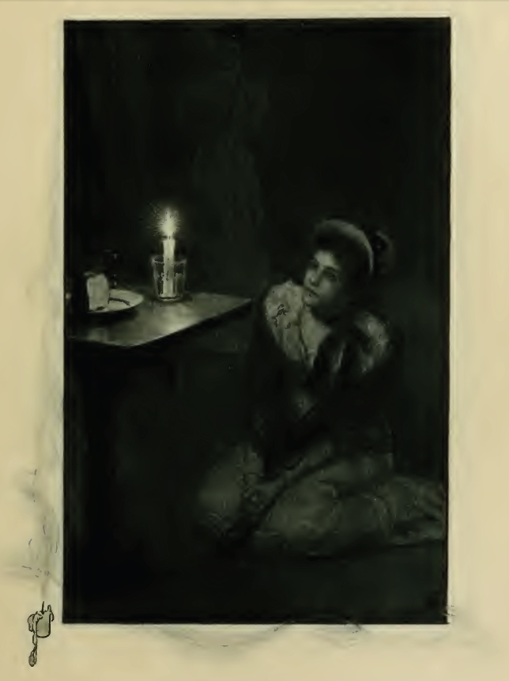
CHAPTER XV.
ROLLED IN THE DUST.CHAPTER XVI.
STARLIGHT IN THE RUE CHARTRES.CHAPTER XVII.
THAT NIGHT.
*
*
*
*
*
*
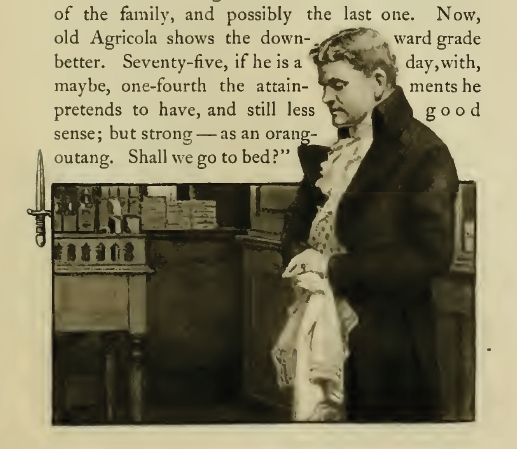
CHAPTER XVIII.
NEW LIGHT UPON DARK PLACES.
MR.
JOSEPH
FROWENFELD:
H. GRANDISSIME.
CHAPTER XIX.
ART AND COMMERCE.
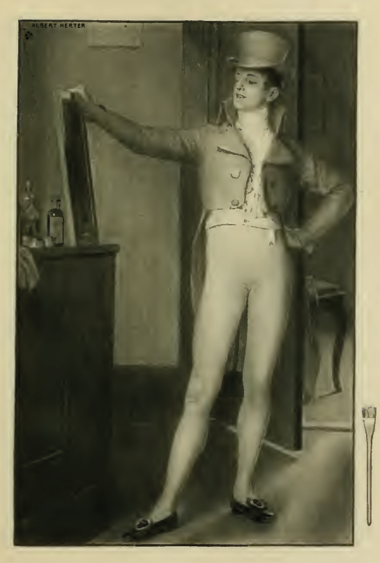
CHAPTER XX.
A VERY NATURAL MISTAKE.
In
a light, fantastic round,"
CHAPTER XXI.
DOCTOR KEENE RECOVERS HIS BULLET.
KEENE.
CHAPTER XXII.
WARS WITHIN THE BREAST.CHAPTER XXIII.
FROWENFELD KEEPS HIS APPOINTMENT.
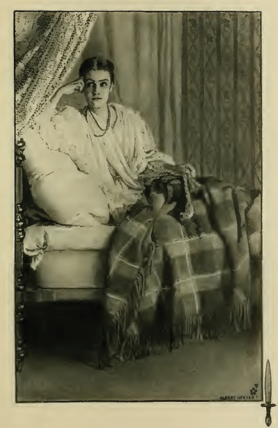
CHAPTER XXIV.
FROWENFELD MAKES AN ARGUMENT.
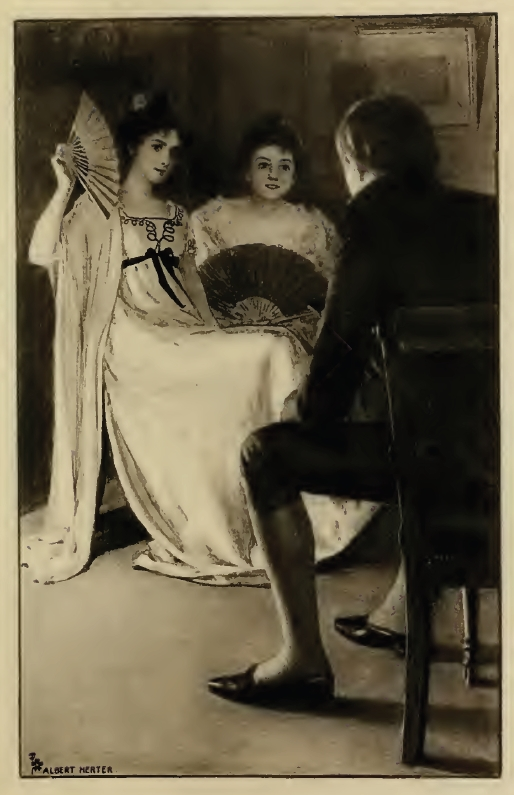
CHAPTER XXV.
AURORA AS A HISTORIAN.CHAPTER XXVI.
A RIDE AND A RESCUE.CHAPTER XXVII.
THE FÉTE DE GRANDPÈRE.
Crapaud
criait,
Moustique
chantait — "
Li
té posé au bord so lit;
Mo
di', Bouzon, bel n'amourèse!
L'aut'
fois li té si' so la saise
Comme
viê Madam dans so fauteil,
Quand
li vivé côté soleil.
So
dé la lev' plis doux passe la quitte!
Tou'
mo la vie, zamein mo oir
Ein
n'amourèse zoli comme ça!
Mo'
blié tout dipi ç' temps-là —
Mo'
blié parlé — mo' blié dormi,
Quand
mo pensê
aprés zami!"
Dé
zabs, dé zabs, dé counou ouaïe ouaïe,
Counou
ouaïe ouaïe ouaïe ouaïie,
Counou
ouaïe ouaïe ouaïe ouaïe,
Counou
ouaïe ouaïe ouaïe, momza,
Momza,
momza, momza, momza,
Roza
roza, roza-et — momza."
CHAPTER XXVIII.
THE STORY OF BRAS-COUPÉ.
Mo
pé coupé canne, zami,
Pou'
fé i'a'zen' zami,
Pou'
mo baille Palmyre.
Ah!
Palmyre, Palmyre mo c'ere,
Mo
l'aimé'ou' — mo
l'aimé ou'."
Mo
l'aimé 'ou' — mo l'aimé,
l'aimé 'ou.' "
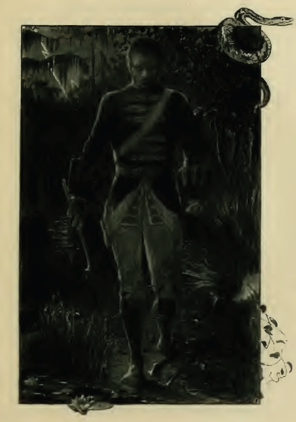
CHAPTER XXIX.
THE STORY OF BRAS-COUPÉ, CONTINUED.
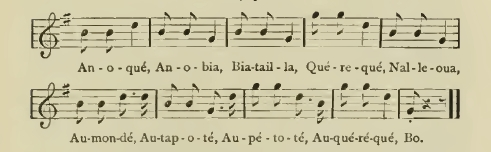
Au-mon-dé,
Au-tap-o-té, Au-pa-to-té,
Au qué-ré-qué, Bo.
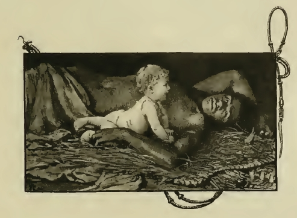
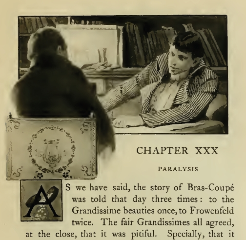
CHAPTER XXX.
PARALYSIS.CHAPTER XXXI.
ANOTHER WOUND IN A NEW PLACE.CHAPTER XXXII.
INTERRUPTED PRELIMINARIES.CHAPTER XXXIII.
UNKINDEST CUT OF ALL.CHAPTER XXXIV.
CLOTILDE AS A SURGEON.CHAPTER XXXV.
"FO' WAD YOU CRYNE?"
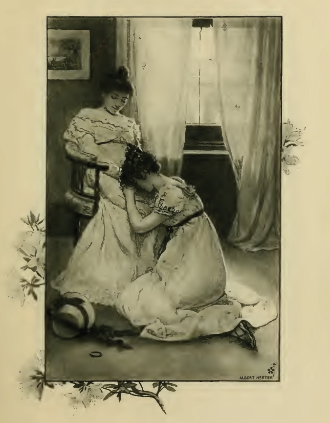
CHAPTER XXXVI.
AURORA'S LAST PICAYUNE.CHAPTER XXXVII.
HONORÉ MAKES SOME CONFESSIONS.CHAPTER XXXVIII.
TESTS OF FRIENDSHIP.
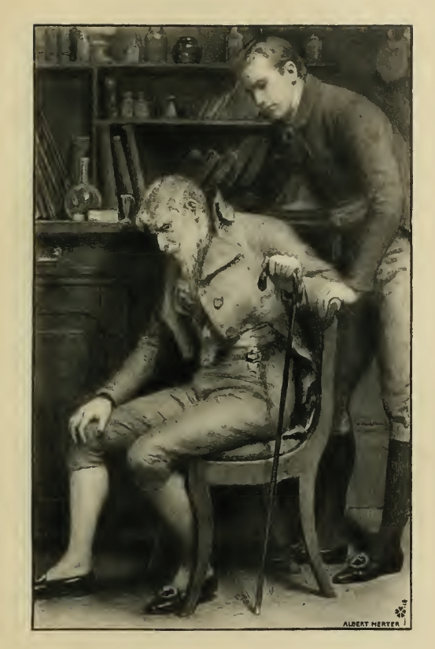
CHAPTER XXIX.
LOUISIANA STATES HER WANTS.CHAPTER XL.
FROWENFELD FINDS SYLVESTRE.CHAPTER XLI.
TO COME TO THE POINT.
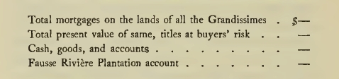
CHAPTER XLII.
AN INHERITANCE OF WRONG.
Ba
boum, ba boum, boum, boum."
"Run, fetch that girl here," said Dr. Keene to the
slave woman who had just entered his room with a
pitcher of water.CHAPTER XLIII.
THE EAGLE VISITS THE DOVES IN THEIR NEST.
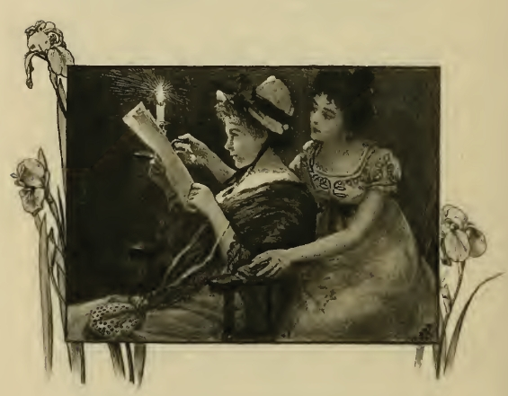
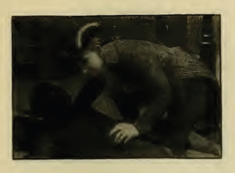
CHAPTER XLIV.
BAD FOR CHARLIE KEENE.
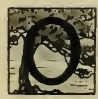N the same evening, of which we have been telling,
about the time that Aurora and Clotilde were dropping
their last tear of joy over the document of restitution, a
noticeable figure stood alone at the corner of the rue du
Canal and the rue Chartres. He had reached there and
paused, just as the brighter glare of the set sun was
growing dim above the tops of the cypresses. After
walking with some rapidity of step, he had stopped
aimlessly, and laid his hand with an air of weariness
upon a rotting China-tree that leaned over the ditch at
the edge of the unpaved walk.CHAPTER XLV.
MORE REPARATIONS.CHAPTER XLVI.
THE PIQUE-EN-TERRE LOSES ONE OF HER CREW.CHAPTER XLVII.
THE NEWS.CHAPTER XLVIII.
AN INDIGNANT FAMILY AND A SMASHED SHOP.CHAPTER XLIX.
OVER THE NEW STORE.CHAPTER L.
A PROPOSAL OF MARRIAGE.
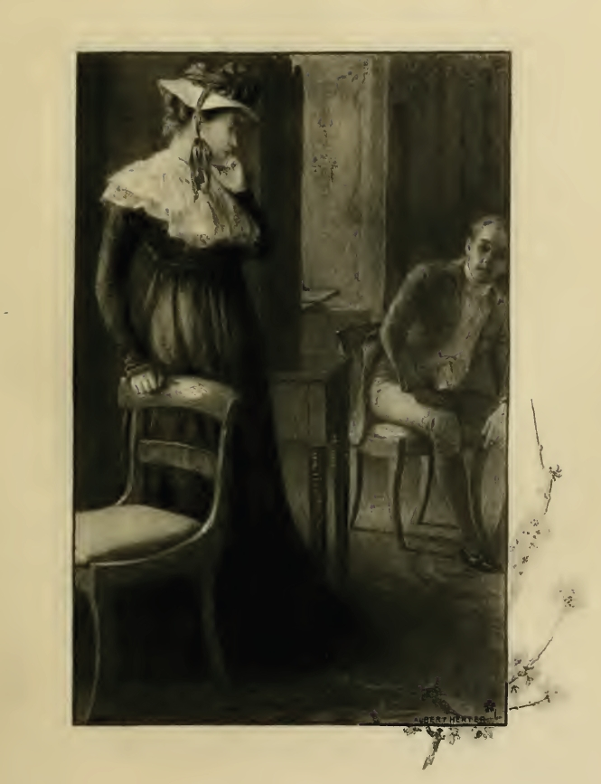
CHAPTER LI.
BUSINESS CHANGES.CHAPTER LII.
LOVE LIES A-BLEEDING.

CHAPTER LIII.
FROWENFELD AT THE GRANDISSIME MANSION.
CLEMENCE.
"Miché Igenne, oap! oap! oap!"
HE.
"Yé donné vingt cinq sous pou' manzé
poulé."
SHE.
"Miché Igenne, dit — dit — dit — "
HE.
"Mo pas l'aimein ça!"
SHE.
"Miché Igenne, oap! oap! oap!"
HE.
"Mo pas l'aimein ça!"
SHE.
"Miché Igenne, oap! oap! oap!"
CHAPTER LIV.
"CAULDRON BUBBLE."CHAPTER LV.
CAUGHT.CHAPTER LVI.
BLOOD FOR A BLOW.CHAPTER LVII.
VOUDOU CURED.CHAPTER LVIII.
DYING WORDS.CHAPTER LIX.
WHERE SOME CREOLE MONEY GOES.CHAPTER LX.
"ALL RIGHT."
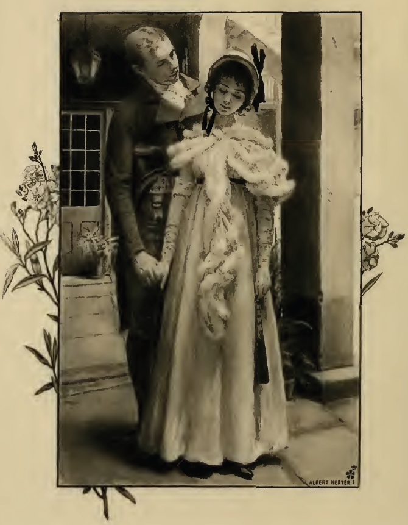
CHAPTER LXI.
"NO!"

Notes
Brahmin. A member of the upper caste in traditional India.
Mandarin. A high-ranking official in Imperial China; more generally, someone who commands respect.
Fusilier. A French soldier armed with a flintlock musket called the the fusil.
Grandissime. Grandest.
Dancé calinda, bou-joum! bou-joum!
Dancé calinda, bou-joum! bou-joum!"
"Mr. Honore, how are you!
Find your friends among the Yankees
Dance Calinda, good day, good day!
Dance Calinda, good day, good day!"
Two little birds were sitting on the fence,
Two little birds were twittering,
What they were saying I do not know.
A chicken hawk came along the road,
Pounced on them and ate them up.
No one hears the twittering anymore,
The two little birds on the fence!
Source

{kind=link}
{kind=link}
{kind=link}
{kind=link}
{kind=link}
{kind=link}
{kind=link}
{kind=link}
{kind=link}
{kind=link}
{kind=link}
{kind=link}
{kind=link}
{kind=link}
{kind=link}
{kind=link}
{kind=link}
{kind=link}